Demographic data base (Sweden 1760-1880), robustness analyses
Loading details
source("0__helpers.R")
opts_chunk$set(warning=TRUE, cache=F,cache.lazy=F,tidy=FALSE,autodep=TRUE,dev=c('png','pdf'),fig.width=20,fig.height=12.5,out.width='1440px',out.height='900px',cache.extra=file.info('swed1.rdata')[, 'mtime'])
make_path = function(file) {
get_coefficient_path(file, "ddb")
}
# options for each chunk calling knit_child
opts_chunk$set(warning=FALSE, message = FALSE)Analysis description
Data subset
The ddb.1 dataset contains only those participants where paternal age is known and the birthdate is between 1760 and 1880.
Model description
All of the following models are the same as our main model m3, except for the noted changes to test robustness.
r1: Relaxed exclusion criteria
For the four historical populations, we imposed quite stringent exclusion criteria to ensure sufficient data quality for our intended analysis. This was not necessary for the modern Swedish data, because there were no exclusion criteria to relax.
model_filename = make_path("r1_relaxed_exclusion_criteria")
if (file.exists(model_filename)) {
cat(summarise_model())
r1 = model
}Model summary
Full summary
model_summary = summary(model, use_cache = FALSE, priors = TRUE)
print(model_summary)## Family: hurdle_poisson (log)
## Formula: children ~ paternalage + birth_cohort + male + maternalage.factor + paternalage.mean + paternal_loss + maternal_loss + older_siblings + nr.siblings + last_born + (1 | idParents)
## hu ~ paternalage + birth_cohort + male + maternalage.factor + paternalage.mean + paternal_loss + maternal_loss + older_siblings + nr.siblings + last_born + (1 | idParents)
## Data: model_data (Number of observations: 84106)
## Samples: 6 chains, each with iter = 800; warmup = 300; thin = 1;
## total post-warmup samples = 3000
## WAIC: Not computed
##
## Priors:
## b ~ normal(0,5)
## sd ~ student_t(3, 0, 5)
## b_hu ~ normal(0,5)
## sd_hu ~ student_t(3, 0, 10)
##
## Group-Level Effects:
## ~idParents (Number of levels: 24407)
## Estimate Est.Error l-95% CI u-95% CI Eff.Sample Rhat
## sd(Intercept) 0.37 0.01 0.36 0.38 1148 1.00
## sd(hu_Intercept) 0.92 0.02 0.89 0.96 1079 1.01
##
## Population-Level Effects:
## Estimate Est.Error l-95% CI u-95% CI Eff.Sample
## Intercept 1.35 0.08 1.20 1.50 189
## paternalage -0.05 0.02 -0.09 -0.01 899
## birth_cohort1750M1755 -0.12 0.10 -0.32 0.08 401
## birth_cohort1755M1760 0.05 0.09 -0.12 0.23 305
## birth_cohort1760M1765 0.12 0.08 -0.04 0.28 217
## birth_cohort1765M1770 0.11 0.08 -0.06 0.27 222
## birth_cohort1770M1775 0.06 0.08 -0.10 0.24 216
## birth_cohort1775M1780 0.06 0.08 -0.10 0.22 196
## birth_cohort1780M1785 0.16 0.08 0.01 0.32 195
## birth_cohort1785M1790 0.11 0.08 -0.05 0.27 190
## birth_cohort1790M1795 0.03 0.08 -0.12 0.18 180
## birth_cohort1795M1800 0.02 0.08 -0.13 0.17 181
## birth_cohort1800M1805 -0.03 0.08 -0.17 0.12 179
## birth_cohort1805M1810 0.00 0.07 -0.15 0.14 178
## birth_cohort1810M1815 0.01 0.07 -0.14 0.15 177
## birth_cohort1815M1820 0.07 0.07 -0.08 0.21 170
## birth_cohort1820M1825 0.08 0.07 -0.07 0.22 173
## birth_cohort1825M1830 0.04 0.07 -0.10 0.19 170
## birth_cohort1830M1835 0.07 0.07 -0.08 0.21 170
## birth_cohort1835M1840 0.06 0.07 -0.09 0.20 173
## birth_cohort1840M1845 0.03 0.07 -0.11 0.17 171
## birth_cohort1845M1850 0.03 0.07 -0.12 0.17 171
## male1 0.04 0.01 0.03 0.05 3000
## maternalage.factor1020 0.05 0.03 0.00 0.10 3000
## maternalage.factor3559 0.06 0.01 0.04 0.08 3000
## paternalage.mean 0.05 0.02 0.02 0.09 953
## paternal_loss01 0.03 0.04 -0.04 0.11 3000
## paternal_loss15 0.03 0.02 -0.02 0.07 1966
## paternal_loss510 -0.02 0.02 -0.06 0.02 1748
## paternal_loss1015 -0.02 0.02 -0.06 0.01 1640
## paternal_loss1520 -0.08 0.02 -0.11 -0.04 1550
## paternal_loss2025 -0.04 0.02 -0.07 0.00 1628
## paternal_loss2530 -0.02 0.01 -0.05 0.01 1606
## paternal_loss3035 -0.02 0.01 -0.05 0.01 1722
## paternal_loss3540 0.02 0.01 0.00 0.05 2126
## paternal_loss4045 0.03 0.01 0.00 0.05 2320
## paternal_lossunclear -0.05 0.02 -0.09 -0.01 1945
## maternal_loss01 0.03 0.05 -0.07 0.12 3000
## maternal_loss15 -0.01 0.03 -0.06 0.04 3000
## maternal_loss510 -0.03 0.02 -0.07 0.02 1873
## maternal_loss1015 -0.05 0.02 -0.10 -0.01 3000
## maternal_loss1520 -0.05 0.02 -0.09 -0.01 1744
## maternal_loss2025 -0.07 0.02 -0.11 -0.04 1601
## maternal_loss2530 -0.03 0.02 -0.06 0.00 1935
## maternal_loss3035 -0.02 0.01 -0.05 0.01 1820
## maternal_loss3540 0.00 0.01 -0.02 0.03 3000
## maternal_loss4045 -0.02 0.01 -0.04 0.00 3000
## maternal_lossunclear -0.16 0.02 -0.20 -0.12 1998
## older_siblings1 0.02 0.01 -0.01 0.04 1482
## older_siblings2 0.03 0.01 0.00 0.06 1135
## older_siblings3 0.03 0.02 0.00 0.07 943
## older_siblings4 0.01 0.02 -0.03 0.05 987
## older_siblings5P 0.03 0.03 -0.02 0.08 830
## nr.siblings 0.02 0.00 0.02 0.03 1024
## last_born1 -0.02 0.01 -0.04 0.00 3000
## hu_Intercept 0.07 0.18 -0.28 0.42 292
## hu_paternalage 0.29 0.05 0.19 0.40 1010
## hu_birth_cohort1750M1755 0.04 0.25 -0.44 0.53 683
## hu_birth_cohort1755M1760 -0.03 0.22 -0.46 0.40 436
## hu_birth_cohort1760M1765 -0.09 0.20 -0.49 0.30 333
## hu_birth_cohort1765M1770 -0.29 0.20 -0.68 0.11 351
## hu_birth_cohort1770M1775 -0.19 0.21 -0.59 0.22 344
## hu_birth_cohort1775M1780 0.14 0.20 -0.24 0.53 321
## hu_birth_cohort1780M1785 0.07 0.20 -0.31 0.44 318
## hu_birth_cohort1785M1790 0.23 0.19 -0.14 0.60 302
## hu_birth_cohort1790M1795 0.39 0.18 0.04 0.72 302
## hu_birth_cohort1795M1800 0.24 0.18 -0.11 0.57 280
## hu_birth_cohort1800M1805 0.16 0.18 -0.19 0.49 273
## hu_birth_cohort1805M1810 0.13 0.17 -0.21 0.46 269
## hu_birth_cohort1810M1815 0.22 0.17 -0.11 0.55 259
## hu_birth_cohort1815M1820 0.06 0.17 -0.27 0.38 257
## hu_birth_cohort1820M1825 -0.07 0.17 -0.41 0.24 258
## hu_birth_cohort1825M1830 -0.10 0.17 -0.44 0.22 257
## hu_birth_cohort1830M1835 -0.10 0.17 -0.43 0.22 256
## hu_birth_cohort1835M1840 -0.15 0.17 -0.48 0.17 257
## hu_birth_cohort1840M1845 -0.14 0.17 -0.48 0.18 256
## hu_birth_cohort1845M1850 -0.13 0.17 -0.46 0.19 255
## hu_male1 0.07 0.02 0.03 0.10 3000
## hu_maternalage.factor1020 0.13 0.08 -0.02 0.28 3000
## hu_maternalage.factor3559 -0.04 0.03 -0.09 0.01 3000
## hu_paternalage.mean -0.31 0.05 -0.42 -0.21 1090
## hu_paternal_loss01 0.76 0.09 0.59 0.93 3000
## hu_paternal_loss15 0.61 0.06 0.49 0.73 1918
## hu_paternal_loss510 0.59 0.05 0.49 0.70 1660
## hu_paternal_loss1015 0.45 0.05 0.35 0.55 1757
## hu_paternal_loss1520 0.35 0.05 0.26 0.44 1724
## hu_paternal_loss2025 0.24 0.04 0.15 0.32 1706
## hu_paternal_loss2530 0.15 0.04 0.07 0.23 1462
## hu_paternal_loss3035 0.09 0.04 0.01 0.17 1814
## hu_paternal_loss3540 0.07 0.04 -0.01 0.15 1623
## hu_paternal_loss4045 0.00 0.04 -0.07 0.08 3000
## hu_paternal_lossunclear 1.24 0.05 1.14 1.34 1526
## hu_maternal_loss01 1.76 0.11 1.54 1.98 3000
## hu_maternal_loss15 0.95 0.07 0.82 1.08 3000
## hu_maternal_loss510 0.83 0.06 0.71 0.94 3000
## hu_maternal_loss1015 0.78 0.05 0.67 0.88 3000
## hu_maternal_loss1520 0.61 0.05 0.52 0.71 3000
## hu_maternal_loss2025 0.41 0.05 0.32 0.49 3000
## hu_maternal_loss2530 0.25 0.04 0.17 0.33 3000
## hu_maternal_loss3035 0.18 0.04 0.11 0.26 3000
## hu_maternal_loss3540 0.10 0.03 0.04 0.17 3000
## hu_maternal_loss4045 0.04 0.04 -0.03 0.11 3000
## hu_maternal_lossunclear 1.44 0.05 1.36 1.53 2096
## hu_older_siblings1 -0.06 0.03 -0.11 0.00 1705
## hu_older_siblings2 -0.07 0.04 -0.15 0.00 1140
## hu_older_siblings3 -0.12 0.05 -0.21 -0.02 1118
## hu_older_siblings4 -0.18 0.06 -0.30 -0.07 1066
## hu_older_siblings5P -0.27 0.08 -0.42 -0.11 990
## hu_nr.siblings 0.03 0.01 0.01 0.04 1229
## hu_last_born1 0.03 0.02 -0.01 0.08 3000
## Rhat
## Intercept 1.03
## paternalage 1.00
## birth_cohort1750M1755 1.01
## birth_cohort1755M1760 1.02
## birth_cohort1760M1765 1.02
## birth_cohort1765M1770 1.02
## birth_cohort1770M1775 1.02
## birth_cohort1775M1780 1.03
## birth_cohort1780M1785 1.03
## birth_cohort1785M1790 1.03
## birth_cohort1790M1795 1.03
## birth_cohort1795M1800 1.03
## birth_cohort1800M1805 1.03
## birth_cohort1805M1810 1.03
## birth_cohort1810M1815 1.03
## birth_cohort1815M1820 1.03
## birth_cohort1820M1825 1.03
## birth_cohort1825M1830 1.03
## birth_cohort1830M1835 1.03
## birth_cohort1835M1840 1.03
## birth_cohort1840M1845 1.03
## birth_cohort1845M1850 1.03
## male1 1.00
## maternalage.factor1020 1.00
## maternalage.factor3559 1.00
## paternalage.mean 1.01
## paternal_loss01 1.00
## paternal_loss15 1.00
## paternal_loss510 1.00
## paternal_loss1015 1.00
## paternal_loss1520 1.00
## paternal_loss2025 1.00
## paternal_loss2530 1.00
## paternal_loss3035 1.00
## paternal_loss3540 1.00
## paternal_loss4045 1.00
## paternal_lossunclear 1.00
## maternal_loss01 1.00
## maternal_loss15 1.00
## maternal_loss510 1.00
## maternal_loss1015 1.00
## maternal_loss1520 1.00
## maternal_loss2025 1.00
## maternal_loss2530 1.00
## maternal_loss3035 1.00
## maternal_loss3540 1.00
## maternal_loss4045 1.00
## maternal_lossunclear 1.00
## older_siblings1 1.00
## older_siblings2 1.00
## older_siblings3 1.00
## older_siblings4 1.00
## older_siblings5P 1.00
## nr.siblings 1.00
## last_born1 1.00
## hu_Intercept 1.01
## hu_paternalage 1.00
## hu_birth_cohort1750M1755 1.00
## hu_birth_cohort1755M1760 1.01
## hu_birth_cohort1760M1765 1.01
## hu_birth_cohort1765M1770 1.01
## hu_birth_cohort1770M1775 1.01
## hu_birth_cohort1775M1780 1.01
## hu_birth_cohort1780M1785 1.01
## hu_birth_cohort1785M1790 1.01
## hu_birth_cohort1790M1795 1.01
## hu_birth_cohort1795M1800 1.01
## hu_birth_cohort1800M1805 1.01
## hu_birth_cohort1805M1810 1.01
## hu_birth_cohort1810M1815 1.01
## hu_birth_cohort1815M1820 1.01
## hu_birth_cohort1820M1825 1.01
## hu_birth_cohort1825M1830 1.01
## hu_birth_cohort1830M1835 1.01
## hu_birth_cohort1835M1840 1.01
## hu_birth_cohort1840M1845 1.01
## hu_birth_cohort1845M1850 1.01
## hu_male1 1.00
## hu_maternalage.factor1020 1.00
## hu_maternalage.factor3559 1.00
## hu_paternalage.mean 1.00
## hu_paternal_loss01 1.00
## hu_paternal_loss15 1.00
## hu_paternal_loss510 1.00
## hu_paternal_loss1015 1.00
## hu_paternal_loss1520 1.00
## hu_paternal_loss2025 1.00
## hu_paternal_loss2530 1.00
## hu_paternal_loss3035 1.00
## hu_paternal_loss3540 1.00
## hu_paternal_loss4045 1.00
## hu_paternal_lossunclear 1.00
## hu_maternal_loss01 1.00
## hu_maternal_loss15 1.00
## hu_maternal_loss510 1.00
## hu_maternal_loss1015 1.00
## hu_maternal_loss1520 1.00
## hu_maternal_loss2025 1.00
## hu_maternal_loss2530 1.00
## hu_maternal_loss3035 1.00
## hu_maternal_loss3540 1.00
## hu_maternal_loss4045 1.00
## hu_maternal_lossunclear 1.00
## hu_older_siblings1 1.00
## hu_older_siblings2 1.00
## hu_older_siblings3 1.00
## hu_older_siblings4 1.00
## hu_older_siblings5P 1.00
## hu_nr.siblings 1.00
## hu_last_born1 1.00
##
## Samples were drawn using sampling(NUTS). For each parameter, Eff.Sample
## is a crude measure of effective sample size, and Rhat is the potential
## scale reduction factor on split chains (at convergence, Rhat = 1).Table of fixed effects
fixed_eff = data.frame(model_summary$fixed, check.names = F)
fixed_eff$Est.Error = fixed_eff$Eff.Sample = fixed_eff$Rhat = NULL
fixed_eff$OR = exp(fixed_eff$Estimate)
fixed_eff$OR_low = exp(fixed_eff$`l-95% CI`)
fixed_eff$OR_high = exp(fixed_eff$`u-95% CI`)
pander::pander(fixed_eff)| Â | Estimate | l-95% CI | u-95% CI | OR | OR_low | OR_high |
|---|---|---|---|---|---|---|
| Intercept | 1.347 | 1.197 | 1.496 | 3.848 | 3.311 | 4.462 |
| paternalage | -0.04906 | -0.08532 | -0.01368 | 0.9521 | 0.9182 | 0.9864 |
| birth_cohort1750M1755 | -0.116 | -0.3187 | 0.08325 | 0.8904 | 0.7271 | 1.087 |
| birth_cohort1755M1760 | 0.05015 | -0.1238 | 0.2262 | 1.051 | 0.8836 | 1.254 |
| birth_cohort1760M1765 | 0.122 | -0.04014 | 0.2825 | 1.13 | 0.9607 | 1.326 |
| birth_cohort1765M1770 | 0.1069 | -0.0555 | 0.268 | 1.113 | 0.946 | 1.307 |
| birth_cohort1770M1775 | 0.06224 | -0.09755 | 0.2362 | 1.064 | 0.9071 | 1.266 |
| birth_cohort1775M1780 | 0.0599 | -0.09951 | 0.2201 | 1.062 | 0.9053 | 1.246 |
| birth_cohort1780M1785 | 0.16 | 0.005354 | 0.3206 | 1.173 | 1.005 | 1.378 |
| birth_cohort1785M1790 | 0.1071 | -0.04798 | 0.2651 | 1.113 | 0.9532 | 1.304 |
| birth_cohort1790M1795 | 0.02511 | -0.1241 | 0.1756 | 1.025 | 0.8833 | 1.192 |
| birth_cohort1795M1800 | 0.02328 | -0.1251 | 0.1736 | 1.024 | 0.8824 | 1.19 |
| birth_cohort1800M1805 | -0.02702 | -0.1746 | 0.1232 | 0.9733 | 0.8398 | 1.131 |
| birth_cohort1805M1810 | -0.003493 | -0.146 | 0.1435 | 0.9965 | 0.8641 | 1.154 |
| birth_cohort1810M1815 | 0.006223 | -0.1355 | 0.1536 | 1.006 | 0.8733 | 1.166 |
| birth_cohort1815M1820 | 0.06565 | -0.07587 | 0.2117 | 1.068 | 0.9269 | 1.236 |
| birth_cohort1820M1825 | 0.0781 | -0.06615 | 0.2217 | 1.081 | 0.936 | 1.248 |
| birth_cohort1825M1830 | 0.04242 | -0.1016 | 0.1907 | 1.043 | 0.9034 | 1.21 |
| birth_cohort1830M1835 | 0.06544 | -0.07571 | 0.2107 | 1.068 | 0.9271 | 1.235 |
| birth_cohort1835M1840 | 0.05544 | -0.08634 | 0.2013 | 1.057 | 0.9173 | 1.223 |
| birth_cohort1840M1845 | 0.02799 | -0.1086 | 0.1743 | 1.028 | 0.8971 | 1.19 |
| birth_cohort1845M1850 | 0.0257 | -0.1161 | 0.1713 | 1.026 | 0.8904 | 1.187 |
| male1 | 0.04064 | 0.02793 | 0.05348 | 1.041 | 1.028 | 1.055 |
| maternalage.factor1020 | 0.0488 | -0.004707 | 0.1013 | 1.05 | 0.9953 | 1.107 |
| maternalage.factor3559 | 0.05674 | 0.03667 | 0.07708 | 1.058 | 1.037 | 1.08 |
| paternalage.mean | 0.05209 | 0.01516 | 0.08965 | 1.053 | 1.015 | 1.094 |
| paternal_loss01 | 0.03483 | -0.03512 | 0.1067 | 1.035 | 0.9655 | 1.113 |
| paternal_loss15 | 0.0253 | -0.02268 | 0.07108 | 1.026 | 0.9776 | 1.074 |
| paternal_loss510 | -0.02276 | -0.06242 | 0.01836 | 0.9775 | 0.9395 | 1.019 |
| paternal_loss1015 | -0.02156 | -0.05854 | 0.01469 | 0.9787 | 0.9431 | 1.015 |
| paternal_loss1520 | -0.07673 | -0.1095 | -0.0425 | 0.9261 | 0.8962 | 0.9584 |
| paternal_loss2025 | -0.03555 | -0.06692 | -0.004441 | 0.9651 | 0.9353 | 0.9956 |
| paternal_loss2530 | -0.02297 | -0.05138 | 0.005501 | 0.9773 | 0.9499 | 1.006 |
| paternal_loss3035 | -0.01927 | -0.04726 | 0.007581 | 0.9809 | 0.9538 | 1.008 |
| paternal_loss3540 | 0.02225 | -0.003521 | 0.04751 | 1.022 | 0.9965 | 1.049 |
| paternal_loss4045 | 0.02913 | 0.004003 | 0.05474 | 1.03 | 1.004 | 1.056 |
| paternal_lossunclear | -0.05459 | -0.09355 | -0.01328 | 0.9469 | 0.9107 | 0.9868 |
| maternal_loss01 | 0.02507 | -0.06999 | 0.1238 | 1.025 | 0.9324 | 1.132 |
| maternal_loss15 | -0.01009 | -0.0633 | 0.0449 | 0.99 | 0.9387 | 1.046 |
| maternal_loss510 | -0.02618 | -0.07021 | 0.01686 | 0.9742 | 0.9322 | 1.017 |
| maternal_loss1015 | -0.05465 | -0.09764 | -0.01115 | 0.9468 | 0.907 | 0.9889 |
| maternal_loss1520 | -0.05093 | -0.08717 | -0.01183 | 0.9503 | 0.9165 | 0.9882 |
| maternal_loss2025 | -0.07284 | -0.1068 | -0.03882 | 0.9297 | 0.8987 | 0.9619 |
| maternal_loss2530 | -0.02687 | -0.05755 | 0.002956 | 0.9735 | 0.9441 | 1.003 |
| maternal_loss3035 | -0.02205 | -0.0485 | 0.005304 | 0.9782 | 0.9527 | 1.005 |
| maternal_loss3540 | 0.003149 | -0.02085 | 0.02724 | 1.003 | 0.9794 | 1.028 |
| maternal_loss4045 | -0.01971 | -0.04497 | 0.004739 | 0.9805 | 0.956 | 1.005 |
| maternal_lossunclear | -0.1621 | -0.2 | -0.1236 | 0.8503 | 0.8188 | 0.8837 |
| older_siblings1 | 0.0152 | -0.005181 | 0.03602 | 1.015 | 0.9948 | 1.037 |
| older_siblings2 | 0.02956 | 0.003269 | 0.05564 | 1.03 | 1.003 | 1.057 |
| older_siblings3 | 0.0331 | 0.0008329 | 0.06679 | 1.034 | 1.001 | 1.069 |
| older_siblings4 | 0.009538 | -0.03058 | 0.0492 | 1.01 | 0.9699 | 1.05 |
| older_siblings5P | 0.02895 | -0.02191 | 0.08074 | 1.029 | 0.9783 | 1.084 |
| nr.siblings | 0.02206 | 0.01723 | 0.02688 | 1.022 | 1.017 | 1.027 |
| last_born1 | -0.01767 | -0.03558 | -8.103e-05 | 0.9825 | 0.965 | 0.9999 |
| hu_Intercept | 0.06524 | -0.2753 | 0.4153 | 1.067 | 0.7594 | 1.515 |
| hu_paternalage | 0.2911 | 0.1934 | 0.3965 | 1.338 | 1.213 | 1.487 |
| hu_birth_cohort1750M1755 | 0.03688 | -0.4381 | 0.5315 | 1.038 | 0.6453 | 1.701 |
| hu_birth_cohort1755M1760 | -0.02548 | -0.46 | 0.3987 | 0.9748 | 0.6313 | 1.49 |
| hu_birth_cohort1760M1765 | -0.08898 | -0.487 | 0.2979 | 0.9149 | 0.6145 | 1.347 |
| hu_birth_cohort1765M1770 | -0.2854 | -0.6792 | 0.1059 | 0.7517 | 0.507 | 1.112 |
| hu_birth_cohort1770M1775 | -0.1859 | -0.586 | 0.223 | 0.8303 | 0.5566 | 1.25 |
| hu_birth_cohort1775M1780 | 0.1447 | -0.2385 | 0.5265 | 1.156 | 0.7878 | 1.693 |
| hu_birth_cohort1780M1785 | 0.06765 | -0.3137 | 0.443 | 1.07 | 0.7307 | 1.557 |
| hu_birth_cohort1785M1790 | 0.2289 | -0.1399 | 0.6045 | 1.257 | 0.8694 | 1.83 |
| hu_birth_cohort1790M1795 | 0.3911 | 0.04112 | 0.7236 | 1.479 | 1.042 | 2.062 |
| hu_birth_cohort1795M1800 | 0.2385 | -0.1105 | 0.5708 | 1.269 | 0.8954 | 1.77 |
| hu_birth_cohort1800M1805 | 0.1606 | -0.1924 | 0.4863 | 1.174 | 0.8249 | 1.626 |
| hu_birth_cohort1805M1810 | 0.1321 | -0.2088 | 0.4631 | 1.141 | 0.8116 | 1.589 |
| hu_birth_cohort1810M1815 | 0.2218 | -0.1102 | 0.5486 | 1.248 | 0.8957 | 1.731 |
| hu_birth_cohort1815M1820 | 0.0602 | -0.2709 | 0.3766 | 1.062 | 0.7627 | 1.457 |
| hu_birth_cohort1820M1825 | -0.07339 | -0.4125 | 0.2444 | 0.9292 | 0.662 | 1.277 |
| hu_birth_cohort1825M1830 | -0.104 | -0.4409 | 0.2153 | 0.9013 | 0.6434 | 1.24 |
| hu_birth_cohort1830M1835 | -0.09829 | -0.4308 | 0.2206 | 0.9064 | 0.65 | 1.247 |
| hu_birth_cohort1835M1840 | -0.1456 | -0.4841 | 0.1709 | 0.8645 | 0.6163 | 1.186 |
| hu_birth_cohort1840M1845 | -0.1383 | -0.4816 | 0.1836 | 0.8708 | 0.6178 | 1.202 |
| hu_birth_cohort1845M1850 | -0.1275 | -0.4587 | 0.1889 | 0.8803 | 0.6321 | 1.208 |
| hu_male1 | 0.06894 | 0.03411 | 0.103 | 1.071 | 1.035 | 1.108 |
| hu_maternalage.factor1020 | 0.1264 | -0.02454 | 0.2793 | 1.135 | 0.9758 | 1.322 |
| hu_maternalage.factor3559 | -0.03896 | -0.09169 | 0.01232 | 0.9618 | 0.9124 | 1.012 |
| hu_paternalage.mean | -0.3088 | -0.415 | -0.2095 | 0.7343 | 0.6603 | 0.811 |
| hu_paternal_loss01 | 0.7592 | 0.5852 | 0.9262 | 2.137 | 1.795 | 2.525 |
| hu_paternal_loss15 | 0.6144 | 0.4949 | 0.7349 | 1.848 | 1.64 | 2.085 |
| hu_paternal_loss510 | 0.5935 | 0.4894 | 0.701 | 1.81 | 1.631 | 2.016 |
| hu_paternal_loss1015 | 0.4475 | 0.3521 | 0.5455 | 1.564 | 1.422 | 1.726 |
| hu_paternal_loss1520 | 0.3494 | 0.2593 | 0.4408 | 1.418 | 1.296 | 1.554 |
| hu_paternal_loss2025 | 0.2353 | 0.1516 | 0.3194 | 1.265 | 1.164 | 1.376 |
| hu_paternal_loss2530 | 0.1516 | 0.07003 | 0.2333 | 1.164 | 1.073 | 1.263 |
| hu_paternal_loss3035 | 0.08807 | 0.009507 | 0.1673 | 1.092 | 1.01 | 1.182 |
| hu_paternal_loss3540 | 0.07047 | -0.006495 | 0.149 | 1.073 | 0.9935 | 1.161 |
| hu_paternal_loss4045 | 0.003806 | -0.07405 | 0.08235 | 1.004 | 0.9286 | 1.086 |
| hu_paternal_lossunclear | 1.242 | 1.144 | 1.339 | 3.461 | 3.14 | 3.815 |
| hu_maternal_loss01 | 1.757 | 1.541 | 1.975 | 5.792 | 4.67 | 7.209 |
| hu_maternal_loss15 | 0.9507 | 0.8191 | 1.085 | 2.587 | 2.269 | 2.959 |
| hu_maternal_loss510 | 0.8259 | 0.7112 | 0.9428 | 2.284 | 2.036 | 2.567 |
| hu_maternal_loss1015 | 0.7782 | 0.6731 | 0.8848 | 2.177 | 1.96 | 2.423 |
| hu_maternal_loss1520 | 0.6124 | 0.5202 | 0.7068 | 1.845 | 1.682 | 2.028 |
| hu_maternal_loss2025 | 0.4054 | 0.3173 | 0.4932 | 1.5 | 1.373 | 1.637 |
| hu_maternal_loss2530 | 0.2527 | 0.1738 | 0.3332 | 1.288 | 1.19 | 1.395 |
| hu_maternal_loss3035 | 0.185 | 0.1115 | 0.2607 | 1.203 | 1.118 | 1.298 |
| hu_maternal_loss3540 | 0.1031 | 0.03537 | 0.1697 | 1.109 | 1.036 | 1.185 |
| hu_maternal_loss4045 | 0.04019 | -0.03125 | 0.1077 | 1.041 | 0.9692 | 1.114 |
| hu_maternal_lossunclear | 1.442 | 1.358 | 1.53 | 4.227 | 3.887 | 4.617 |
| hu_older_siblings1 | -0.05694 | -0.1142 | -0.001545 | 0.9446 | 0.8921 | 0.9985 |
| hu_older_siblings2 | -0.07032 | -0.1479 | 0.002092 | 0.9321 | 0.8625 | 1.002 |
| hu_older_siblings3 | -0.1176 | -0.2137 | -0.02335 | 0.8891 | 0.8076 | 0.9769 |
| hu_older_siblings4 | -0.1836 | -0.3031 | -0.06893 | 0.8323 | 0.7385 | 0.9334 |
| hu_older_siblings5P | -0.2669 | -0.4192 | -0.1145 | 0.7658 | 0.6576 | 0.8918 |
| hu_nr.siblings | 0.02706 | 0.01412 | 0.04034 | 1.027 | 1.014 | 1.041 |
| hu_last_born1 | 0.03449 | -0.01305 | 0.08228 | 1.035 | 0.987 | 1.086 |
Paternal age effect
pander::pander(paternal_age_10y_effect(model))| effect | median_estimate | ci_95 | ci_80 |
|---|---|---|---|
| estimate father 25y | 2.42 | [1.97;2.96] | [2.12;2.76] |
| estimate father 35y | 2 | [1.58;2.48] | [1.72;2.31] |
| percentage change | -17.32 | [-22.85;-11.8] | [-20.98;-13.78] |
| OR/IRR | 0.95 | [0.92;0.99] | [0.93;0.97] |
| OR hurdle | 1.34 | [1.21;1.49] | [1.25;1.43] |
Marginal effect plots
plot.brmsMarginalEffects_shades(
x = marginal_effects(model, re_formula = NA, probs = c(0.025,0.975)),
y = marginal_effects(model, re_formula = NA, probs = c(0.1,0.9)),
ask = FALSE)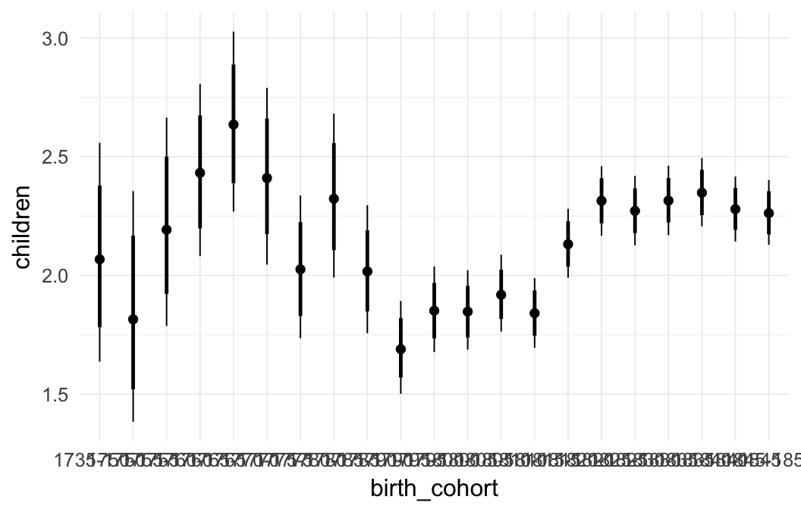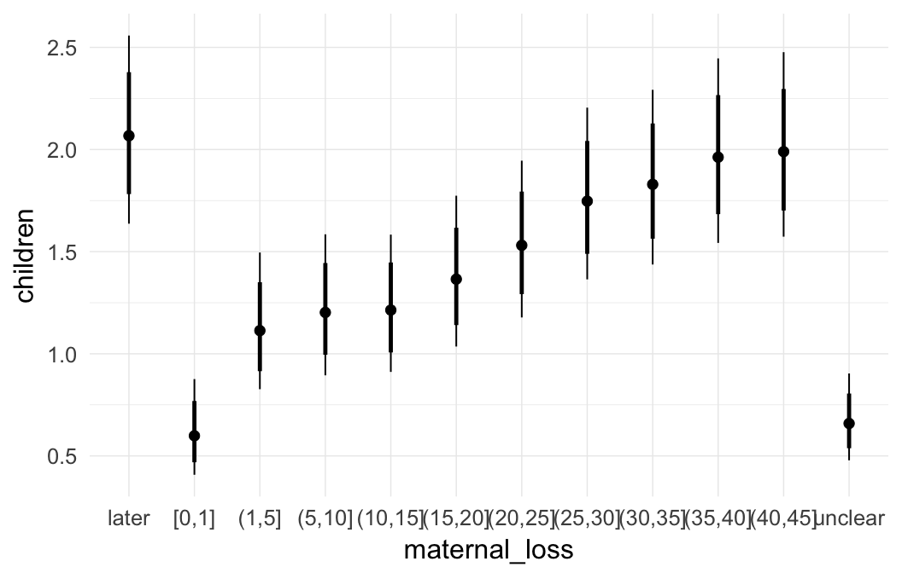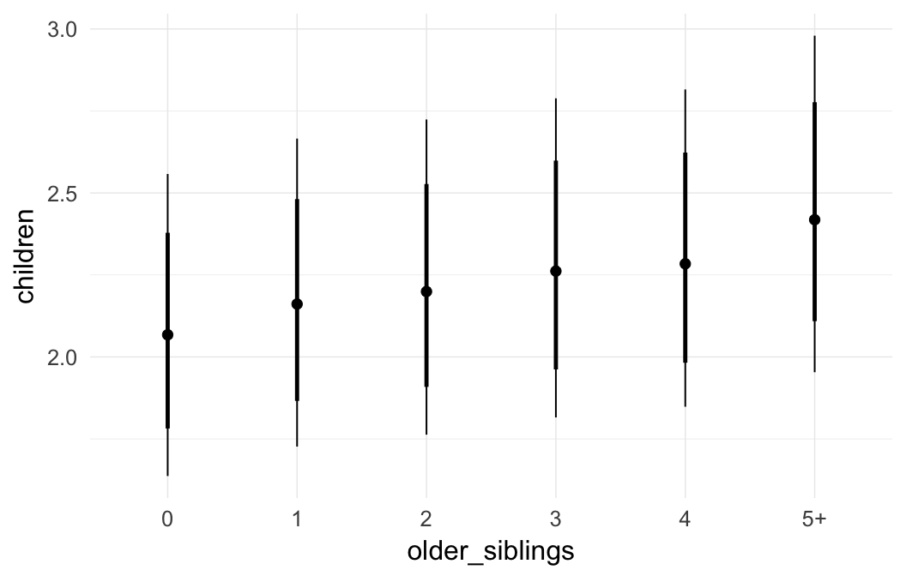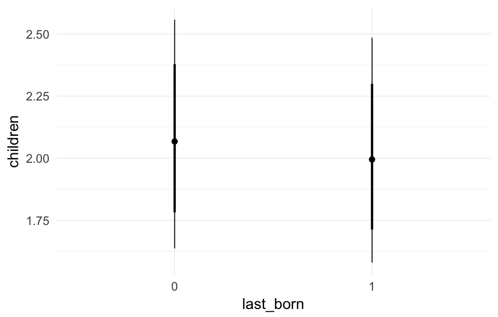
Coefficient plot
Coefficient estimates (95% and 80% credibility).
mcmc_intervals(as.matrix(model$fit), regex_pars = "b_[^I]")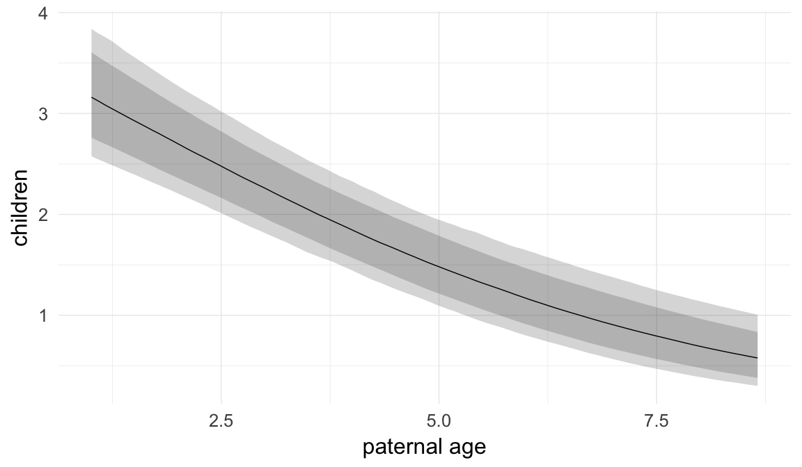
mcmc_areas(as.matrix(model$fit), regex_pars = "b")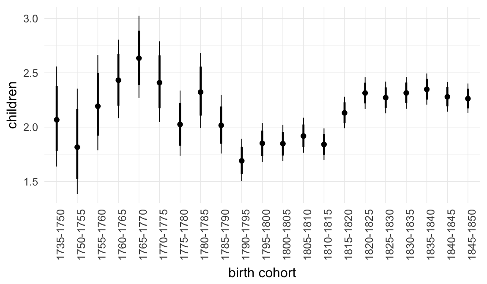
Diagnostics
These plots were made to diagnose misfit and nonconvergence.
Posterior predictive checks
brms::pp_check(model, re_formula = NA, type = "dens_overlay")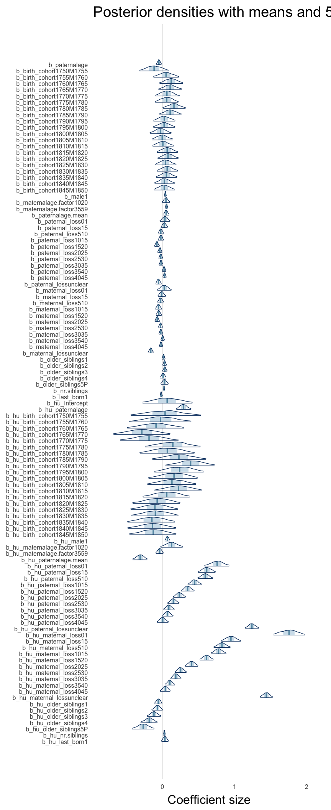
brms::pp_check(model, re_formula = NA, type = "hist")Rhat
Did the 6 chains converge?
stanplot(model, pars = "^b_[^I]", type = 'rhat')Effective sample size by average sample size
stanplot(model, pars = "^b", type = 'ess')
Monte Carlo SE
stanplot(model, pars = "^b", type = 'mcse')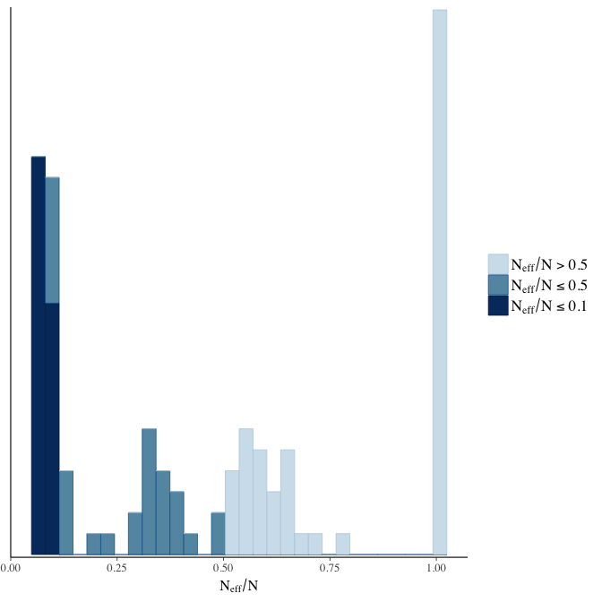
Trace plots
if(any( summary(model)$fixed[,"Rhat"] > 1.1)) { # only do traceplots if not converged
plot(model, N = 3, ask = FALSE)
}Further plots
stanplot(model, pars = "^b", type = 'diag')File name
coefs/ddb/r1_relaxed_exclusion_criteria.rds
Cluster script
opts_chunk$set(echo = FALSE)
clusterscript = str_replace(basename(model_filename), "\\.rds",".html")
cat("[Cluster script](" , clusterscript, ")", sep = "")r2: Fewer covariates
Adding covariates increases the complexity of the model and makes it harder to interpret. We chose to adjust for many potential confounds because we are interested in causal isolation of the paternal age effect. Here we show what happens when only birth cohort and average paternal age in the family are adjusted for.
Model summary
Full summary
model_summary = summary(model, use_cache = FALSE, priors = TRUE)
print(model_summary)## Family: hurdle_poisson (log)
## Formula: children ~ paternalage + birth_cohort + paternalage.mean + (1 | idParents)
## hu ~ paternalage + birth_cohort + paternalage.mean + (1 | idParents)
## Data: model_data (Number of observations: 56663)
## Samples: 6 chains, each with iter = 1500; warmup = 1000; thin = 1;
## total post-warmup samples = 3000
## WAIC: Not computed
##
## Priors:
## b ~ normal(0,5)
## sd ~ student_t(3, 0, 5)
## b_hu ~ normal(0,5)
## sd_hu ~ student_t(3, 0, 10)
##
## Group-Level Effects:
## ~idParents (Number of levels: 14746)
## Estimate Est.Error l-95% CI u-95% CI Eff.Sample Rhat
## sd(Intercept) 0.36 0.01 0.35 0.38 1158 1.01
## sd(hu_Intercept) 0.89 0.02 0.85 0.92 1175 1.00
##
## Population-Level Effects:
## Estimate Est.Error l-95% CI u-95% CI Eff.Sample
## Intercept 1.39 0.08 1.23 1.54 313
## paternalage -0.03 0.01 -0.05 -0.02 3000
## birth_cohort1750M1755 -0.14 0.12 -0.37 0.09 816
## birth_cohort1755M1760 0.10 0.09 -0.08 0.28 504
## birth_cohort1760M1765 0.16 0.09 -0.01 0.32 397
## birth_cohort1765M1770 0.12 0.09 -0.05 0.30 374
## birth_cohort1770M1775 0.08 0.09 -0.09 0.25 380
## birth_cohort1775M1780 0.07 0.08 -0.10 0.23 357
## birth_cohort1780M1785 0.18 0.08 0.01 0.35 333
## birth_cohort1785M1790 0.13 0.08 -0.04 0.29 309
## birth_cohort1790M1795 0.01 0.08 -0.14 0.17 305
## birth_cohort1795M1800 0.02 0.08 -0.14 0.17 290
## birth_cohort1800M1805 -0.03 0.08 -0.17 0.13 295
## birth_cohort1805M1810 -0.01 0.08 -0.16 0.14 295
## birth_cohort1810M1815 0.02 0.08 -0.12 0.17 288
## birth_cohort1815M1820 0.07 0.08 -0.07 0.22 280
## birth_cohort1820M1825 0.10 0.07 -0.04 0.25 283
## birth_cohort1825M1830 0.07 0.07 -0.08 0.22 280
## birth_cohort1830M1835 0.10 0.07 -0.05 0.25 274
## birth_cohort1835M1840 0.10 0.08 -0.04 0.25 273
## birth_cohort1840M1845 0.09 0.08 -0.06 0.24 276
## birth_cohort1845M1850 0.10 0.07 -0.04 0.25 276
## paternalage.mean 0.05 0.01 0.03 0.07 2420
## hu_Intercept 0.43 0.19 0.05 0.81 321
## hu_paternalage 0.32 0.02 0.28 0.36 3000
## hu_birth_cohort1750M1755 0.37 0.29 -0.18 0.95 826
## hu_birth_cohort1755M1760 0.06 0.24 -0.43 0.54 549
## hu_birth_cohort1760M1765 -0.08 0.23 -0.54 0.38 454
## hu_birth_cohort1765M1770 -0.34 0.23 -0.78 0.11 396
## hu_birth_cohort1770M1775 -0.10 0.22 -0.54 0.34 399
## hu_birth_cohort1775M1780 0.05 0.22 -0.38 0.47 397
## hu_birth_cohort1780M1785 0.01 0.22 -0.43 0.44 383
## hu_birth_cohort1785M1790 0.19 0.21 -0.22 0.61 328
## hu_birth_cohort1790M1795 0.38 0.20 -0.02 0.77 308
## hu_birth_cohort1795M1800 0.20 0.19 -0.18 0.58 301
## hu_birth_cohort1800M1805 0.10 0.19 -0.29 0.48 309
## hu_birth_cohort1805M1810 0.04 0.19 -0.34 0.41 307
## hu_birth_cohort1810M1815 0.08 0.19 -0.30 0.46 285
## hu_birth_cohort1815M1820 -0.09 0.19 -0.47 0.27 299
## hu_birth_cohort1820M1825 -0.21 0.19 -0.57 0.16 300
## hu_birth_cohort1825M1830 -0.22 0.19 -0.59 0.14 281
## hu_birth_cohort1830M1835 -0.20 0.19 -0.58 0.16 283
## hu_birth_cohort1835M1840 -0.24 0.19 -0.60 0.12 283
## hu_birth_cohort1840M1845 -0.24 0.19 -0.61 0.13 281
## hu_birth_cohort1845M1850 -0.19 0.19 -0.56 0.16 295
## hu_paternalage.mean -0.27 0.03 -0.33 -0.22 3000
## Rhat
## Intercept 1.02
## paternalage 1.00
## birth_cohort1750M1755 1.01
## birth_cohort1755M1760 1.01
## birth_cohort1760M1765 1.02
## birth_cohort1765M1770 1.02
## birth_cohort1770M1775 1.02
## birth_cohort1775M1780 1.02
## birth_cohort1780M1785 1.02
## birth_cohort1785M1790 1.02
## birth_cohort1790M1795 1.02
## birth_cohort1795M1800 1.02
## birth_cohort1800M1805 1.02
## birth_cohort1805M1810 1.02
## birth_cohort1810M1815 1.02
## birth_cohort1815M1820 1.02
## birth_cohort1820M1825 1.02
## birth_cohort1825M1830 1.02
## birth_cohort1830M1835 1.02
## birth_cohort1835M1840 1.02
## birth_cohort1840M1845 1.02
## birth_cohort1845M1850 1.02
## paternalage.mean 1.00
## hu_Intercept 1.01
## hu_paternalage 1.00
## hu_birth_cohort1750M1755 1.01
## hu_birth_cohort1755M1760 1.00
## hu_birth_cohort1760M1765 1.01
## hu_birth_cohort1765M1770 1.01
## hu_birth_cohort1770M1775 1.01
## hu_birth_cohort1775M1780 1.00
## hu_birth_cohort1780M1785 1.01
## hu_birth_cohort1785M1790 1.01
## hu_birth_cohort1790M1795 1.01
## hu_birth_cohort1795M1800 1.01
## hu_birth_cohort1800M1805 1.01
## hu_birth_cohort1805M1810 1.01
## hu_birth_cohort1810M1815 1.01
## hu_birth_cohort1815M1820 1.01
## hu_birth_cohort1820M1825 1.01
## hu_birth_cohort1825M1830 1.01
## hu_birth_cohort1830M1835 1.01
## hu_birth_cohort1835M1840 1.01
## hu_birth_cohort1840M1845 1.01
## hu_birth_cohort1845M1850 1.01
## hu_paternalage.mean 1.00
##
## Samples were drawn using sampling(NUTS). For each parameter, Eff.Sample
## is a crude measure of effective sample size, and Rhat is the potential
## scale reduction factor on split chains (at convergence, Rhat = 1).Table of fixed effects
fixed_eff = data.frame(model_summary$fixed, check.names = F)
fixed_eff$Est.Error = fixed_eff$Eff.Sample = fixed_eff$Rhat = NULL
fixed_eff$OR = exp(fixed_eff$Estimate)
fixed_eff$OR_low = exp(fixed_eff$`l-95% CI`)
fixed_eff$OR_high = exp(fixed_eff$`u-95% CI`)
pander::pander(fixed_eff)| Â | Estimate | l-95% CI | u-95% CI | OR | OR_low | OR_high |
|---|---|---|---|---|---|---|
| Intercept | 1.387 | 1.228 | 1.539 | 4.003 | 3.416 | 4.658 |
| paternalage | -0.03486 | -0.04884 | -0.0212 | 0.9657 | 0.9523 | 0.979 |
| birth_cohort1750M1755 | -0.1422 | -0.3682 | 0.08612 | 0.8675 | 0.692 | 1.09 |
| birth_cohort1755M1760 | 0.09793 | -0.08322 | 0.2811 | 1.103 | 0.9201 | 1.325 |
| birth_cohort1760M1765 | 0.1572 | -0.007036 | 0.3231 | 1.17 | 0.993 | 1.381 |
| birth_cohort1765M1770 | 0.1246 | -0.04604 | 0.2972 | 1.133 | 0.955 | 1.346 |
| birth_cohort1770M1775 | 0.08264 | -0.09111 | 0.2524 | 1.086 | 0.9129 | 1.287 |
| birth_cohort1775M1780 | 0.06513 | -0.1007 | 0.235 | 1.067 | 0.9042 | 1.265 |
| birth_cohort1780M1785 | 0.1791 | 0.0107 | 0.3458 | 1.196 | 1.011 | 1.413 |
| birth_cohort1785M1790 | 0.1283 | -0.03636 | 0.2896 | 1.137 | 0.9643 | 1.336 |
| birth_cohort1790M1795 | 0.01389 | -0.1438 | 0.172 | 1.014 | 0.8661 | 1.188 |
| birth_cohort1795M1800 | 0.01691 | -0.1377 | 0.1732 | 1.017 | 0.8714 | 1.189 |
| birth_cohort1800M1805 | -0.0253 | -0.1747 | 0.1254 | 0.975 | 0.8397 | 1.134 |
| birth_cohort1805M1810 | -0.01137 | -0.1566 | 0.1416 | 0.9887 | 0.8551 | 1.152 |
| birth_cohort1810M1815 | 0.02051 | -0.1242 | 0.1744 | 1.021 | 0.8832 | 1.191 |
| birth_cohort1815M1820 | 0.07076 | -0.07124 | 0.2221 | 1.073 | 0.9312 | 1.249 |
| birth_cohort1820M1825 | 0.1033 | -0.04095 | 0.2522 | 1.109 | 0.9599 | 1.287 |
| birth_cohort1825M1830 | 0.06642 | -0.07976 | 0.2154 | 1.069 | 0.9233 | 1.24 |
| birth_cohort1830M1835 | 0.1001 | -0.04508 | 0.2516 | 1.105 | 0.9559 | 1.286 |
| birth_cohort1835M1840 | 0.1043 | -0.04031 | 0.2549 | 1.11 | 0.9605 | 1.29 |
| birth_cohort1840M1845 | 0.08835 | -0.05804 | 0.2359 | 1.092 | 0.9436 | 1.266 |
| birth_cohort1845M1850 | 0.099 | -0.04385 | 0.2478 | 1.104 | 0.9571 | 1.281 |
| paternalage.mean | 0.05363 | 0.033 | 0.07347 | 1.055 | 1.034 | 1.076 |
| hu_Intercept | 0.429 | 0.05107 | 0.8088 | 1.536 | 1.052 | 2.245 |
| hu_paternalage | 0.3228 | 0.2818 | 0.363 | 1.381 | 1.325 | 1.438 |
| hu_birth_cohort1750M1755 | 0.3739 | -0.182 | 0.9533 | 1.453 | 0.8336 | 2.594 |
| hu_birth_cohort1755M1760 | 0.06376 | -0.4296 | 0.5389 | 1.066 | 0.6507 | 1.714 |
| hu_birth_cohort1760M1765 | -0.07891 | -0.5376 | 0.3755 | 0.9241 | 0.5841 | 1.456 |
| hu_birth_cohort1765M1770 | -0.3411 | -0.7771 | 0.112 | 0.711 | 0.4597 | 1.118 |
| hu_birth_cohort1770M1775 | -0.09528 | -0.5425 | 0.3412 | 0.9091 | 0.5813 | 1.407 |
| hu_birth_cohort1775M1780 | 0.04664 | -0.3848 | 0.4715 | 1.048 | 0.6806 | 1.602 |
| hu_birth_cohort1780M1785 | 0.009319 | -0.4263 | 0.4438 | 1.009 | 0.6529 | 1.559 |
| hu_birth_cohort1785M1790 | 0.1944 | -0.2198 | 0.6069 | 1.215 | 0.8027 | 1.835 |
| hu_birth_cohort1790M1795 | 0.3761 | -0.02194 | 0.767 | 1.457 | 0.9783 | 2.153 |
| hu_birth_cohort1795M1800 | 0.2049 | -0.1829 | 0.5756 | 1.227 | 0.8328 | 1.778 |
| hu_birth_cohort1800M1805 | 0.1047 | -0.2853 | 0.4829 | 1.11 | 0.7518 | 1.621 |
| hu_birth_cohort1805M1810 | 0.03949 | -0.3436 | 0.4144 | 1.04 | 0.7092 | 1.513 |
| hu_birth_cohort1810M1815 | 0.08251 | -0.3024 | 0.4562 | 1.086 | 0.739 | 1.578 |
| hu_birth_cohort1815M1820 | -0.08964 | -0.4664 | 0.2655 | 0.9143 | 0.6272 | 1.304 |
| hu_birth_cohort1820M1825 | -0.2061 | -0.5744 | 0.1554 | 0.8137 | 0.563 | 1.168 |
| hu_birth_cohort1825M1830 | -0.2168 | -0.5942 | 0.1397 | 0.8051 | 0.552 | 1.15 |
| hu_birth_cohort1830M1835 | -0.2042 | -0.5833 | 0.1573 | 0.8153 | 0.558 | 1.17 |
| hu_birth_cohort1835M1840 | -0.2359 | -0.6042 | 0.1249 | 0.7899 | 0.5465 | 1.133 |
| hu_birth_cohort1840M1845 | -0.2357 | -0.6117 | 0.1312 | 0.79 | 0.5424 | 1.14 |
| hu_birth_cohort1845M1850 | -0.1928 | -0.5597 | 0.1624 | 0.8247 | 0.5714 | 1.176 |
| hu_paternalage.mean | -0.2726 | -0.3266 | -0.2178 | 0.7614 | 0.7214 | 0.8043 |
Paternal age effect
pander::pander(paternal_age_10y_effect(model))| effect | median_estimate | ci_95 | ci_80 |
|---|---|---|---|
| estimate father 25y | 1.92 | [1.48;2.44] | [1.63;2.25] |
| estimate father 35y | 1.53 | [1.15;1.99] | [1.28;1.82] |
| percentage change | -20.42 | [-23.68;-17.37] | [-22.48;-18.39] |
| OR/IRR | 0.97 | [0.95;0.98] | [0.96;0.97] |
| OR hurdle | 1.38 | [1.33;1.44] | [1.35;1.42] |
Marginal effect plots
plot.brmsMarginalEffects_shades(
x = marginal_effects(model, re_formula = NA, probs = c(0.025,0.975)),
y = marginal_effects(model, re_formula = NA, probs = c(0.1,0.9)),
ask = FALSE)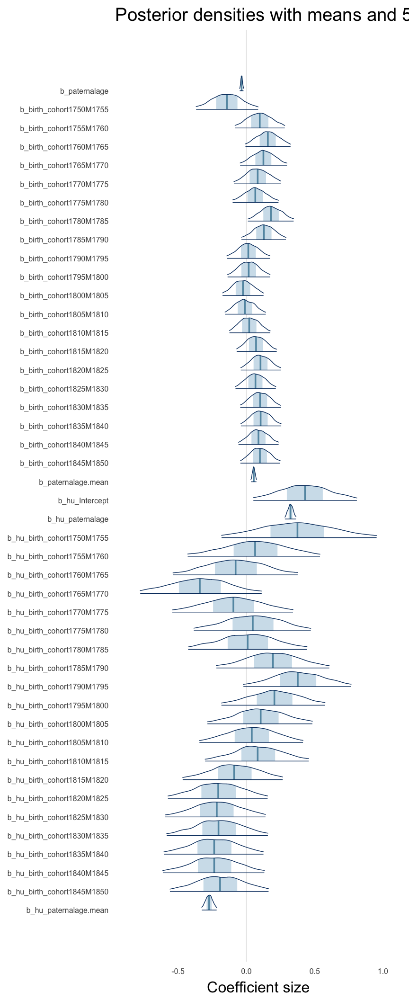
Coefficient plot
Coefficient estimates (95% and 80% credibility).
mcmc_intervals(as.matrix(model$fit), regex_pars = "b_[^I]")mcmc_areas(as.matrix(model$fit), regex_pars = "b")Diagnostics
These plots were made to diagnose misfit and nonconvergence.
Posterior predictive checks
brms::pp_check(model, re_formula = NA, type = "dens_overlay")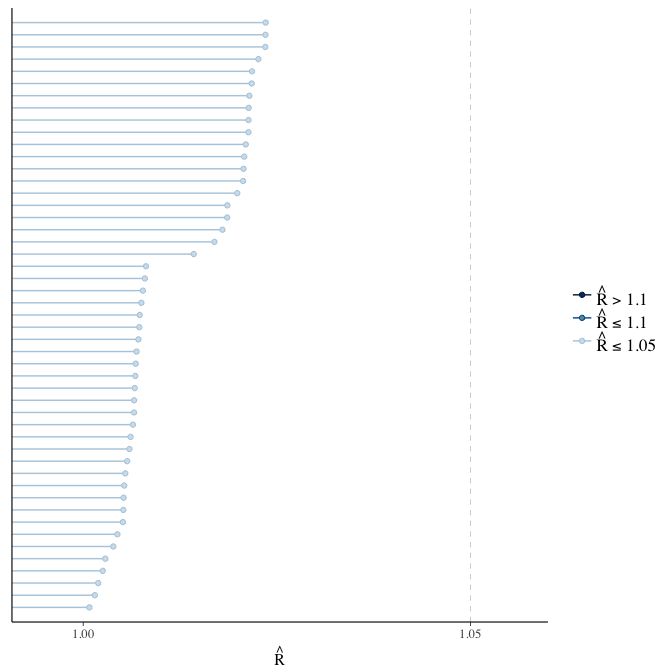
brms::pp_check(model, re_formula = NA, type = "hist")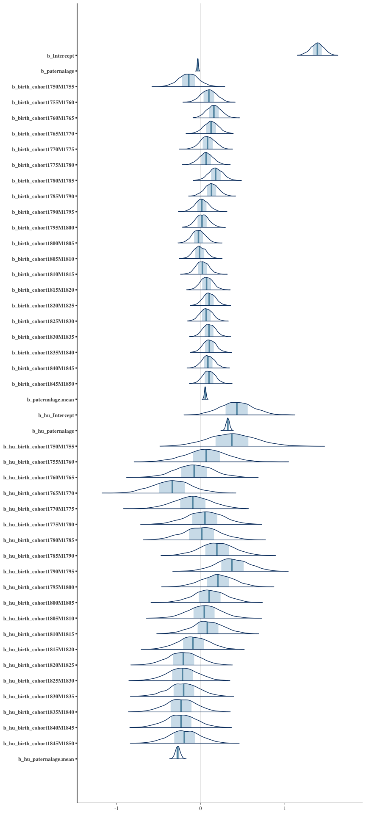
Rhat
Did the 6 chains converge?
stanplot(model, pars = "^b_[^I]", type = 'rhat')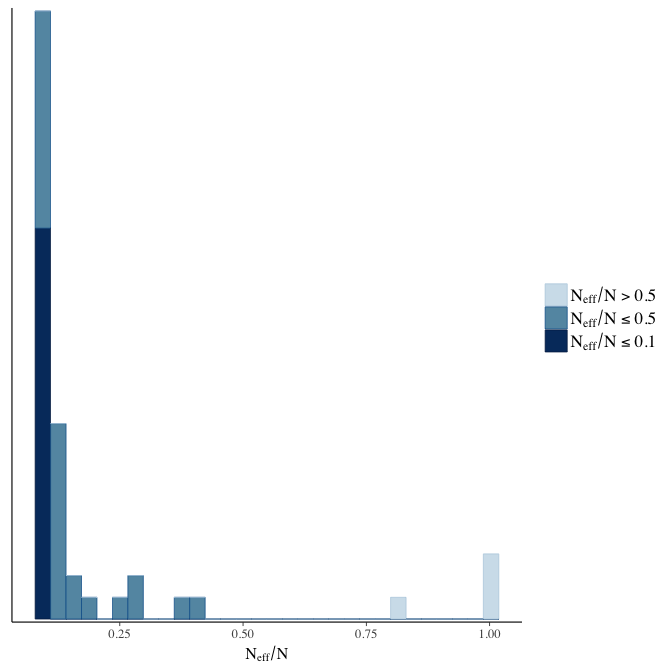
Effective sample size by average sample size
stanplot(model, pars = "^b", type = 'ess')Monte Carlo SE
stanplot(model, pars = "^b", type = 'mcse')Trace plots
if(any( summary(model)$fixed[,"Rhat"] > 1.1)) { # only do traceplots if not converged
plot(model, N = 3, ask = FALSE)
}Further plots
stanplot(model, pars = "^b", type = 'diag')File name
coefs/ddb/r2_few_controls.rds
Cluster script
opts_chunk$set(echo = FALSE)
clusterscript = str_replace(basename(model_filename), "\\.rds",".html")
cat("[Cluster script](" , clusterscript, ")", sep = "")r3: Continuous birth order control
We chose to control for birth order/number of older siblings as a categorical variable, lumping all those who had more than 5 in the category 5+. Because a continuous covariate is also plausible, we tested this alternative model as well.
Model summary
Full summary
model_summary = summary(model, use_cache = FALSE, priors = TRUE)
print(model_summary)## Family: hurdle_poisson (log)
## Formula: children ~ paternalage + birth_cohort + male + maternalage.factor + paternalage.mean + paternal_loss + maternal_loss + older_siblings + nr.siblings + last_born + (1 | idParents)
## hu ~ paternalage + birth_cohort + male + maternalage.factor + paternalage.mean + paternal_loss + maternal_loss + older_siblings + nr.siblings + last_born + (1 | idParents)
## Data: model_data (Number of observations: 56663)
## Samples: 6 chains, each with iter = 1000; warmup = 500; thin = 1;
## total post-warmup samples = 3000
## WAIC: Not computed
##
## Priors:
## b ~ normal(0,5)
## sd ~ student_t(3, 0, 5)
## b_hu ~ normal(0,5)
## sd_hu ~ student_t(3, 0, 10)
##
## Group-Level Effects:
## ~idParents (Number of levels: 14746)
## Estimate Est.Error l-95% CI u-95% CI Eff.Sample Rhat
## sd(Intercept) 0.36 0.01 0.34 0.37 1105 1.01
## sd(hu_Intercept) 0.82 0.02 0.79 0.85 1204 1.00
##
## Population-Level Effects:
## Estimate Est.Error l-95% CI u-95% CI Eff.Sample
## Intercept 1.35 0.08 1.20 1.52 108
## paternalage 0.00 0.02 -0.05 0.04 1180
## birth_cohort1750M1755 -0.18 0.11 -0.41 0.05 461
## birth_cohort1755M1760 0.08 0.09 -0.11 0.26 245
## birth_cohort1760M1765 0.14 0.09 -0.03 0.30 150
## birth_cohort1765M1770 0.09 0.09 -0.08 0.26 145
## birth_cohort1770M1775 0.05 0.09 -0.13 0.22 141
## birth_cohort1775M1780 0.03 0.09 -0.15 0.19 133
## birth_cohort1780M1785 0.14 0.09 -0.03 0.30 151
## birth_cohort1785M1790 0.11 0.08 -0.06 0.27 132
## birth_cohort1790M1795 0.01 0.08 -0.15 0.17 120
## birth_cohort1795M1800 0.01 0.08 -0.15 0.16 119
## birth_cohort1800M1805 -0.04 0.08 -0.20 0.12 112
## birth_cohort1805M1810 -0.02 0.08 -0.18 0.13 112
## birth_cohort1810M1815 0.00 0.08 -0.15 0.15 110
## birth_cohort1815M1820 0.05 0.08 -0.10 0.20 109
## birth_cohort1820M1825 0.07 0.08 -0.08 0.22 108
## birth_cohort1825M1830 0.03 0.08 -0.12 0.18 110
## birth_cohort1830M1835 0.06 0.08 -0.09 0.20 109
## birth_cohort1835M1840 0.05 0.08 -0.10 0.20 109
## birth_cohort1840M1845 0.03 0.08 -0.12 0.18 109
## birth_cohort1845M1850 0.04 0.08 -0.11 0.19 110
## male1 0.04 0.01 0.03 0.05 3000
## maternalage.factor1020 0.03 0.03 -0.03 0.08 3000
## maternalage.factor3559 0.06 0.01 0.04 0.08 2516
## paternalage.mean 0.01 0.02 -0.03 0.05 1211
## paternal_loss01 0.06 0.04 -0.02 0.13 3000
## paternal_loss15 0.02 0.02 -0.02 0.07 1148
## paternal_loss510 -0.02 0.02 -0.06 0.02 842
## paternal_loss1015 -0.02 0.02 -0.06 0.02 813
## paternal_loss1520 -0.07 0.02 -0.11 -0.04 888
## paternal_loss2025 -0.03 0.02 -0.06 0.00 910
## paternal_loss2530 -0.02 0.01 -0.05 0.01 866
## paternal_loss3035 -0.02 0.01 -0.04 0.01 908
## paternal_loss3540 0.02 0.01 0.00 0.05 1264
## paternal_loss4045 0.03 0.01 0.00 0.05 1593
## maternal_loss01 0.07 0.05 -0.04 0.18 3000
## maternal_loss15 0.00 0.03 -0.05 0.06 2231
## maternal_loss510 -0.02 0.02 -0.07 0.03 1383
## maternal_loss1015 -0.04 0.02 -0.08 0.01 1614
## maternal_loss1520 -0.03 0.02 -0.07 0.00 1661
## maternal_loss2025 -0.07 0.02 -0.11 -0.04 1754
## maternal_loss2530 -0.03 0.02 -0.06 0.00 1852
## maternal_loss3035 -0.02 0.01 -0.05 0.01 1579
## maternal_loss3540 0.00 0.01 -0.02 0.03 1796
## maternal_loss4045 -0.02 0.01 -0.04 0.00 3000
## older_siblings -0.01 0.01 -0.02 0.00 1394
## nr.siblings 0.03 0.00 0.02 0.04 1255
## last_born1 -0.02 0.01 -0.04 0.00 3000
## hu_Intercept -0.02 0.21 -0.42 0.38 143
## hu_paternalage 0.12 0.06 0.00 0.24 1033
## hu_birth_cohort1750M1755 0.36 0.29 -0.22 0.93 384
## hu_birth_cohort1755M1760 0.07 0.25 -0.42 0.57 238
## hu_birth_cohort1760M1765 -0.05 0.24 -0.51 0.40 203
## hu_birth_cohort1765M1770 -0.34 0.23 -0.79 0.09 183
## hu_birth_cohort1770M1775 -0.11 0.24 -0.56 0.34 191
## hu_birth_cohort1775M1780 0.04 0.23 -0.40 0.48 170
## hu_birth_cohort1780M1785 -0.01 0.23 -0.46 0.43 162
## hu_birth_cohort1785M1790 0.13 0.22 -0.29 0.55 156
## hu_birth_cohort1790M1795 0.31 0.21 -0.10 0.70 145
## hu_birth_cohort1795M1800 0.12 0.21 -0.29 0.50 146
## hu_birth_cohort1800M1805 0.03 0.21 -0.36 0.43 139
## hu_birth_cohort1805M1810 -0.01 0.20 -0.41 0.37 144
## hu_birth_cohort1810M1815 0.06 0.20 -0.33 0.44 142
## hu_birth_cohort1815M1820 -0.11 0.20 -0.49 0.27 139
## hu_birth_cohort1820M1825 -0.21 0.20 -0.60 0.16 137
## hu_birth_cohort1825M1830 -0.21 0.20 -0.58 0.17 137
## hu_birth_cohort1830M1835 -0.19 0.20 -0.57 0.18 137
## hu_birth_cohort1835M1840 -0.21 0.20 -0.60 0.17 136
## hu_birth_cohort1840M1845 -0.20 0.20 -0.58 0.18 136
## hu_birth_cohort1845M1850 -0.16 0.20 -0.54 0.22 137
## hu_male1 0.04 0.02 0.01 0.08 3000
## hu_maternalage.factor1020 0.06 0.09 -0.11 0.24 3000
## hu_maternalage.factor3559 0.07 0.03 0.01 0.13 3000
## hu_paternalage.mean -0.15 0.06 -0.27 -0.02 1095
## hu_paternal_loss01 0.87 0.09 0.68 1.06 3000
## hu_paternal_loss15 0.67 0.06 0.54 0.79 1283
## hu_paternal_loss510 0.69 0.05 0.58 0.79 997
## hu_paternal_loss1015 0.52 0.05 0.43 0.62 919
## hu_paternal_loss1520 0.42 0.05 0.33 0.51 1019
## hu_paternal_loss2025 0.32 0.04 0.23 0.41 1325
## hu_paternal_loss2530 0.23 0.04 0.15 0.31 827
## hu_paternal_loss3035 0.16 0.04 0.08 0.24 1000
## hu_paternal_loss3540 0.12 0.04 0.05 0.19 1397
## hu_paternal_loss4045 0.04 0.04 -0.04 0.12 3000
## hu_maternal_loss01 1.86 0.12 1.63 2.09 3000
## hu_maternal_loss15 1.02 0.07 0.88 1.15 3000
## hu_maternal_loss510 0.86 0.06 0.75 0.97 3000
## hu_maternal_loss1015 0.80 0.06 0.70 0.91 3000
## hu_maternal_loss1520 0.67 0.05 0.57 0.76 3000
## hu_maternal_loss2025 0.46 0.05 0.37 0.55 3000
## hu_maternal_loss2530 0.31 0.04 0.23 0.39 3000
## hu_maternal_loss3035 0.24 0.04 0.17 0.32 2036
## hu_maternal_loss3540 0.14 0.03 0.08 0.21 2019
## hu_maternal_loss4045 0.07 0.03 0.00 0.14 3000
## hu_older_siblings -0.04 0.01 -0.07 -0.01 1074
## hu_nr.siblings 0.06 0.01 0.04 0.07 1223
## hu_last_born1 0.01 0.03 -0.04 0.06 3000
## Rhat
## Intercept 1.06
## paternalage 1.00
## birth_cohort1750M1755 1.01
## birth_cohort1755M1760 1.03
## birth_cohort1760M1765 1.05
## birth_cohort1765M1770 1.05
## birth_cohort1770M1775 1.05
## birth_cohort1775M1780 1.06
## birth_cohort1780M1785 1.05
## birth_cohort1785M1790 1.06
## birth_cohort1790M1795 1.06
## birth_cohort1795M1800 1.06
## birth_cohort1800M1805 1.06
## birth_cohort1805M1810 1.07
## birth_cohort1810M1815 1.07
## birth_cohort1815M1820 1.07
## birth_cohort1820M1825 1.07
## birth_cohort1825M1830 1.07
## birth_cohort1830M1835 1.07
## birth_cohort1835M1840 1.07
## birth_cohort1840M1845 1.07
## birth_cohort1845M1850 1.07
## male1 1.00
## maternalage.factor1020 1.00
## maternalage.factor3559 1.00
## paternalage.mean 1.00
## paternal_loss01 1.00
## paternal_loss15 1.01
## paternal_loss510 1.01
## paternal_loss1015 1.01
## paternal_loss1520 1.00
## paternal_loss2025 1.00
## paternal_loss2530 1.00
## paternal_loss3035 1.01
## paternal_loss3540 1.00
## paternal_loss4045 1.00
## maternal_loss01 1.00
## maternal_loss15 1.00
## maternal_loss510 1.00
## maternal_loss1015 1.00
## maternal_loss1520 1.00
## maternal_loss2025 1.00
## maternal_loss2530 1.00
## maternal_loss3035 1.00
## maternal_loss3540 1.00
## maternal_loss4045 1.00
## older_siblings 1.00
## nr.siblings 1.00
## last_born1 1.00
## hu_Intercept 1.03
## hu_paternalage 1.01
## hu_birth_cohort1750M1755 1.01
## hu_birth_cohort1755M1760 1.02
## hu_birth_cohort1760M1765 1.02
## hu_birth_cohort1765M1770 1.02
## hu_birth_cohort1770M1775 1.02
## hu_birth_cohort1775M1780 1.03
## hu_birth_cohort1780M1785 1.03
## hu_birth_cohort1785M1790 1.03
## hu_birth_cohort1790M1795 1.03
## hu_birth_cohort1795M1800 1.03
## hu_birth_cohort1800M1805 1.03
## hu_birth_cohort1805M1810 1.03
## hu_birth_cohort1810M1815 1.03
## hu_birth_cohort1815M1820 1.03
## hu_birth_cohort1820M1825 1.03
## hu_birth_cohort1825M1830 1.03
## hu_birth_cohort1830M1835 1.03
## hu_birth_cohort1835M1840 1.03
## hu_birth_cohort1840M1845 1.03
## hu_birth_cohort1845M1850 1.03
## hu_male1 1.00
## hu_maternalage.factor1020 1.00
## hu_maternalage.factor3559 1.00
## hu_paternalage.mean 1.01
## hu_paternal_loss01 1.00
## hu_paternal_loss15 1.00
## hu_paternal_loss510 1.01
## hu_paternal_loss1015 1.01
## hu_paternal_loss1520 1.01
## hu_paternal_loss2025 1.00
## hu_paternal_loss2530 1.01
## hu_paternal_loss3035 1.01
## hu_paternal_loss3540 1.00
## hu_paternal_loss4045 1.00
## hu_maternal_loss01 1.00
## hu_maternal_loss15 1.00
## hu_maternal_loss510 1.00
## hu_maternal_loss1015 1.00
## hu_maternal_loss1520 1.00
## hu_maternal_loss2025 1.00
## hu_maternal_loss2530 1.00
## hu_maternal_loss3035 1.00
## hu_maternal_loss3540 1.00
## hu_maternal_loss4045 1.00
## hu_older_siblings 1.01
## hu_nr.siblings 1.00
## hu_last_born1 1.00
##
## Samples were drawn using sampling(NUTS). For each parameter, Eff.Sample
## is a crude measure of effective sample size, and Rhat is the potential
## scale reduction factor on split chains (at convergence, Rhat = 1).Table of fixed effects
fixed_eff = data.frame(model_summary$fixed, check.names = F)
fixed_eff$Est.Error = fixed_eff$Eff.Sample = fixed_eff$Rhat = NULL
fixed_eff$OR = exp(fixed_eff$Estimate)
fixed_eff$OR_low = exp(fixed_eff$`l-95% CI`)
fixed_eff$OR_high = exp(fixed_eff$`u-95% CI`)
pander::pander(fixed_eff)| Â | Estimate | l-95% CI | u-95% CI | OR | OR_low | OR_high |
|---|---|---|---|---|---|---|
| Intercept | 1.35 | 1.197 | 1.515 | 3.856 | 3.309 | 4.551 |
| paternalage | -0.002562 | -0.04615 | 0.04024 | 0.9974 | 0.9549 | 1.041 |
| birth_cohort1750M1755 | -0.1764 | -0.4054 | 0.04626 | 0.8383 | 0.6667 | 1.047 |
| birth_cohort1755M1760 | 0.07616 | -0.1071 | 0.258 | 1.079 | 0.8984 | 1.294 |
| birth_cohort1760M1765 | 0.1365 | -0.03365 | 0.3018 | 1.146 | 0.9669 | 1.352 |
| birth_cohort1765M1770 | 0.08805 | -0.08486 | 0.2603 | 1.092 | 0.9186 | 1.297 |
| birth_cohort1770M1775 | 0.04578 | -0.1276 | 0.2214 | 1.047 | 0.8802 | 1.248 |
| birth_cohort1775M1780 | 0.03117 | -0.145 | 0.1947 | 1.032 | 0.865 | 1.215 |
| birth_cohort1780M1785 | 0.1371 | -0.02894 | 0.3031 | 1.147 | 0.9715 | 1.354 |
| birth_cohort1785M1790 | 0.1105 | -0.05636 | 0.2702 | 1.117 | 0.9452 | 1.31 |
| birth_cohort1790M1795 | 0.01044 | -0.1497 | 0.1687 | 1.01 | 0.8609 | 1.184 |
| birth_cohort1795M1800 | 0.009071 | -0.151 | 0.1638 | 1.009 | 0.8598 | 1.178 |
| birth_cohort1800M1805 | -0.03862 | -0.1962 | 0.1166 | 0.9621 | 0.8219 | 1.124 |
| birth_cohort1805M1810 | -0.02462 | -0.1777 | 0.1253 | 0.9757 | 0.8372 | 1.133 |
| birth_cohort1810M1815 | 8.97e-05 | -0.1528 | 0.1471 | 1 | 0.8583 | 1.158 |
| birth_cohort1815M1820 | 0.05058 | -0.1004 | 0.1963 | 1.052 | 0.9045 | 1.217 |
| birth_cohort1820M1825 | 0.07176 | -0.08028 | 0.2186 | 1.074 | 0.9229 | 1.244 |
| birth_cohort1825M1830 | 0.02988 | -0.1221 | 0.1763 | 1.03 | 0.8851 | 1.193 |
| birth_cohort1830M1835 | 0.05522 | -0.09495 | 0.202 | 1.057 | 0.9094 | 1.224 |
| birth_cohort1835M1840 | 0.05412 | -0.09702 | 0.203 | 1.056 | 0.9075 | 1.225 |
| birth_cohort1840M1845 | 0.03051 | -0.1247 | 0.1792 | 1.031 | 0.8827 | 1.196 |
| birth_cohort1845M1850 | 0.04091 | -0.112 | 0.1912 | 1.042 | 0.894 | 1.211 |
| male1 | 0.0401 | 0.02664 | 0.05382 | 1.041 | 1.027 | 1.055 |
| maternalage.factor1020 | 0.02773 | -0.02964 | 0.08478 | 1.028 | 0.9708 | 1.088 |
| maternalage.factor3559 | 0.05908 | 0.03846 | 0.08024 | 1.061 | 1.039 | 1.084 |
| paternalage.mean | 0.009957 | -0.03487 | 0.05429 | 1.01 | 0.9657 | 1.056 |
| paternal_loss01 | 0.05709 | -0.01744 | 0.1277 | 1.059 | 0.9827 | 1.136 |
| paternal_loss15 | 0.0235 | -0.02284 | 0.07003 | 1.024 | 0.9774 | 1.073 |
| paternal_loss510 | -0.02177 | -0.06417 | 0.01904 | 0.9785 | 0.9378 | 1.019 |
| paternal_loss1015 | -0.02058 | -0.05844 | 0.01611 | 0.9796 | 0.9432 | 1.016 |
| paternal_loss1520 | -0.07463 | -0.1085 | -0.04053 | 0.9281 | 0.8972 | 0.9603 |
| paternal_loss2025 | -0.02853 | -0.05958 | 0.002899 | 0.9719 | 0.9422 | 1.003 |
| paternal_loss2530 | -0.02082 | -0.05048 | 0.008999 | 0.9794 | 0.9508 | 1.009 |
| paternal_loss3035 | -0.01525 | -0.04211 | 0.01224 | 0.9849 | 0.9588 | 1.012 |
| paternal_loss3540 | 0.02177 | -0.00445 | 0.04787 | 1.022 | 0.9956 | 1.049 |
| paternal_loss4045 | 0.02864 | 0.002482 | 0.05384 | 1.029 | 1.002 | 1.055 |
| maternal_loss01 | 0.06899 | -0.04177 | 0.1751 | 1.071 | 0.9591 | 1.191 |
| maternal_loss15 | 0.003664 | -0.05132 | 0.05772 | 1.004 | 0.95 | 1.059 |
| maternal_loss510 | -0.02048 | -0.06633 | 0.02599 | 0.9797 | 0.9358 | 1.026 |
| maternal_loss1015 | -0.03511 | -0.07706 | 0.009907 | 0.9655 | 0.9258 | 1.01 |
| maternal_loss1520 | -0.03494 | -0.07398 | 0.004671 | 0.9657 | 0.9287 | 1.005 |
| maternal_loss2025 | -0.07014 | -0.1054 | -0.03583 | 0.9323 | 0.8999 | 0.9648 |
| maternal_loss2530 | -0.02665 | -0.0569 | 0.00386 | 0.9737 | 0.9447 | 1.004 |
| maternal_loss3035 | -0.02016 | -0.04664 | 0.006047 | 0.98 | 0.9544 | 1.006 |
| maternal_loss3540 | 0.002655 | -0.02127 | 0.02615 | 1.003 | 0.979 | 1.026 |
| maternal_loss4045 | -0.01878 | -0.04166 | 0.004089 | 0.9814 | 0.9592 | 1.004 |
| older_siblings | -0.008814 | -0.01894 | 0.001059 | 0.9912 | 0.9812 | 1.001 |
| nr.siblings | 0.02926 | 0.02342 | 0.03545 | 1.03 | 1.024 | 1.036 |
| last_born1 | -0.0193 | -0.03961 | -5.515e-05 | 0.9809 | 0.9612 | 0.9999 |
| hu_Intercept | -0.02241 | -0.4241 | 0.38 | 0.9778 | 0.6543 | 1.462 |
| hu_paternalage | 0.1202 | -0.004565 | 0.2447 | 1.128 | 0.9954 | 1.277 |
| hu_birth_cohort1750M1755 | 0.3612 | -0.2169 | 0.9321 | 1.435 | 0.805 | 2.54 |
| hu_birth_cohort1755M1760 | 0.07486 | -0.419 | 0.5684 | 1.078 | 0.6577 | 1.765 |
| hu_birth_cohort1760M1765 | -0.05035 | -0.5065 | 0.4036 | 0.9509 | 0.6026 | 1.497 |
| hu_birth_cohort1765M1770 | -0.3402 | -0.7892 | 0.08893 | 0.7117 | 0.4542 | 1.093 |
| hu_birth_cohort1770M1775 | -0.1099 | -0.5628 | 0.3363 | 0.8959 | 0.5696 | 1.4 |
| hu_birth_cohort1775M1780 | 0.04406 | -0.4031 | 0.4791 | 1.045 | 0.6683 | 1.615 |
| hu_birth_cohort1780M1785 | -0.01145 | -0.4553 | 0.4325 | 0.9886 | 0.6342 | 1.541 |
| hu_birth_cohort1785M1790 | 0.1322 | -0.2919 | 0.5484 | 1.141 | 0.7469 | 1.73 |
| hu_birth_cohort1790M1795 | 0.3106 | -0.09561 | 0.6985 | 1.364 | 0.9088 | 2.011 |
| hu_birth_cohort1795M1800 | 0.116 | -0.289 | 0.5038 | 1.123 | 0.749 | 1.655 |
| hu_birth_cohort1800M1805 | 0.03154 | -0.361 | 0.426 | 1.032 | 0.697 | 1.531 |
| hu_birth_cohort1805M1810 | -0.01136 | -0.4057 | 0.3718 | 0.9887 | 0.6665 | 1.45 |
| hu_birth_cohort1810M1815 | 0.06069 | -0.3311 | 0.4414 | 1.063 | 0.7182 | 1.555 |
| hu_birth_cohort1815M1820 | -0.1074 | -0.485 | 0.2668 | 0.8982 | 0.6157 | 1.306 |
| hu_birth_cohort1820M1825 | -0.209 | -0.5977 | 0.1643 | 0.8114 | 0.5501 | 1.179 |
| hu_birth_cohort1825M1830 | -0.2086 | -0.5801 | 0.1735 | 0.8117 | 0.5599 | 1.189 |
| hu_birth_cohort1830M1835 | -0.1911 | -0.5673 | 0.1839 | 0.826 | 0.5671 | 1.202 |
| hu_birth_cohort1835M1840 | -0.2111 | -0.5964 | 0.1697 | 0.8097 | 0.5508 | 1.185 |
| hu_birth_cohort1840M1845 | -0.1989 | -0.5845 | 0.1792 | 0.8196 | 0.5574 | 1.196 |
| hu_birth_cohort1845M1850 | -0.1611 | -0.5409 | 0.215 | 0.8512 | 0.5822 | 1.24 |
| hu_male1 | 0.04465 | 0.006171 | 0.08243 | 1.046 | 1.006 | 1.086 |
| hu_maternalage.factor1020 | 0.06038 | -0.1139 | 0.2399 | 1.062 | 0.8924 | 1.271 |
| hu_maternalage.factor3559 | 0.06988 | 0.01263 | 0.127 | 1.072 | 1.013 | 1.135 |
| hu_paternalage.mean | -0.1464 | -0.2684 | -0.02123 | 0.8638 | 0.7646 | 0.979 |
| hu_paternal_loss01 | 0.8676 | 0.6849 | 1.059 | 2.381 | 1.984 | 2.885 |
| hu_paternal_loss15 | 0.6684 | 0.5437 | 0.7904 | 1.951 | 1.722 | 2.204 |
| hu_paternal_loss510 | 0.6875 | 0.5838 | 0.7928 | 1.989 | 1.793 | 2.21 |
| hu_paternal_loss1015 | 0.5212 | 0.4266 | 0.6186 | 1.684 | 1.532 | 1.856 |
| hu_paternal_loss1520 | 0.4237 | 0.3333 | 0.5119 | 1.528 | 1.396 | 1.668 |
| hu_paternal_loss2025 | 0.3218 | 0.235 | 0.4103 | 1.38 | 1.265 | 1.507 |
| hu_paternal_loss2530 | 0.2265 | 0.1464 | 0.3061 | 1.254 | 1.158 | 1.358 |
| hu_paternal_loss3035 | 0.1589 | 0.08299 | 0.2358 | 1.172 | 1.087 | 1.266 |
| hu_paternal_loss3540 | 0.1191 | 0.04593 | 0.1929 | 1.126 | 1.047 | 1.213 |
| hu_paternal_loss4045 | 0.03896 | -0.03857 | 0.1171 | 1.04 | 0.9622 | 1.124 |
| hu_maternal_loss01 | 1.858 | 1.626 | 2.09 | 6.408 | 5.085 | 8.088 |
| hu_maternal_loss15 | 1.023 | 0.881 | 1.155 | 2.781 | 2.413 | 3.173 |
| hu_maternal_loss510 | 0.8618 | 0.7497 | 0.974 | 2.367 | 2.116 | 2.649 |
| hu_maternal_loss1015 | 0.8024 | 0.6969 | 0.9117 | 2.231 | 2.007 | 2.488 |
| hu_maternal_loss1520 | 0.6689 | 0.5746 | 0.765 | 1.952 | 1.776 | 2.149 |
| hu_maternal_loss2025 | 0.456 | 0.3676 | 0.5482 | 1.578 | 1.444 | 1.73 |
| hu_maternal_loss2530 | 0.3125 | 0.2273 | 0.3927 | 1.367 | 1.255 | 1.481 |
| hu_maternal_loss3035 | 0.2436 | 0.1695 | 0.3176 | 1.276 | 1.185 | 1.374 |
| hu_maternal_loss3540 | 0.1426 | 0.0761 | 0.2101 | 1.153 | 1.079 | 1.234 |
| hu_maternal_loss4045 | 0.07391 | 0.004059 | 0.1406 | 1.077 | 1.004 | 1.151 |
| hu_older_siblings | -0.03976 | -0.06782 | -0.01001 | 0.961 | 0.9344 | 0.99 |
| hu_nr.siblings | 0.0568 | 0.03993 | 0.07331 | 1.058 | 1.041 | 1.076 |
| hu_last_born1 | 0.01186 | -0.04022 | 0.06369 | 1.012 | 0.9606 | 1.066 |
Paternal age effect
pander::pander(paternal_age_10y_effect(model))| effect | median_estimate | ci_95 | ci_80 |
|---|---|---|---|
| estimate father 25y | 2.34 | [1.82;2.93] | [1.98;2.72] |
| estimate father 35y | 2.2 | [1.7;2.77] | [1.85;2.58] |
| percentage change | -6.02 | [-12.94;1.64] | [-10.49;-1.35] |
| OR/IRR | 1 | [0.95;1.04] | [0.97;1.03] |
| OR hurdle | 1.13 | [1;1.28] | [1.04;1.22] |
Marginal effect plots
plot.brmsMarginalEffects_shades(
x = marginal_effects(model, re_formula = NA, probs = c(0.025,0.975)),
y = marginal_effects(model, re_formula = NA, probs = c(0.1,0.9)),
ask = FALSE)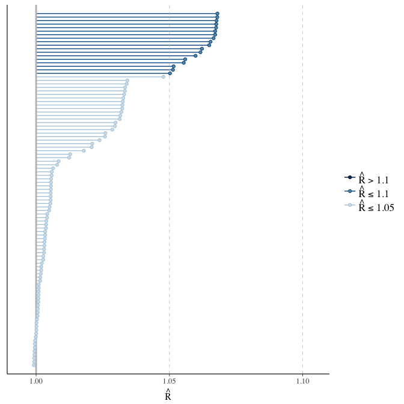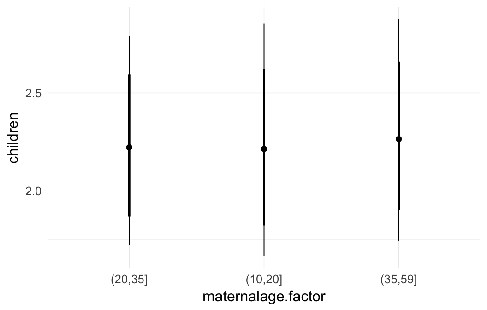
Coefficient plot
Coefficient estimates (95% and 80% credibility).
mcmc_intervals(as.matrix(model$fit), regex_pars = "b_[^I]")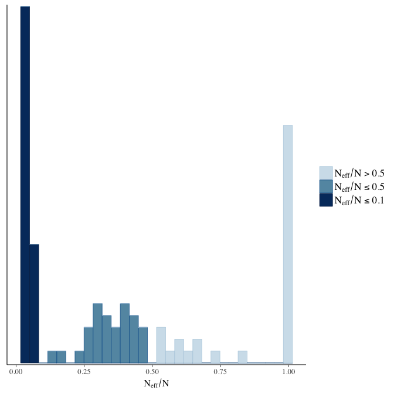
mcmc_areas(as.matrix(model$fit), regex_pars = "b")
Diagnostics
These plots were made to diagnose misfit and nonconvergence.
Posterior predictive checks
brms::pp_check(model, re_formula = NA, type = "dens_overlay")brms::pp_check(model, re_formula = NA, type = "hist")Rhat
Did the 6 chains converge?
stanplot(model, pars = "^b_[^I]", type = 'rhat')Effective sample size by average sample size
stanplot(model, pars = "^b", type = 'ess')Monte Carlo SE
stanplot(model, pars = "^b", type = 'mcse')Trace plots
if(any( summary(model)$fixed[,"Rhat"] > 1.1)) { # only do traceplots if not converged
plot(model, N = 3, ask = FALSE)
}Further plots
stanplot(model, pars = "^b", type = 'diag')File name
coefs/ddb/r3_birth_order_continuous.rds
Cluster script
opts_chunk$set(echo = FALSE)
clusterscript = str_replace(basename(model_filename), "\\.rds",".html")
cat("[Cluster script](" , clusterscript, ")", sep = "")r4: Control number of dependent siblings
Birth order is usually used as a proxy variable for parental investment, the assumption being that older siblings require parental attention. However, there are are reasons to doubt this, as fully-grown siblings probably do not compete for the same resources. To compute a clearer proxy variable of competing siblings, we computed and adjusted for the number of siblings who were alive and younger than five at the time of birth of the anchor child.
Model summary
Full summary
model_summary = summary(model, use_cache = FALSE, priors = TRUE)
print(model_summary)## Family: hurdle_poisson (log)
## Formula: children ~ paternalage + birth_cohort + male + maternalage.factor + paternalage.mean + paternal_loss + maternal_loss + nr.siblings + dependent_sibs_f5y + (1 | idParents)
## hu ~ paternalage + birth_cohort + male + maternalage.factor + paternalage.mean + paternal_loss + maternal_loss + nr.siblings + dependent_sibs_f5y + (1 | idParents)
## Data: model_data (Number of observations: 56663)
## Samples: 6 chains, each with iter = 1000; warmup = 500; thin = 1;
## total post-warmup samples = 3000
## WAIC: Not computed
##
## Priors:
## b ~ normal(0,5)
## sd ~ student_t(3, 0, 5)
## b_hu ~ normal(0,5)
## sd_hu ~ student_t(3, 0, 10)
##
## Group-Level Effects:
## ~idParents (Number of levels: 14746)
## Estimate Est.Error l-95% CI u-95% CI Eff.Sample Rhat
## sd(Intercept) 0.35 0.01 0.34 0.37 1254 1
## sd(hu_Intercept) 0.85 0.02 0.82 0.89 978 1
##
## Population-Level Effects:
## Estimate Est.Error l-95% CI u-95% CI Eff.Sample
## Intercept 1.31 0.08 1.15 1.46 351
## paternalage -0.04 0.01 -0.06 -0.02 3000
## birth_cohort1750M1755 -0.17 0.12 -0.40 0.05 1088
## birth_cohort1755M1760 0.09 0.09 -0.10 0.27 562
## birth_cohort1760M1765 0.15 0.09 -0.02 0.32 424
## birth_cohort1765M1770 0.10 0.09 -0.07 0.27 388
## birth_cohort1770M1775 0.06 0.09 -0.11 0.24 417
## birth_cohort1775M1780 0.05 0.08 -0.12 0.21 390
## birth_cohort1780M1785 0.16 0.09 -0.01 0.32 398
## birth_cohort1785M1790 0.12 0.08 -0.03 0.28 353
## birth_cohort1790M1795 0.02 0.08 -0.14 0.18 363
## birth_cohort1795M1800 0.02 0.08 -0.13 0.18 336
## birth_cohort1800M1805 -0.02 0.08 -0.17 0.13 354
## birth_cohort1805M1810 -0.01 0.08 -0.16 0.14 331
## birth_cohort1810M1815 0.02 0.08 -0.13 0.17 336
## birth_cohort1815M1820 0.07 0.07 -0.08 0.21 326
## birth_cohort1820M1825 0.08 0.08 -0.06 0.23 326
## birth_cohort1825M1830 0.04 0.08 -0.10 0.19 323
## birth_cohort1830M1835 0.07 0.08 -0.07 0.22 319
## birth_cohort1835M1840 0.07 0.08 -0.08 0.22 321
## birth_cohort1840M1845 0.05 0.08 -0.10 0.20 314
## birth_cohort1845M1850 0.05 0.08 -0.09 0.20 321
## male1 0.04 0.01 0.03 0.05 3000
## maternalage.factor1020 0.04 0.03 -0.02 0.10 3000
## maternalage.factor3559 0.06 0.01 0.04 0.08 3000
## paternalage.mean 0.05 0.01 0.02 0.07 3000
## paternal_loss01 0.07 0.04 0.00 0.14 3000
## paternal_loss15 0.02 0.03 -0.03 0.07 3000
## paternal_loss510 -0.02 0.02 -0.06 0.02 2390
## paternal_loss1015 -0.02 0.02 -0.06 0.02 1974
## paternal_loss1520 -0.07 0.02 -0.11 -0.04 2105
## paternal_loss2025 -0.03 0.02 -0.06 0.00 1924
## paternal_loss2530 -0.02 0.02 -0.05 0.01 2067
## paternal_loss3035 -0.02 0.01 -0.04 0.01 2040
## paternal_loss3540 0.02 0.01 0.00 0.05 2308
## paternal_loss4045 0.03 0.01 0.00 0.05 3000
## maternal_loss01 0.08 0.05 -0.03 0.19 3000
## maternal_loss15 0.00 0.03 -0.05 0.06 3000
## maternal_loss510 -0.02 0.02 -0.07 0.03 3000
## maternal_loss1015 -0.04 0.02 -0.08 0.01 3000
## maternal_loss1520 -0.03 0.02 -0.07 0.01 3000
## maternal_loss2025 -0.07 0.02 -0.10 -0.03 3000
## maternal_loss2530 -0.03 0.02 -0.06 0.00 3000
## maternal_loss3035 -0.02 0.01 -0.05 0.01 3000
## maternal_loss3540 0.00 0.01 -0.02 0.03 3000
## maternal_loss4045 -0.02 0.01 -0.04 0.01 3000
## nr.siblings 0.02 0.00 0.02 0.03 2149
## dependent_sibs_f5y 0.01 0.00 0.00 0.02 3000
## hu_Intercept -0.16 0.20 -0.55 0.21 328
## hu_paternalage -0.02 0.03 -0.08 0.03 3000
## hu_birth_cohort1750M1755 0.36 0.29 -0.19 0.93 962
## hu_birth_cohort1755M1760 0.10 0.25 -0.39 0.57 593
## hu_birth_cohort1760M1765 -0.04 0.22 -0.47 0.40 480
## hu_birth_cohort1765M1770 -0.33 0.22 -0.76 0.10 431
## hu_birth_cohort1770M1775 -0.09 0.23 -0.54 0.35 449
## hu_birth_cohort1775M1780 0.08 0.22 -0.33 0.51 404
## hu_birth_cohort1780M1785 0.03 0.21 -0.39 0.44 389
## hu_birth_cohort1785M1790 0.17 0.20 -0.23 0.57 350
## hu_birth_cohort1790M1795 0.34 0.20 -0.05 0.73 316
## hu_birth_cohort1795M1800 0.14 0.19 -0.24 0.52 340
## hu_birth_cohort1800M1805 0.06 0.19 -0.32 0.42 324
## hu_birth_cohort1805M1810 0.01 0.19 -0.35 0.38 312
## hu_birth_cohort1810M1815 0.09 0.19 -0.27 0.45 305
## hu_birth_cohort1815M1820 -0.09 0.18 -0.44 0.26 296
## hu_birth_cohort1820M1825 -0.21 0.18 -0.56 0.15 287
## hu_birth_cohort1825M1830 -0.20 0.18 -0.55 0.16 294
## hu_birth_cohort1830M1835 -0.17 0.18 -0.52 0.18 289
## hu_birth_cohort1835M1840 -0.19 0.18 -0.53 0.17 294
## hu_birth_cohort1840M1845 -0.18 0.18 -0.53 0.18 292
## hu_birth_cohort1845M1850 -0.15 0.18 -0.49 0.21 286
## hu_male1 0.04 0.02 0.01 0.08 3000
## hu_maternalage.factor1020 0.13 0.09 -0.04 0.30 3000
## hu_maternalage.factor3559 0.10 0.03 0.04 0.16 3000
## hu_paternalage.mean 0.00 0.03 -0.06 0.06 3000
## hu_paternal_loss01 0.91 0.09 0.73 1.09 3000
## hu_paternal_loss15 0.67 0.06 0.55 0.80 3000
## hu_paternal_loss510 0.69 0.06 0.58 0.79 3000
## hu_paternal_loss1015 0.52 0.05 0.42 0.62 2377
## hu_paternal_loss1520 0.43 0.05 0.34 0.52 2257
## hu_paternal_loss2025 0.32 0.04 0.24 0.40 2260
## hu_paternal_loss2530 0.22 0.04 0.14 0.30 2301
## hu_paternal_loss3035 0.15 0.04 0.07 0.23 2441
## hu_paternal_loss3540 0.11 0.04 0.03 0.19 3000
## hu_paternal_loss4045 0.03 0.04 -0.04 0.11 3000
## hu_maternal_loss01 1.91 0.12 1.68 2.14 3000
## hu_maternal_loss15 1.05 0.07 0.91 1.19 3000
## hu_maternal_loss510 0.86 0.06 0.75 0.97 3000
## hu_maternal_loss1015 0.81 0.05 0.71 0.91 3000
## hu_maternal_loss1520 0.68 0.05 0.58 0.78 3000
## hu_maternal_loss2025 0.47 0.05 0.38 0.56 3000
## hu_maternal_loss2530 0.32 0.04 0.24 0.40 3000
## hu_maternal_loss3035 0.25 0.04 0.17 0.32 3000
## hu_maternal_loss3540 0.14 0.03 0.08 0.22 3000
## hu_maternal_loss4045 0.07 0.04 0.00 0.14 3000
## hu_nr.siblings 0.01 0.01 0.00 0.02 3000
## hu_dependent_sibs_f5y 0.09 0.01 0.07 0.11 3000
## Rhat
## Intercept 1.02
## paternalage 1.00
## birth_cohort1750M1755 1.00
## birth_cohort1755M1760 1.01
## birth_cohort1760M1765 1.01
## birth_cohort1765M1770 1.02
## birth_cohort1770M1775 1.01
## birth_cohort1775M1780 1.01
## birth_cohort1780M1785 1.01
## birth_cohort1785M1790 1.02
## birth_cohort1790M1795 1.02
## birth_cohort1795M1800 1.01
## birth_cohort1800M1805 1.01
## birth_cohort1805M1810 1.02
## birth_cohort1810M1815 1.02
## birth_cohort1815M1820 1.02
## birth_cohort1820M1825 1.02
## birth_cohort1825M1830 1.02
## birth_cohort1830M1835 1.02
## birth_cohort1835M1840 1.02
## birth_cohort1840M1845 1.02
## birth_cohort1845M1850 1.02
## male1 1.00
## maternalage.factor1020 1.00
## maternalage.factor3559 1.00
## paternalage.mean 1.00
## paternal_loss01 1.00
## paternal_loss15 1.00
## paternal_loss510 1.00
## paternal_loss1015 1.00
## paternal_loss1520 1.00
## paternal_loss2025 1.00
## paternal_loss2530 1.00
## paternal_loss3035 1.00
## paternal_loss3540 1.00
## paternal_loss4045 1.00
## maternal_loss01 1.00
## maternal_loss15 1.00
## maternal_loss510 1.00
## maternal_loss1015 1.00
## maternal_loss1520 1.00
## maternal_loss2025 1.00
## maternal_loss2530 1.00
## maternal_loss3035 1.00
## maternal_loss3540 1.00
## maternal_loss4045 1.00
## nr.siblings 1.00
## dependent_sibs_f5y 1.00
## hu_Intercept 1.01
## hu_paternalage 1.00
## hu_birth_cohort1750M1755 1.00
## hu_birth_cohort1755M1760 1.00
## hu_birth_cohort1760M1765 1.01
## hu_birth_cohort1765M1770 1.01
## hu_birth_cohort1770M1775 1.01
## hu_birth_cohort1775M1780 1.01
## hu_birth_cohort1780M1785 1.01
## hu_birth_cohort1785M1790 1.01
## hu_birth_cohort1790M1795 1.01
## hu_birth_cohort1795M1800 1.01
## hu_birth_cohort1800M1805 1.01
## hu_birth_cohort1805M1810 1.01
## hu_birth_cohort1810M1815 1.01
## hu_birth_cohort1815M1820 1.01
## hu_birth_cohort1820M1825 1.01
## hu_birth_cohort1825M1830 1.01
## hu_birth_cohort1830M1835 1.01
## hu_birth_cohort1835M1840 1.01
## hu_birth_cohort1840M1845 1.01
## hu_birth_cohort1845M1850 1.01
## hu_male1 1.00
## hu_maternalage.factor1020 1.00
## hu_maternalage.factor3559 1.00
## hu_paternalage.mean 1.00
## hu_paternal_loss01 1.00
## hu_paternal_loss15 1.00
## hu_paternal_loss510 1.00
## hu_paternal_loss1015 1.00
## hu_paternal_loss1520 1.00
## hu_paternal_loss2025 1.00
## hu_paternal_loss2530 1.00
## hu_paternal_loss3035 1.00
## hu_paternal_loss3540 1.00
## hu_paternal_loss4045 1.00
## hu_maternal_loss01 1.00
## hu_maternal_loss15 1.00
## hu_maternal_loss510 1.00
## hu_maternal_loss1015 1.00
## hu_maternal_loss1520 1.00
## hu_maternal_loss2025 1.00
## hu_maternal_loss2530 1.00
## hu_maternal_loss3035 1.00
## hu_maternal_loss3540 1.00
## hu_maternal_loss4045 1.00
## hu_nr.siblings 1.00
## hu_dependent_sibs_f5y 1.00
##
## Samples were drawn using sampling(NUTS). For each parameter, Eff.Sample
## is a crude measure of effective sample size, and Rhat is the potential
## scale reduction factor on split chains (at convergence, Rhat = 1).Table of fixed effects
fixed_eff = data.frame(model_summary$fixed, check.names = F)
fixed_eff$Est.Error = fixed_eff$Eff.Sample = fixed_eff$Rhat = NULL
fixed_eff$OR = exp(fixed_eff$Estimate)
fixed_eff$OR_low = exp(fixed_eff$`l-95% CI`)
fixed_eff$OR_high = exp(fixed_eff$`u-95% CI`)
pander::pander(fixed_eff)| Â | Estimate | l-95% CI | u-95% CI | OR | OR_low | OR_high |
|---|---|---|---|---|---|---|
| Intercept | 1.31 | 1.154 | 1.461 | 3.707 | 3.17 | 4.309 |
| paternalage | -0.03977 | -0.06044 | -0.01911 | 0.961 | 0.9413 | 0.9811 |
| birth_cohort1750M1755 | -0.1743 | -0.403 | 0.04985 | 0.8401 | 0.6683 | 1.051 |
| birth_cohort1755M1760 | 0.09139 | -0.09849 | 0.2684 | 1.096 | 0.9062 | 1.308 |
| birth_cohort1760M1765 | 0.149 | -0.02254 | 0.3229 | 1.161 | 0.9777 | 1.381 |
| birth_cohort1765M1770 | 0.09833 | -0.06848 | 0.266 | 1.103 | 0.9338 | 1.305 |
| birth_cohort1770M1775 | 0.06035 | -0.1131 | 0.2365 | 1.062 | 0.8931 | 1.267 |
| birth_cohort1775M1780 | 0.04678 | -0.1176 | 0.211 | 1.048 | 0.8891 | 1.235 |
| birth_cohort1780M1785 | 0.1555 | -0.009747 | 0.3216 | 1.168 | 0.9903 | 1.379 |
| birth_cohort1785M1790 | 0.1249 | -0.03242 | 0.284 | 1.133 | 0.9681 | 1.328 |
| birth_cohort1790M1795 | 0.0239 | -0.1353 | 0.1831 | 1.024 | 0.8735 | 1.201 |
| birth_cohort1795M1800 | 0.02292 | -0.1307 | 0.1794 | 1.023 | 0.8775 | 1.197 |
| birth_cohort1800M1805 | -0.02417 | -0.1727 | 0.133 | 0.9761 | 0.8414 | 1.142 |
| birth_cohort1805M1810 | -0.009696 | -0.1578 | 0.1444 | 0.9904 | 0.854 | 1.155 |
| birth_cohort1810M1815 | 0.01547 | -0.1304 | 0.1654 | 1.016 | 0.8777 | 1.18 |
| birth_cohort1815M1820 | 0.06619 | -0.07764 | 0.2133 | 1.068 | 0.9253 | 1.238 |
| birth_cohort1820M1825 | 0.08283 | -0.06063 | 0.2318 | 1.086 | 0.9412 | 1.261 |
| birth_cohort1825M1830 | 0.04227 | -0.1014 | 0.1901 | 1.043 | 0.9036 | 1.209 |
| birth_cohort1830M1835 | 0.06813 | -0.07397 | 0.2193 | 1.071 | 0.9287 | 1.245 |
| birth_cohort1835M1840 | 0.06889 | -0.07511 | 0.2158 | 1.071 | 0.9276 | 1.241 |
| birth_cohort1840M1845 | 0.04543 | -0.09896 | 0.1953 | 1.046 | 0.9058 | 1.216 |
| birth_cohort1845M1850 | 0.05324 | -0.08813 | 0.2041 | 1.055 | 0.9156 | 1.226 |
| male1 | 0.03996 | 0.02704 | 0.05312 | 1.041 | 1.027 | 1.055 |
| maternalage.factor1020 | 0.0381 | -0.02213 | 0.09726 | 1.039 | 0.9781 | 1.102 |
| maternalage.factor3559 | 0.06231 | 0.04188 | 0.08348 | 1.064 | 1.043 | 1.087 |
| paternalage.mean | 0.04754 | 0.02413 | 0.07073 | 1.049 | 1.024 | 1.073 |
| paternal_loss01 | 0.06983 | -0.0004144 | 0.1417 | 1.072 | 0.9996 | 1.152 |
| paternal_loss15 | 0.02153 | -0.02907 | 0.07009 | 1.022 | 0.9713 | 1.073 |
| paternal_loss510 | -0.0211 | -0.06107 | 0.0211 | 0.9791 | 0.9408 | 1.021 |
| paternal_loss1015 | -0.01935 | -0.05664 | 0.01737 | 0.9808 | 0.9449 | 1.018 |
| paternal_loss1520 | -0.07317 | -0.1091 | -0.04019 | 0.9294 | 0.8966 | 0.9606 |
| paternal_loss2025 | -0.02893 | -0.06029 | 0.002611 | 0.9715 | 0.9415 | 1.003 |
| paternal_loss2530 | -0.02066 | -0.05083 | 0.00838 | 0.9795 | 0.9504 | 1.008 |
| paternal_loss3035 | -0.01584 | -0.04302 | 0.01115 | 0.9843 | 0.9579 | 1.011 |
| paternal_loss3540 | 0.0213 | -0.003425 | 0.04739 | 1.022 | 0.9966 | 1.049 |
| paternal_loss4045 | 0.02798 | 0.001769 | 0.05232 | 1.028 | 1.002 | 1.054 |
| maternal_loss01 | 0.07711 | -0.02885 | 0.1855 | 1.08 | 0.9716 | 1.204 |
| maternal_loss15 | 0.002479 | -0.05491 | 0.05915 | 1.002 | 0.9466 | 1.061 |
| maternal_loss510 | -0.02007 | -0.06682 | 0.02693 | 0.9801 | 0.9354 | 1.027 |
| maternal_loss1015 | -0.03577 | -0.0786 | 0.007702 | 0.9649 | 0.9244 | 1.008 |
| maternal_loss1520 | -0.0332 | -0.07212 | 0.005095 | 0.9673 | 0.9304 | 1.005 |
| maternal_loss2025 | -0.06831 | -0.1025 | -0.03283 | 0.934 | 0.9026 | 0.9677 |
| maternal_loss2530 | -0.02536 | -0.05573 | 0.004586 | 0.975 | 0.9458 | 1.005 |
| maternal_loss3035 | -0.02023 | -0.04705 | 0.005667 | 0.98 | 0.954 | 1.006 |
| maternal_loss3540 | 0.003017 | -0.02042 | 0.02743 | 1.003 | 0.9798 | 1.028 |
| maternal_loss4045 | -0.01915 | -0.04375 | 0.005732 | 0.981 | 0.9572 | 1.006 |
| nr.siblings | 0.02242 | 0.01839 | 0.02635 | 1.023 | 1.019 | 1.027 |
| dependent_sibs_f5y | 0.01224 | 0.004943 | 0.01966 | 1.012 | 1.005 | 1.02 |
| hu_Intercept | -0.1605 | -0.5501 | 0.2141 | 0.8517 | 0.5769 | 1.239 |
| hu_paternalage | -0.02321 | -0.08047 | 0.03465 | 0.9771 | 0.9227 | 1.035 |
| hu_birth_cohort1750M1755 | 0.3638 | -0.186 | 0.9311 | 1.439 | 0.8303 | 2.537 |
| hu_birth_cohort1755M1760 | 0.1003 | -0.392 | 0.5697 | 1.106 | 0.6757 | 1.768 |
| hu_birth_cohort1760M1765 | -0.03895 | -0.4674 | 0.4009 | 0.9618 | 0.6266 | 1.493 |
| hu_birth_cohort1765M1770 | -0.3341 | -0.7576 | 0.1015 | 0.716 | 0.4688 | 1.107 |
| hu_birth_cohort1770M1775 | -0.08784 | -0.538 | 0.354 | 0.9159 | 0.5839 | 1.425 |
| hu_birth_cohort1775M1780 | 0.07918 | -0.3348 | 0.5059 | 1.082 | 0.7155 | 1.658 |
| hu_birth_cohort1780M1785 | 0.0256 | -0.3903 | 0.4353 | 1.026 | 0.6768 | 1.545 |
| hu_birth_cohort1785M1790 | 0.1684 | -0.2252 | 0.5686 | 1.183 | 0.7984 | 1.766 |
| hu_birth_cohort1790M1795 | 0.3383 | -0.04706 | 0.7322 | 1.403 | 0.954 | 2.08 |
| hu_birth_cohort1795M1800 | 0.1373 | -0.2366 | 0.5201 | 1.147 | 0.7893 | 1.682 |
| hu_birth_cohort1800M1805 | 0.05546 | -0.3158 | 0.4237 | 1.057 | 0.7292 | 1.528 |
| hu_birth_cohort1805M1810 | 0.01212 | -0.3474 | 0.3814 | 1.012 | 0.7065 | 1.464 |
| hu_birth_cohort1810M1815 | 0.08793 | -0.274 | 0.4511 | 1.092 | 0.7604 | 1.57 |
| hu_birth_cohort1815M1820 | -0.08629 | -0.4425 | 0.2642 | 0.9173 | 0.6425 | 1.302 |
| hu_birth_cohort1820M1825 | -0.2066 | -0.557 | 0.15 | 0.8133 | 0.5729 | 1.162 |
| hu_birth_cohort1825M1830 | -0.1991 | -0.5513 | 0.1611 | 0.8195 | 0.5762 | 1.175 |
| hu_birth_cohort1830M1835 | -0.1742 | -0.5217 | 0.1844 | 0.8401 | 0.5935 | 1.203 |
| hu_birth_cohort1835M1840 | -0.1872 | -0.5342 | 0.1722 | 0.8293 | 0.5861 | 1.188 |
| hu_birth_cohort1840M1845 | -0.1796 | -0.5262 | 0.1773 | 0.8356 | 0.5908 | 1.194 |
| hu_birth_cohort1845M1850 | -0.1453 | -0.4926 | 0.2104 | 0.8647 | 0.611 | 1.234 |
| hu_male1 | 0.04441 | 0.005075 | 0.0832 | 1.045 | 1.005 | 1.087 |
| hu_maternalage.factor1020 | 0.133 | -0.04154 | 0.3035 | 1.142 | 0.9593 | 1.355 |
| hu_maternalage.factor3559 | 0.0991 | 0.04198 | 0.1575 | 1.104 | 1.043 | 1.171 |
| hu_paternalage.mean | 0.001462 | -0.06315 | 0.06444 | 1.001 | 0.9388 | 1.067 |
| hu_paternal_loss01 | 0.9078 | 0.7254 | 1.095 | 2.479 | 2.065 | 2.988 |
| hu_paternal_loss15 | 0.6746 | 0.5547 | 0.7982 | 1.963 | 1.741 | 2.222 |
| hu_paternal_loss510 | 0.6859 | 0.5778 | 0.7928 | 1.985 | 1.782 | 2.21 |
| hu_paternal_loss1015 | 0.5205 | 0.4185 | 0.6161 | 1.683 | 1.52 | 1.852 |
| hu_paternal_loss1520 | 0.4257 | 0.3403 | 0.5179 | 1.531 | 1.405 | 1.679 |
| hu_paternal_loss2025 | 0.3203 | 0.237 | 0.404 | 1.378 | 1.267 | 1.498 |
| hu_paternal_loss2530 | 0.2223 | 0.1387 | 0.3041 | 1.249 | 1.149 | 1.355 |
| hu_paternal_loss3035 | 0.1517 | 0.07301 | 0.2291 | 1.164 | 1.076 | 1.258 |
| hu_paternal_loss3540 | 0.1106 | 0.03336 | 0.187 | 1.117 | 1.034 | 1.206 |
| hu_paternal_loss4045 | 0.03295 | -0.04278 | 0.1095 | 1.033 | 0.9581 | 1.116 |
| hu_maternal_loss01 | 1.906 | 1.676 | 2.143 | 6.726 | 5.344 | 8.523 |
| hu_maternal_loss15 | 1.046 | 0.9078 | 1.188 | 2.848 | 2.479 | 3.28 |
| hu_maternal_loss510 | 0.861 | 0.7511 | 0.9735 | 2.366 | 2.119 | 2.647 |
| hu_maternal_loss1015 | 0.8109 | 0.7067 | 0.9148 | 2.25 | 2.027 | 2.496 |
| hu_maternal_loss1520 | 0.6804 | 0.5837 | 0.7823 | 1.975 | 1.793 | 2.187 |
| hu_maternal_loss2025 | 0.4671 | 0.3814 | 0.558 | 1.595 | 1.464 | 1.747 |
| hu_maternal_loss2530 | 0.3188 | 0.2367 | 0.4 | 1.375 | 1.267 | 1.492 |
| hu_maternal_loss3035 | 0.2466 | 0.1734 | 0.3209 | 1.28 | 1.189 | 1.378 |
| hu_maternal_loss3540 | 0.1446 | 0.07728 | 0.2153 | 1.156 | 1.08 | 1.24 |
| hu_maternal_loss4045 | 0.0708 | -0.0006664 | 0.1448 | 1.073 | 0.9993 | 1.156 |
| hu_nr.siblings | 0.01387 | 0.002975 | 0.02439 | 1.014 | 1.003 | 1.025 |
| hu_dependent_sibs_f5y | 0.09195 | 0.06945 | 0.1134 | 1.096 | 1.072 | 1.12 |
Paternal age effect
pander::pander(paternal_age_10y_effect(model))| effect | median_estimate | ci_95 | ci_80 |
|---|---|---|---|
| estimate father 25y | 2.25 | [1.79;2.76] | [1.94;2.59] |
| estimate father 35y | 2.19 | [1.75;2.68] | [1.9;2.51] |
| percentage change | -2.58 | [-6.01;1.07] | [-4.77;-0.29] |
| OR/IRR | 0.96 | [0.94;0.98] | [0.95;0.97] |
| OR hurdle | 0.98 | [0.92;1.04] | [0.94;1.02] |
Marginal effect plots
plot.brmsMarginalEffects_shades(
x = marginal_effects(model, re_formula = NA, probs = c(0.025,0.975)),
y = marginal_effects(model, re_formula = NA, probs = c(0.1,0.9)),
ask = FALSE)
 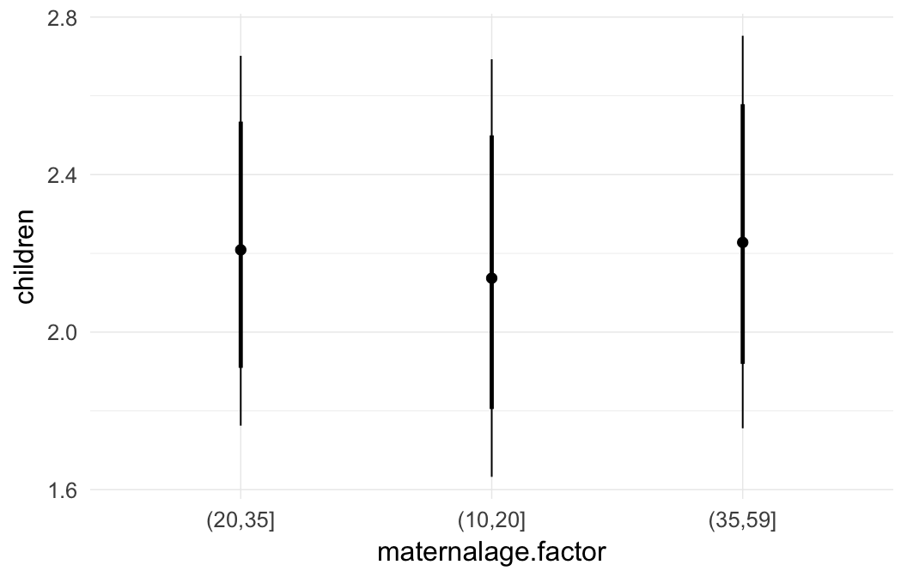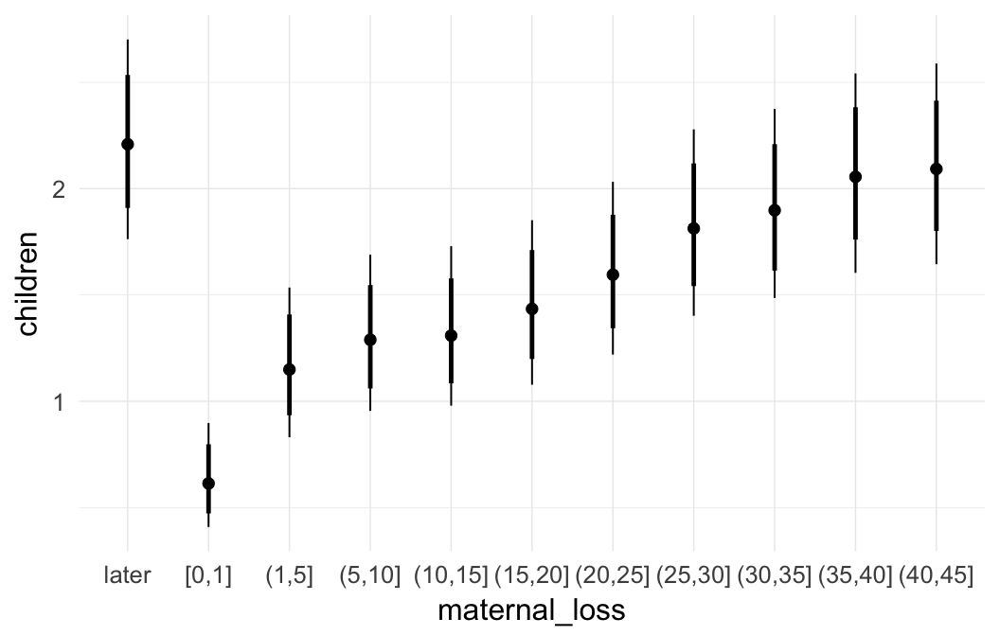
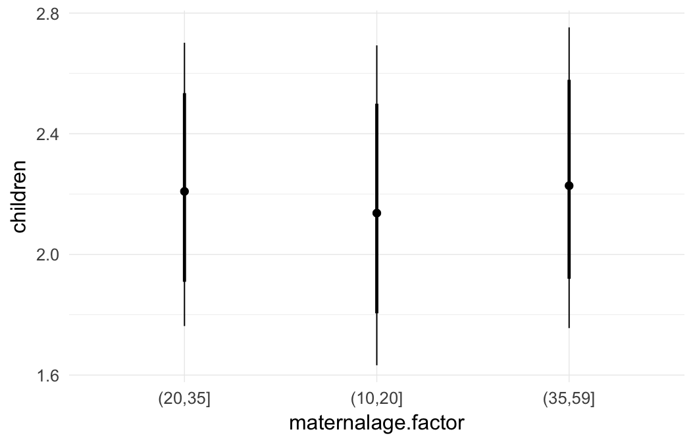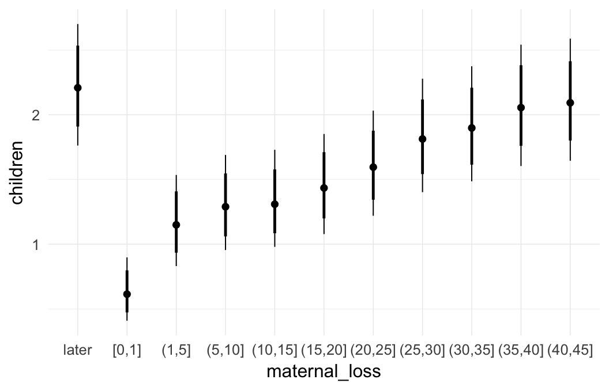
Coefficient plot
Coefficient estimates (95% and 80% credibility).
mcmc_intervals(as.matrix(model$fit), regex_pars = "b_[^I]")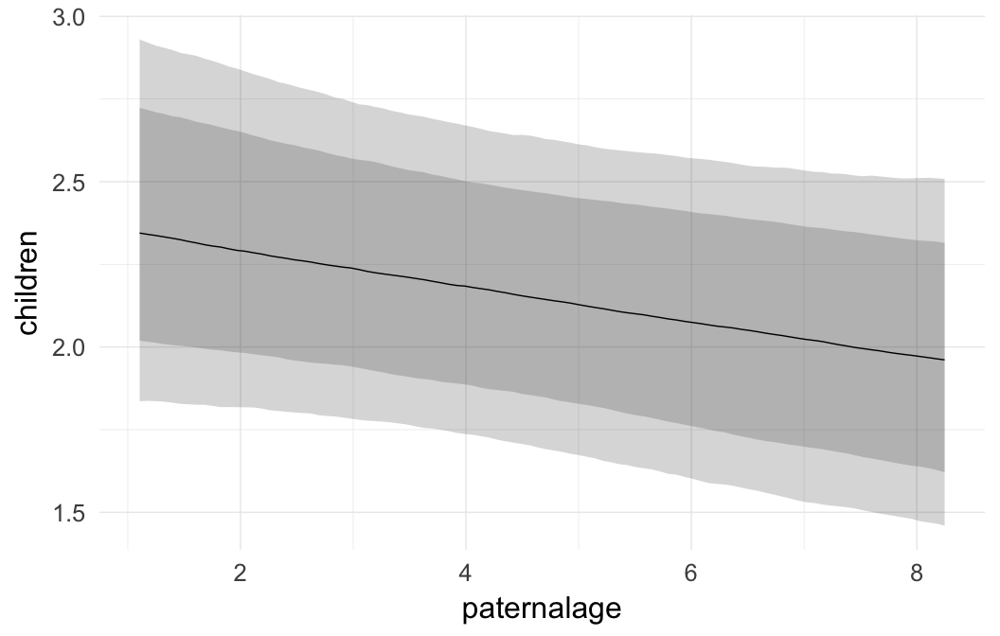
mcmc_areas(as.matrix(model$fit), regex_pars = "b")Diagnostics
These plots were made to diagnose misfit and nonconvergence.
Posterior predictive checks
brms::pp_check(model, re_formula = NA, type = "dens_overlay")brms::pp_check(model, re_formula = NA, type = "hist")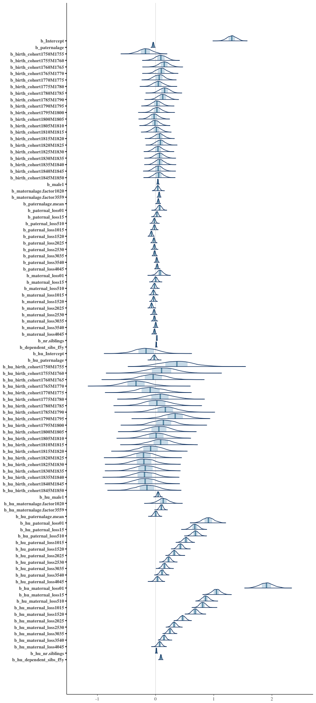
Rhat
Did the 6 chains converge?
stanplot(model, pars = "^b_[^I]", type = 'rhat')Effective sample size by average sample size
stanplot(model, pars = "^b", type = 'ess')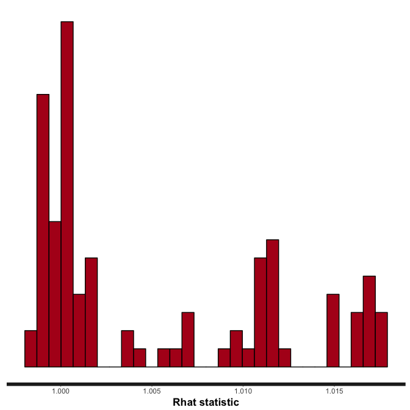
Monte Carlo SE
stanplot(model, pars = "^b", type = 'mcse')Trace plots
if(any( summary(model)$fixed[,"Rhat"] > 1.1)) { # only do traceplots if not converged
plot(model, N = 3, ask = FALSE)
}Further plots
stanplot(model, pars = "^b", type = 'diag')File name
coefs/ddb/r4_control_dependent_sibs.rds
Cluster script
opts_chunk$set(echo = FALSE)
clusterscript = str_replace(basename(model_filename), "\\.rds",".html")
cat("[Cluster script](" , clusterscript, ")", sep = "")r5: Birth order interacted with number of siblings
Plausibly, being first-born has a different effect, when one is an only child as opposed to having two siblings, etc. Here, we allow for such an interaction effect.
Model summary
Full summary
model_summary = summary(model, use_cache = FALSE, priors = TRUE)
print(model_summary)## Family: hurdle_poisson (log)
## Formula: children ~ paternalage + birth_cohort + male + maternalage.factor + paternalage.mean + paternal_loss + maternal_loss + older_siblings * nr.siblings + last_born + (1 | idParents)
## hu ~ paternalage + birth_cohort + male + maternalage.factor + paternalage.mean + paternal_loss + maternal_loss + older_siblings + nr.siblings + last_born + (1 | idParents) + older_siblings:nr.siblings
## Data: model_data (Number of observations: 56663)
## Samples: 6 chains, each with iter = 800; warmup = 300; thin = 1;
## total post-warmup samples = 3000
## WAIC: Not computed
##
## Priors:
## b ~ normal(0,5)
## sd ~ student_t(3, 0, 5)
## b_hu ~ normal(0,5)
## sd_hu ~ student_t(3, 0, 10)
##
## Group-Level Effects:
## ~idParents (Number of levels: 14746)
## Estimate Est.Error l-95% CI u-95% CI Eff.Sample Rhat
## sd(Intercept) 0.36 0.01 0.34 0.37 1031 1
## sd(hu_Intercept) 0.82 0.02 0.79 0.85 854 1
##
## Population-Level Effects:
## Estimate Est.Error l-95% CI u-95% CI
## Intercept 1.31 0.08 1.15 1.45
## paternalage -0.05 0.02 -0.09 -0.02
## birth_cohort1750M1755 -0.17 0.12 -0.39 0.06
## birth_cohort1755M1760 0.10 0.10 -0.09 0.29
## birth_cohort1760M1765 0.15 0.08 0.00 0.33
## birth_cohort1765M1770 0.11 0.09 -0.05 0.28
## birth_cohort1770M1775 0.07 0.09 -0.10 0.24
## birth_cohort1775M1780 0.05 0.08 -0.10 0.22
## birth_cohort1780M1785 0.16 0.08 0.00 0.34
## birth_cohort1785M1790 0.13 0.08 -0.02 0.30
## birth_cohort1790M1795 0.03 0.08 -0.11 0.20
## birth_cohort1795M1800 0.03 0.08 -0.11 0.19
## birth_cohort1800M1805 -0.02 0.08 -0.16 0.14
## birth_cohort1805M1810 0.00 0.07 -0.14 0.15
## birth_cohort1810M1815 0.02 0.07 -0.12 0.17
## birth_cohort1815M1820 0.07 0.07 -0.06 0.22
## birth_cohort1820M1825 0.09 0.07 -0.05 0.24
## birth_cohort1825M1830 0.05 0.07 -0.08 0.20
## birth_cohort1830M1835 0.07 0.07 -0.06 0.22
## birth_cohort1835M1840 0.07 0.07 -0.06 0.23
## birth_cohort1840M1845 0.05 0.07 -0.08 0.21
## birth_cohort1845M1850 0.06 0.07 -0.07 0.21
## male1 0.04 0.01 0.03 0.05
## maternalage.factor1020 0.04 0.03 -0.02 0.10
## maternalage.factor3559 0.07 0.01 0.04 0.09
## paternalage.mean 0.06 0.02 0.02 0.10
## paternal_loss01 0.06 0.04 -0.01 0.13
## paternal_loss15 0.03 0.02 -0.02 0.08
## paternal_loss510 -0.02 0.02 -0.06 0.02
## paternal_loss1015 -0.02 0.02 -0.06 0.02
## paternal_loss1520 -0.07 0.02 -0.11 -0.04
## paternal_loss2025 -0.03 0.02 -0.06 0.00
## paternal_loss2530 -0.02 0.01 -0.05 0.01
## paternal_loss3035 -0.01 0.01 -0.04 0.01
## paternal_loss3540 0.02 0.01 0.00 0.05
## paternal_loss4045 0.03 0.01 0.00 0.05
## maternal_loss01 0.07 0.06 -0.04 0.18
## maternal_loss15 0.00 0.03 -0.05 0.06
## maternal_loss510 -0.02 0.02 -0.07 0.02
## maternal_loss1015 -0.04 0.02 -0.08 0.01
## maternal_loss1520 -0.03 0.02 -0.07 0.01
## maternal_loss2025 -0.07 0.02 -0.10 -0.03
## maternal_loss2530 -0.03 0.01 -0.05 0.00
## maternal_loss3035 -0.02 0.01 -0.05 0.01
## maternal_loss3540 0.00 0.01 -0.02 0.03
## maternal_loss4045 -0.02 0.01 -0.04 0.00
## older_siblings1 0.03 0.02 -0.01 0.07
## older_siblings2 0.04 0.02 -0.01 0.09
## older_siblings3 0.05 0.03 -0.02 0.12
## older_siblings4 -0.04 0.05 -0.12 0.05
## older_siblings5P 0.02 0.04 -0.07 0.11
## nr.siblings 0.02 0.00 0.02 0.03
## last_born1 -0.02 0.01 -0.04 0.00
## older_siblings1:nr.siblings 0.00 0.00 -0.01 0.00
## older_siblings2:nr.siblings 0.00 0.00 -0.01 0.01
## older_siblings3:nr.siblings 0.00 0.00 -0.01 0.01
## older_siblings4:nr.siblings 0.01 0.01 0.00 0.02
## older_siblings5P:nr.siblings 0.00 0.00 -0.01 0.01
## hu_Intercept -0.06 0.20 -0.43 0.34
## hu_paternalage 0.04 0.06 -0.07 0.14
## hu_birth_cohort1750M1755 0.34 0.28 -0.25 0.90
## hu_birth_cohort1755M1760 0.08 0.24 -0.40 0.54
## hu_birth_cohort1760M1765 -0.05 0.23 -0.52 0.37
## hu_birth_cohort1765M1770 -0.35 0.22 -0.79 0.09
## hu_birth_cohort1770M1775 -0.11 0.23 -0.59 0.32
## hu_birth_cohort1775M1780 0.05 0.22 -0.39 0.45
## hu_birth_cohort1780M1785 -0.02 0.22 -0.47 0.40
## hu_birth_cohort1785M1790 0.13 0.21 -0.30 0.52
## hu_birth_cohort1790M1795 0.31 0.20 -0.11 0.67
## hu_birth_cohort1795M1800 0.11 0.19 -0.30 0.47
## hu_birth_cohort1800M1805 0.03 0.19 -0.39 0.39
## hu_birth_cohort1805M1810 -0.02 0.19 -0.43 0.34
## hu_birth_cohort1810M1815 0.06 0.19 -0.34 0.40
## hu_birth_cohort1815M1820 -0.11 0.19 -0.51 0.23
## hu_birth_cohort1820M1825 -0.21 0.19 -0.62 0.12
## hu_birth_cohort1825M1830 -0.21 0.18 -0.61 0.13
## hu_birth_cohort1830M1835 -0.20 0.19 -0.61 0.14
## hu_birth_cohort1835M1840 -0.22 0.19 -0.62 0.12
## hu_birth_cohort1840M1845 -0.21 0.19 -0.61 0.13
## hu_birth_cohort1845M1850 -0.17 0.19 -0.57 0.17
## hu_male1 0.04 0.02 0.00 0.08
## hu_maternalage.factor1020 0.04 0.09 -0.14 0.22
## hu_maternalage.factor3559 0.06 0.03 0.01 0.12
## hu_paternalage.mean -0.06 0.06 -0.17 0.05
## hu_paternal_loss01 0.86 0.09 0.67 1.03
## hu_paternal_loss15 0.67 0.06 0.54 0.79
## hu_paternal_loss510 0.69 0.05 0.58 0.79
## hu_paternal_loss1015 0.52 0.05 0.43 0.62
## hu_paternal_loss1520 0.42 0.05 0.33 0.51
## hu_paternal_loss2025 0.32 0.04 0.24 0.40
## hu_paternal_loss2530 0.23 0.04 0.14 0.30
## hu_paternal_loss3035 0.16 0.04 0.09 0.23
## hu_paternal_loss3540 0.12 0.04 0.05 0.19
## hu_paternal_loss4045 0.04 0.04 -0.04 0.12
## hu_maternal_loss01 1.85 0.12 1.61 2.08
## hu_maternal_loss15 1.02 0.07 0.88 1.16
## hu_maternal_loss510 0.86 0.06 0.76 0.98
## hu_maternal_loss1015 0.81 0.05 0.70 0.91
## hu_maternal_loss1520 0.67 0.05 0.58 0.77
## hu_maternal_loss2025 0.46 0.04 0.37 0.54
## hu_maternal_loss2530 0.31 0.04 0.23 0.39
## hu_maternal_loss3035 0.25 0.04 0.17 0.32
## hu_maternal_loss3540 0.14 0.03 0.08 0.21
## hu_maternal_loss4045 0.08 0.03 0.01 0.15
## hu_older_siblings1 -0.08 0.05 -0.17 0.02
## hu_older_siblings2 0.07 0.07 -0.07 0.20
## hu_older_siblings3 0.05 0.09 -0.13 0.23
## hu_older_siblings4 0.04 0.12 -0.21 0.28
## hu_older_siblings5P -0.11 0.12 -0.36 0.12
## hu_nr.siblings 0.05 0.01 0.03 0.07
## hu_last_born1 0.00 0.03 -0.05 0.06
## hu_older_siblings1:nr.siblings 0.01 0.01 -0.01 0.03
## hu_older_siblings2:nr.siblings -0.02 0.01 -0.04 0.00
## hu_older_siblings3:nr.siblings -0.02 0.01 -0.04 0.01
## hu_older_siblings4:nr.siblings -0.02 0.02 -0.05 0.01
## hu_older_siblings5P:nr.siblings 0.00 0.01 -0.03 0.02
## Eff.Sample Rhat
## Intercept 187 1.02
## paternalage 1071 1.00
## birth_cohort1750M1755 595 1.01
## birth_cohort1755M1760 299 1.02
## birth_cohort1760M1765 225 1.02
## birth_cohort1765M1770 224 1.02
## birth_cohort1770M1775 219 1.02
## birth_cohort1775M1780 217 1.02
## birth_cohort1780M1785 224 1.02
## birth_cohort1785M1790 216 1.02
## birth_cohort1790M1795 194 1.02
## birth_cohort1795M1800 187 1.02
## birth_cohort1800M1805 183 1.03
## birth_cohort1805M1810 184 1.02
## birth_cohort1810M1815 184 1.02
## birth_cohort1815M1820 176 1.03
## birth_cohort1820M1825 179 1.03
## birth_cohort1825M1830 177 1.03
## birth_cohort1830M1835 174 1.03
## birth_cohort1835M1840 176 1.03
## birth_cohort1840M1845 174 1.03
## birth_cohort1845M1850 175 1.03
## male1 3000 1.00
## maternalage.factor1020 3000 1.00
## maternalage.factor3559 2118 1.00
## paternalage.mean 1162 1.00
## paternal_loss01 1864 1.00
## paternal_loss15 1454 1.00
## paternal_loss510 1354 1.00
## paternal_loss1015 1247 1.00
## paternal_loss1520 1064 1.00
## paternal_loss2025 1192 1.00
## paternal_loss2530 1233 1.00
## paternal_loss3035 1324 1.00
## paternal_loss3540 1517 1.00
## paternal_loss4045 1782 1.00
## maternal_loss01 3000 1.00
## maternal_loss15 1932 1.00
## maternal_loss510 1796 1.00
## maternal_loss1015 1711 1.00
## maternal_loss1520 1960 1.00
## maternal_loss2025 1890 1.00
## maternal_loss2530 1720 1.00
## maternal_loss3035 1855 1.00
## maternal_loss3540 2211 1.00
## maternal_loss4045 3000 1.00
## older_siblings1 1496 1.00
## older_siblings2 1084 1.00
## older_siblings3 1177 1.00
## older_siblings4 1173 1.00
## older_siblings5P 1148 1.00
## nr.siblings 2319 1.00
## last_born1 3000 1.00
## older_siblings1:nr.siblings 3000 1.00
## older_siblings2:nr.siblings 3000 1.00
## older_siblings3:nr.siblings 3000 1.00
## older_siblings4:nr.siblings 1596 1.00
## older_siblings5P:nr.siblings 1873 1.00
## hu_Intercept 47 1.08
## hu_paternalage 1146 1.00
## hu_birth_cohort1750M1755 427 1.03
## hu_birth_cohort1755M1760 48 1.06
## hu_birth_cohort1760M1765 57 1.07
## hu_birth_cohort1765M1770 157 1.07
## hu_birth_cohort1770M1775 59 1.06
## hu_birth_cohort1775M1780 78 1.07
## hu_birth_cohort1780M1785 36 1.07
## hu_birth_cohort1785M1790 23 1.08
## hu_birth_cohort1790M1795 31 1.09
## hu_birth_cohort1795M1800 29 1.10
## hu_birth_cohort1800M1805 30 1.09
## hu_birth_cohort1805M1810 30 1.09
## hu_birth_cohort1810M1815 29 1.09
## hu_birth_cohort1815M1820 30 1.09
## hu_birth_cohort1820M1825 29 1.09
## hu_birth_cohort1825M1830 25 1.10
## hu_birth_cohort1830M1835 29 1.09
## hu_birth_cohort1835M1840 29 1.10
## hu_birth_cohort1840M1845 42 1.09
## hu_birth_cohort1845M1850 29 1.10
## hu_male1 3000 1.00
## hu_maternalage.factor1020 3000 1.00
## hu_maternalage.factor3559 3000 1.00
## hu_paternalage.mean 1165 1.00
## hu_paternal_loss01 3000 1.00
## hu_paternal_loss15 1574 1.00
## hu_paternal_loss510 3000 1.00
## hu_paternal_loss1015 1329 1.00
## hu_paternal_loss1520 1206 1.00
## hu_paternal_loss2025 1121 1.00
## hu_paternal_loss2530 1206 1.00
## hu_paternal_loss3035 1274 1.00
## hu_paternal_loss3540 1470 1.00
## hu_paternal_loss4045 3000 1.00
## hu_maternal_loss01 3000 1.00
## hu_maternal_loss15 3000 1.00
## hu_maternal_loss510 3000 1.00
## hu_maternal_loss1015 3000 1.00
## hu_maternal_loss1520 3000 1.00
## hu_maternal_loss2025 3000 1.00
## hu_maternal_loss2530 3000 1.00
## hu_maternal_loss3035 3000 1.00
## hu_maternal_loss3540 2099 1.00
## hu_maternal_loss4045 3000 1.00
## hu_older_siblings1 1914 1.00
## hu_older_siblings2 1842 1.00
## hu_older_siblings3 1454 1.01
## hu_older_siblings4 1602 1.00
## hu_older_siblings5P 1310 1.00
## hu_nr.siblings 1932 1.00
## hu_last_born1 3000 1.00
## hu_older_siblings1:nr.siblings 2379 1.00
## hu_older_siblings2:nr.siblings 2459 1.00
## hu_older_siblings3:nr.siblings 2140 1.00
## hu_older_siblings4:nr.siblings 2091 1.00
## hu_older_siblings5P:nr.siblings 1869 1.00
##
## Samples were drawn using sampling(NUTS). For each parameter, Eff.Sample
## is a crude measure of effective sample size, and Rhat is the potential
## scale reduction factor on split chains (at convergence, Rhat = 1).Table of fixed effects
fixed_eff = data.frame(model_summary$fixed, check.names = F)
fixed_eff$Est.Error = fixed_eff$Eff.Sample = fixed_eff$Rhat = NULL
fixed_eff$OR = exp(fixed_eff$Estimate)
fixed_eff$OR_low = exp(fixed_eff$`l-95% CI`)
fixed_eff$OR_high = exp(fixed_eff$`u-95% CI`)
pander::pander(fixed_eff)| Â | Estimate | l-95% CI | u-95% CI | OR | OR_low | OR_high |
|---|---|---|---|---|---|---|
| Intercept | 1.309 | 1.148 | 1.45 | 3.703 | 3.153 | 4.265 |
| paternalage | -0.05414 | -0.09331 | -0.01561 | 0.9473 | 0.9109 | 0.9845 |
| birth_cohort1750M1755 | -0.1655 | -0.3915 | 0.0611 | 0.8474 | 0.676 | 1.063 |
| birth_cohort1755M1760 | 0.09951 | -0.08531 | 0.2886 | 1.105 | 0.9182 | 1.335 |
| birth_cohort1760M1765 | 0.1539 | -0.001706 | 0.3289 | 1.166 | 0.9983 | 1.389 |
| birth_cohort1765M1770 | 0.1053 | -0.05302 | 0.2837 | 1.111 | 0.9484 | 1.328 |
| birth_cohort1770M1775 | 0.06622 | -0.09866 | 0.241 | 1.068 | 0.906 | 1.273 |
| birth_cohort1775M1780 | 0.05255 | -0.1025 | 0.2239 | 1.054 | 0.9026 | 1.251 |
| birth_cohort1780M1785 | 0.1603 | 0.00454 | 0.3363 | 1.174 | 1.005 | 1.4 |
| birth_cohort1785M1790 | 0.1312 | -0.01874 | 0.2967 | 1.14 | 0.9814 | 1.345 |
| birth_cohort1790M1795 | 0.03074 | -0.114 | 0.1976 | 1.031 | 0.8922 | 1.218 |
| birth_cohort1795M1800 | 0.0284 | -0.1149 | 0.1863 | 1.029 | 0.8915 | 1.205 |
| birth_cohort1800M1805 | -0.01959 | -0.1623 | 0.1372 | 0.9806 | 0.8502 | 1.147 |
| birth_cohort1805M1810 | -0.004445 | -0.14 | 0.152 | 0.9956 | 0.8694 | 1.164 |
| birth_cohort1810M1815 | 0.01997 | -0.1174 | 0.1749 | 1.02 | 0.8892 | 1.191 |
| birth_cohort1815M1820 | 0.07294 | -0.06229 | 0.2247 | 1.076 | 0.9396 | 1.252 |
| birth_cohort1820M1825 | 0.08991 | -0.0456 | 0.2435 | 1.094 | 0.9554 | 1.276 |
| birth_cohort1825M1830 | 0.04862 | -0.08298 | 0.201 | 1.05 | 0.9204 | 1.223 |
| birth_cohort1830M1835 | 0.07386 | -0.06049 | 0.2246 | 1.077 | 0.9413 | 1.252 |
| birth_cohort1835M1840 | 0.07345 | -0.05951 | 0.2273 | 1.076 | 0.9422 | 1.255 |
| birth_cohort1840M1845 | 0.05152 | -0.08131 | 0.2077 | 1.053 | 0.9219 | 1.231 |
| birth_cohort1845M1850 | 0.05967 | -0.07253 | 0.2099 | 1.061 | 0.93 | 1.234 |
| male1 | 0.03987 | 0.02664 | 0.05251 | 1.041 | 1.027 | 1.054 |
| maternalage.factor1020 | 0.03547 | -0.02303 | 0.09803 | 1.036 | 0.9772 | 1.103 |
| maternalage.factor3559 | 0.06516 | 0.04322 | 0.08817 | 1.067 | 1.044 | 1.092 |
| paternalage.mean | 0.05987 | 0.01917 | 0.09952 | 1.062 | 1.019 | 1.105 |
| paternal_loss01 | 0.06119 | -0.009894 | 0.1315 | 1.063 | 0.9902 | 1.14 |
| paternal_loss15 | 0.02717 | -0.02332 | 0.07621 | 1.028 | 0.9769 | 1.079 |
| paternal_loss510 | -0.01866 | -0.06085 | 0.02334 | 0.9815 | 0.941 | 1.024 |
| paternal_loss1015 | -0.01897 | -0.05525 | 0.02011 | 0.9812 | 0.9463 | 1.02 |
| paternal_loss1520 | -0.07224 | -0.1068 | -0.03784 | 0.9303 | 0.8987 | 0.9629 |
| paternal_loss2025 | -0.0275 | -0.05979 | 0.003777 | 0.9729 | 0.942 | 1.004 |
| paternal_loss2530 | -0.02046 | -0.05031 | 0.008166 | 0.9797 | 0.9509 | 1.008 |
| paternal_loss3035 | -0.01469 | -0.04176 | 0.01354 | 0.9854 | 0.9591 | 1.014 |
| paternal_loss3540 | 0.02199 | -0.003399 | 0.04721 | 1.022 | 0.9966 | 1.048 |
| paternal_loss4045 | 0.02834 | 0.002929 | 0.05353 | 1.029 | 1.003 | 1.055 |
| maternal_loss01 | 0.06798 | -0.04218 | 0.1764 | 1.07 | 0.9587 | 1.193 |
| maternal_loss15 | 0.003144 | -0.05199 | 0.05844 | 1.003 | 0.9493 | 1.06 |
| maternal_loss510 | -0.01922 | -0.06609 | 0.02454 | 0.981 | 0.936 | 1.025 |
| maternal_loss1015 | -0.03596 | -0.07911 | 0.009396 | 0.9647 | 0.9239 | 1.009 |
| maternal_loss1520 | -0.03444 | -0.07217 | 0.005135 | 0.9661 | 0.9304 | 1.005 |
| maternal_loss2025 | -0.06955 | -0.1042 | -0.03449 | 0.9328 | 0.901 | 0.9661 |
| maternal_loss2530 | -0.02646 | -0.05474 | 0.003765 | 0.9739 | 0.9467 | 1.004 |
| maternal_loss3035 | -0.02058 | -0.04688 | 0.005948 | 0.9796 | 0.9542 | 1.006 |
| maternal_loss3540 | 0.002023 | -0.02247 | 0.02595 | 1.002 | 0.9778 | 1.026 |
| maternal_loss4045 | -0.01957 | -0.04314 | 0.004867 | 0.9806 | 0.9578 | 1.005 |
| older_siblings1 | 0.03014 | -0.005524 | 0.06716 | 1.031 | 0.9945 | 1.069 |
| older_siblings2 | 0.0373 | -0.009585 | 0.08611 | 1.038 | 0.9905 | 1.09 |
| older_siblings3 | 0.05081 | -0.01635 | 0.1167 | 1.052 | 0.9838 | 1.124 |
| older_siblings4 | -0.03677 | -0.1225 | 0.05208 | 0.9639 | 0.8847 | 1.053 |
| older_siblings5P | 0.01747 | -0.06851 | 0.1054 | 1.018 | 0.9338 | 1.111 |
| nr.siblings | 0.02436 | 0.01854 | 0.03013 | 1.025 | 1.019 | 1.031 |
| last_born1 | -0.02061 | -0.03958 | -0.001553 | 0.9796 | 0.9612 | 0.9984 |
| older_siblings1:nr.siblings | -0.003111 | -0.009743 | 0.003631 | 0.9969 | 0.9903 | 1.004 |
| older_siblings2:nr.siblings | -0.001834 | -0.009077 | 0.005621 | 0.9982 | 0.991 | 1.006 |
| older_siblings3:nr.siblings | -0.00276 | -0.0118 | 0.006514 | 0.9972 | 0.9883 | 1.007 |
| older_siblings4:nr.siblings | 0.007016 | -0.004649 | 0.01844 | 1.007 | 0.9954 | 1.019 |
| older_siblings5P:nr.siblings | 0.0007197 | -0.008452 | 0.009933 | 1.001 | 0.9916 | 1.01 |
| hu_Intercept | -0.06213 | -0.4296 | 0.3376 | 0.9398 | 0.6508 | 1.402 |
| hu_paternalage | 0.03572 | -0.0716 | 0.1415 | 1.036 | 0.9309 | 1.152 |
| hu_birth_cohort1750M1755 | 0.3441 | -0.2451 | 0.9029 | 1.411 | 0.7827 | 2.467 |
| hu_birth_cohort1755M1760 | 0.07564 | -0.4011 | 0.5374 | 1.079 | 0.6696 | 1.712 |
| hu_birth_cohort1760M1765 | -0.05498 | -0.5159 | 0.374 | 0.9465 | 0.597 | 1.454 |
| hu_birth_cohort1765M1770 | -0.3468 | -0.7934 | 0.08592 | 0.707 | 0.4523 | 1.09 |
| hu_birth_cohort1770M1775 | -0.1127 | -0.5865 | 0.3196 | 0.8934 | 0.5563 | 1.377 |
| hu_birth_cohort1775M1780 | 0.04528 | -0.3937 | 0.4507 | 1.046 | 0.6746 | 1.569 |
| hu_birth_cohort1780M1785 | -0.01586 | -0.4701 | 0.4019 | 0.9843 | 0.6249 | 1.495 |
| hu_birth_cohort1785M1790 | 0.1263 | -0.3019 | 0.5244 | 1.135 | 0.7394 | 1.689 |
| hu_birth_cohort1790M1795 | 0.3076 | -0.1081 | 0.6694 | 1.36 | 0.8975 | 1.953 |
| hu_birth_cohort1795M1800 | 0.11 | -0.2997 | 0.4651 | 1.116 | 0.7411 | 1.592 |
| hu_birth_cohort1800M1805 | 0.02588 | -0.3932 | 0.3861 | 1.026 | 0.6749 | 1.471 |
| hu_birth_cohort1805M1810 | -0.01547 | -0.4305 | 0.335 | 0.9847 | 0.6502 | 1.398 |
| hu_birth_cohort1810M1815 | 0.05649 | -0.3409 | 0.3974 | 1.058 | 0.7112 | 1.488 |
| hu_birth_cohort1815M1820 | -0.109 | -0.5074 | 0.2312 | 0.8968 | 0.602 | 1.26 |
| hu_birth_cohort1820M1825 | -0.2144 | -0.625 | 0.123 | 0.807 | 0.5353 | 1.131 |
| hu_birth_cohort1825M1830 | -0.2136 | -0.6109 | 0.1296 | 0.8076 | 0.5429 | 1.138 |
| hu_birth_cohort1830M1835 | -0.1972 | -0.6064 | 0.1412 | 0.8211 | 0.5453 | 1.152 |
| hu_birth_cohort1835M1840 | -0.2175 | -0.6183 | 0.123 | 0.8045 | 0.5389 | 1.131 |
| hu_birth_cohort1840M1845 | -0.2058 | -0.615 | 0.131 | 0.814 | 0.5407 | 1.14 |
| hu_birth_cohort1845M1850 | -0.1668 | -0.5722 | 0.1703 | 0.8463 | 0.5643 | 1.186 |
| hu_male1 | 0.04429 | 0.004178 | 0.08418 | 1.045 | 1.004 | 1.088 |
| hu_maternalage.factor1020 | 0.04385 | -0.1357 | 0.2208 | 1.045 | 0.8731 | 1.247 |
| hu_maternalage.factor3559 | 0.06315 | 0.005878 | 0.1201 | 1.065 | 1.006 | 1.128 |
| hu_paternalage.mean | -0.06187 | -0.1692 | 0.0498 | 0.94 | 0.8443 | 1.051 |
| hu_paternal_loss01 | 0.8571 | 0.6742 | 1.032 | 2.356 | 1.962 | 2.806 |
| hu_paternal_loss15 | 0.6663 | 0.5443 | 0.7859 | 1.947 | 1.723 | 2.194 |
| hu_paternal_loss510 | 0.6893 | 0.5794 | 0.7935 | 1.992 | 1.785 | 2.211 |
| hu_paternal_loss1015 | 0.5212 | 0.4261 | 0.6161 | 1.684 | 1.531 | 1.852 |
| hu_paternal_loss1520 | 0.4229 | 0.3344 | 0.514 | 1.526 | 1.397 | 1.672 |
| hu_paternal_loss2025 | 0.3195 | 0.2352 | 0.401 | 1.376 | 1.265 | 1.493 |
| hu_paternal_loss2530 | 0.225 | 0.1436 | 0.3012 | 1.252 | 1.154 | 1.351 |
| hu_paternal_loss3035 | 0.158 | 0.08607 | 0.2314 | 1.171 | 1.09 | 1.26 |
| hu_paternal_loss3540 | 0.1187 | 0.04535 | 0.1926 | 1.126 | 1.046 | 1.212 |
| hu_paternal_loss4045 | 0.03992 | -0.03835 | 0.1165 | 1.041 | 0.9624 | 1.124 |
| hu_maternal_loss01 | 1.851 | 1.613 | 2.083 | 6.368 | 5.019 | 8.025 |
| hu_maternal_loss15 | 1.023 | 0.8811 | 1.158 | 2.781 | 2.413 | 3.183 |
| hu_maternal_loss510 | 0.8647 | 0.7551 | 0.9796 | 2.374 | 2.128 | 2.663 |
| hu_maternal_loss1015 | 0.8072 | 0.7013 | 0.9129 | 2.242 | 2.016 | 2.491 |
| hu_maternal_loss1520 | 0.673 | 0.5766 | 0.7734 | 1.96 | 1.78 | 2.167 |
| hu_maternal_loss2025 | 0.4584 | 0.3746 | 0.5438 | 1.582 | 1.454 | 1.723 |
| hu_maternal_loss2530 | 0.3142 | 0.2324 | 0.3929 | 1.369 | 1.262 | 1.481 |
| hu_maternal_loss3035 | 0.2453 | 0.1682 | 0.3161 | 1.278 | 1.183 | 1.372 |
| hu_maternal_loss3540 | 0.1449 | 0.07696 | 0.2098 | 1.156 | 1.08 | 1.233 |
| hu_maternal_loss4045 | 0.07714 | 0.008817 | 0.1451 | 1.08 | 1.009 | 1.156 |
| hu_older_siblings1 | -0.07893 | -0.1737 | 0.01934 | 0.9241 | 0.8406 | 1.02 |
| hu_older_siblings2 | 0.06597 | -0.06814 | 0.1999 | 1.068 | 0.9341 | 1.221 |
| hu_older_siblings3 | 0.04546 | -0.1311 | 0.2266 | 1.047 | 0.8771 | 1.254 |
| hu_older_siblings4 | 0.04456 | -0.2056 | 0.2825 | 1.046 | 0.8142 | 1.326 |
| hu_older_siblings5P | -0.1139 | -0.355 | 0.1214 | 0.8924 | 0.7012 | 1.129 |
| hu_nr.siblings | 0.04866 | 0.03206 | 0.06595 | 1.05 | 1.033 | 1.068 |
| hu_last_born1 | 0.004212 | -0.04918 | 0.05845 | 1.004 | 0.952 | 1.06 |
| hu_older_siblings1:nr.siblings | 0.009121 | -0.009392 | 0.02864 | 1.009 | 0.9907 | 1.029 |
| hu_older_siblings2:nr.siblings | -0.01941 | -0.04164 | 0.00337 | 0.9808 | 0.9592 | 1.003 |
| hu_older_siblings3:nr.siblings | -0.01595 | -0.0431 | 0.01026 | 0.9842 | 0.9578 | 1.01 |
| hu_older_siblings4:nr.siblings | -0.019 | -0.05189 | 0.0132 | 0.9812 | 0.9494 | 1.013 |
| hu_older_siblings5P:nr.siblings | -0.003395 | -0.03073 | 0.02411 | 0.9966 | 0.9697 | 1.024 |
Paternal age effect
pander::pander(paternal_age_10y_effect(model))| effect | median_estimate | ci_95 | ci_80 |
|---|---|---|---|
| estimate father 25y | 2.22 | [1.75;2.74] | [1.88;2.56] |
| estimate father 35y | 2.07 | [1.61;2.58] | [1.76;2.4] |
| percentage change | -6.8 | [-12.77;-0.16] | [-10.81;-2.37] |
| OR/IRR | 0.95 | [0.91;0.98] | [0.92;0.97] |
| OR hurdle | 1.04 | [0.93;1.15] | [0.96;1.11] |
Marginal effect plots
plot.brmsMarginalEffects_shades(
x = marginal_effects(model, re_formula = NA, probs = c(0.025,0.975)),
y = marginal_effects(model, re_formula = NA, probs = c(0.1,0.9)),
ask = FALSE)

 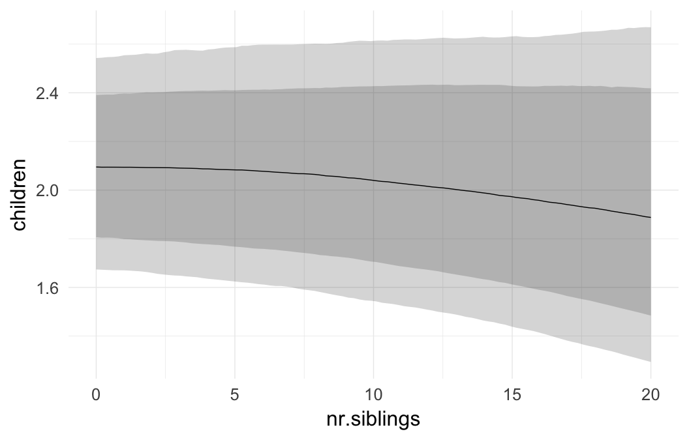
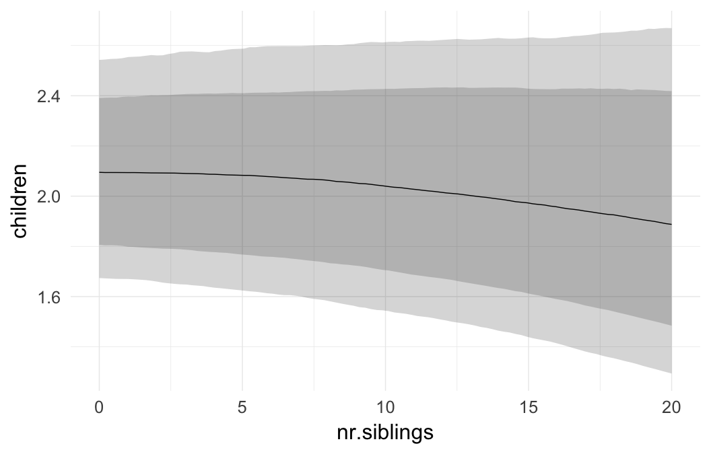
Coefficient plot
Coefficient estimates (95% and 80% credibility).
mcmc_intervals(as.matrix(model$fit), regex_pars = "b_[^I]")
mcmc_areas(as.matrix(model$fit), regex_pars = "b")Diagnostics
These plots were made to diagnose misfit and nonconvergence.
Posterior predictive checks
brms::pp_check(model, re_formula = NA, type = "dens_overlay")brms::pp_check(model, re_formula = NA, type = "hist")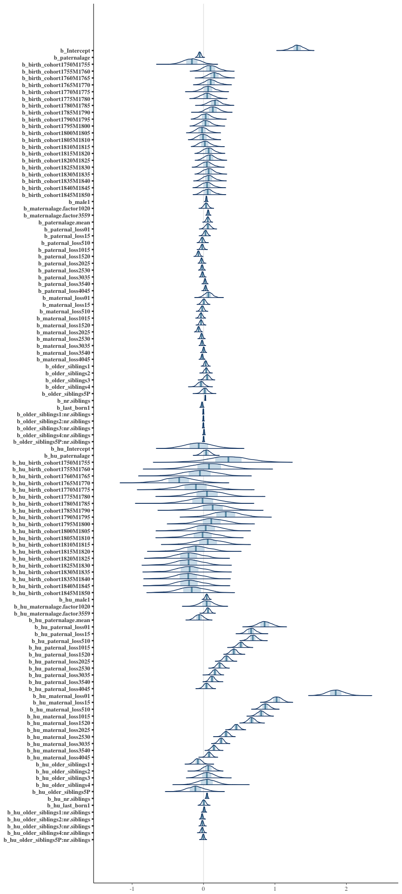
Rhat
Did the 6 chains converge?
stanplot(model, pars = "^b_[^I]", type = 'rhat')Effective sample size by average sample size
stanplot(model, pars = "^b", type = 'ess')Monte Carlo SE
stanplot(model, pars = "^b", type = 'mcse')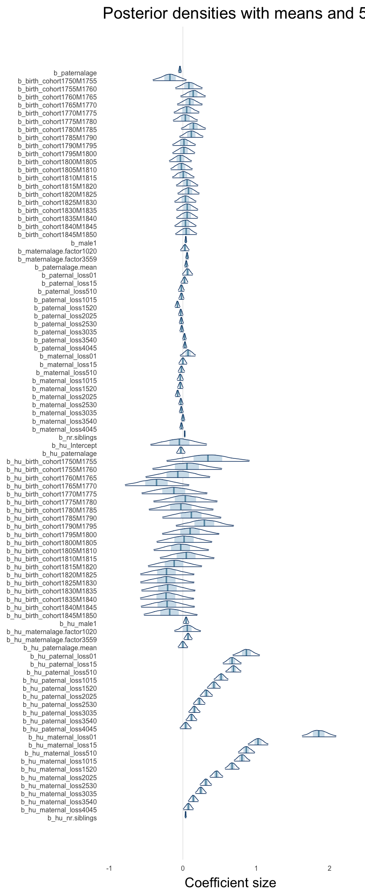
Trace plots
if(any( summary(model)$fixed[,"Rhat"] > 1.1)) { # only do traceplots if not converged
plot(model, N = 3, ask = FALSE)
}Further plots
stanplot(model, pars = "^b", type = 'diag')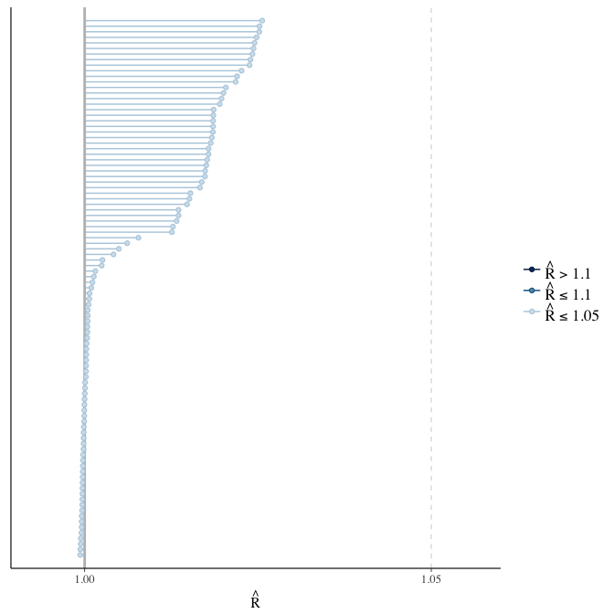
File name
coefs/ddb/r5_birth_order_interact_siblings.rds
Cluster script
opts_chunk$set(echo = FALSE)
clusterscript = str_replace(basename(model_filename), "\\.rds",".html")
cat("[Cluster script](" , clusterscript, ")", sep = "")r6: No birth order control
Paternal age and birth order are highly collinear with each other and with maternal age. Therefore, the choice to include this predictor widens standard errors for each predictor and may be disputed. Here we show what happens when we simply omit the birth order control.
Model summary
Full summary
model_summary = summary(model, use_cache = FALSE, priors = TRUE)
print(model_summary)## Family: hurdle_poisson (log)
## Formula: children ~ paternalage + birth_cohort + male + maternalage.factor + paternalage.mean + paternal_loss + maternal_loss + nr.siblings + (1 | idParents)
## hu ~ paternalage + birth_cohort + male + maternalage.factor + paternalage.mean + paternal_loss + maternal_loss + nr.siblings + (1 | idParents)
## Data: model_data (Number of observations: 56663)
## Samples: 6 chains, each with iter = 1500; warmup = 300; thin = 1;
## total post-warmup samples = 7200
## WAIC: Not computed
##
## Priors:
## b ~ normal(0,5)
## sd ~ student_t(3, 0, 5)
## b_hu ~ normal(0,5)
## sd_hu ~ student_t(3, 0, 10)
##
## Group-Level Effects:
## ~idParents (Number of levels: 14746)
## Estimate Est.Error l-95% CI u-95% CI Eff.Sample Rhat
## sd(Intercept) 0.36 0.01 0.34 0.37 2585 1
## sd(hu_Intercept) 0.82 0.02 0.78 0.85 2535 1
##
## Population-Level Effects:
## Estimate Est.Error l-95% CI u-95% CI Eff.Sample
## Intercept 1.33 0.08 1.17 1.48 225
## paternalage -0.04 0.01 -0.06 -0.02 4101
## birth_cohort1750M1755 -0.18 0.12 -0.41 0.05 828
## birth_cohort1755M1760 0.08 0.09 -0.10 0.27 422
## birth_cohort1760M1765 0.14 0.09 -0.03 0.31 287
## birth_cohort1765M1770 0.09 0.09 -0.08 0.27 266
## birth_cohort1770M1775 0.05 0.09 -0.12 0.22 268
## birth_cohort1775M1780 0.03 0.09 -0.13 0.20 259
## birth_cohort1780M1785 0.14 0.09 -0.02 0.31 253
## birth_cohort1785M1790 0.12 0.08 -0.04 0.28 244
## birth_cohort1790M1795 0.02 0.08 -0.14 0.17 219
## birth_cohort1795M1800 0.01 0.08 -0.14 0.16 213
## birth_cohort1800M1805 -0.03 0.08 -0.19 0.12 213
## birth_cohort1805M1810 -0.02 0.08 -0.17 0.13 205
## birth_cohort1810M1815 0.01 0.08 -0.14 0.16 204
## birth_cohort1815M1820 0.06 0.08 -0.09 0.21 200
## birth_cohort1820M1825 0.08 0.07 -0.07 0.22 197
## birth_cohort1825M1830 0.04 0.08 -0.11 0.18 199
## birth_cohort1830M1835 0.06 0.08 -0.09 0.21 197
## birth_cohort1835M1840 0.06 0.08 -0.09 0.20 195
## birth_cohort1840M1845 0.04 0.08 -0.11 0.18 197
## birth_cohort1845M1850 0.05 0.08 -0.10 0.19 198
## male1 0.04 0.01 0.03 0.05 7200
## maternalage.factor1020 0.03 0.03 -0.03 0.09 7200
## maternalage.factor3559 0.06 0.01 0.04 0.08 7200
## paternalage.mean 0.05 0.01 0.02 0.07 4358
## paternal_loss01 0.06 0.04 -0.01 0.14 7200
## paternal_loss15 0.02 0.02 -0.03 0.07 5072
## paternal_loss510 -0.02 0.02 -0.06 0.02 4062
## paternal_loss1015 -0.02 0.02 -0.06 0.02 4105
## paternal_loss1520 -0.07 0.02 -0.11 -0.04 3874
## paternal_loss2025 -0.03 0.02 -0.06 0.00 3732
## paternal_loss2530 -0.02 0.01 -0.05 0.01 3820
## paternal_loss3035 -0.01 0.01 -0.04 0.01 3826
## paternal_loss3540 0.02 0.01 0.00 0.05 4656
## paternal_loss4045 0.03 0.01 0.00 0.06 7200
## maternal_loss01 0.07 0.05 -0.04 0.17 7200
## maternal_loss15 0.00 0.03 -0.06 0.06 7200
## maternal_loss510 -0.02 0.02 -0.06 0.03 4941
## maternal_loss1015 -0.04 0.02 -0.08 0.01 5500
## maternal_loss1520 -0.03 0.02 -0.07 0.00 5932
## maternal_loss2025 -0.07 0.02 -0.10 -0.04 5166
## maternal_loss2530 -0.03 0.02 -0.06 0.00 4850
## maternal_loss3035 -0.02 0.01 -0.05 0.01 5114
## maternal_loss3540 0.00 0.01 -0.02 0.03 5554
## maternal_loss4045 -0.02 0.01 -0.04 0.00 7200
## nr.siblings 0.03 0.00 0.02 0.03 4511
## hu_Intercept -0.05 0.20 -0.44 0.33 282
## hu_paternalage -0.03 0.03 -0.09 0.03 4468
## hu_birth_cohort1750M1755 0.34 0.29 -0.22 0.91 850
## hu_birth_cohort1755M1760 0.06 0.24 -0.41 0.53 481
## hu_birth_cohort1760M1765 -0.07 0.23 -0.51 0.37 354
## hu_birth_cohort1765M1770 -0.36 0.23 -0.79 0.08 371
## hu_birth_cohort1770M1775 -0.12 0.23 -0.56 0.33 377
## hu_birth_cohort1775M1780 0.03 0.22 -0.40 0.47 367
## hu_birth_cohort1780M1785 -0.03 0.22 -0.46 0.41 341
## hu_birth_cohort1785M1790 0.12 0.21 -0.28 0.52 311
## hu_birth_cohort1790M1795 0.29 0.20 -0.09 0.69 295
## hu_birth_cohort1795M1800 0.10 0.20 -0.28 0.49 279
## hu_birth_cohort1800M1805 0.02 0.19 -0.36 0.40 274
## hu_birth_cohort1805M1810 -0.03 0.19 -0.40 0.35 277
## hu_birth_cohort1810M1815 0.05 0.19 -0.31 0.43 269
## hu_birth_cohort1815M1820 -0.12 0.19 -0.47 0.26 266
## hu_birth_cohort1820M1825 -0.22 0.19 -0.58 0.15 264
## hu_birth_cohort1825M1830 -0.22 0.19 -0.58 0.15 259
## hu_birth_cohort1830M1835 -0.21 0.19 -0.56 0.17 262
## hu_birth_cohort1835M1840 -0.23 0.19 -0.58 0.15 261
## hu_birth_cohort1840M1845 -0.21 0.19 -0.57 0.16 260
## hu_birth_cohort1845M1850 -0.18 0.19 -0.53 0.20 262
## hu_male1 0.04 0.02 0.01 0.08 7200
## hu_maternalage.factor1020 0.06 0.09 -0.11 0.24 7200
## hu_maternalage.factor3559 0.07 0.03 0.01 0.13 7200
## hu_paternalage.mean 0.00 0.03 -0.06 0.07 4621
## hu_paternal_loss01 0.87 0.09 0.68 1.05 7200
## hu_paternal_loss15 0.67 0.06 0.55 0.80 4880
## hu_paternal_loss510 0.69 0.05 0.58 0.79 4602
## hu_paternal_loss1015 0.52 0.05 0.42 0.62 4145
## hu_paternal_loss1520 0.42 0.05 0.33 0.51 3598
## hu_paternal_loss2025 0.32 0.04 0.23 0.41 3827
## hu_paternal_loss2530 0.22 0.04 0.14 0.30 3738
## hu_paternal_loss3035 0.16 0.04 0.08 0.24 4102
## hu_paternal_loss3540 0.12 0.04 0.04 0.19 4052
## hu_paternal_loss4045 0.04 0.04 -0.04 0.12 7200
## hu_maternal_loss01 1.85 0.12 1.63 2.09 7200
## hu_maternal_loss15 1.02 0.07 0.89 1.16 7200
## hu_maternal_loss510 0.86 0.06 0.76 0.98 7200
## hu_maternal_loss1015 0.81 0.05 0.70 0.92 7200
## hu_maternal_loss1520 0.67 0.05 0.57 0.77 7200
## hu_maternal_loss2025 0.46 0.05 0.37 0.55 4712
## hu_maternal_loss2530 0.31 0.04 0.23 0.39 7200
## hu_maternal_loss3035 0.24 0.04 0.17 0.32 7200
## hu_maternal_loss3540 0.14 0.04 0.07 0.21 7200
## hu_maternal_loss4045 0.07 0.04 0.01 0.14 7200
## hu_nr.siblings 0.04 0.00 0.03 0.05 6365
## Rhat
## Intercept 1.02
## paternalage 1.00
## birth_cohort1750M1755 1.01
## birth_cohort1755M1760 1.01
## birth_cohort1760M1765 1.02
## birth_cohort1765M1770 1.02
## birth_cohort1770M1775 1.02
## birth_cohort1775M1780 1.02
## birth_cohort1780M1785 1.02
## birth_cohort1785M1790 1.02
## birth_cohort1790M1795 1.02
## birth_cohort1795M1800 1.02
## birth_cohort1800M1805 1.02
## birth_cohort1805M1810 1.02
## birth_cohort1810M1815 1.02
## birth_cohort1815M1820 1.03
## birth_cohort1820M1825 1.02
## birth_cohort1825M1830 1.02
## birth_cohort1830M1835 1.03
## birth_cohort1835M1840 1.03
## birth_cohort1840M1845 1.02
## birth_cohort1845M1850 1.02
## male1 1.00
## maternalage.factor1020 1.00
## maternalage.factor3559 1.00
## paternalage.mean 1.00
## paternal_loss01 1.00
## paternal_loss15 1.00
## paternal_loss510 1.00
## paternal_loss1015 1.00
## paternal_loss1520 1.00
## paternal_loss2025 1.00
## paternal_loss2530 1.00
## paternal_loss3035 1.00
## paternal_loss3540 1.00
## paternal_loss4045 1.00
## maternal_loss01 1.00
## maternal_loss15 1.00
## maternal_loss510 1.00
## maternal_loss1015 1.00
## maternal_loss1520 1.00
## maternal_loss2025 1.00
## maternal_loss2530 1.00
## maternal_loss3035 1.00
## maternal_loss3540 1.00
## maternal_loss4045 1.00
## nr.siblings 1.00
## hu_Intercept 1.02
## hu_paternalage 1.00
## hu_birth_cohort1750M1755 1.00
## hu_birth_cohort1755M1760 1.01
## hu_birth_cohort1760M1765 1.01
## hu_birth_cohort1765M1770 1.01
## hu_birth_cohort1770M1775 1.01
## hu_birth_cohort1775M1780 1.01
## hu_birth_cohort1780M1785 1.01
## hu_birth_cohort1785M1790 1.02
## hu_birth_cohort1790M1795 1.02
## hu_birth_cohort1795M1800 1.02
## hu_birth_cohort1800M1805 1.02
## hu_birth_cohort1805M1810 1.02
## hu_birth_cohort1810M1815 1.02
## hu_birth_cohort1815M1820 1.02
## hu_birth_cohort1820M1825 1.02
## hu_birth_cohort1825M1830 1.02
## hu_birth_cohort1830M1835 1.02
## hu_birth_cohort1835M1840 1.02
## hu_birth_cohort1840M1845 1.02
## hu_birth_cohort1845M1850 1.02
## hu_male1 1.00
## hu_maternalage.factor1020 1.00
## hu_maternalage.factor3559 1.00
## hu_paternalage.mean 1.00
## hu_paternal_loss01 1.00
## hu_paternal_loss15 1.00
## hu_paternal_loss510 1.00
## hu_paternal_loss1015 1.00
## hu_paternal_loss1520 1.00
## hu_paternal_loss2025 1.00
## hu_paternal_loss2530 1.00
## hu_paternal_loss3035 1.00
## hu_paternal_loss3540 1.00
## hu_paternal_loss4045 1.00
## hu_maternal_loss01 1.00
## hu_maternal_loss15 1.00
## hu_maternal_loss510 1.00
## hu_maternal_loss1015 1.00
## hu_maternal_loss1520 1.00
## hu_maternal_loss2025 1.00
## hu_maternal_loss2530 1.00
## hu_maternal_loss3035 1.00
## hu_maternal_loss3540 1.00
## hu_maternal_loss4045 1.00
## hu_nr.siblings 1.00
##
## Samples were drawn using sampling(NUTS). For each parameter, Eff.Sample
## is a crude measure of effective sample size, and Rhat is the potential
## scale reduction factor on split chains (at convergence, Rhat = 1).Table of fixed effects
fixed_eff = data.frame(model_summary$fixed, check.names = F)
fixed_eff$Est.Error = fixed_eff$Eff.Sample = fixed_eff$Rhat = NULL
fixed_eff$OR = exp(fixed_eff$Estimate)
fixed_eff$OR_low = exp(fixed_eff$`l-95% CI`)
fixed_eff$OR_high = exp(fixed_eff$`u-95% CI`)
pander::pander(fixed_eff)| Â | Estimate | l-95% CI | u-95% CI | OR | OR_low | OR_high |
|---|---|---|---|---|---|---|
| Intercept | 1.328 | 1.175 | 1.481 | 3.775 | 3.238 | 4.398 |
| paternalage | -0.03948 | -0.0604 | -0.01835 | 0.9613 | 0.9414 | 0.9818 |
| birth_cohort1750M1755 | -0.176 | -0.4074 | 0.04739 | 0.8386 | 0.6654 | 1.049 |
| birth_cohort1755M1760 | 0.08246 | -0.1004 | 0.2652 | 1.086 | 0.9044 | 1.304 |
| birth_cohort1760M1765 | 0.1412 | -0.02995 | 0.3084 | 1.152 | 0.9705 | 1.361 |
| birth_cohort1765M1770 | 0.09321 | -0.07533 | 0.2655 | 1.098 | 0.9274 | 1.304 |
| birth_cohort1770M1775 | 0.0525 | -0.1211 | 0.2221 | 1.054 | 0.8859 | 1.249 |
| birth_cohort1775M1780 | 0.03412 | -0.1321 | 0.2005 | 1.035 | 0.8763 | 1.222 |
| birth_cohort1780M1785 | 0.1442 | -0.02185 | 0.3106 | 1.155 | 0.9784 | 1.364 |
| birth_cohort1785M1790 | 0.1157 | -0.0449 | 0.2764 | 1.123 | 0.9561 | 1.318 |
| birth_cohort1790M1795 | 0.01518 | -0.1403 | 0.1732 | 1.015 | 0.8691 | 1.189 |
| birth_cohort1795M1800 | 0.01421 | -0.1396 | 0.164 | 1.014 | 0.8697 | 1.178 |
| birth_cohort1800M1805 | -0.03339 | -0.1851 | 0.1189 | 0.9672 | 0.831 | 1.126 |
| birth_cohort1805M1810 | -0.01943 | -0.1651 | 0.1303 | 0.9808 | 0.8478 | 1.139 |
| birth_cohort1810M1815 | 0.006128 | -0.1421 | 0.1551 | 1.006 | 0.8675 | 1.168 |
| birth_cohort1815M1820 | 0.05782 | -0.08945 | 0.2062 | 1.06 | 0.9144 | 1.229 |
| birth_cohort1820M1825 | 0.07724 | -0.06951 | 0.2242 | 1.08 | 0.9328 | 1.251 |
| birth_cohort1825M1830 | 0.03517 | -0.1125 | 0.181 | 1.036 | 0.8936 | 1.198 |
| birth_cohort1830M1835 | 0.05978 | -0.08675 | 0.2054 | 1.062 | 0.9169 | 1.228 |
| birth_cohort1835M1840 | 0.05876 | -0.08723 | 0.2033 | 1.061 | 0.9165 | 1.225 |
| birth_cohort1840M1845 | 0.03587 | -0.1107 | 0.1822 | 1.037 | 0.8952 | 1.2 |
| birth_cohort1845M1850 | 0.04535 | -0.1006 | 0.1907 | 1.046 | 0.9043 | 1.21 |
| male1 | 0.04014 | 0.02675 | 0.05329 | 1.041 | 1.027 | 1.055 |
| maternalage.factor1020 | 0.02811 | -0.0325 | 0.0867 | 1.029 | 0.968 | 1.091 |
| maternalage.factor3559 | 0.0583 | 0.03768 | 0.07936 | 1.06 | 1.038 | 1.083 |
| paternalage.mean | 0.04667 | 0.02276 | 0.07028 | 1.048 | 1.023 | 1.073 |
| paternal_loss01 | 0.0642 | -0.006422 | 0.1354 | 1.066 | 0.9936 | 1.145 |
| paternal_loss15 | 0.02227 | -0.02743 | 0.06847 | 1.023 | 0.9729 | 1.071 |
| paternal_loss510 | -0.02063 | -0.06194 | 0.01955 | 0.9796 | 0.9399 | 1.02 |
| paternal_loss1015 | -0.01935 | -0.05553 | 0.01668 | 0.9808 | 0.946 | 1.017 |
| paternal_loss1520 | -0.07365 | -0.1073 | -0.03925 | 0.929 | 0.8982 | 0.9615 |
| paternal_loss2025 | -0.02847 | -0.0594 | 0.00246 | 0.9719 | 0.9423 | 1.002 |
| paternal_loss2530 | -0.02035 | -0.04936 | 0.008794 | 0.9799 | 0.9518 | 1.009 |
| paternal_loss3035 | -0.01468 | -0.04164 | 0.01246 | 0.9854 | 0.9592 | 1.013 |
| paternal_loss3540 | 0.02229 | -0.003017 | 0.04738 | 1.023 | 0.997 | 1.049 |
| paternal_loss4045 | 0.02851 | 0.002646 | 0.05531 | 1.029 | 1.003 | 1.057 |
| maternal_loss01 | 0.07087 | -0.03678 | 0.172 | 1.073 | 0.9639 | 1.188 |
| maternal_loss15 | 0.0004157 | -0.05529 | 0.05656 | 1 | 0.9462 | 1.058 |
| maternal_loss510 | -0.01968 | -0.06366 | 0.02501 | 0.9805 | 0.9383 | 1.025 |
| maternal_loss1015 | -0.03545 | -0.07812 | 0.006681 | 0.9652 | 0.9249 | 1.007 |
| maternal_loss1520 | -0.03434 | -0.07149 | 0.003599 | 0.9662 | 0.931 | 1.004 |
| maternal_loss2025 | -0.07043 | -0.1043 | -0.03603 | 0.932 | 0.9009 | 0.9646 |
| maternal_loss2530 | -0.02674 | -0.05666 | 0.003387 | 0.9736 | 0.9449 | 1.003 |
| maternal_loss3035 | -0.02106 | -0.0486 | 0.005549 | 0.9792 | 0.9526 | 1.006 |
| maternal_loss3540 | 0.002211 | -0.02203 | 0.02714 | 1.002 | 0.9782 | 1.028 |
| maternal_loss4045 | -0.01948 | -0.04308 | 0.004509 | 0.9807 | 0.9578 | 1.005 |
| nr.siblings | 0.0257 | 0.02229 | 0.02903 | 1.026 | 1.023 | 1.029 |
| hu_Intercept | -0.04733 | -0.4391 | 0.3255 | 0.9538 | 0.6446 | 1.385 |
| hu_paternalage | -0.02692 | -0.08688 | 0.03134 | 0.9734 | 0.9168 | 1.032 |
| hu_birth_cohort1750M1755 | 0.3421 | -0.2193 | 0.9067 | 1.408 | 0.8031 | 2.476 |
| hu_birth_cohort1755M1760 | 0.05659 | -0.4115 | 0.5315 | 1.058 | 0.6626 | 1.701 |
| hu_birth_cohort1760M1765 | -0.06865 | -0.5054 | 0.3697 | 0.9337 | 0.6032 | 1.447 |
| hu_birth_cohort1765M1770 | -0.3584 | -0.7859 | 0.08453 | 0.6988 | 0.4557 | 1.088 |
| hu_birth_cohort1770M1775 | -0.1222 | -0.5591 | 0.3316 | 0.885 | 0.5717 | 1.393 |
| hu_birth_cohort1775M1780 | 0.0335 | -0.3982 | 0.4692 | 1.034 | 0.6716 | 1.599 |
| hu_birth_cohort1780M1785 | -0.02674 | -0.4607 | 0.4144 | 0.9736 | 0.6308 | 1.514 |
| hu_birth_cohort1785M1790 | 0.1158 | -0.2771 | 0.5207 | 1.123 | 0.758 | 1.683 |
| hu_birth_cohort1790M1795 | 0.2932 | -0.0928 | 0.6925 | 1.341 | 0.9114 | 1.999 |
| hu_birth_cohort1795M1800 | 0.09923 | -0.2795 | 0.4939 | 1.104 | 0.7562 | 1.639 |
| hu_birth_cohort1800M1805 | 0.0172 | -0.3551 | 0.3967 | 1.017 | 0.7011 | 1.487 |
| hu_birth_cohort1805M1810 | -0.02853 | -0.3958 | 0.3522 | 0.9719 | 0.6731 | 1.422 |
| hu_birth_cohort1810M1815 | 0.04717 | -0.3099 | 0.4271 | 1.048 | 0.7335 | 1.533 |
| hu_birth_cohort1815M1820 | -0.1179 | -0.4724 | 0.2585 | 0.8888 | 0.6235 | 1.295 |
| hu_birth_cohort1820M1825 | -0.2222 | -0.5772 | 0.1539 | 0.8007 | 0.5615 | 1.166 |
| hu_birth_cohort1825M1830 | -0.2244 | -0.577 | 0.1538 | 0.799 | 0.5616 | 1.166 |
| hu_birth_cohort1830M1835 | -0.2068 | -0.5624 | 0.168 | 0.8132 | 0.5698 | 1.183 |
| hu_birth_cohort1835M1840 | -0.2285 | -0.5798 | 0.1503 | 0.7957 | 0.56 | 1.162 |
| hu_birth_cohort1840M1845 | -0.2144 | -0.5688 | 0.1606 | 0.807 | 0.5662 | 1.174 |
| hu_birth_cohort1845M1850 | -0.179 | -0.5298 | 0.1969 | 0.8361 | 0.5887 | 1.218 |
| hu_male1 | 0.04448 | 0.005676 | 0.08229 | 1.045 | 1.006 | 1.086 |
| hu_maternalage.factor1020 | 0.06065 | -0.1141 | 0.243 | 1.063 | 0.8921 | 1.275 |
| hu_maternalage.factor3559 | 0.07084 | 0.01448 | 0.1282 | 1.073 | 1.015 | 1.137 |
| hu_paternalage.mean | 0.000142 | -0.06491 | 0.06702 | 1 | 0.9372 | 1.069 |
| hu_paternal_loss01 | 0.8659 | 0.681 | 1.046 | 2.377 | 1.976 | 2.848 |
| hu_paternal_loss15 | 0.6709 | 0.5463 | 0.7966 | 1.956 | 1.727 | 2.218 |
| hu_paternal_loss510 | 0.6901 | 0.5828 | 0.7936 | 1.994 | 1.791 | 2.211 |
| hu_paternal_loss1015 | 0.5209 | 0.4242 | 0.6171 | 1.684 | 1.528 | 1.854 |
| hu_paternal_loss1520 | 0.4229 | 0.3318 | 0.5126 | 1.526 | 1.394 | 1.67 |
| hu_paternal_loss2025 | 0.32 | 0.2342 | 0.4052 | 1.377 | 1.264 | 1.5 |
| hu_paternal_loss2530 | 0.2241 | 0.1424 | 0.304 | 1.251 | 1.153 | 1.355 |
| hu_paternal_loss3035 | 0.1573 | 0.07943 | 0.2361 | 1.17 | 1.083 | 1.266 |
| hu_paternal_loss3540 | 0.1176 | 0.04189 | 0.1924 | 1.125 | 1.043 | 1.212 |
| hu_paternal_loss4045 | 0.03825 | -0.03926 | 0.1152 | 1.039 | 0.9615 | 1.122 |
| hu_maternal_loss01 | 1.851 | 1.625 | 2.088 | 6.368 | 5.08 | 8.069 |
| hu_maternal_loss15 | 1.024 | 0.889 | 1.162 | 2.785 | 2.433 | 3.196 |
| hu_maternal_loss510 | 0.8647 | 0.7555 | 0.9804 | 2.374 | 2.129 | 2.666 |
| hu_maternal_loss1015 | 0.805 | 0.6984 | 0.9155 | 2.237 | 2.011 | 2.498 |
| hu_maternal_loss1520 | 0.6709 | 0.5749 | 0.769 | 1.956 | 1.777 | 2.158 |
| hu_maternal_loss2025 | 0.4574 | 0.3682 | 0.5457 | 1.58 | 1.445 | 1.726 |
| hu_maternal_loss2530 | 0.3134 | 0.234 | 0.3929 | 1.368 | 1.264 | 1.481 |
| hu_maternal_loss3035 | 0.2449 | 0.1698 | 0.3204 | 1.277 | 1.185 | 1.378 |
| hu_maternal_loss3540 | 0.1432 | 0.07398 | 0.2126 | 1.154 | 1.077 | 1.237 |
| hu_maternal_loss4045 | 0.07476 | 0.005343 | 0.144 | 1.078 | 1.005 | 1.155 |
| hu_nr.siblings | 0.03786 | 0.02946 | 0.04651 | 1.039 | 1.03 | 1.048 |
Paternal age effect
pander::pander(paternal_age_10y_effect(model))| effect | median_estimate | ci_95 | ci_80 |
|---|---|---|---|
| estimate father 25y | 2.22 | [1.75;2.79] | [1.91;2.58] |
| estimate father 35y | 2.17 | [1.71;2.73] | [1.86;2.52] |
| percentage change | -2.34 | [-5.78;1.32] | [-4.59;0.01] |
| OR/IRR | 0.96 | [0.94;0.98] | [0.95;0.97] |
| OR hurdle | 0.97 | [0.92;1.03] | [0.94;1.01] |
Marginal effect plots
plot.brmsMarginalEffects_shades(
x = marginal_effects(model, re_formula = NA, probs = c(0.025,0.975)),
y = marginal_effects(model, re_formula = NA, probs = c(0.1,0.9)),
ask = FALSE)

Coefficient plot
Coefficient estimates (95% and 80% credibility).
mcmc_intervals(as.matrix(model$fit), regex_pars = "b_[^I]")
mcmc_areas(as.matrix(model$fit), regex_pars = "b")
Diagnostics
These plots were made to diagnose misfit and nonconvergence.
Posterior predictive checks
brms::pp_check(model, re_formula = NA, type = "dens_overlay")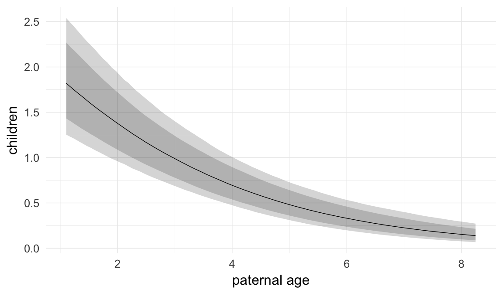
brms::pp_check(model, re_formula = NA, type = "hist")Rhat
Did the 6 chains converge?
stanplot(model, pars = "^b_[^I]", type = 'rhat')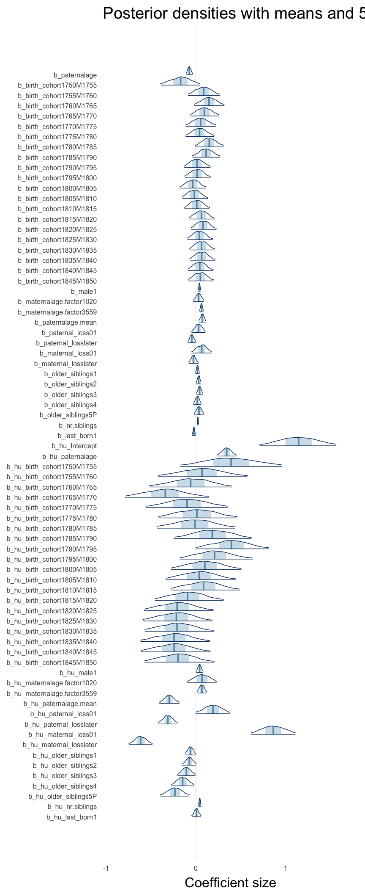
Effective sample size by average sample size
stanplot(model, pars = "^b", type = 'ess')Monte Carlo SE
stanplot(model, pars = "^b", type = 'mcse')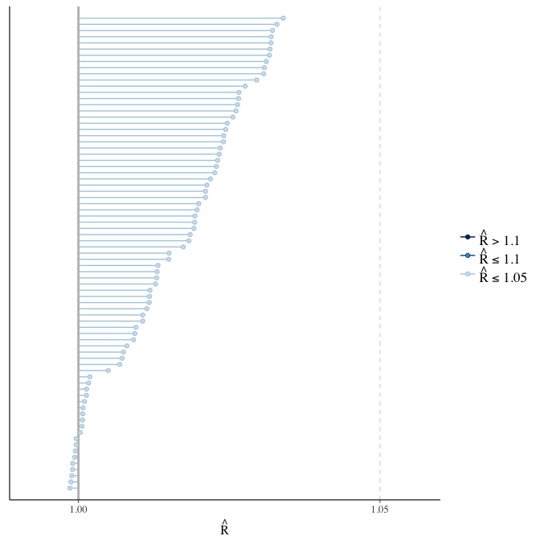
Trace plots
if(any( summary(model)$fixed[,"Rhat"] > 1.1)) { # only do traceplots if not converged
plot(model, N = 3, ask = FALSE)
}Further plots
stanplot(model, pars = "^b", type = 'diag')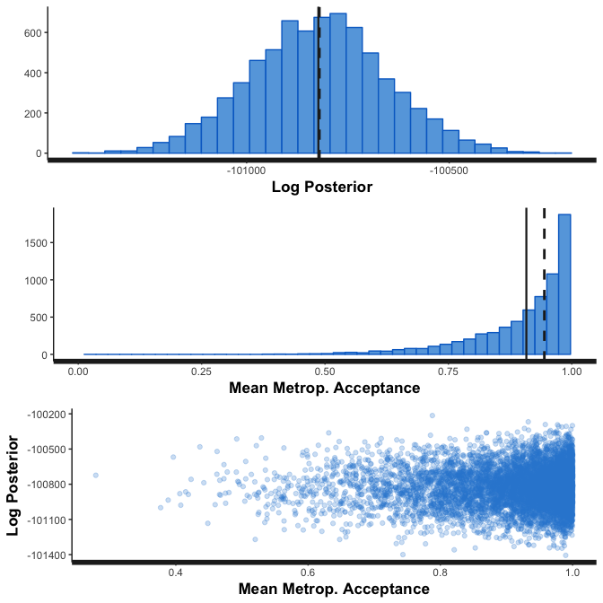
File name
coefs/ddb/r6_no_birth_order_control.rds
Cluster script
opts_chunk$set(echo = FALSE)
clusterscript = str_replace(basename(model_filename), "\\.rds",".html")
cat("[Cluster script](" , clusterscript, ")", sep = "")r7: Less control for parental loss
We adjusted for parental loss very stringently, including covariates for parental loss up to age 45. Here we show what happens, when we only control for parental loss in the first, and the first five years of life.
Model summary
Full summary
model_summary = summary(model, use_cache = FALSE, priors = TRUE)
print(model_summary)## Family: hurdle_poisson (log)
## Formula: children ~ paternalage + birth_cohort + male + maternalage.factor + paternalage.mean + paternal_loss + maternal_loss + older_siblings + nr.siblings + last_born + (1 | idParents)
## hu ~ paternalage + birth_cohort + male + maternalage.factor + paternalage.mean + paternal_loss + maternal_loss + older_siblings + nr.siblings + last_born + (1 | idParents)
## Data: model_data (Number of observations: 56663)
## Samples: 6 chains, each with iter = 1000; warmup = 500; thin = 1;
## total post-warmup samples = 3000
## WAIC: Not computed
##
## Priors:
## b ~ normal(0,5)
## sd ~ student_t(3, 0, 5)
## b_hu ~ normal(0,5)
## sd_hu ~ student_t(3, 0, 10)
##
## Group-Level Effects:
## ~idParents (Number of levels: 14746)
## Estimate Est.Error l-95% CI u-95% CI Eff.Sample Rhat
## sd(Intercept) 0.36 0.01 0.35 0.37 1045 1
## sd(hu_Intercept) 0.87 0.02 0.84 0.91 935 1
##
## Population-Level Effects:
## Estimate Est.Error l-95% CI u-95% CI Eff.Sample
## Intercept 1.39 0.08 1.22 1.54 263
## paternalage -0.07 0.02 -0.11 -0.04 854
## birth_cohort1750M1755 -0.17 0.11 -0.39 0.05 709
## birth_cohort1755M1760 0.09 0.09 -0.09 0.27 368
## birth_cohort1760M1765 0.15 0.08 -0.02 0.32 287
## birth_cohort1765M1770 0.10 0.08 -0.06 0.26 279
## birth_cohort1770M1775 0.05 0.09 -0.11 0.23 286
## birth_cohort1775M1780 0.04 0.08 -0.11 0.21 253
## birth_cohort1780M1785 0.15 0.08 -0.01 0.31 263
## birth_cohort1785M1790 0.11 0.08 -0.04 0.27 246
## birth_cohort1790M1795 0.01 0.08 -0.13 0.16 229
## birth_cohort1795M1800 0.01 0.07 -0.12 0.16 217
## birth_cohort1800M1805 -0.03 0.07 -0.18 0.12 215
## birth_cohort1805M1810 -0.02 0.07 -0.15 0.13 207
## birth_cohort1810M1815 0.01 0.07 -0.13 0.15 207
## birth_cohort1815M1820 0.06 0.07 -0.07 0.21 208
## birth_cohort1820M1825 0.08 0.07 -0.05 0.23 206
## birth_cohort1825M1830 0.04 0.07 -0.09 0.19 202
## birth_cohort1830M1835 0.06 0.07 -0.07 0.21 199
## birth_cohort1835M1840 0.07 0.07 -0.07 0.22 200
## birth_cohort1840M1845 0.04 0.07 -0.09 0.19 200
## birth_cohort1845M1850 0.05 0.07 -0.08 0.20 200
## male1 0.04 0.01 0.03 0.05 3000
## maternalage.factor1020 0.03 0.03 -0.03 0.09 3000
## maternalage.factor3559 0.06 0.01 0.04 0.09 3000
## paternalage.mean 0.07 0.02 0.03 0.11 876
## paternal_loss01 0.03 0.04 -0.05 0.11 3000
## paternal_losslater -0.04 0.02 -0.09 0.00 2389
## maternal_loss01 0.07 0.06 -0.05 0.18 3000
## maternal_losslater -0.03 0.03 -0.08 0.03 2549
## older_siblings1 0.02 0.01 0.00 0.04 1505
## older_siblings2 0.03 0.01 0.00 0.06 902
## older_siblings3 0.04 0.02 0.01 0.08 890
## older_siblings4 0.02 0.02 -0.03 0.06 857
## older_siblings5P 0.04 0.03 -0.02 0.09 827
## nr.siblings 0.02 0.00 0.02 0.03 874
## last_born1 -0.02 0.01 -0.04 0.00 3000
## hu_Intercept 1.15 0.22 0.71 1.56 136
## hu_paternalage 0.34 0.05 0.24 0.45 629
## hu_birth_cohort1750M1755 0.39 0.29 -0.17 0.96 289
## hu_birth_cohort1755M1760 0.07 0.25 -0.42 0.57 203
## hu_birth_cohort1760M1765 -0.06 0.23 -0.52 0.40 143
## hu_birth_cohort1765M1770 -0.34 0.23 -0.79 0.14 144
## hu_birth_cohort1770M1775 -0.10 0.23 -0.56 0.35 147
## hu_birth_cohort1775M1780 0.01 0.23 -0.42 0.46 135
## hu_birth_cohort1780M1785 -0.01 0.22 -0.43 0.44 145
## hu_birth_cohort1785M1790 0.18 0.22 -0.24 0.62 130
## hu_birth_cohort1790M1795 0.40 0.21 0.00 0.81 118
## hu_birth_cohort1795M1800 0.21 0.20 -0.18 0.64 116
## hu_birth_cohort1800M1805 0.10 0.20 -0.28 0.51 114
## hu_birth_cohort1805M1810 0.04 0.20 -0.33 0.45 113
## hu_birth_cohort1810M1815 0.09 0.20 -0.28 0.49 113
## hu_birth_cohort1815M1820 -0.09 0.19 -0.46 0.31 109
## hu_birth_cohort1820M1825 -0.21 0.20 -0.58 0.20 108
## hu_birth_cohort1825M1830 -0.22 0.19 -0.59 0.19 108
## hu_birth_cohort1830M1835 -0.21 0.19 -0.57 0.20 110
## hu_birth_cohort1835M1840 -0.24 0.19 -0.62 0.15 112
## hu_birth_cohort1840M1845 -0.24 0.19 -0.61 0.16 109
## hu_birth_cohort1845M1850 -0.20 0.19 -0.57 0.21 109
## hu_male1 0.04 0.02 0.00 0.08 3000
## hu_maternalage.factor1020 0.07 0.09 -0.10 0.23 3000
## hu_maternalage.factor3559 0.07 0.03 0.01 0.12 3000
## hu_paternalage.mean -0.30 0.06 -0.41 -0.18 642
## hu_paternal_loss01 0.19 0.10 0.00 0.38 3000
## hu_paternal_losslater -0.31 0.06 -0.42 -0.21 3000
## hu_maternal_loss01 0.86 0.13 0.61 1.11 3000
## hu_maternal_losslater -0.62 0.07 -0.75 -0.48 3000
## hu_older_siblings1 -0.06 0.03 -0.12 0.00 1218
## hu_older_siblings2 -0.07 0.04 -0.15 0.01 858
## hu_older_siblings3 -0.10 0.05 -0.21 0.00 606
## hu_older_siblings4 -0.15 0.06 -0.27 -0.02 614
## hu_older_siblings5P -0.23 0.08 -0.40 -0.07 597
## hu_nr.siblings 0.04 0.01 0.03 0.06 832
## hu_last_born1 0.01 0.03 -0.05 0.06 3000
## Rhat
## Intercept 1.02
## paternalage 1.01
## birth_cohort1750M1755 1.01
## birth_cohort1755M1760 1.02
## birth_cohort1760M1765 1.02
## birth_cohort1765M1770 1.02
## birth_cohort1770M1775 1.02
## birth_cohort1775M1780 1.02
## birth_cohort1780M1785 1.02
## birth_cohort1785M1790 1.02
## birth_cohort1790M1795 1.03
## birth_cohort1795M1800 1.03
## birth_cohort1800M1805 1.03
## birth_cohort1805M1810 1.03
## birth_cohort1810M1815 1.03
## birth_cohort1815M1820 1.03
## birth_cohort1820M1825 1.03
## birth_cohort1825M1830 1.03
## birth_cohort1830M1835 1.03
## birth_cohort1835M1840 1.03
## birth_cohort1840M1845 1.03
## birth_cohort1845M1850 1.03
## male1 1.00
## maternalage.factor1020 1.00
## maternalage.factor3559 1.00
## paternalage.mean 1.01
## paternal_loss01 1.00
## paternal_losslater 1.00
## maternal_loss01 1.00
## maternal_losslater 1.00
## older_siblings1 1.01
## older_siblings2 1.01
## older_siblings3 1.01
## older_siblings4 1.01
## older_siblings5P 1.01
## nr.siblings 1.01
## last_born1 1.00
## hu_Intercept 1.02
## hu_paternalage 1.01
## hu_birth_cohort1750M1755 1.01
## hu_birth_cohort1755M1760 1.01
## hu_birth_cohort1760M1765 1.02
## hu_birth_cohort1765M1770 1.02
## hu_birth_cohort1770M1775 1.02
## hu_birth_cohort1775M1780 1.02
## hu_birth_cohort1780M1785 1.02
## hu_birth_cohort1785M1790 1.02
## hu_birth_cohort1790M1795 1.02
## hu_birth_cohort1795M1800 1.02
## hu_birth_cohort1800M1805 1.02
## hu_birth_cohort1805M1810 1.02
## hu_birth_cohort1810M1815 1.02
## hu_birth_cohort1815M1820 1.03
## hu_birth_cohort1820M1825 1.03
## hu_birth_cohort1825M1830 1.03
## hu_birth_cohort1830M1835 1.02
## hu_birth_cohort1835M1840 1.02
## hu_birth_cohort1840M1845 1.03
## hu_birth_cohort1845M1850 1.03
## hu_male1 1.00
## hu_maternalage.factor1020 1.00
## hu_maternalage.factor3559 1.00
## hu_paternalage.mean 1.01
## hu_paternal_loss01 1.00
## hu_paternal_losslater 1.00
## hu_maternal_loss01 1.00
## hu_maternal_losslater 1.00
## hu_older_siblings1 1.00
## hu_older_siblings2 1.01
## hu_older_siblings3 1.01
## hu_older_siblings4 1.01
## hu_older_siblings5P 1.01
## hu_nr.siblings 1.01
## hu_last_born1 1.00
##
## Samples were drawn using sampling(NUTS). For each parameter, Eff.Sample
## is a crude measure of effective sample size, and Rhat is the potential
## scale reduction factor on split chains (at convergence, Rhat = 1).Table of fixed effects
fixed_eff = data.frame(model_summary$fixed, check.names = F)
fixed_eff$Est.Error = fixed_eff$Eff.Sample = fixed_eff$Rhat = NULL
fixed_eff$OR = exp(fixed_eff$Estimate)
fixed_eff$OR_low = exp(fixed_eff$`l-95% CI`)
fixed_eff$OR_high = exp(fixed_eff$`u-95% CI`)
pander::pander(fixed_eff)| Â | Estimate | l-95% CI | u-95% CI | OR | OR_low | OR_high |
|---|---|---|---|---|---|---|
| Intercept | 1.387 | 1.221 | 1.545 | 4.005 | 3.39 | 4.686 |
| paternalage | -0.07281 | -0.1086 | -0.03561 | 0.9298 | 0.8971 | 0.965 |
| birth_cohort1750M1755 | -0.1693 | -0.3925 | 0.0455 | 0.8442 | 0.6754 | 1.047 |
| birth_cohort1755M1760 | 0.08758 | -0.08743 | 0.2688 | 1.092 | 0.9163 | 1.308 |
| birth_cohort1760M1765 | 0.1467 | -0.01671 | 0.3167 | 1.158 | 0.9834 | 1.373 |
| birth_cohort1765M1770 | 0.0952 | -0.06109 | 0.2572 | 1.1 | 0.9407 | 1.293 |
| birth_cohort1770M1775 | 0.05394 | -0.1145 | 0.2265 | 1.055 | 0.8918 | 1.254 |
| birth_cohort1775M1780 | 0.0422 | -0.1138 | 0.2058 | 1.043 | 0.8924 | 1.229 |
| birth_cohort1780M1785 | 0.1496 | -0.00516 | 0.3102 | 1.161 | 0.9949 | 1.364 |
| birth_cohort1785M1790 | 0.1148 | -0.0386 | 0.2732 | 1.122 | 0.9621 | 1.314 |
| birth_cohort1790M1795 | 0.01213 | -0.1293 | 0.163 | 1.012 | 0.8787 | 1.177 |
| birth_cohort1795M1800 | 0.01427 | -0.1246 | 0.1633 | 1.014 | 0.8828 | 1.177 |
| birth_cohort1800M1805 | -0.0336 | -0.1791 | 0.1159 | 0.967 | 0.836 | 1.123 |
| birth_cohort1805M1810 | -0.01708 | -0.152 | 0.1343 | 0.9831 | 0.859 | 1.144 |
| birth_cohort1810M1815 | 0.01063 | -0.1283 | 0.1543 | 1.011 | 0.8796 | 1.167 |
| birth_cohort1815M1820 | 0.06222 | -0.07206 | 0.2121 | 1.064 | 0.9305 | 1.236 |
| birth_cohort1820M1825 | 0.08006 | -0.05419 | 0.2298 | 1.083 | 0.9472 | 1.258 |
| birth_cohort1825M1830 | 0.03901 | -0.09452 | 0.1888 | 1.04 | 0.9098 | 1.208 |
| birth_cohort1830M1835 | 0.06437 | -0.07021 | 0.2146 | 1.066 | 0.9322 | 1.239 |
| birth_cohort1835M1840 | 0.06536 | -0.0666 | 0.2167 | 1.068 | 0.9356 | 1.242 |
| birth_cohort1840M1845 | 0.044 | -0.08934 | 0.1946 | 1.045 | 0.9145 | 1.215 |
| birth_cohort1845M1850 | 0.0506 | -0.08377 | 0.1994 | 1.052 | 0.9196 | 1.221 |
| male1 | 0.04028 | 0.02688 | 0.0539 | 1.041 | 1.027 | 1.055 |
| maternalage.factor1020 | 0.03153 | -0.02918 | 0.0876 | 1.032 | 0.9712 | 1.092 |
| maternalage.factor3559 | 0.06301 | 0.04114 | 0.08509 | 1.065 | 1.042 | 1.089 |
| paternalage.mean | 0.07267 | 0.03413 | 0.1099 | 1.075 | 1.035 | 1.116 |
| paternal_loss01 | 0.03107 | -0.04729 | 0.1067 | 1.032 | 0.9538 | 1.113 |
| paternal_losslater | -0.04471 | -0.08743 | -0.001741 | 0.9563 | 0.9163 | 0.9983 |
| maternal_loss01 | 0.06619 | -0.04837 | 0.1763 | 1.068 | 0.9528 | 1.193 |
| maternal_losslater | -0.02626 | -0.07934 | 0.02947 | 0.9741 | 0.9237 | 1.03 |
| older_siblings1 | 0.01837 | -0.00321 | 0.04006 | 1.019 | 0.9968 | 1.041 |
| older_siblings2 | 0.03243 | 0.004624 | 0.05894 | 1.033 | 1.005 | 1.061 |
| older_siblings3 | 0.04249 | 0.006765 | 0.07741 | 1.043 | 1.007 | 1.08 |
| older_siblings4 | 0.01769 | -0.02665 | 0.06036 | 1.018 | 0.9737 | 1.062 |
| older_siblings5P | 0.03555 | -0.02013 | 0.09088 | 1.036 | 0.9801 | 1.095 |
| nr.siblings | 0.02315 | 0.01812 | 0.02841 | 1.023 | 1.018 | 1.029 |
| last_born1 | -0.02158 | -0.04002 | -0.003168 | 0.9787 | 0.9608 | 0.9968 |
| hu_Intercept | 1.146 | 0.7128 | 1.565 | 3.147 | 2.04 | 4.78 |
| hu_paternalage | 0.3444 | 0.2373 | 0.454 | 1.411 | 1.268 | 1.575 |
| hu_birth_cohort1750M1755 | 0.3932 | -0.1733 | 0.9587 | 1.482 | 0.8408 | 2.608 |
| hu_birth_cohort1755M1760 | 0.0689 | -0.4184 | 0.5739 | 1.071 | 0.6581 | 1.775 |
| hu_birth_cohort1760M1765 | -0.05707 | -0.5168 | 0.4013 | 0.9445 | 0.5964 | 1.494 |
| hu_birth_cohort1765M1770 | -0.3404 | -0.7883 | 0.1438 | 0.7115 | 0.4546 | 1.155 |
| hu_birth_cohort1770M1775 | -0.09856 | -0.5565 | 0.3536 | 0.9061 | 0.5732 | 1.424 |
| hu_birth_cohort1775M1780 | 0.01154 | -0.4176 | 0.4598 | 1.012 | 0.6587 | 1.584 |
| hu_birth_cohort1780M1785 | -0.01024 | -0.4336 | 0.4394 | 0.9898 | 0.6482 | 1.552 |
| hu_birth_cohort1785M1790 | 0.1837 | -0.245 | 0.6199 | 1.202 | 0.7827 | 1.859 |
| hu_birth_cohort1790M1795 | 0.3961 | 0.0006215 | 0.814 | 1.486 | 1.001 | 2.257 |
| hu_birth_cohort1795M1800 | 0.2097 | -0.18 | 0.6352 | 1.233 | 0.8353 | 1.887 |
| hu_birth_cohort1800M1805 | 0.1009 | -0.276 | 0.5066 | 1.106 | 0.7588 | 1.66 |
| hu_birth_cohort1805M1810 | 0.03768 | -0.3345 | 0.4455 | 1.038 | 0.7157 | 1.561 |
| hu_birth_cohort1810M1815 | 0.08591 | -0.2778 | 0.4913 | 1.09 | 0.7575 | 1.634 |
| hu_birth_cohort1815M1820 | -0.09157 | -0.4582 | 0.3092 | 0.9125 | 0.6324 | 1.362 |
| hu_birth_cohort1820M1825 | -0.2085 | -0.578 | 0.1957 | 0.8118 | 0.561 | 1.216 |
| hu_birth_cohort1825M1830 | -0.2171 | -0.5902 | 0.1854 | 0.8048 | 0.5542 | 1.204 |
| hu_birth_cohort1830M1835 | -0.2093 | -0.5688 | 0.1987 | 0.8112 | 0.5662 | 1.22 |
| hu_birth_cohort1835M1840 | -0.2431 | -0.6164 | 0.1538 | 0.7842 | 0.5399 | 1.166 |
| hu_birth_cohort1840M1845 | -0.2418 | -0.6122 | 0.163 | 0.7852 | 0.5421 | 1.177 |
| hu_birth_cohort1845M1850 | -0.1997 | -0.5734 | 0.2073 | 0.819 | 0.5636 | 1.23 |
| hu_male1 | 0.04259 | 0.003555 | 0.08122 | 1.044 | 1.004 | 1.085 |
| hu_maternalage.factor1020 | 0.06911 | -0.09836 | 0.2311 | 1.072 | 0.9063 | 1.26 |
| hu_maternalage.factor3559 | 0.06757 | 0.01193 | 0.1247 | 1.07 | 1.012 | 1.133 |
| hu_paternalage.mean | -0.2971 | -0.4106 | -0.182 | 0.743 | 0.6633 | 0.8336 |
| hu_paternal_loss01 | 0.1912 | 0.0001418 | 0.3788 | 1.211 | 1 | 1.46 |
| hu_paternal_losslater | -0.3126 | -0.42 | -0.2059 | 0.7315 | 0.6571 | 0.8139 |
| hu_maternal_loss01 | 0.864 | 0.612 | 1.112 | 2.373 | 1.844 | 3.04 |
| hu_maternal_losslater | -0.6153 | -0.746 | -0.4843 | 0.5405 | 0.4742 | 0.6162 |
| hu_older_siblings1 | -0.06024 | -0.118 | -0.002541 | 0.9415 | 0.8887 | 0.9975 |
| hu_older_siblings2 | -0.07205 | -0.1537 | 0.005068 | 0.9305 | 0.8576 | 1.005 |
| hu_older_siblings3 | -0.1047 | -0.2061 | -0.003822 | 0.9006 | 0.8138 | 0.9962 |
| hu_older_siblings4 | -0.1464 | -0.272 | -0.02225 | 0.8638 | 0.7619 | 0.978 |
| hu_older_siblings5P | -0.2331 | -0.3968 | -0.07319 | 0.7921 | 0.6725 | 0.9294 |
| hu_nr.siblings | 0.04346 | 0.02903 | 0.05835 | 1.044 | 1.029 | 1.06 |
| hu_last_born1 | 0.006894 | -0.04566 | 0.05666 | 1.007 | 0.9554 | 1.058 |
Paternal age effect
pander::pander(paternal_age_10y_effect(model))| effect | median_estimate | ci_95 | ci_80 |
|---|---|---|---|
| estimate father 25y | 1.98 | [1.53;2.53] | [1.67;2.35] |
| estimate father 35y | 1.51 | [1.14;1.97] | [1.24;1.81] |
| percentage change | -24.13 | [-30.14;-18.17] | [-28.08;-20.15] |
| OR/IRR | 0.93 | [0.9;0.97] | [0.91;0.95] |
| OR hurdle | 1.41 | [1.27;1.57] | [1.31;1.51] |
Marginal effect plots
plot.brmsMarginalEffects_shades(
x = marginal_effects(model, re_formula = NA, probs = c(0.025,0.975)),
y = marginal_effects(model, re_formula = NA, probs = c(0.1,0.9)),
ask = FALSE)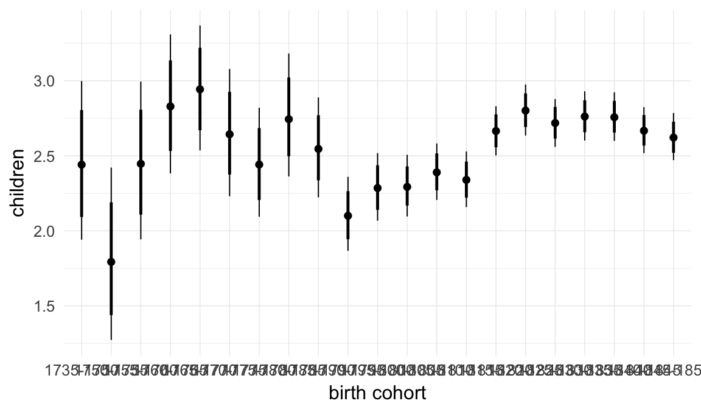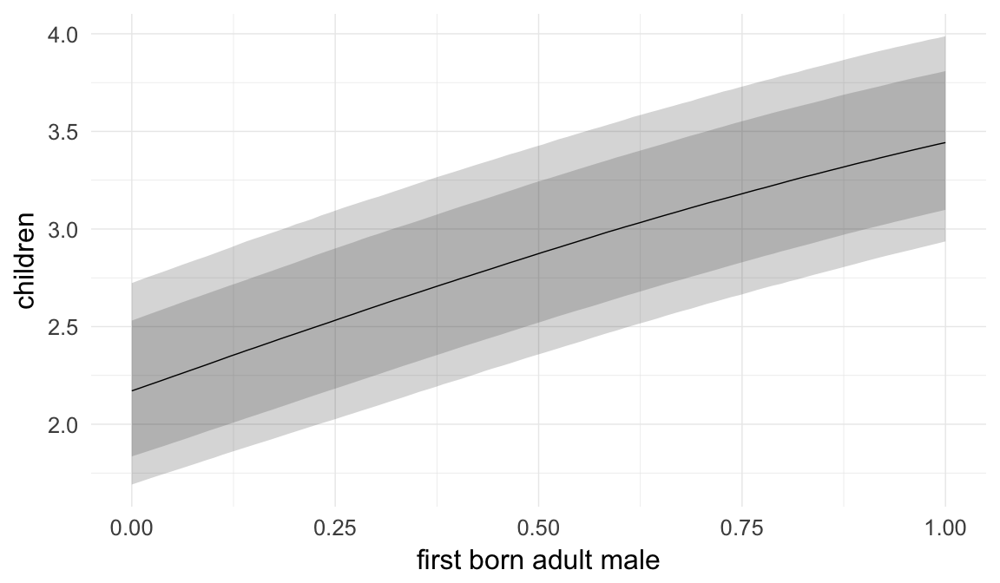 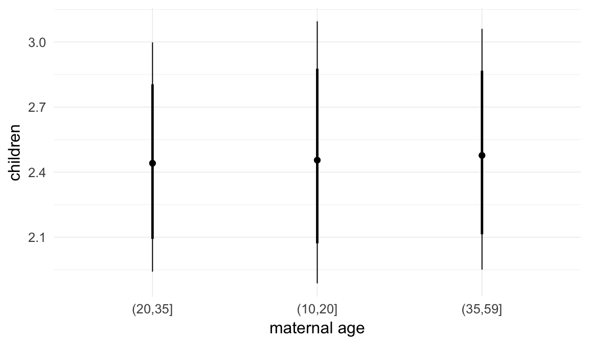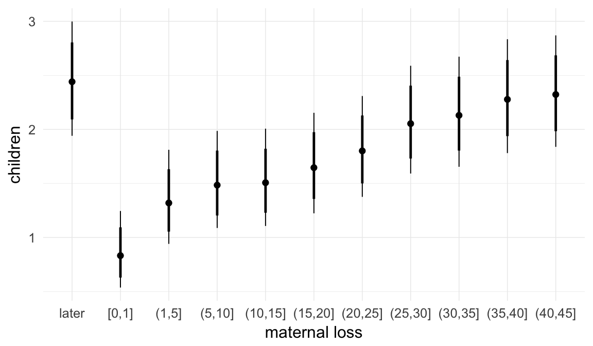
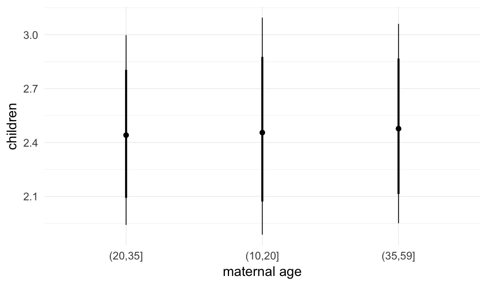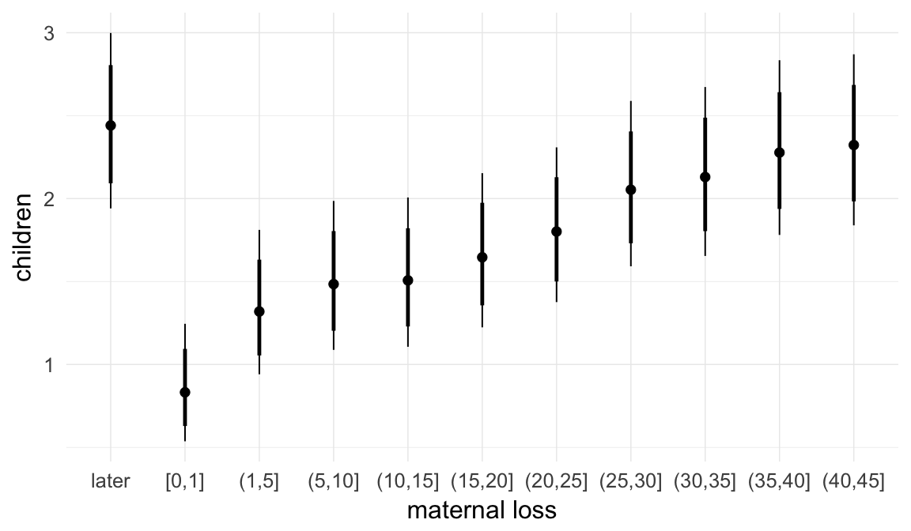
Coefficient plot
Coefficient estimates (95% and 80% credibility).
mcmc_intervals(as.matrix(model$fit), regex_pars = "b_[^I]")mcmc_areas(as.matrix(model$fit), regex_pars = "b")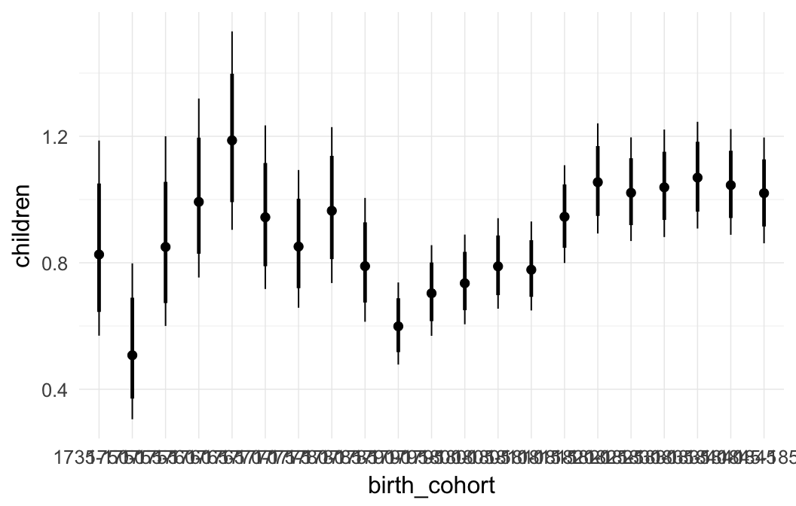
Diagnostics
These plots were made to diagnose misfit and nonconvergence.
Posterior predictive checks
brms::pp_check(model, re_formula = NA, type = "dens_overlay")brms::pp_check(model, re_formula = NA, type = "hist")Rhat
Did the 6 chains converge?
stanplot(model, pars = "^b_[^I]", type = 'rhat')Effective sample size by average sample size
stanplot(model, pars = "^b", type = 'ess')
Monte Carlo SE
stanplot(model, pars = "^b", type = 'mcse')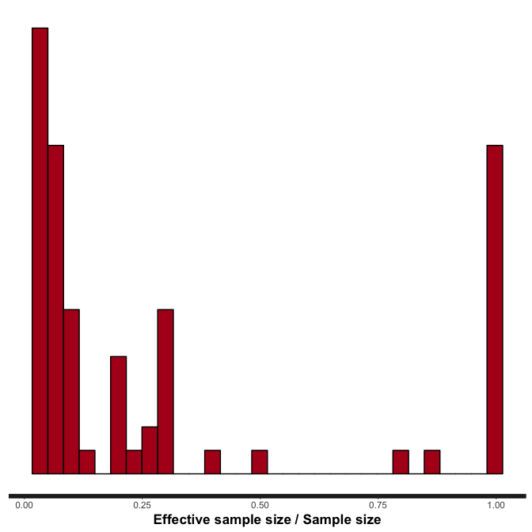
Trace plots
if(any( summary(model)$fixed[,"Rhat"] > 1.1)) { # only do traceplots if not converged
plot(model, N = 3, ask = FALSE)
}Further plots
stanplot(model, pars = "^b", type = 'diag')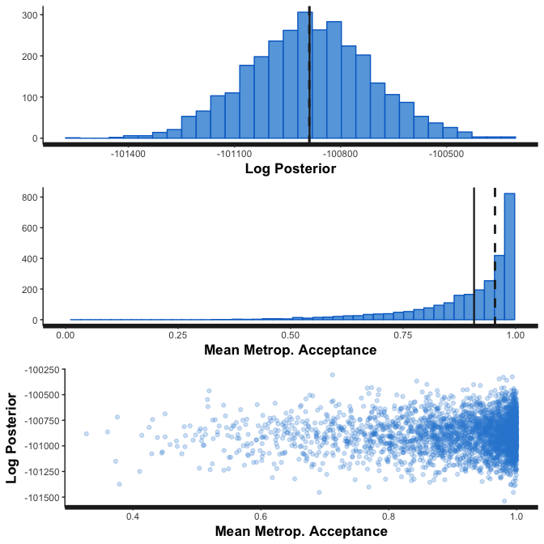
File name
coefs/ddb/r7_less_parental_loss_control.rds
Cluster script
opts_chunk$set(echo = FALSE)
clusterscript = str_replace(basename(model_filename), "\\.rds",".html")
cat("[Cluster script](" , clusterscript, ")", sep = "")r8: Adjust for being first-/last-born adult son
Inheritance is linked to birth order and being male in several of the historical populations. Here, we adjust for the anchor being the first or last born adult son in a family. This implies that we control for our outcome to a certain extent, as âadult sonsâ cannot have died before adulthood, but a paternal age effect on mortality could still be detected for siblings other than the first- and last-born adults.
Model summary
Full summary
model_summary = summary(model, use_cache = FALSE, priors = TRUE)
print(model_summary)## Family: hurdle_poisson (log)
## Formula: children ~ paternalage + birth.cohort + first_born_adult_male + last_born_adult_male + male + maternalage.factor + paternalage.mean + paternal_loss + maternal_loss + older_siblings + nr.siblings + last_born + (1 | idParents)
## hu ~ paternalage + birth.cohort + first_born_adult_male + last_born_adult_male + male + maternalage.factor + paternalage.mean + paternal_loss + maternal_loss + older_siblings + nr.siblings + last_born + (1 | idParents)
## Data: model_data (Number of observations: 56663)
## Samples: 6 chains, each with iter = 1500; warmup = 300; thin = 1;
## total post-warmup samples = 7200
## WAIC: Not computed
##
## Priors:
## b ~ normal(0,5)
## sd ~ student_t(3, 0, 5)
## b_hu ~ normal(0,5)
## sd_hu ~ student_t(3, 0, 10)
##
## Group-Level Effects:
## ~idParents (Number of levels: 14746)
## Estimate Est.Error l-95% CI u-95% CI Eff.Sample Rhat
## sd(Intercept) 0.36 0.01 0.35 0.37 2582 1
## sd(hu_Intercept) 0.90 0.02 0.86 0.93 2513 1
##
## Population-Level Effects:
## Estimate Est.Error l-95% CI u-95% CI Eff.Sample
## Intercept 1.33 0.08 1.18 1.48 279
## paternalage -0.05 0.02 -0.09 -0.02 1658
## birth.cohort1750M1755 -0.18 0.11 -0.40 0.04 884
## birth.cohort1755M1760 0.08 0.09 -0.09 0.27 443
## birth.cohort1760M1765 0.14 0.08 -0.02 0.30 342
## birth.cohort1765M1770 0.09 0.08 -0.08 0.25 328
## birth.cohort1770M1775 0.05 0.08 -0.11 0.22 356
## birth.cohort1775M1780 0.04 0.08 -0.13 0.20 323
## birth.cohort1780M1785 0.14 0.08 -0.02 0.30 302
## birth.cohort1785M1790 0.11 0.08 -0.04 0.27 283
## birth.cohort1790M1795 0.02 0.08 -0.13 0.17 266
## birth.cohort1795M1800 0.01 0.07 -0.13 0.16 257
## birth.cohort1800M1805 -0.04 0.07 -0.18 0.11 256
## birth.cohort1805M1810 -0.02 0.07 -0.16 0.12 242
## birth.cohort1810M1815 0.00 0.07 -0.14 0.15 245
## birth.cohort1815M1820 0.06 0.07 -0.08 0.20 238
## birth.cohort1820M1825 0.07 0.07 -0.06 0.21 239
## birth.cohort1825M1830 0.03 0.07 -0.11 0.17 241
## birth.cohort1830M1835 0.06 0.07 -0.08 0.20 239
## birth.cohort1835M1840 0.06 0.07 -0.08 0.20 240
## birth.cohort1840M1845 0.04 0.07 -0.10 0.18 241
## birth.cohort1845M1850 0.04 0.07 -0.09 0.19 243
## first_born_adult_male -0.01 0.01 -0.03 0.01 7200
## last_born_adult_male 0.00 0.01 -0.02 0.02 7200
## male1 0.05 0.01 0.02 0.07 5624
## maternalage.factor1020 0.04 0.03 -0.02 0.09 7200
## maternalage.factor3559 0.06 0.01 0.04 0.08 7200
## paternalage.mean 0.06 0.02 0.02 0.10 1797
## paternal_loss01 0.06 0.04 -0.01 0.13 7200
## paternal_loss15 0.03 0.02 -0.02 0.07 3875
## paternal_loss510 -0.02 0.02 -0.06 0.02 3373
## paternal_loss1015 -0.02 0.02 -0.06 0.02 3317
## paternal_loss1520 -0.07 0.02 -0.11 -0.04 3241
## paternal_loss2025 -0.03 0.02 -0.06 0.00 3089
## paternal_loss2530 -0.02 0.01 -0.05 0.01 2997
## paternal_loss3035 -0.02 0.01 -0.04 0.01 3337
## paternal_loss3540 0.02 0.01 0.00 0.05 3617
## paternal_loss4045 0.03 0.01 0.00 0.05 4488
## maternal_loss01 0.07 0.05 -0.04 0.17 5994
## maternal_loss15 0.00 0.03 -0.05 0.06 4775
## maternal_loss510 -0.02 0.02 -0.07 0.03 4125
## maternal_loss1015 -0.04 0.02 -0.08 0.01 4745
## maternal_loss1520 -0.04 0.02 -0.07 0.00 4207
## maternal_loss2025 -0.07 0.02 -0.10 -0.03 4246
## maternal_loss2530 -0.03 0.02 -0.06 0.00 4185
## maternal_loss3035 -0.02 0.01 -0.05 0.01 4089
## maternal_loss3540 0.00 0.01 -0.02 0.03 4561
## maternal_loss4045 -0.02 0.01 -0.04 0.00 7200
## older_siblings1 0.01 0.01 -0.01 0.04 2875
## older_siblings2 0.03 0.01 0.00 0.05 2019
## older_siblings3 0.03 0.02 0.00 0.07 1822
## older_siblings4 0.01 0.02 -0.03 0.05 1652
## older_siblings5P 0.02 0.03 -0.03 0.08 1628
## nr.siblings 0.02 0.00 0.02 0.03 2211
## last_born1 -0.02 0.01 -0.04 0.00 7200
## hu_Intercept 0.24 0.22 -0.18 0.68 114
## hu_paternalage 0.15 0.06 0.04 0.27 2038
## hu_birth.cohort1750M1755 0.30 0.30 -0.30 0.90 280
## hu_birth.cohort1755M1760 0.16 0.26 -0.35 0.68 203
## hu_birth.cohort1760M1765 -0.03 0.25 -0.51 0.44 154
## hu_birth.cohort1765M1770 -0.24 0.25 -0.71 0.25 147
## hu_birth.cohort1770M1775 -0.07 0.25 -0.55 0.41 150
## hu_birth.cohort1775M1780 0.08 0.24 -0.38 0.54 134
## hu_birth.cohort1780M1785 0.04 0.24 -0.43 0.51 138
## hu_birth.cohort1785M1790 0.15 0.23 -0.29 0.60 119
## hu_birth.cohort1790M1795 0.34 0.22 -0.09 0.76 114
## hu_birth.cohort1795M1800 0.17 0.22 -0.26 0.58 109
## hu_birth.cohort1800M1805 0.07 0.21 -0.36 0.48 108
## hu_birth.cohort1805M1810 0.01 0.21 -0.42 0.40 106
## hu_birth.cohort1810M1815 0.10 0.21 -0.31 0.51 106
## hu_birth.cohort1815M1820 -0.07 0.21 -0.49 0.32 104
## hu_birth.cohort1820M1825 -0.16 0.21 -0.57 0.23 105
## hu_birth.cohort1825M1830 -0.18 0.21 -0.59 0.21 102
## hu_birth.cohort1830M1835 -0.16 0.21 -0.57 0.23 104
## hu_birth.cohort1835M1840 -0.16 0.21 -0.57 0.24 103
## hu_birth.cohort1840M1845 -0.12 0.21 -0.54 0.27 103
## hu_birth.cohort1845M1850 -0.06 0.21 -0.48 0.32 104
## hu_first_born_adult_male -1.34 0.03 -1.41 -1.28 7200
## hu_last_born_adult_male -1.15 0.03 -1.21 -1.08 7200
## hu_male1 0.99 0.03 0.94 1.04 7200
## hu_maternalage.factor1020 0.06 0.10 -0.12 0.25 7200
## hu_maternalage.factor3559 0.10 0.03 0.04 0.16 7200
## hu_paternalage.mean -0.18 0.06 -0.29 -0.06 1980
## hu_paternal_loss01 0.95 0.10 0.76 1.14 7200
## hu_paternal_loss15 0.73 0.07 0.60 0.86 3226
## hu_paternal_loss510 0.69 0.06 0.58 0.80 2799
## hu_paternal_loss1015 0.52 0.05 0.42 0.62 2884
## hu_paternal_loss1520 0.41 0.05 0.31 0.50 3202
## hu_paternal_loss2025 0.31 0.05 0.22 0.40 2547
## hu_paternal_loss2530 0.20 0.04 0.12 0.29 2762
## hu_paternal_loss3035 0.13 0.04 0.05 0.21 2811
## hu_paternal_loss3540 0.11 0.04 0.04 0.19 2981
## hu_paternal_loss4045 0.01 0.04 -0.07 0.09 7200
## hu_maternal_loss01 1.75 0.12 1.51 2.00 7200
## hu_maternal_loss15 1.07 0.07 0.93 1.22 5369
## hu_maternal_loss510 0.87 0.06 0.75 0.98 4492
## hu_maternal_loss1015 0.82 0.06 0.71 0.93 7200
## hu_maternal_loss1520 0.68 0.05 0.58 0.78 7200
## hu_maternal_loss2025 0.47 0.05 0.38 0.57 4675
## hu_maternal_loss2530 0.30 0.04 0.22 0.39 4424
## hu_maternal_loss3035 0.24 0.04 0.16 0.32 4563
## hu_maternal_loss3540 0.15 0.04 0.08 0.23 4968
## hu_maternal_loss4045 0.07 0.04 0.00 0.14 7200
## hu_older_siblings1 -0.19 0.03 -0.26 -0.13 3241
## hu_older_siblings2 -0.28 0.04 -0.36 -0.19 2366
## hu_older_siblings3 -0.37 0.06 -0.48 -0.26 1871
## hu_older_siblings4 -0.43 0.07 -0.57 -0.30 1969
## hu_older_siblings5P -0.49 0.09 -0.66 -0.33 1808
## hu_nr.siblings 0.02 0.01 0.00 0.03 2125
## hu_last_born1 -0.01 0.03 -0.06 0.04 7200
## Rhat
## Intercept 1.02
## paternalage 1.00
## birth.cohort1750M1755 1.00
## birth.cohort1755M1760 1.01
## birth.cohort1760M1765 1.01
## birth.cohort1765M1770 1.01
## birth.cohort1770M1775 1.01
## birth.cohort1775M1780 1.01
## birth.cohort1780M1785 1.01
## birth.cohort1785M1790 1.01
## birth.cohort1790M1795 1.01
## birth.cohort1795M1800 1.02
## birth.cohort1800M1805 1.02
## birth.cohort1805M1810 1.02
## birth.cohort1810M1815 1.02
## birth.cohort1815M1820 1.02
## birth.cohort1820M1825 1.02
## birth.cohort1825M1830 1.02
## birth.cohort1830M1835 1.02
## birth.cohort1835M1840 1.02
## birth.cohort1840M1845 1.02
## birth.cohort1845M1850 1.02
## first_born_adult_male 1.00
## last_born_adult_male 1.00
## male1 1.00
## maternalage.factor1020 1.00
## maternalage.factor3559 1.00
## paternalage.mean 1.00
## paternal_loss01 1.00
## paternal_loss15 1.00
## paternal_loss510 1.00
## paternal_loss1015 1.00
## paternal_loss1520 1.00
## paternal_loss2025 1.00
## paternal_loss2530 1.00
## paternal_loss3035 1.00
## paternal_loss3540 1.00
## paternal_loss4045 1.00
## maternal_loss01 1.00
## maternal_loss15 1.00
## maternal_loss510 1.00
## maternal_loss1015 1.00
## maternal_loss1520 1.00
## maternal_loss2025 1.00
## maternal_loss2530 1.00
## maternal_loss3035 1.00
## maternal_loss3540 1.00
## maternal_loss4045 1.00
## older_siblings1 1.00
## older_siblings2 1.00
## older_siblings3 1.00
## older_siblings4 1.00
## older_siblings5P 1.00
## nr.siblings 1.00
## last_born1 1.00
## hu_Intercept 1.02
## hu_paternalage 1.00
## hu_birth.cohort1750M1755 1.01
## hu_birth.cohort1755M1760 1.02
## hu_birth.cohort1760M1765 1.02
## hu_birth.cohort1765M1770 1.02
## hu_birth.cohort1770M1775 1.02
## hu_birth.cohort1775M1780 1.02
## hu_birth.cohort1780M1785 1.02
## hu_birth.cohort1785M1790 1.02
## hu_birth.cohort1790M1795 1.02
## hu_birth.cohort1795M1800 1.02
## hu_birth.cohort1800M1805 1.02
## hu_birth.cohort1805M1810 1.02
## hu_birth.cohort1810M1815 1.02
## hu_birth.cohort1815M1820 1.03
## hu_birth.cohort1820M1825 1.02
## hu_birth.cohort1825M1830 1.03
## hu_birth.cohort1830M1835 1.03
## hu_birth.cohort1835M1840 1.03
## hu_birth.cohort1840M1845 1.03
## hu_birth.cohort1845M1850 1.02
## hu_first_born_adult_male 1.00
## hu_last_born_adult_male 1.00
## hu_male1 1.00
## hu_maternalage.factor1020 1.00
## hu_maternalage.factor3559 1.00
## hu_paternalage.mean 1.00
## hu_paternal_loss01 1.00
## hu_paternal_loss15 1.00
## hu_paternal_loss510 1.00
## hu_paternal_loss1015 1.00
## hu_paternal_loss1520 1.00
## hu_paternal_loss2025 1.00
## hu_paternal_loss2530 1.00
## hu_paternal_loss3035 1.00
## hu_paternal_loss3540 1.00
## hu_paternal_loss4045 1.00
## hu_maternal_loss01 1.00
## hu_maternal_loss15 1.00
## hu_maternal_loss510 1.00
## hu_maternal_loss1015 1.00
## hu_maternal_loss1520 1.00
## hu_maternal_loss2025 1.00
## hu_maternal_loss2530 1.00
## hu_maternal_loss3035 1.00
## hu_maternal_loss3540 1.00
## hu_maternal_loss4045 1.00
## hu_older_siblings1 1.00
## hu_older_siblings2 1.00
## hu_older_siblings3 1.00
## hu_older_siblings4 1.00
## hu_older_siblings5P 1.00
## hu_nr.siblings 1.00
## hu_last_born1 1.00
##
## Samples were drawn using sampling(NUTS). For each parameter, Eff.Sample
## is a crude measure of effective sample size, and Rhat is the potential
## scale reduction factor on split chains (at convergence, Rhat = 1).Table of fixed effects
fixed_eff = data.frame(model_summary$fixed, check.names = F)
fixed_eff$Est.Error = fixed_eff$Eff.Sample = fixed_eff$Rhat = NULL
fixed_eff$OR = exp(fixed_eff$Estimate)
fixed_eff$OR_low = exp(fixed_eff$`l-95% CI`)
fixed_eff$OR_high = exp(fixed_eff$`u-95% CI`)
pander::pander(fixed_eff)| Â | Estimate | l-95% CI | u-95% CI | OR | OR_low | OR_high |
|---|---|---|---|---|---|---|
| Intercept | 1.331 | 1.18 | 1.479 | 3.785 | 3.254 | 4.389 |
| paternalage | -0.05497 | -0.09328 | -0.01631 | 0.9465 | 0.9109 | 0.9838 |
| birth.cohort1750M1755 | -0.1783 | -0.399 | 0.04089 | 0.8367 | 0.671 | 1.042 |
| birth.cohort1755M1760 | 0.08251 | -0.09499 | 0.2674 | 1.086 | 0.9094 | 1.307 |
| birth.cohort1760M1765 | 0.1383 | -0.02303 | 0.2989 | 1.148 | 0.9772 | 1.348 |
| birth.cohort1765M1770 | 0.08759 | -0.07547 | 0.2472 | 1.092 | 0.9273 | 1.28 |
| birth.cohort1770M1775 | 0.04946 | -0.1133 | 0.2195 | 1.051 | 0.8928 | 1.246 |
| birth.cohort1775M1780 | 0.03589 | -0.125 | 0.197 | 1.037 | 0.8825 | 1.218 |
| birth.cohort1780M1785 | 0.1416 | -0.01695 | 0.3042 | 1.152 | 0.9832 | 1.356 |
| birth.cohort1785M1790 | 0.115 | -0.03999 | 0.2698 | 1.122 | 0.9608 | 1.31 |
| birth.cohort1790M1795 | 0.01516 | -0.1333 | 0.1666 | 1.015 | 0.8752 | 1.181 |
| birth.cohort1795M1800 | 0.0119 | -0.1325 | 0.1605 | 1.012 | 0.8759 | 1.174 |
| birth.cohort1800M1805 | -0.03501 | -0.1783 | 0.1128 | 0.9656 | 0.8367 | 1.119 |
| birth.cohort1805M1810 | -0.02087 | -0.1622 | 0.1247 | 0.9794 | 0.8503 | 1.133 |
| birth.cohort1810M1815 | 0.003618 | -0.1355 | 0.1483 | 1.004 | 0.8733 | 1.16 |
| birth.cohort1815M1820 | 0.05661 | -0.08254 | 0.1993 | 1.058 | 0.9208 | 1.221 |
| birth.cohort1820M1825 | 0.07353 | -0.06393 | 0.2143 | 1.076 | 0.9381 | 1.239 |
| birth.cohort1825M1830 | 0.03182 | -0.1051 | 0.1724 | 1.032 | 0.9003 | 1.188 |
| birth.cohort1830M1835 | 0.05737 | -0.08022 | 0.1993 | 1.059 | 0.9229 | 1.221 |
| birth.cohort1835M1840 | 0.05714 | -0.0807 | 0.199 | 1.059 | 0.9225 | 1.22 |
| birth.cohort1840M1845 | 0.03548 | -0.09925 | 0.1773 | 1.036 | 0.9055 | 1.194 |
| birth.cohort1845M1850 | 0.0435 | -0.09318 | 0.1861 | 1.044 | 0.911 | 1.205 |
| first_born_adult_male | -0.01336 | -0.03412 | 0.006792 | 0.9867 | 0.9665 | 1.007 |
| last_born_adult_male | 0.003947 | -0.01634 | 0.0249 | 1.004 | 0.9838 | 1.025 |
| male1 | 0.04541 | 0.02489 | 0.06607 | 1.046 | 1.025 | 1.068 |
| maternalage.factor1020 | 0.03559 | -0.02216 | 0.09343 | 1.036 | 0.9781 | 1.098 |
| maternalage.factor3559 | 0.0634 | 0.04233 | 0.08461 | 1.065 | 1.043 | 1.088 |
| paternalage.mean | 0.0613 | 0.02272 | 0.1001 | 1.063 | 1.023 | 1.105 |
| paternal_loss01 | 0.05924 | -0.01459 | 0.1328 | 1.061 | 0.9855 | 1.142 |
| paternal_loss15 | 0.026 | -0.02396 | 0.07322 | 1.026 | 0.9763 | 1.076 |
| paternal_loss510 | -0.01883 | -0.06082 | 0.02399 | 0.9813 | 0.941 | 1.024 |
| paternal_loss1015 | -0.01945 | -0.05659 | 0.01792 | 0.9807 | 0.945 | 1.018 |
| paternal_loss1520 | -0.0731 | -0.1069 | -0.03882 | 0.9295 | 0.8986 | 0.9619 |
| paternal_loss2025 | -0.02796 | -0.05893 | 0.003065 | 0.9724 | 0.9428 | 1.003 |
| paternal_loss2530 | -0.0209 | -0.05012 | 0.007878 | 0.9793 | 0.9511 | 1.008 |
| paternal_loss3035 | -0.01534 | -0.04276 | 0.01192 | 0.9848 | 0.9581 | 1.012 |
| paternal_loss3540 | 0.02155 | -0.003034 | 0.04653 | 1.022 | 0.997 | 1.048 |
| paternal_loss4045 | 0.02783 | 0.001789 | 0.05355 | 1.028 | 1.002 | 1.055 |
| maternal_loss01 | 0.06694 | -0.0416 | 0.1707 | 1.069 | 0.9593 | 1.186 |
| maternal_loss15 | 0.003768 | -0.05314 | 0.05978 | 1.004 | 0.9482 | 1.062 |
| maternal_loss510 | -0.01911 | -0.06509 | 0.02547 | 0.9811 | 0.937 | 1.026 |
| maternal_loss1015 | -0.03566 | -0.07945 | 0.005863 | 0.965 | 0.9236 | 1.006 |
| maternal_loss1520 | -0.03524 | -0.07371 | 0.00268 | 0.9654 | 0.9289 | 1.003 |
| maternal_loss2025 | -0.06973 | -0.105 | -0.03493 | 0.9326 | 0.9004 | 0.9657 |
| maternal_loss2530 | -0.02652 | -0.05714 | 0.003578 | 0.9738 | 0.9445 | 1.004 |
| maternal_loss3035 | -0.02033 | -0.04696 | 0.006566 | 0.9799 | 0.9541 | 1.007 |
| maternal_loss3540 | 0.002081 | -0.02249 | 0.02638 | 1.002 | 0.9778 | 1.027 |
| maternal_loss4045 | -0.01972 | -0.04325 | 0.004398 | 0.9805 | 0.9577 | 1.004 |
| older_siblings1 | 0.01401 | -0.007649 | 0.03579 | 1.014 | 0.9924 | 1.036 |
| older_siblings2 | 0.0253 | -0.001642 | 0.05321 | 1.026 | 0.9984 | 1.055 |
| older_siblings3 | 0.03165 | -0.004223 | 0.06783 | 1.032 | 0.9958 | 1.07 |
| older_siblings4 | 0.007909 | -0.03425 | 0.05101 | 1.008 | 0.9663 | 1.052 |
| older_siblings5P | 0.02232 | -0.03287 | 0.07767 | 1.023 | 0.9677 | 1.081 |
| nr.siblings | 0.02332 | 0.01819 | 0.02858 | 1.024 | 1.018 | 1.029 |
| last_born1 | -0.02103 | -0.03931 | -0.002704 | 0.9792 | 0.9615 | 0.9973 |
| hu_Intercept | 0.2442 | -0.1834 | 0.6819 | 1.277 | 0.8324 | 1.978 |
| hu_paternalage | 0.1536 | 0.04279 | 0.2683 | 1.166 | 1.044 | 1.308 |
| hu_birth.cohort1750M1755 | 0.2987 | -0.3021 | 0.8966 | 1.348 | 0.7393 | 2.451 |
| hu_birth.cohort1755M1760 | 0.1648 | -0.3488 | 0.6765 | 1.179 | 0.7056 | 1.967 |
| hu_birth.cohort1760M1765 | -0.03212 | -0.5087 | 0.4407 | 0.9684 | 0.6013 | 1.554 |
| hu_birth.cohort1765M1770 | -0.2436 | -0.7148 | 0.2476 | 0.7838 | 0.4893 | 1.281 |
| hu_birth.cohort1770M1775 | -0.07093 | -0.5503 | 0.4136 | 0.9315 | 0.5768 | 1.512 |
| hu_birth.cohort1775M1780 | 0.07784 | -0.3833 | 0.5435 | 1.081 | 0.6816 | 1.722 |
| hu_birth.cohort1780M1785 | 0.0376 | -0.4287 | 0.5062 | 1.038 | 0.6513 | 1.659 |
| hu_birth.cohort1785M1790 | 0.1477 | -0.2909 | 0.5971 | 1.159 | 0.7476 | 1.817 |
| hu_birth.cohort1790M1795 | 0.3386 | -0.08898 | 0.7621 | 1.403 | 0.9149 | 2.143 |
| hu_birth.cohort1795M1800 | 0.1678 | -0.2602 | 0.5821 | 1.183 | 0.7709 | 1.79 |
| hu_birth.cohort1800M1805 | 0.06594 | -0.3605 | 0.4776 | 1.068 | 0.6974 | 1.612 |
| hu_birth.cohort1805M1810 | 0.005484 | -0.4156 | 0.4034 | 1.005 | 0.6599 | 1.497 |
| hu_birth.cohort1810M1815 | 0.1032 | -0.312 | 0.5052 | 1.109 | 0.732 | 1.657 |
| hu_birth.cohort1815M1820 | -0.07385 | -0.4865 | 0.3165 | 0.9288 | 0.6148 | 1.372 |
| hu_birth.cohort1820M1825 | -0.1551 | -0.5701 | 0.2342 | 0.8563 | 0.5655 | 1.264 |
| hu_birth.cohort1825M1830 | -0.1781 | -0.5938 | 0.2059 | 0.8368 | 0.5523 | 1.229 |
| hu_birth.cohort1830M1835 | -0.1574 | -0.5731 | 0.2317 | 0.8544 | 0.5638 | 1.261 |
| hu_birth.cohort1835M1840 | -0.1551 | -0.5691 | 0.2396 | 0.8564 | 0.5661 | 1.271 |
| hu_birth.cohort1840M1845 | -0.1242 | -0.542 | 0.2694 | 0.8832 | 0.5816 | 1.309 |
| hu_birth.cohort1845M1850 | -0.06494 | -0.4827 | 0.3247 | 0.9371 | 0.6171 | 1.384 |
| hu_first_born_adult_male | -1.345 | -1.408 | -1.282 | 0.2606 | 0.2446 | 0.2776 |
| hu_last_born_adult_male | -1.147 | -1.21 | -1.084 | 0.3176 | 0.2981 | 0.3384 |
| hu_male1 | 0.9886 | 0.9368 | 1.041 | 2.687 | 2.552 | 2.832 |
| hu_maternalage.factor1020 | 0.05936 | -0.1229 | 0.2471 | 1.061 | 0.8843 | 1.28 |
| hu_maternalage.factor3559 | 0.09882 | 0.03743 | 0.1604 | 1.104 | 1.038 | 1.174 |
| hu_paternalage.mean | -0.1766 | -0.2929 | -0.06187 | 0.8381 | 0.7461 | 0.94 |
| hu_paternal_loss01 | 0.9496 | 0.758 | 1.141 | 2.585 | 2.134 | 3.131 |
| hu_paternal_loss15 | 0.7257 | 0.6013 | 0.8559 | 2.066 | 1.824 | 2.354 |
| hu_paternal_loss510 | 0.6922 | 0.5833 | 0.8023 | 1.998 | 1.792 | 2.231 |
| hu_paternal_loss1015 | 0.5201 | 0.4188 | 0.6194 | 1.682 | 1.52 | 1.858 |
| hu_paternal_loss1520 | 0.4084 | 0.3144 | 0.5031 | 1.504 | 1.369 | 1.654 |
| hu_paternal_loss2025 | 0.3061 | 0.2179 | 0.3963 | 1.358 | 1.243 | 1.486 |
| hu_paternal_loss2530 | 0.2025 | 0.1195 | 0.2863 | 1.224 | 1.127 | 1.332 |
| hu_paternal_loss3035 | 0.1309 | 0.05161 | 0.2128 | 1.14 | 1.053 | 1.237 |
| hu_paternal_loss3540 | 0.1138 | 0.03593 | 0.1931 | 1.12 | 1.037 | 1.213 |
| hu_paternal_loss4045 | 0.01372 | -0.06766 | 0.09441 | 1.014 | 0.9346 | 1.099 |
| hu_maternal_loss01 | 1.751 | 1.512 | 1.999 | 5.758 | 4.536 | 7.384 |
| hu_maternal_loss15 | 1.069 | 0.9251 | 1.216 | 2.912 | 2.522 | 3.374 |
| hu_maternal_loss510 | 0.8661 | 0.7477 | 0.9846 | 2.378 | 2.112 | 2.677 |
| hu_maternal_loss1015 | 0.8191 | 0.7068 | 0.9328 | 2.269 | 2.027 | 2.542 |
| hu_maternal_loss1520 | 0.6784 | 0.577 | 0.781 | 1.971 | 1.781 | 2.184 |
| hu_maternal_loss2025 | 0.4722 | 0.3787 | 0.5654 | 1.604 | 1.46 | 1.76 |
| hu_maternal_loss2530 | 0.3043 | 0.2198 | 0.3888 | 1.356 | 1.246 | 1.475 |
| hu_maternal_loss3035 | 0.2422 | 0.1642 | 0.3215 | 1.274 | 1.179 | 1.379 |
| hu_maternal_loss3540 | 0.1519 | 0.08028 | 0.225 | 1.164 | 1.084 | 1.252 |
| hu_maternal_loss4045 | 0.0681 | -0.004071 | 0.1413 | 1.07 | 0.9959 | 1.152 |
| hu_older_siblings1 | -0.1941 | -0.2576 | -0.1304 | 0.8236 | 0.7729 | 0.8778 |
| hu_older_siblings2 | -0.2759 | -0.3627 | -0.1911 | 0.7589 | 0.6958 | 0.8261 |
| hu_older_siblings3 | -0.3687 | -0.4788 | -0.2612 | 0.6916 | 0.6195 | 0.7701 |
| hu_older_siblings4 | -0.4325 | -0.5676 | -0.3025 | 0.6489 | 0.5669 | 0.739 |
| hu_older_siblings5P | -0.4882 | -0.6605 | -0.3251 | 0.6137 | 0.5166 | 0.7225 |
| hu_nr.siblings | 0.01546 | 0.0006326 | 0.03083 | 1.016 | 1.001 | 1.031 |
| hu_last_born1 | -0.008444 | -0.06397 | 0.0445 | 0.9916 | 0.938 | 1.046 |
Paternal age effect
pander::pander(paternal_age_10y_effect(model))| effect | median_estimate | ci_95 | ci_80 |
|---|---|---|---|
| estimate father 25y | 2.91 | [2.77;3.06] | [2.82;3.01] |
| estimate father 35y | 2.59 | [2.44;2.76] | [2.49;2.7] |
| percentage change | -11.03 | [-16.11;-5.49] | [-14.36;-7.46] |
| OR/IRR | 0.95 | [0.91;0.98] | [0.92;0.97] |
| OR hurdle | 1.16 | [1.04;1.31] | [1.08;1.26] |
Marginal effect plots
plot.brmsMarginalEffects_shades(
x = marginal_effects(model, re_formula = NA, probs = c(0.025,0.975)),
y = marginal_effects(model, re_formula = NA, probs = c(0.1,0.9)),
ask = FALSE)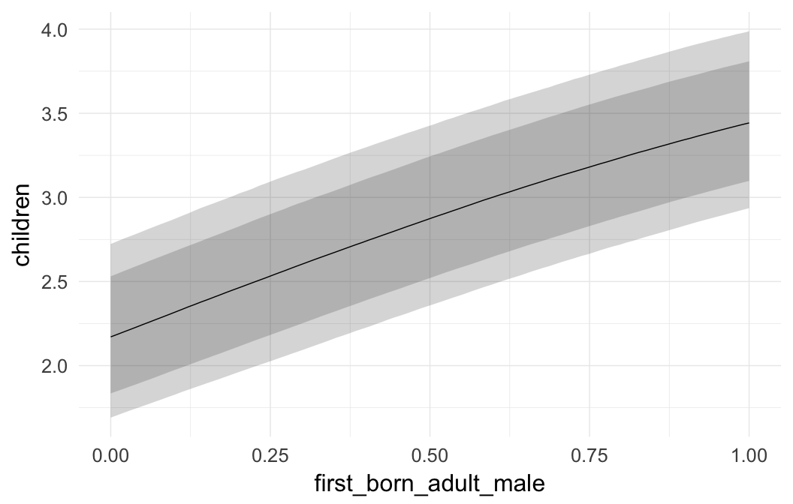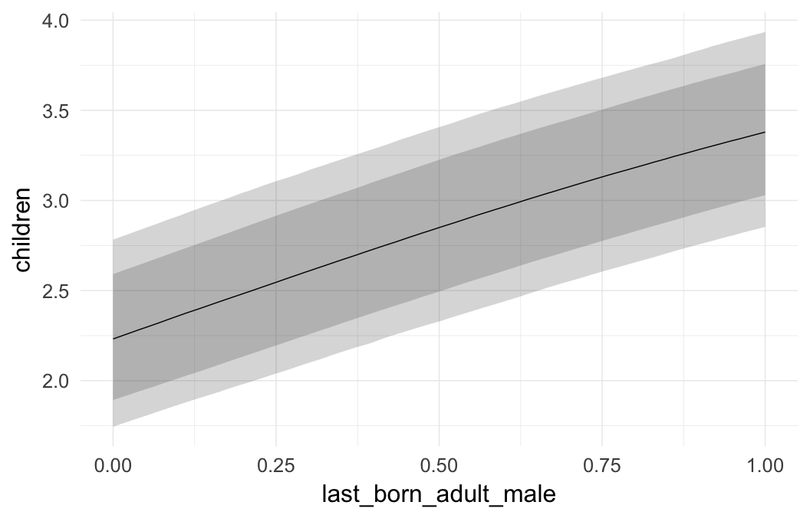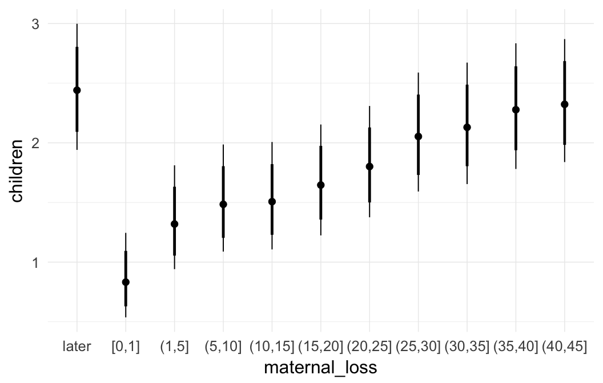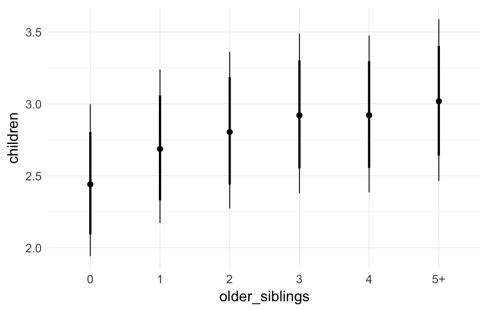
Coefficient plot
Coefficient estimates (95% and 80% credibility).
mcmc_intervals(as.matrix(model$fit), regex_pars = "b_[^I]")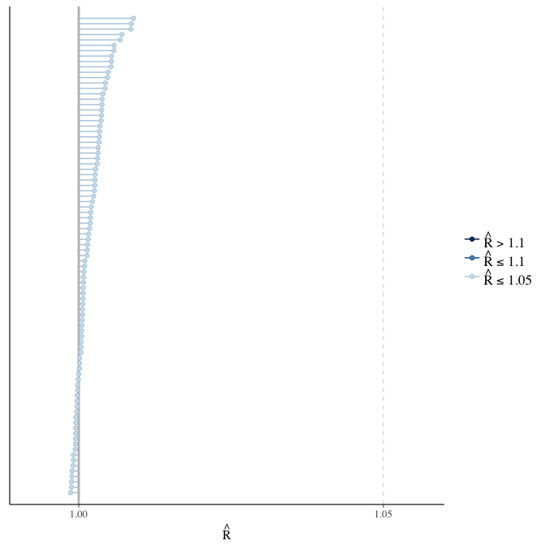
mcmc_areas(as.matrix(model$fit), regex_pars = "b")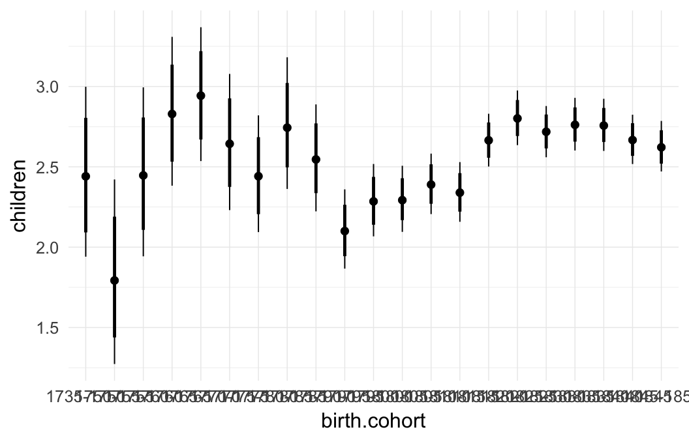
Diagnostics
These plots were made to diagnose misfit and nonconvergence.
Posterior predictive checks
brms::pp_check(model, re_formula = NA, type = "dens_overlay")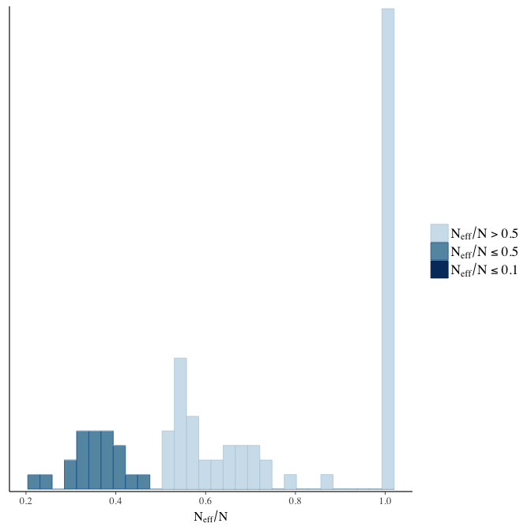
brms::pp_check(model, re_formula = NA, type = "hist")Rhat
Did the 6 chains converge?
stanplot(model, pars = "^b_[^I]", type = 'rhat')Effective sample size by average sample size
stanplot(model, pars = "^b", type = 'ess')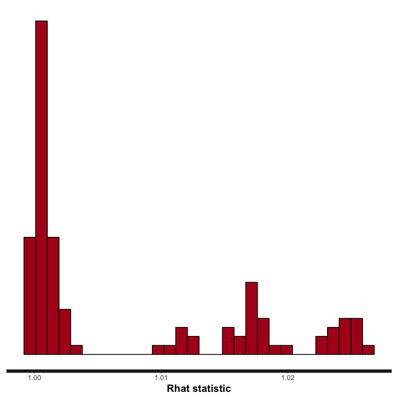
Monte Carlo SE
stanplot(model, pars = "^b", type = 'mcse')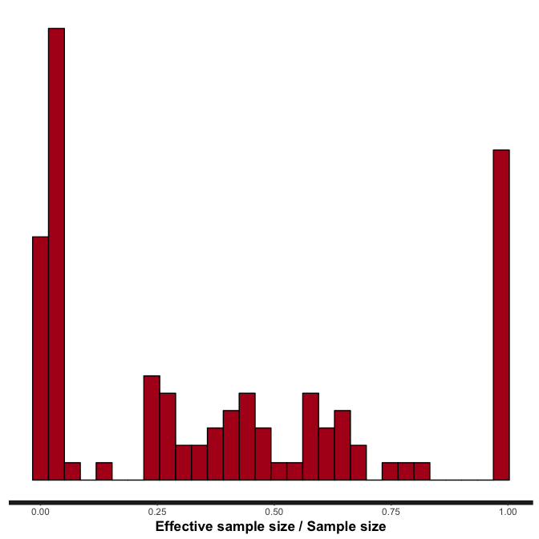
Trace plots
if(any( summary(model)$fixed[,"Rhat"] > 1.1)) { # only do traceplots if not converged
plot(model, N = 3, ask = FALSE)
}Further plots
stanplot(model, pars = "^b", type = 'diag')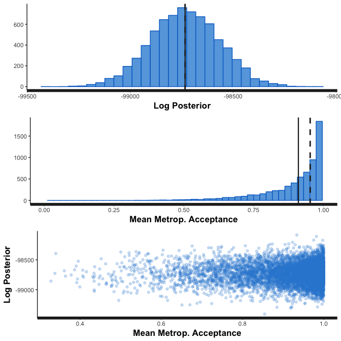
File name
coefs/ddb/r8_adjust_for_first_born_adult.rds
Cluster script
opts_chunk$set(echo = FALSE)
clusterscript = str_replace(basename(model_filename), "\\.rds",".html")
cat("[Cluster script](" , clusterscript, ")", sep = "")r9: Continuous birth year adjustment
In our main model, we control for birth cohort in 5-year-bins (lumping small bins). We chose to do so, because nonlinear and even sharply spiking effects of birth cohort are plausible (due to e.g. epidemics). This decision may be disputed, as it summarises 5-year-bins. Here, we instead allow for a thin-splate spline on the continuous birth year variable. This allows for smooth nonlinear (but not spiking) birth cohort effects.
Model summary
Full summary
model_summary = summary(model, use_cache = FALSE, priors = TRUE)
print(model_summary)## Family: hurdle_poisson (log)
## Formula: children ~ paternalage + s(byear) + male + maternalage.factor + paternalage.mean + paternal_loss + maternal_loss + older_siblings + nr.siblings + last_born + (1 | idParents)
## hu ~ paternalage + s(byear) + male + maternalage.factor + paternalage.mean + paternal_loss + maternal_loss + older_siblings + nr.siblings + last_born + (1 | idParents)
## Data: model_data (Number of observations: 56663)
## Samples: 6 chains, each with iter = 1500; warmup = 1000; thin = 1;
## total post-warmup samples = 3000
## WAIC: Not computed
##
## Priors:
## b ~ normal(0,5)
## sd ~ student_t(3, 0, 5)
## sds ~ student_t(3, 0, 10)
## b_hu ~ normal(0,5)
## sd_hu ~ student_t(3, 0, 10)
## sds_hu ~ student_t(3, 0, 10)
##
## Spline Effects:
## Estimate Est.Error l-95% CI u-95% CI Eff.Sample Rhat
## sds(sbyear_1) 1.04 0.50 0.35 2.27 634 1.01
## sds(hu_sbyear_1) 1.52 0.79 0.57 3.47 881 1.01
##
## Group-Level Effects:
## ~idParents (Number of levels: 14746)
## Estimate Est.Error l-95% CI u-95% CI Eff.Sample Rhat
## sd(Intercept) 0.36 0.01 0.34 0.37 1280 1.00
## sd(hu_Intercept) 0.82 0.02 0.79 0.86 1007 1.01
##
## Population-Level Effects:
## Estimate Est.Error l-95% CI u-95% CI Eff.Sample
## Intercept 1.37 0.03 1.31 1.43 1853
## paternalage -0.05 0.02 -0.09 -0.01 936
## male1 0.04 0.01 0.03 0.05 3000
## maternalage.factor1020 0.04 0.03 -0.02 0.10 3000
## maternalage.factor3559 0.06 0.01 0.04 0.08 3000
## paternalage.mean 0.06 0.02 0.02 0.10 943
## paternal_loss01 0.06 0.04 -0.01 0.13 3000
## paternal_loss15 0.02 0.02 -0.02 0.07 2403
## paternal_loss510 -0.02 0.02 -0.06 0.02 1784
## paternal_loss1015 -0.02 0.02 -0.05 0.02 1726
## paternal_loss1520 -0.07 0.02 -0.11 -0.04 1646
## paternal_loss2025 -0.03 0.02 -0.06 0.00 1622
## paternal_loss2530 -0.02 0.01 -0.05 0.01 1753
## paternal_loss3035 -0.01 0.01 -0.04 0.01 1628
## paternal_loss3540 0.02 0.01 0.00 0.05 1688
## paternal_loss4045 0.03 0.01 0.00 0.05 3000
## maternal_loss01 0.07 0.05 -0.03 0.17 3000
## maternal_loss15 0.00 0.03 -0.05 0.06 3000
## maternal_loss510 -0.02 0.02 -0.06 0.03 2105
## maternal_loss1015 -0.03 0.02 -0.08 0.01 3000
## maternal_loss1520 -0.03 0.02 -0.07 0.01 2125
## maternal_loss2025 -0.07 0.02 -0.10 -0.04 2102
## maternal_loss2530 -0.03 0.02 -0.06 0.00 1993
## maternal_loss3035 -0.02 0.01 -0.05 0.01 2047
## maternal_loss3540 0.00 0.01 -0.02 0.03 3000
## maternal_loss4045 -0.02 0.01 -0.05 0.00 3000
## older_siblings1 0.02 0.01 -0.01 0.04 1558
## older_siblings2 0.03 0.01 0.00 0.05 1203
## older_siblings3 0.03 0.02 0.00 0.07 1111
## older_siblings4 0.01 0.02 -0.03 0.05 1074
## older_siblings5P 0.02 0.03 -0.03 0.08 1004
## nr.siblings 0.02 0.00 0.02 0.03 1159
## last_born1 -0.02 0.01 -0.04 0.00 3000
## sbyear_1 0.03 0.09 -0.16 0.20 1572
## hu_Intercept -0.19 0.07 -0.34 -0.04 3000
## hu_paternalage 0.05 0.05 -0.06 0.16 987
## hu_male1 0.04 0.02 0.01 0.08 3000
## hu_maternalage.factor1020 0.05 0.09 -0.13 0.23 3000
## hu_maternalage.factor3559 0.07 0.03 0.01 0.13 3000
## hu_paternalage.mean -0.08 0.06 -0.18 0.03 1029
## hu_paternal_loss01 0.87 0.09 0.69 1.04 3000
## hu_paternal_loss15 0.67 0.06 0.54 0.79 3000
## hu_paternal_loss510 0.69 0.05 0.59 0.79 1919
## hu_paternal_loss1015 0.52 0.05 0.43 0.62 1824
## hu_paternal_loss1520 0.43 0.04 0.34 0.51 1677
## hu_paternal_loss2025 0.32 0.04 0.24 0.40 1597
## hu_paternal_loss2530 0.22 0.04 0.14 0.31 1600
## hu_paternal_loss3035 0.16 0.04 0.08 0.24 1875
## hu_paternal_loss3540 0.12 0.04 0.04 0.19 2042
## hu_paternal_loss4045 0.04 0.04 -0.04 0.12 3000
## hu_maternal_loss01 1.85 0.12 1.61 2.08 3000
## hu_maternal_loss15 1.02 0.07 0.89 1.16 3000
## hu_maternal_loss510 0.86 0.06 0.75 0.98 3000
## hu_maternal_loss1015 0.81 0.06 0.70 0.91 3000
## hu_maternal_loss1520 0.67 0.05 0.57 0.78 3000
## hu_maternal_loss2025 0.46 0.05 0.37 0.55 3000
## hu_maternal_loss2530 0.31 0.04 0.23 0.40 3000
## hu_maternal_loss3035 0.25 0.04 0.17 0.32 3000
## hu_maternal_loss3540 0.14 0.04 0.07 0.21 3000
## hu_maternal_loss4045 0.08 0.04 0.01 0.14 3000
## hu_older_siblings1 -0.04 0.03 -0.10 0.02 3000
## hu_older_siblings2 -0.04 0.04 -0.12 0.04 1221
## hu_older_siblings3 -0.06 0.05 -0.15 0.04 1096
## hu_older_siblings4 -0.09 0.06 -0.21 0.04 1165
## hu_older_siblings5P -0.15 0.08 -0.31 0.00 1034
## hu_nr.siblings 0.05 0.01 0.03 0.06 1244
## hu_last_born1 0.01 0.03 -0.04 0.06 3000
## hu_sbyear_1 0.01 0.16 -0.32 0.35 1531
## Rhat
## Intercept 1.00
## paternalage 1.00
## male1 1.00
## maternalage.factor1020 1.00
## maternalage.factor3559 1.00
## paternalage.mean 1.00
## paternal_loss01 1.01
## paternal_loss15 1.00
## paternal_loss510 1.00
## paternal_loss1015 1.00
## paternal_loss1520 1.00
## paternal_loss2025 1.00
## paternal_loss2530 1.00
## paternal_loss3035 1.00
## paternal_loss3540 1.00
## paternal_loss4045 1.00
## maternal_loss01 1.00
## maternal_loss15 1.00
## maternal_loss510 1.00
## maternal_loss1015 1.00
## maternal_loss1520 1.00
## maternal_loss2025 1.00
## maternal_loss2530 1.00
## maternal_loss3035 1.00
## maternal_loss3540 1.00
## maternal_loss4045 1.00
## older_siblings1 1.00
## older_siblings2 1.00
## older_siblings3 1.00
## older_siblings4 1.00
## older_siblings5P 1.00
## nr.siblings 1.00
## last_born1 1.00
## sbyear_1 1.00
## hu_Intercept 1.00
## hu_paternalage 1.00
## hu_male1 1.00
## hu_maternalage.factor1020 1.00
## hu_maternalage.factor3559 1.00
## hu_paternalage.mean 1.00
## hu_paternal_loss01 1.00
## hu_paternal_loss15 1.00
## hu_paternal_loss510 1.00
## hu_paternal_loss1015 1.00
## hu_paternal_loss1520 1.00
## hu_paternal_loss2025 1.00
## hu_paternal_loss2530 1.00
## hu_paternal_loss3035 1.00
## hu_paternal_loss3540 1.00
## hu_paternal_loss4045 1.00
## hu_maternal_loss01 1.00
## hu_maternal_loss15 1.00
## hu_maternal_loss510 1.00
## hu_maternal_loss1015 1.00
## hu_maternal_loss1520 1.00
## hu_maternal_loss2025 1.00
## hu_maternal_loss2530 1.00
## hu_maternal_loss3035 1.00
## hu_maternal_loss3540 1.00
## hu_maternal_loss4045 1.00
## hu_older_siblings1 1.00
## hu_older_siblings2 1.00
## hu_older_siblings3 1.00
## hu_older_siblings4 1.00
## hu_older_siblings5P 1.00
## hu_nr.siblings 1.00
## hu_last_born1 1.00
## hu_sbyear_1 1.01
##
## Samples were drawn using sampling(NUTS). For each parameter, Eff.Sample
## is a crude measure of effective sample size, and Rhat is the potential
## scale reduction factor on split chains (at convergence, Rhat = 1).Table of fixed effects
fixed_eff = data.frame(model_summary$fixed, check.names = F)
fixed_eff$Est.Error = fixed_eff$Eff.Sample = fixed_eff$Rhat = NULL
fixed_eff$OR = exp(fixed_eff$Estimate)
fixed_eff$OR_low = exp(fixed_eff$`l-95% CI`)
fixed_eff$OR_high = exp(fixed_eff$`u-95% CI`)
pander::pander(fixed_eff)| Â | Estimate | l-95% CI | u-95% CI | OR | OR_low | OR_high |
|---|---|---|---|---|---|---|
| Intercept | 1.37 | 1.315 | 1.428 | 3.936 | 3.723 | 4.172 |
| paternalage | -0.05142 | -0.08815 | -0.01422 | 0.9499 | 0.9156 | 0.9859 |
| male1 | 0.03985 | 0.02648 | 0.05359 | 1.041 | 1.027 | 1.055 |
| maternalage.factor1020 | 0.03871 | -0.02072 | 0.09687 | 1.039 | 0.9795 | 1.102 |
| maternalage.factor3559 | 0.06394 | 0.04249 | 0.08467 | 1.066 | 1.043 | 1.088 |
| paternalage.mean | 0.05795 | 0.01966 | 0.09647 | 1.06 | 1.02 | 1.101 |
| paternal_loss01 | 0.0618 | -0.0094 | 0.1331 | 1.064 | 0.9906 | 1.142 |
| paternal_loss15 | 0.02471 | -0.02297 | 0.07193 | 1.025 | 0.9773 | 1.075 |
| paternal_loss510 | -0.01936 | -0.05838 | 0.02193 | 0.9808 | 0.9433 | 1.022 |
| paternal_loss1015 | -0.02002 | -0.05456 | 0.01667 | 0.9802 | 0.9469 | 1.017 |
| paternal_loss1520 | -0.07316 | -0.1057 | -0.03958 | 0.9295 | 0.8997 | 0.9612 |
| paternal_loss2025 | -0.02783 | -0.05806 | 0.002968 | 0.9726 | 0.9436 | 1.003 |
| paternal_loss2530 | -0.02076 | -0.04795 | 0.008435 | 0.9795 | 0.9532 | 1.008 |
| paternal_loss3035 | -0.01451 | -0.0407 | 0.01381 | 0.9856 | 0.9601 | 1.014 |
| paternal_loss3540 | 0.02221 | -0.001643 | 0.04773 | 1.022 | 0.9984 | 1.049 |
| paternal_loss4045 | 0.02753 | 0.001982 | 0.05361 | 1.028 | 1.002 | 1.055 |
| maternal_loss01 | 0.0705 | -0.03345 | 0.1741 | 1.073 | 0.9671 | 1.19 |
| maternal_loss15 | 0.002601 | -0.05317 | 0.05762 | 1.003 | 0.9482 | 1.059 |
| maternal_loss510 | -0.01817 | -0.06373 | 0.02826 | 0.982 | 0.9383 | 1.029 |
| maternal_loss1015 | -0.03456 | -0.07561 | 0.008552 | 0.966 | 0.9272 | 1.009 |
| maternal_loss1520 | -0.03317 | -0.07185 | 0.005159 | 0.9674 | 0.9307 | 1.005 |
| maternal_loss2025 | -0.069 | -0.102 | -0.03531 | 0.9333 | 0.9031 | 0.9653 |
| maternal_loss2530 | -0.02565 | -0.0554 | 0.004673 | 0.9747 | 0.9461 | 1.005 |
| maternal_loss3035 | -0.01895 | -0.04644 | 0.008375 | 0.9812 | 0.9546 | 1.008 |
| maternal_loss3540 | 0.00161 | -0.02224 | 0.02586 | 1.002 | 0.978 | 1.026 |
| maternal_loss4045 | -0.02041 | -0.04547 | 0.003629 | 0.9798 | 0.9555 | 1.004 |
| older_siblings1 | 0.01577 | -0.005269 | 0.03628 | 1.016 | 0.9947 | 1.037 |
| older_siblings2 | 0.0275 | 0.0005895 | 0.05466 | 1.028 | 1.001 | 1.056 |
| older_siblings3 | 0.03489 | 0.0008836 | 0.0695 | 1.036 | 1.001 | 1.072 |
| older_siblings4 | 0.01045 | -0.03098 | 0.05389 | 1.01 | 0.9695 | 1.055 |
| older_siblings5P | 0.02343 | -0.03087 | 0.07722 | 1.024 | 0.9696 | 1.08 |
| nr.siblings | 0.0235 | 0.01836 | 0.02857 | 1.024 | 1.019 | 1.029 |
| last_born1 | -0.0213 | -0.04017 | -0.002128 | 0.9789 | 0.9606 | 0.9979 |
| sbyear_1 | 0.03282 | -0.1586 | 0.1991 | 1.033 | 0.8534 | 1.22 |
| hu_Intercept | -0.187 | -0.335 | -0.04215 | 0.8295 | 0.7153 | 0.9587 |
| hu_paternalage | 0.04967 | -0.05958 | 0.1579 | 1.051 | 0.9422 | 1.171 |
| hu_male1 | 0.04496 | 0.008106 | 0.08119 | 1.046 | 1.008 | 1.085 |
| hu_maternalage.factor1020 | 0.05165 | -0.1262 | 0.2279 | 1.053 | 0.8815 | 1.256 |
| hu_maternalage.factor3559 | 0.06919 | 0.01277 | 0.1273 | 1.072 | 1.013 | 1.136 |
| hu_paternalage.mean | -0.07567 | -0.1844 | 0.03309 | 0.9271 | 0.8316 | 1.034 |
| hu_paternal_loss01 | 0.8665 | 0.6928 | 1.044 | 2.378 | 1.999 | 2.842 |
| hu_paternal_loss15 | 0.6697 | 0.5444 | 0.7903 | 1.954 | 1.724 | 2.204 |
| hu_paternal_loss510 | 0.6888 | 0.5881 | 0.7933 | 1.991 | 1.801 | 2.211 |
| hu_paternal_loss1015 | 0.5221 | 0.4306 | 0.6214 | 1.686 | 1.538 | 1.862 |
| hu_paternal_loss1520 | 0.427 | 0.3382 | 0.5119 | 1.533 | 1.402 | 1.668 |
| hu_paternal_loss2025 | 0.3221 | 0.2374 | 0.4049 | 1.38 | 1.268 | 1.499 |
| hu_paternal_loss2530 | 0.2249 | 0.1422 | 0.3064 | 1.252 | 1.153 | 1.359 |
| hu_paternal_loss3035 | 0.1586 | 0.08182 | 0.236 | 1.172 | 1.085 | 1.266 |
| hu_paternal_loss3540 | 0.1208 | 0.04498 | 0.1949 | 1.128 | 1.046 | 1.215 |
| hu_paternal_loss4045 | 0.04095 | -0.03559 | 0.121 | 1.042 | 0.965 | 1.129 |
| hu_maternal_loss01 | 1.852 | 1.614 | 2.085 | 6.374 | 5.022 | 8.043 |
| hu_maternal_loss15 | 1.022 | 0.8868 | 1.162 | 2.78 | 2.427 | 3.197 |
| hu_maternal_loss510 | 0.8643 | 0.7515 | 0.9763 | 2.373 | 2.12 | 2.655 |
| hu_maternal_loss1015 | 0.8055 | 0.6958 | 0.9142 | 2.238 | 2.005 | 2.495 |
| hu_maternal_loss1520 | 0.6741 | 0.5725 | 0.7778 | 1.962 | 1.773 | 2.177 |
| hu_maternal_loss2025 | 0.46 | 0.3724 | 0.5486 | 1.584 | 1.451 | 1.731 |
| hu_maternal_loss2530 | 0.3147 | 0.234 | 0.396 | 1.37 | 1.264 | 1.486 |
| hu_maternal_loss3035 | 0.2451 | 0.1691 | 0.319 | 1.278 | 1.184 | 1.376 |
| hu_maternal_loss3540 | 0.1446 | 0.07204 | 0.2144 | 1.156 | 1.075 | 1.239 |
| hu_maternal_loss4045 | 0.07508 | 0.007344 | 0.1437 | 1.078 | 1.007 | 1.155 |
| hu_older_siblings1 | -0.0429 | -0.1032 | 0.01562 | 0.958 | 0.902 | 1.016 |
| hu_older_siblings2 | -0.04062 | -0.1179 | 0.03797 | 0.9602 | 0.8888 | 1.039 |
| hu_older_siblings3 | -0.05775 | -0.155 | 0.04207 | 0.9439 | 0.8565 | 1.043 |
| hu_older_siblings4 | -0.08979 | -0.2114 | 0.03561 | 0.9141 | 0.8094 | 1.036 |
| hu_older_siblings5P | -0.152 | -0.3109 | 0.001086 | 0.859 | 0.7328 | 1.001 |
| hu_nr.siblings | 0.04725 | 0.03339 | 0.06198 | 1.048 | 1.034 | 1.064 |
| hu_last_born1 | 0.00729 | -0.04477 | 0.05648 | 1.007 | 0.9562 | 1.058 |
| hu_sbyear_1 | 0.006368 | -0.32 | 0.3536 | 1.006 | 0.7262 | 1.424 |
Paternal age effect
pander::pander(paternal_age_10y_effect(model))| effect | median_estimate | ci_95 | ci_80 |
|---|---|---|---|
| estimate father 25y | 2.63 | [2.51;2.75] | [2.56;2.71] |
| estimate father 35y | 2.45 | [2.31;2.6] | [2.36;2.55] |
| percentage change | -7.04 | [-12.4;-1.31] | [-10.55;-3.23] |
| OR/IRR | 0.95 | [0.92;0.99] | [0.93;0.97] |
| OR hurdle | 1.05 | [0.94;1.17] | [0.98;1.13] |
Marginal effect plots
plot.brmsMarginalEffects_shades(
x = marginal_effects(model, re_formula = NA, probs = c(0.025,0.975)),
y = marginal_effects(model, re_formula = NA, probs = c(0.1,0.9)),
ask = FALSE) 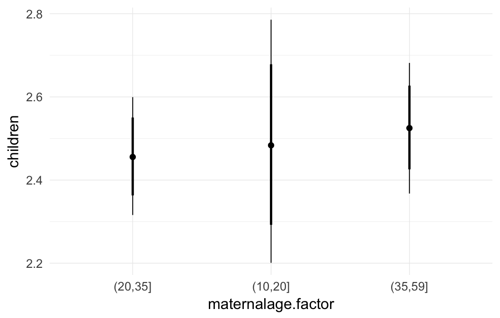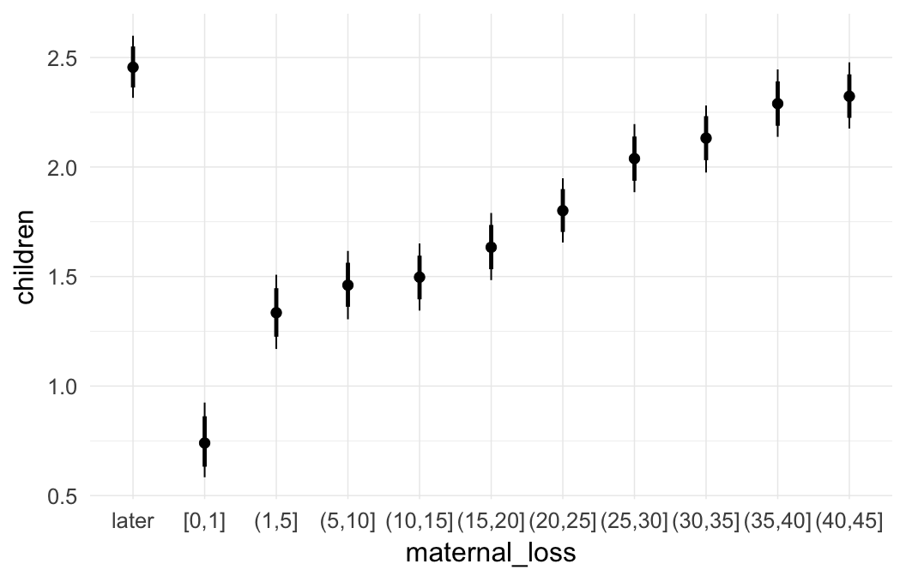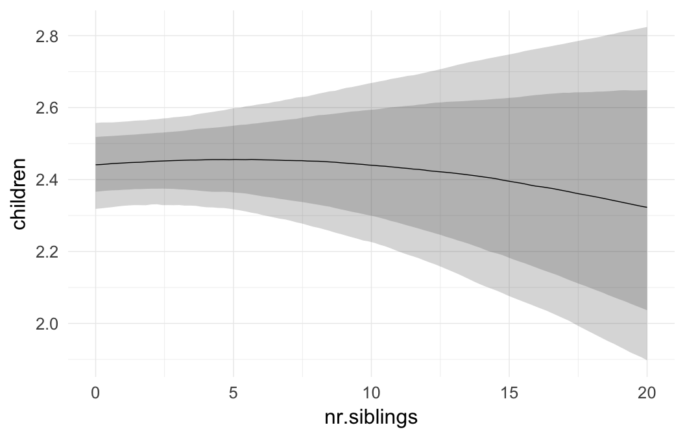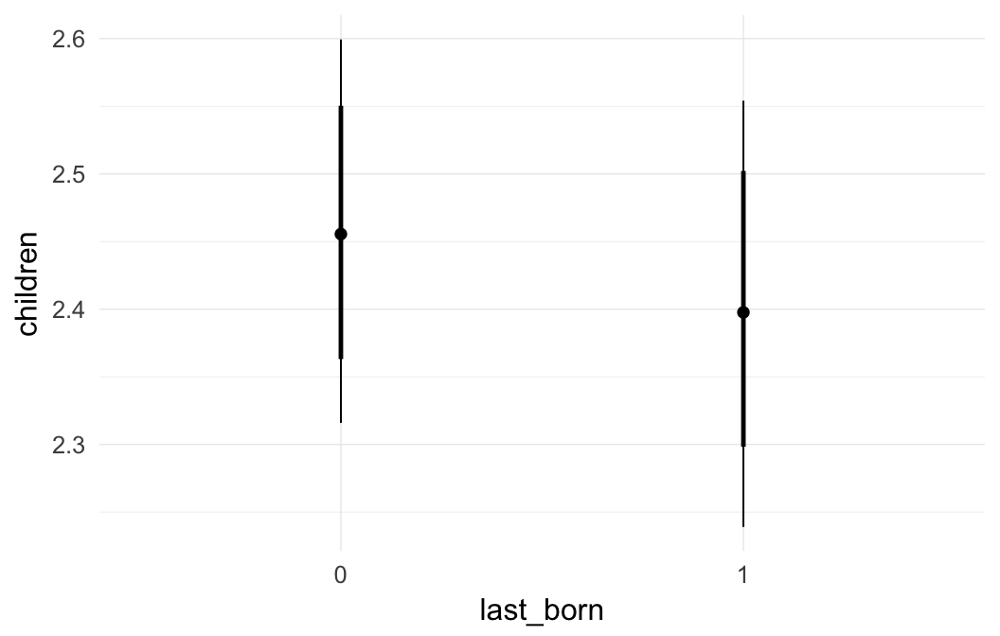
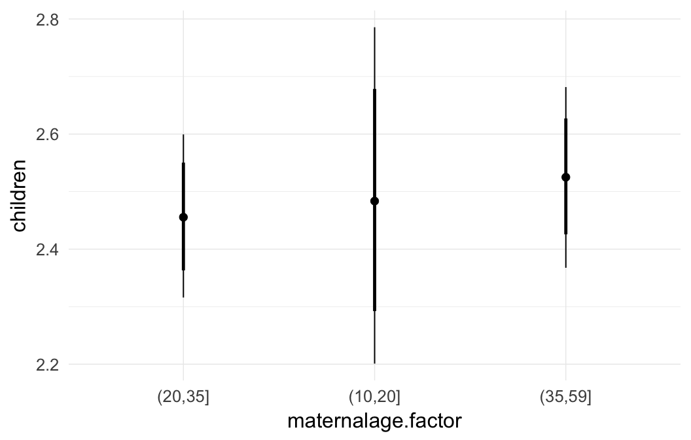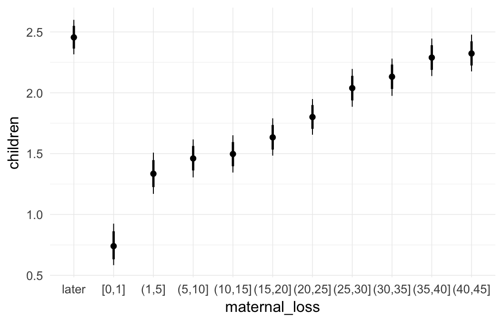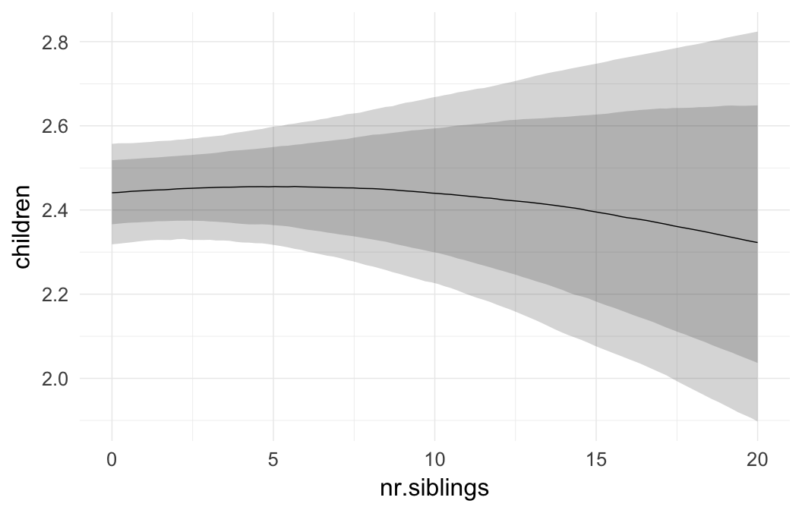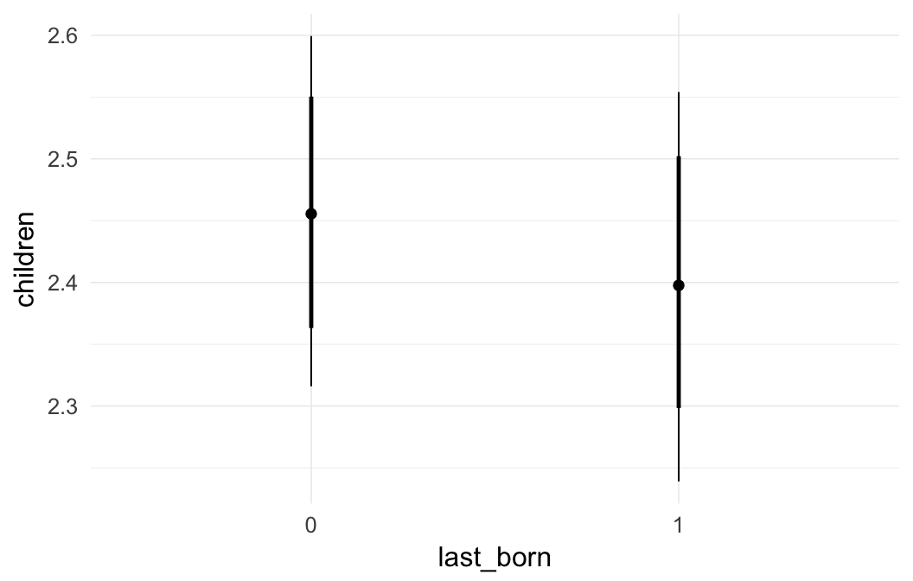
Coefficient plot
Coefficient estimates (95% and 80% credibility).
mcmc_intervals(as.matrix(model$fit), regex_pars = "b_[^I]")mcmc_areas(as.matrix(model$fit), regex_pars = "b")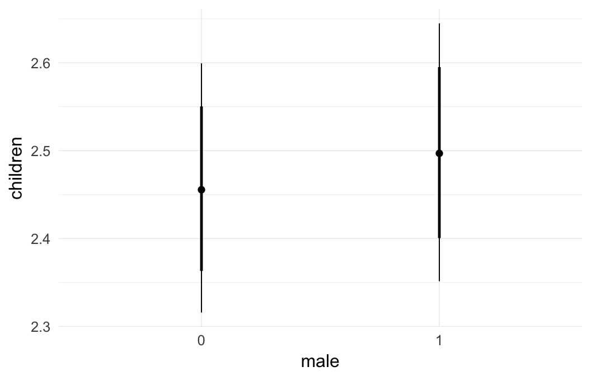
Diagnostics
These plots were made to diagnose misfit and nonconvergence.
Posterior predictive checks
brms::pp_check(model, re_formula = NA, type = "dens_overlay")brms::pp_check(model, re_formula = NA, type = "hist")Rhat
Did the 6 chains converge?
stanplot(model, pars = "^b_[^I]", type = 'rhat')Effective sample size by average sample size
stanplot(model, pars = "^b", type = 'ess')Monte Carlo SE
stanplot(model, pars = "^b", type = 'mcse')Trace plots
if(any( summary(model)$fixed[,"Rhat"] > 1.1)) { # only do traceplots if not converged
plot(model, N = 3, ask = FALSE)
}Further plots
stanplot(model, pars = "^b", type = 'diag')
File name
coefs/ddb/r9_continuous_byear_adjustment.rds
Cluster script
opts_chunk$set(echo = FALSE)
clusterscript = str_replace(basename(model_filename), "\\.rds",".html")
cat("[Cluster script](" , clusterscript, ")", sep = "")r10: Group-level slope added
Paternal age effects may vary between different families. Although we did not explore between-family moderators of paternal age effects in our study, we tested whether modelling an additional group-level slope for paternal age differences within the family, would change the results by allowing for shrinkage and to examine the amount of inter-family differences to be explained for potential future moderator analysis.
Model summary
Full summary
model_summary = summary(model, use_cache = FALSE, priors = TRUE)
print(model_summary)## Family: hurdle_poisson (log)
## Formula: children ~ paternalage + birth_cohort + male + maternalage.factor + paternalage.mean + paternal_loss + maternal_loss + older_siblings + nr.siblings + last_born + (1 + paternalage | idParents)
## hu ~ paternalage + birth_cohort + male + maternalage.factor + paternalage.mean + paternal_loss + maternal_loss + older_siblings + nr.siblings + last_born + (1 + paternalage | idParents)
## Data: model_data (Number of observations: 84106)
## Samples: 6 chains, each with iter = 3500; warmup = 1500; thin = 5;
## total post-warmup samples = 2400
## WAIC: Not computed
##
## Priors:
## b ~ normal(0,5)
## L ~ lkj_corr_cholesky(1)
## sd ~ student_t(3, 0, 5)
## b_hu ~ normal(0,5)
## sd_hu ~ student_t(3, 0, 10)
##
## Group-Level Effects:
## ~idParents (Number of levels: 24407)
## Estimate Est.Error l-95% CI u-95% CI
## sd(Intercept) 0.91 0.08 0.85 0.98
## sd(paternalage) 0.23 0.01 0.21 0.25
## sd(hu_Intercept) 1.83 0.12 1.58 2.08
## sd(hu_paternalage) 0.40 0.04 0.31 0.47
## cor(Intercept,paternalage) -0.92 0.06 -0.94 -0.91
## cor(hu_Intercept,hu_paternalage) -0.86 0.02 -0.89 -0.80
## Eff.Sample Rhat
## sd(Intercept) 105 1.04
## sd(paternalage) 156 1.03
## sd(hu_Intercept) 384 1.02
## sd(hu_paternalage) 248 1.03
## cor(Intercept,paternalage) 98 1.04
## cor(hu_Intercept,hu_paternalage) 461 1.02
##
## Population-Level Effects:
## Estimate Est.Error l-95% CI u-95% CI Eff.Sample
## Intercept 1.32 0.08 1.16 1.49 231
## paternalage -0.07 0.02 -0.10 -0.03 1150
## birth_cohort1750M1755 -0.11 0.11 -0.33 0.10 462
## birth_cohort1755M1760 0.06 0.10 -0.13 0.24 345
## birth_cohort1760M1765 0.14 0.09 -0.03 0.31 250
## birth_cohort1765M1770 0.12 0.09 -0.05 0.29 247
## birth_cohort1770M1775 0.07 0.09 -0.10 0.25 265
## birth_cohort1775M1780 0.06 0.09 -0.11 0.23 230
## birth_cohort1780M1785 0.16 0.09 -0.01 0.33 241
## birth_cohort1785M1790 0.10 0.08 -0.07 0.27 239
## birth_cohort1790M1795 0.03 0.08 -0.13 0.19 243
## birth_cohort1795M1800 0.03 0.08 -0.12 0.19 229
## birth_cohort1800M1805 -0.02 0.08 -0.17 0.14 223
## birth_cohort1805M1810 0.01 0.08 -0.14 0.16 226
## birth_cohort1810M1815 0.02 0.08 -0.13 0.17 224
## birth_cohort1815M1820 0.08 0.08 -0.07 0.23 218
## birth_cohort1820M1825 0.09 0.08 -0.06 0.24 222
## birth_cohort1825M1830 0.05 0.08 -0.09 0.20 214
## birth_cohort1830M1835 0.08 0.08 -0.07 0.23 216
## birth_cohort1835M1840 0.07 0.08 -0.08 0.23 216
## birth_cohort1840M1845 0.05 0.08 -0.10 0.20 214
## birth_cohort1845M1850 0.06 0.08 -0.09 0.21 215
## male1 0.04 0.01 0.03 0.05 2032
## maternalage.factor1020 0.04 0.03 -0.02 0.10 1711
## maternalage.factor3559 0.06 0.01 0.03 0.08 1819
## paternalage.mean 0.07 0.02 0.03 0.11 1237
## paternal_loss01 0.01 0.04 -0.06 0.08 1568
## paternal_loss15 0.01 0.02 -0.04 0.06 1652
## paternal_loss510 -0.04 0.02 -0.08 0.01 1625
## paternal_loss1015 -0.03 0.02 -0.07 0.00 1400
## paternal_loss1520 -0.09 0.02 -0.12 -0.05 1616
## paternal_loss2025 -0.04 0.02 -0.08 -0.01 1696
## paternal_loss2530 -0.03 0.02 -0.06 0.00 1615
## paternal_loss3035 -0.03 0.01 -0.06 0.00 1528
## paternal_loss3540 0.02 0.01 -0.01 0.05 1697
## paternal_loss4045 0.03 0.01 0.00 0.05 1805
## paternal_lossunclear -0.09 0.02 -0.12 -0.05 1393
## maternal_loss01 0.03 0.05 -0.07 0.14 2028
## maternal_loss15 0.00 0.03 -0.06 0.05 1634
## maternal_loss510 -0.02 0.02 -0.07 0.02 1853
## maternal_loss1015 -0.05 0.02 -0.10 -0.01 1522
## maternal_loss1520 -0.05 0.02 -0.10 -0.01 1482
## maternal_loss2025 -0.08 0.02 -0.12 -0.05 1554
## maternal_loss2530 -0.03 0.02 -0.06 0.00 1201
## maternal_loss3035 -0.03 0.01 -0.06 0.00 1223
## maternal_loss3540 0.00 0.01 -0.03 0.02 1578
## maternal_loss4045 -0.03 0.01 -0.05 0.00 1488
## maternal_lossunclear -0.11 0.02 -0.15 -0.08 1258
## older_siblings1 0.03 0.01 0.01 0.05 1445
## older_siblings2 0.05 0.01 0.02 0.07 1347
## older_siblings3 0.06 0.02 0.02 0.09 1116
## older_siblings4 0.04 0.02 -0.01 0.08 1139
## older_siblings5P 0.06 0.03 0.00 0.11 1164
## nr.siblings 0.02 0.00 0.02 0.03 1309
## last_born1 -0.02 0.01 -0.03 0.00 1955
## hu_Intercept 0.14 0.19 -0.23 0.50 488
## hu_paternalage 0.42 0.05 0.32 0.53 639
## hu_birth_cohort1750M1755 0.00 0.25 -0.49 0.48 931
## hu_birth_cohort1755M1760 -0.10 0.23 -0.55 0.35 642
## hu_birth_cohort1760M1765 -0.16 0.21 -0.58 0.24 533
## hu_birth_cohort1765M1770 -0.38 0.21 -0.80 0.03 529
## hu_birth_cohort1770M1775 -0.29 0.22 -0.72 0.12 603
## hu_birth_cohort1775M1780 0.04 0.21 -0.37 0.45 552
## hu_birth_cohort1780M1785 -0.02 0.20 -0.41 0.37 485
## hu_birth_cohort1785M1790 0.16 0.20 -0.24 0.53 466
## hu_birth_cohort1790M1795 0.35 0.19 0.00 0.73 445
## hu_birth_cohort1795M1800 0.22 0.18 -0.14 0.58 435
## hu_birth_cohort1800M1805 0.14 0.18 -0.20 0.50 444
## hu_birth_cohort1805M1810 0.11 0.18 -0.24 0.47 447
## hu_birth_cohort1810M1815 0.20 0.18 -0.14 0.56 440
## hu_birth_cohort1815M1820 0.02 0.18 -0.31 0.38 423
## hu_birth_cohort1820M1825 -0.12 0.18 -0.46 0.23 413
## hu_birth_cohort1825M1830 -0.15 0.18 -0.49 0.20 412
## hu_birth_cohort1830M1835 -0.17 0.18 -0.51 0.18 400
## hu_birth_cohort1835M1840 -0.27 0.18 -0.61 0.09 422
## hu_birth_cohort1840M1845 -0.35 0.18 -0.68 0.01 411
## hu_birth_cohort1845M1850 -0.45 0.18 -0.77 -0.09 413
## hu_male1 0.07 0.02 0.03 0.10 1867
## hu_maternalage.factor1020 0.11 0.08 -0.04 0.28 2037
## hu_maternalage.factor3559 -0.06 0.03 -0.11 -0.01 1956
## hu_paternalage.mean -0.44 0.06 -0.55 -0.33 804
## hu_paternal_loss01 0.80 0.09 0.62 0.96 1908
## hu_paternal_loss15 0.67 0.06 0.55 0.79 1644
## hu_paternal_loss510 0.64 0.05 0.54 0.75 1950
## hu_paternal_loss1015 0.50 0.05 0.41 0.59 1328
## hu_paternal_loss1520 0.41 0.05 0.32 0.50 1502
## hu_paternal_loss2025 0.29 0.04 0.21 0.38 1341
## hu_paternal_loss2530 0.20 0.04 0.12 0.28 1403
## hu_paternal_loss3035 0.13 0.04 0.05 0.21 1475
## hu_paternal_loss3540 0.11 0.04 0.03 0.19 1685
## hu_paternal_loss4045 0.03 0.04 -0.05 0.11 1706
## hu_paternal_lossunclear 1.38 0.05 1.29 1.47 1401
## hu_maternal_loss01 1.75 0.11 1.54 1.98 1910
## hu_maternal_loss15 0.95 0.07 0.81 1.08 1994
## hu_maternal_loss510 0.84 0.06 0.73 0.96 1597
## hu_maternal_loss1015 0.81 0.06 0.70 0.92 2265
## hu_maternal_loss1520 0.66 0.05 0.55 0.76 1695
## hu_maternal_loss2025 0.45 0.05 0.36 0.54 1708
## hu_maternal_loss2530 0.29 0.04 0.20 0.37 1920
## hu_maternal_loss3035 0.22 0.04 0.14 0.30 1585
## hu_maternal_loss3540 0.13 0.04 0.05 0.20 1794
## hu_maternal_loss4045 0.06 0.04 -0.01 0.13 1814
## hu_maternal_lossunclear 1.24 0.04 1.16 1.31 1659
## hu_older_siblings1 -0.07 0.03 -0.12 -0.01 1322
## hu_older_siblings2 -0.09 0.04 -0.17 -0.02 1140
## hu_older_siblings3 -0.14 0.05 -0.23 -0.04 909
## hu_older_siblings4 -0.21 0.06 -0.33 -0.09 825
## hu_older_siblings5P -0.29 0.08 -0.44 -0.13 723
## hu_nr.siblings 0.02 0.01 0.01 0.03 1077
## hu_last_born1 0.03 0.02 -0.01 0.08 1923
## Rhat
## Intercept 1.01
## paternalage 1.00
## birth_cohort1750M1755 1.01
## birth_cohort1755M1760 1.01
## birth_cohort1760M1765 1.01
## birth_cohort1765M1770 1.01
## birth_cohort1770M1775 1.01
## birth_cohort1775M1780 1.02
## birth_cohort1780M1785 1.01
## birth_cohort1785M1790 1.01
## birth_cohort1790M1795 1.01
## birth_cohort1795M1800 1.02
## birth_cohort1800M1805 1.02
## birth_cohort1805M1810 1.01
## birth_cohort1810M1815 1.01
## birth_cohort1815M1820 1.02
## birth_cohort1820M1825 1.01
## birth_cohort1825M1830 1.02
## birth_cohort1830M1835 1.02
## birth_cohort1835M1840 1.02
## birth_cohort1840M1845 1.02
## birth_cohort1845M1850 1.02
## male1 1.00
## maternalage.factor1020 1.00
## maternalage.factor3559 1.00
## paternalage.mean 1.00
## paternal_loss01 1.00
## paternal_loss15 1.00
## paternal_loss510 1.00
## paternal_loss1015 1.00
## paternal_loss1520 1.00
## paternal_loss2025 1.00
## paternal_loss2530 1.00
## paternal_loss3035 1.00
## paternal_loss3540 1.00
## paternal_loss4045 1.00
## paternal_lossunclear 1.00
## maternal_loss01 1.00
## maternal_loss15 1.00
## maternal_loss510 1.00
## maternal_loss1015 1.00
## maternal_loss1520 1.00
## maternal_loss2025 1.00
## maternal_loss2530 1.00
## maternal_loss3035 1.00
## maternal_loss3540 1.00
## maternal_loss4045 1.00
## maternal_lossunclear 1.00
## older_siblings1 1.00
## older_siblings2 1.00
## older_siblings3 1.00
## older_siblings4 1.00
## older_siblings5P 1.00
## nr.siblings 1.00
## last_born1 1.00
## hu_Intercept 1.01
## hu_paternalage 1.00
## hu_birth_cohort1750M1755 1.01
## hu_birth_cohort1755M1760 1.01
## hu_birth_cohort1760M1765 1.01
## hu_birth_cohort1765M1770 1.01
## hu_birth_cohort1770M1775 1.01
## hu_birth_cohort1775M1780 1.01
## hu_birth_cohort1780M1785 1.02
## hu_birth_cohort1785M1790 1.02
## hu_birth_cohort1790M1795 1.01
## hu_birth_cohort1795M1800 1.02
## hu_birth_cohort1800M1805 1.02
## hu_birth_cohort1805M1810 1.02
## hu_birth_cohort1810M1815 1.02
## hu_birth_cohort1815M1820 1.02
## hu_birth_cohort1820M1825 1.02
## hu_birth_cohort1825M1830 1.02
## hu_birth_cohort1830M1835 1.02
## hu_birth_cohort1835M1840 1.02
## hu_birth_cohort1840M1845 1.02
## hu_birth_cohort1845M1850 1.02
## hu_male1 1.00
## hu_maternalage.factor1020 1.00
## hu_maternalage.factor3559 1.00
## hu_paternalage.mean 1.00
## hu_paternal_loss01 1.00
## hu_paternal_loss15 1.00
## hu_paternal_loss510 1.00
## hu_paternal_loss1015 1.00
## hu_paternal_loss1520 1.00
## hu_paternal_loss2025 1.01
## hu_paternal_loss2530 1.00
## hu_paternal_loss3035 1.00
## hu_paternal_loss3540 1.00
## hu_paternal_loss4045 1.00
## hu_paternal_lossunclear 1.00
## hu_maternal_loss01 1.00
## hu_maternal_loss15 1.00
## hu_maternal_loss510 1.00
## hu_maternal_loss1015 1.00
## hu_maternal_loss1520 1.00
## hu_maternal_loss2025 1.00
## hu_maternal_loss2530 1.00
## hu_maternal_loss3035 1.00
## hu_maternal_loss3540 1.00
## hu_maternal_loss4045 1.00
## hu_maternal_lossunclear 1.00
## hu_older_siblings1 1.00
## hu_older_siblings2 1.00
## hu_older_siblings3 1.00
## hu_older_siblings4 1.00
## hu_older_siblings5P 1.00
## hu_nr.siblings 1.00
## hu_last_born1 1.00
##
## Samples were drawn using sampling(NUTS). For each parameter, Eff.Sample
## is a crude measure of effective sample size, and Rhat is the potential
## scale reduction factor on split chains (at convergence, Rhat = 1).Table of fixed effects
fixed_eff = data.frame(model_summary$fixed, check.names = F)
fixed_eff$Est.Error = fixed_eff$Eff.Sample = fixed_eff$Rhat = NULL
fixed_eff$OR = exp(fixed_eff$Estimate)
fixed_eff$OR_low = exp(fixed_eff$`l-95% CI`)
fixed_eff$OR_high = exp(fixed_eff$`u-95% CI`)
pander::pander(fixed_eff)| Â | Estimate | l-95% CI | u-95% CI | OR | OR_low | OR_high |
|---|---|---|---|---|---|---|
| Intercept | 1.324 | 1.159 | 1.488 | 3.76 | 3.185 | 4.426 |
| paternalage | -0.06674 | -0.1044 | -0.02725 | 0.9354 | 0.9008 | 0.9731 |
| birth_cohort1750M1755 | -0.1073 | -0.3296 | 0.1022 | 0.8983 | 0.7192 | 1.108 |
| birth_cohort1755M1760 | 0.05875 | -0.1308 | 0.2442 | 1.061 | 0.8774 | 1.277 |
| birth_cohort1760M1765 | 0.1444 | -0.03062 | 0.3106 | 1.155 | 0.9698 | 1.364 |
| birth_cohort1765M1770 | 0.1198 | -0.049 | 0.2909 | 1.127 | 0.9522 | 1.338 |
| birth_cohort1770M1775 | 0.06906 | -0.09843 | 0.2507 | 1.072 | 0.9063 | 1.285 |
| birth_cohort1775M1780 | 0.05614 | -0.1137 | 0.2267 | 1.058 | 0.8925 | 1.254 |
| birth_cohort1780M1785 | 0.1561 | -0.00908 | 0.3253 | 1.169 | 0.991 | 1.384 |
| birth_cohort1785M1790 | 0.09794 | -0.06962 | 0.2651 | 1.103 | 0.9327 | 1.304 |
| birth_cohort1790M1795 | 0.0278 | -0.1336 | 0.1908 | 1.028 | 0.8749 | 1.21 |
| birth_cohort1795M1800 | 0.03078 | -0.1196 | 0.1933 | 1.031 | 0.8873 | 1.213 |
| birth_cohort1800M1805 | -0.01718 | -0.1702 | 0.1391 | 0.983 | 0.8435 | 1.149 |
| birth_cohort1805M1810 | 0.009481 | -0.1424 | 0.158 | 1.01 | 0.8673 | 1.171 |
| birth_cohort1810M1815 | 0.02035 | -0.1289 | 0.1738 | 1.021 | 0.8791 | 1.19 |
| birth_cohort1815M1820 | 0.07695 | -0.06956 | 0.225 | 1.08 | 0.9328 | 1.252 |
| birth_cohort1820M1825 | 0.08675 | -0.05894 | 0.2368 | 1.091 | 0.9428 | 1.267 |
| birth_cohort1825M1830 | 0.05416 | -0.09292 | 0.2033 | 1.056 | 0.9113 | 1.225 |
| birth_cohort1830M1835 | 0.07705 | -0.07138 | 0.229 | 1.08 | 0.9311 | 1.257 |
| birth_cohort1835M1840 | 0.07123 | -0.07842 | 0.225 | 1.074 | 0.9246 | 1.252 |
| birth_cohort1840M1845 | 0.05052 | -0.09969 | 0.2016 | 1.052 | 0.9051 | 1.223 |
| birth_cohort1845M1850 | 0.05914 | -0.08767 | 0.213 | 1.061 | 0.9161 | 1.237 |
| male1 | 0.04167 | 0.02948 | 0.0541 | 1.043 | 1.03 | 1.056 |
| maternalage.factor1020 | 0.04093 | -0.02088 | 0.1019 | 1.042 | 0.9793 | 1.107 |
| maternalage.factor3559 | 0.05601 | 0.03477 | 0.07634 | 1.058 | 1.035 | 1.079 |
| paternalage.mean | 0.07276 | 0.0334 | 0.1117 | 1.075 | 1.034 | 1.118 |
| paternal_loss01 | 0.008618 | -0.06492 | 0.07859 | 1.009 | 0.9371 | 1.082 |
| paternal_loss15 | 0.009146 | -0.0401 | 0.05772 | 1.009 | 0.9607 | 1.059 |
| paternal_loss510 | -0.03816 | -0.08126 | 0.00519 | 0.9626 | 0.922 | 1.005 |
| paternal_loss1015 | -0.03492 | -0.07171 | 0.00133 | 0.9657 | 0.9308 | 1.001 |
| paternal_loss1520 | -0.08892 | -0.1245 | -0.05315 | 0.9149 | 0.8829 | 0.9482 |
| paternal_loss2025 | -0.04379 | -0.07655 | -0.01037 | 0.9572 | 0.9263 | 0.9897 |
| paternal_loss2530 | -0.03308 | -0.0637 | -0.003173 | 0.9675 | 0.9383 | 0.9968 |
| paternal_loss3035 | -0.02944 | -0.05864 | -0.001613 | 0.971 | 0.943 | 0.9984 |
| paternal_loss3540 | 0.01734 | -0.01042 | 0.04501 | 1.017 | 0.9896 | 1.046 |
| paternal_loss4045 | 0.02632 | -6.52e-05 | 0.05269 | 1.027 | 0.9999 | 1.054 |
| paternal_lossunclear | -0.08741 | -0.124 | -0.05169 | 0.9163 | 0.8834 | 0.9496 |
| maternal_loss01 | 0.03422 | -0.06813 | 0.1379 | 1.035 | 0.9341 | 1.148 |
| maternal_loss15 | -0.003666 | -0.05808 | 0.051 | 0.9963 | 0.9436 | 1.052 |
| maternal_loss510 | -0.0227 | -0.07017 | 0.02322 | 0.9776 | 0.9322 | 1.023 |
| maternal_loss1015 | -0.05188 | -0.09528 | -0.008731 | 0.9494 | 0.9091 | 0.9913 |
| maternal_loss1520 | -0.05408 | -0.0959 | -0.01199 | 0.9474 | 0.9086 | 0.9881 |
| maternal_loss2025 | -0.08248 | -0.1171 | -0.04652 | 0.9208 | 0.8895 | 0.9545 |
| maternal_loss2530 | -0.03205 | -0.06217 | -0.001451 | 0.9685 | 0.9397 | 0.9985 |
| maternal_loss3035 | -0.02662 | -0.05623 | 0.001706 | 0.9737 | 0.9453 | 1.002 |
| maternal_loss3540 | -0.001244 | -0.02659 | 0.02447 | 0.9988 | 0.9738 | 1.025 |
| maternal_loss4045 | -0.02508 | -0.04951 | -0.0009395 | 0.9752 | 0.9517 | 0.9991 |
| maternal_lossunclear | -0.1148 | -0.1456 | -0.08431 | 0.8916 | 0.8645 | 0.9191 |
| older_siblings1 | 0.02515 | 0.005119 | 0.04612 | 1.025 | 1.005 | 1.047 |
| older_siblings2 | 0.04523 | 0.01816 | 0.07252 | 1.046 | 1.018 | 1.075 |
| older_siblings3 | 0.05526 | 0.01947 | 0.09002 | 1.057 | 1.02 | 1.094 |
| older_siblings4 | 0.03777 | -0.005081 | 0.07927 | 1.038 | 0.9949 | 1.082 |
| older_siblings5P | 0.05796 | 0.003684 | 0.1112 | 1.06 | 1.004 | 1.118 |
| nr.siblings | 0.02077 | 0.01588 | 0.02602 | 1.021 | 1.016 | 1.026 |
| last_born1 | -0.01709 | -0.0348 | 0.001169 | 0.9831 | 0.9658 | 1.001 |
| hu_Intercept | 0.1409 | -0.2326 | 0.5033 | 1.151 | 0.7925 | 1.654 |
| hu_paternalage | 0.4217 | 0.3167 | 0.5275 | 1.525 | 1.373 | 1.695 |
| hu_birth_cohort1750M1755 | 0.002002 | -0.4908 | 0.4841 | 1.002 | 0.6121 | 1.623 |
| hu_birth_cohort1755M1760 | -0.1033 | -0.5452 | 0.3527 | 0.9019 | 0.5797 | 1.423 |
| hu_birth_cohort1760M1765 | -0.1639 | -0.5783 | 0.2447 | 0.8488 | 0.5609 | 1.277 |
| hu_birth_cohort1765M1770 | -0.379 | -0.7965 | 0.03086 | 0.6846 | 0.4509 | 1.031 |
| hu_birth_cohort1770M1775 | -0.2927 | -0.7199 | 0.1216 | 0.7463 | 0.4868 | 1.129 |
| hu_birth_cohort1775M1780 | 0.04326 | -0.3659 | 0.4455 | 1.044 | 0.6935 | 1.561 |
| hu_birth_cohort1780M1785 | -0.023 | -0.4148 | 0.3749 | 0.9773 | 0.6605 | 1.455 |
| hu_birth_cohort1785M1790 | 0.1561 | -0.235 | 0.5323 | 1.169 | 0.7906 | 1.703 |
| hu_birth_cohort1790M1795 | 0.346 | -0.001868 | 0.7306 | 1.413 | 0.9981 | 2.076 |
| hu_birth_cohort1795M1800 | 0.2175 | -0.1372 | 0.5804 | 1.243 | 0.8718 | 1.787 |
| hu_birth_cohort1800M1805 | 0.1362 | -0.2031 | 0.4987 | 1.146 | 0.8162 | 1.647 |
| hu_birth_cohort1805M1810 | 0.1063 | -0.2402 | 0.4699 | 1.112 | 0.7865 | 1.6 |
| hu_birth_cohort1810M1815 | 0.1978 | -0.1375 | 0.559 | 1.219 | 0.8715 | 1.749 |
| hu_birth_cohort1815M1820 | 0.02343 | -0.3102 | 0.3768 | 1.024 | 0.7333 | 1.458 |
| hu_birth_cohort1820M1825 | -0.1235 | -0.4608 | 0.231 | 0.8838 | 0.6308 | 1.26 |
| hu_birth_cohort1825M1830 | -0.1545 | -0.4925 | 0.2042 | 0.8569 | 0.6111 | 1.227 |
| hu_birth_cohort1830M1835 | -0.1733 | -0.5129 | 0.1847 | 0.8409 | 0.5988 | 1.203 |
| hu_birth_cohort1835M1840 | -0.2698 | -0.608 | 0.08947 | 0.7635 | 0.5445 | 1.094 |
| hu_birth_cohort1840M1845 | -0.3482 | -0.6823 | 0.01122 | 0.706 | 0.5055 | 1.011 |
| hu_birth_cohort1845M1850 | -0.4456 | -0.7726 | -0.08933 | 0.6404 | 0.4618 | 0.9145 |
| hu_male1 | 0.06788 | 0.03305 | 0.1027 | 1.07 | 1.034 | 1.108 |
| hu_maternalage.factor1020 | 0.1139 | -0.04293 | 0.2752 | 1.121 | 0.958 | 1.317 |
| hu_maternalage.factor3559 | -0.0608 | -0.1138 | -0.007563 | 0.941 | 0.8924 | 0.9925 |
| hu_paternalage.mean | -0.441 | -0.5477 | -0.3289 | 0.6434 | 0.5783 | 0.7197 |
| hu_paternal_loss01 | 0.7983 | 0.617 | 0.9636 | 2.222 | 1.853 | 2.621 |
| hu_paternal_loss15 | 0.6699 | 0.5464 | 0.7936 | 1.954 | 1.727 | 2.211 |
| hu_paternal_loss510 | 0.6427 | 0.5366 | 0.7485 | 1.902 | 1.71 | 2.114 |
| hu_paternal_loss1015 | 0.5007 | 0.4051 | 0.5948 | 1.65 | 1.5 | 1.813 |
| hu_paternal_loss1520 | 0.4062 | 0.3161 | 0.4977 | 1.501 | 1.372 | 1.645 |
| hu_paternal_loss2025 | 0.2938 | 0.2064 | 0.3791 | 1.342 | 1.229 | 1.461 |
| hu_paternal_loss2530 | 0.1991 | 0.1159 | 0.2834 | 1.22 | 1.123 | 1.328 |
| hu_paternal_loss3035 | 0.1305 | 0.04969 | 0.2083 | 1.139 | 1.051 | 1.232 |
| hu_paternal_loss3540 | 0.1052 | 0.02693 | 0.1868 | 1.111 | 1.027 | 1.205 |
| hu_paternal_loss4045 | 0.02727 | -0.05206 | 0.1107 | 1.028 | 0.9493 | 1.117 |
| hu_paternal_lossunclear | 1.379 | 1.29 | 1.469 | 3.969 | 3.633 | 4.344 |
| hu_maternal_loss01 | 1.751 | 1.539 | 1.981 | 5.763 | 4.661 | 7.251 |
| hu_maternal_loss15 | 0.9489 | 0.8124 | 1.08 | 2.583 | 2.253 | 2.945 |
| hu_maternal_loss510 | 0.8444 | 0.7334 | 0.9596 | 2.327 | 2.082 | 2.611 |
| hu_maternal_loss1015 | 0.8125 | 0.7032 | 0.9227 | 2.254 | 2.02 | 2.516 |
| hu_maternal_loss1520 | 0.6557 | 0.5543 | 0.7573 | 1.926 | 1.741 | 2.132 |
| hu_maternal_loss2025 | 0.448 | 0.3559 | 0.5406 | 1.565 | 1.427 | 1.717 |
| hu_maternal_loss2530 | 0.2887 | 0.2045 | 0.3747 | 1.335 | 1.227 | 1.455 |
| hu_maternal_loss3035 | 0.2177 | 0.1409 | 0.3008 | 1.243 | 1.151 | 1.351 |
| hu_maternal_loss3540 | 0.1272 | 0.05355 | 0.2014 | 1.136 | 1.055 | 1.223 |
| hu_maternal_loss4045 | 0.06104 | -0.01261 | 0.1309 | 1.063 | 0.9875 | 1.14 |
| hu_maternal_lossunclear | 1.235 | 1.158 | 1.314 | 3.439 | 3.184 | 3.722 |
| hu_older_siblings1 | -0.06946 | -0.1247 | -0.01183 | 0.9329 | 0.8828 | 0.9882 |
| hu_older_siblings2 | -0.09044 | -0.1655 | -0.01633 | 0.9135 | 0.8475 | 0.9838 |
| hu_older_siblings3 | -0.1377 | -0.2346 | -0.03837 | 0.8713 | 0.7909 | 0.9624 |
| hu_older_siblings4 | -0.2102 | -0.3291 | -0.09135 | 0.8104 | 0.7195 | 0.9127 |
| hu_older_siblings5P | -0.2901 | -0.4445 | -0.1319 | 0.7482 | 0.6411 | 0.8764 |
| hu_nr.siblings | 0.01993 | 0.005146 | 0.03417 | 1.02 | 1.005 | 1.035 |
| hu_last_born1 | 0.03355 | -0.01261 | 0.07947 | 1.034 | 0.9875 | 1.083 |
Paternal age effect
pander::pander(paternal_age_10y_effect(model))| effect | median_estimate | ci_95 | ci_80 |
|---|---|---|---|
| estimate father 25y | 2.51 | [2.03;3.06] | [2.18;2.86] |
| estimate father 35y | 1.92 | [1.5;2.4] | [1.63;2.22] |
| percentage change | -23.7 | [-29.41;-17.92] | [-27.4;-19.92] |
| OR/IRR | 0.94 | [0.9;0.97] | [0.91;0.96] |
| OR hurdle | 1.53 | [1.37;1.69] | [1.42;1.63] |
Marginal effect plots
plot.brmsMarginalEffects_shades(
x = marginal_effects(model, re_formula = NA, probs = c(0.025,0.975)),
y = marginal_effects(model, re_formula = NA, probs = c(0.1,0.9)),
ask = FALSE)
Coefficient plot
Coefficient estimates (95% and 80% credibility).
mcmc_intervals(as.matrix(model$fit), regex_pars = "b_[^I]")
mcmc_areas(as.matrix(model$fit), regex_pars = "b")Diagnostics
These plots were made to diagnose misfit and nonconvergence.
Posterior predictive checks
brms::pp_check(model, re_formula = NA, type = "dens_overlay")brms::pp_check(model, re_formula = NA, type = "hist")Rhat
Did the 6 chains converge?
stanplot(model, pars = "^b_[^I]", type = 'rhat')
Effective sample size by average sample size
stanplot(model, pars = "^b", type = 'ess')Monte Carlo SE
stanplot(model, pars = "^b", type = 'mcse')
Trace plots
if(any( summary(model)$fixed[,"Rhat"] > 1.1)) { # only do traceplots if not converged
plot(model, N = 3, ask = FALSE)
}Further plots
stanplot(model, pars = "^b", type = 'diag')File name
coefs/ddb/r10_add_random_slope.rds
Cluster script
opts_chunk$set(echo = FALSE)
clusterscript = str_replace(basename(model_filename), "\\.rds",".html")
cat("[Cluster script](" , clusterscript, ")", sep = "")r11: Separate group-level effects for each parent
Most anchors in our sample are full biological siblings and especially in the historical populations, divorce and remarriage was rare. Therefore, we chose to include only one group-level effect, for the parent couple (i.e. one group-level effect per father-mother-dyad). Including one intercept per parent is potentially a better way to adjust for genetic propensities inherited from either parent and allows estimating this propensity also from half-siblings, while half-sibling relationships were ignored in our main models. This comes at the cost of modelling complexity.
Model summary
Full summary
model_summary = summary(model, use_cache = FALSE, priors = TRUE)
print(model_summary)## Family: hurdle_poisson (log)
## Formula: children ~ paternalage + birth_cohort + male + maternalage.factor + paternalage.mean + paternal_loss + maternal_loss + older_siblings + nr.siblings + last_born + (1 | idMere) + (1 | idPere)
## hu ~ paternalage + birth_cohort + male + maternalage.factor + paternalage.mean + paternal_loss + maternal_loss + older_siblings + nr.siblings + last_born + (1 | idMere) + (1 | idPere)
## Data: model_data (Number of observations: 56663)
## Samples: 6 chains, each with iter = 10000; warmup = 4000; thin = 5;
## total post-warmup samples = 7200
## WAIC: Not computed
##
## Priors:
## b ~ normal(0,5)
## sd ~ student_t(3, 0, 5)
## b_hu ~ normal(0,5)
## sd_hu ~ student_t(3, 0, 10)
##
## Group-Level Effects:
## ~idMere (Number of levels: 14266)
## Estimate Est.Error l-95% CI u-95% CI Eff.Sample Rhat
## sd(Intercept) 0.28 0.02 0.24 0.32 326 1.01
## sd(hu_Intercept) 0.48 0.08 0.32 0.63 299 1.02
##
## ~idPere (Number of levels: 13910)
## Estimate Est.Error l-95% CI u-95% CI Eff.Sample Rhat
## sd(Intercept) 0.22 0.02 0.17 0.26 317 1.01
## sd(hu_Intercept) 0.66 0.06 0.53 0.76 311 1.02
##
## Population-Level Effects:
## Estimate Est.Error l-95% CI u-95% CI Eff.Sample
## Intercept 1.32 0.08 1.16 1.48 1974
## paternalage -0.05 0.02 -0.09 -0.01 5674
## birth_cohort1750M1755 -0.17 0.12 -0.40 0.06 3803
## birth_cohort1755M1760 0.09 0.09 -0.10 0.27 2936
## birth_cohort1760M1765 0.15 0.09 -0.02 0.32 2495
## birth_cohort1765M1770 0.09 0.09 -0.07 0.27 2193
## birth_cohort1770M1775 0.06 0.09 -0.11 0.23 2260
## birth_cohort1775M1780 0.04 0.09 -0.12 0.21 2307
## birth_cohort1780M1785 0.15 0.09 -0.02 0.32 2303
## birth_cohort1785M1790 0.12 0.08 -0.04 0.28 2191
## birth_cohort1790M1795 0.02 0.08 -0.14 0.18 2176
## birth_cohort1795M1800 0.02 0.08 -0.14 0.18 2038
## birth_cohort1800M1805 -0.03 0.08 -0.18 0.13 1975
## birth_cohort1805M1810 -0.02 0.08 -0.17 0.14 2034
## birth_cohort1810M1815 0.01 0.08 -0.14 0.16 1982
## birth_cohort1815M1820 0.06 0.08 -0.09 0.22 1963
## birth_cohort1820M1825 0.08 0.08 -0.07 0.23 1960
## birth_cohort1825M1830 0.04 0.08 -0.11 0.19 1892
## birth_cohort1830M1835 0.06 0.08 -0.08 0.21 1940
## birth_cohort1835M1840 0.06 0.08 -0.09 0.22 2005
## birth_cohort1840M1845 0.04 0.08 -0.11 0.19 1892
## birth_cohort1845M1850 0.05 0.08 -0.10 0.20 1977
## male1 0.04 0.01 0.03 0.05 7200
## maternalage.factor1020 0.04 0.03 -0.02 0.09 7133
## maternalage.factor3559 0.06 0.01 0.04 0.08 7200
## paternalage.mean 0.06 0.02 0.02 0.10 5912
## paternal_loss01 0.06 0.04 -0.02 0.13 6919
## paternal_loss15 0.02 0.02 -0.03 0.06 6523
## paternal_loss510 -0.02 0.02 -0.06 0.02 6603
## paternal_loss1015 -0.02 0.02 -0.06 0.02 6139
## paternal_loss1520 -0.07 0.02 -0.11 -0.04 6349
## paternal_loss2025 -0.03 0.02 -0.06 0.00 6554
## paternal_loss2530 -0.02 0.02 -0.05 0.01 6080
## paternal_loss3035 -0.02 0.01 -0.04 0.01 6209
## paternal_loss3540 0.02 0.01 0.00 0.05 5957
## paternal_loss4045 0.03 0.01 0.00 0.05 6396
## maternal_loss01 0.07 0.05 -0.04 0.17 7200
## maternal_loss15 0.00 0.03 -0.05 0.06 7200
## maternal_loss510 -0.02 0.02 -0.06 0.03 7178
## maternal_loss1015 -0.04 0.02 -0.08 0.01 7117
## maternal_loss1520 -0.03 0.02 -0.07 0.00 6846
## maternal_loss2025 -0.07 0.02 -0.10 -0.03 6617
## maternal_loss2530 -0.03 0.02 -0.06 0.00 6807
## maternal_loss3035 -0.02 0.01 -0.05 0.01 6683
## maternal_loss3540 0.00 0.01 -0.02 0.03 7050
## maternal_loss4045 -0.02 0.01 -0.04 0.00 6849
## older_siblings1 0.02 0.01 -0.01 0.04 6301
## older_siblings2 0.03 0.01 0.00 0.06 6049
## older_siblings3 0.04 0.02 0.00 0.07 5646
## older_siblings4 0.01 0.02 -0.03 0.05 5884
## older_siblings5P 0.03 0.03 -0.03 0.08 5614
## nr.siblings 0.02 0.00 0.02 0.03 5794
## last_born1 -0.02 0.01 -0.04 0.00 7200
## hu_Intercept -0.03 0.20 -0.41 0.36 2168
## hu_paternalage 0.05 0.06 -0.06 0.16 5640
## hu_birth_cohort1750M1755 0.34 0.29 -0.21 0.90 4010
## hu_birth_cohort1755M1760 0.05 0.24 -0.42 0.54 3007
## hu_birth_cohort1760M1765 -0.08 0.22 -0.53 0.36 2537
## hu_birth_cohort1765M1770 -0.38 0.22 -0.81 0.06 2729
## hu_birth_cohort1770M1775 -0.14 0.23 -0.59 0.30 2719
## hu_birth_cohort1775M1780 0.02 0.22 -0.41 0.45 2483
## hu_birth_cohort1780M1785 -0.05 0.22 -0.47 0.38 2343
## hu_birth_cohort1785M1790 0.10 0.21 -0.31 0.51 2381
## hu_birth_cohort1790M1795 0.28 0.20 -0.12 0.67 2286
## hu_birth_cohort1795M1800 0.08 0.19 -0.30 0.46 2238
## hu_birth_cohort1800M1805 0.00 0.19 -0.38 0.38 2268
## hu_birth_cohort1805M1810 -0.05 0.19 -0.41 0.33 2113
## hu_birth_cohort1810M1815 0.03 0.19 -0.35 0.40 2126
## hu_birth_cohort1815M1820 -0.14 0.19 -0.51 0.24 2082
## hu_birth_cohort1820M1825 -0.24 0.19 -0.61 0.13 2065
## hu_birth_cohort1825M1830 -0.24 0.19 -0.61 0.13 2048
## hu_birth_cohort1830M1835 -0.22 0.19 -0.59 0.15 2075
## hu_birth_cohort1835M1840 -0.24 0.19 -0.61 0.13 2043
## hu_birth_cohort1840M1845 -0.23 0.19 -0.60 0.14 2050
## hu_birth_cohort1845M1850 -0.19 0.19 -0.56 0.17 2054
## hu_male1 0.05 0.02 0.01 0.08 7200
## hu_maternalage.factor1020 0.06 0.09 -0.12 0.23 7200
## hu_maternalage.factor3559 0.07 0.03 0.01 0.13 6884
## hu_paternalage.mean -0.08 0.06 -0.19 0.04 5746
## hu_paternal_loss01 0.87 0.09 0.69 1.05 6951
## hu_paternal_loss15 0.67 0.06 0.55 0.80 6698
## hu_paternal_loss510 0.69 0.05 0.59 0.80 6636
## hu_paternal_loss1015 0.53 0.05 0.43 0.62 6571
## hu_paternal_loss1520 0.43 0.04 0.34 0.52 6410
## hu_paternal_loss2025 0.32 0.04 0.24 0.41 6568
## hu_paternal_loss2530 0.23 0.04 0.15 0.31 6359
## hu_paternal_loss3035 0.16 0.04 0.09 0.24 6942
## hu_paternal_loss3540 0.12 0.04 0.05 0.19 6736
## hu_paternal_loss4045 0.04 0.04 -0.04 0.12 6527
## hu_maternal_loss01 1.83 0.12 1.60 2.07 6797
## hu_maternal_loss15 1.01 0.07 0.87 1.14 7200
## hu_maternal_loss510 0.85 0.06 0.74 0.96 6934
## hu_maternal_loss1015 0.79 0.05 0.69 0.90 7200
## hu_maternal_loss1520 0.67 0.05 0.57 0.76 7180
## hu_maternal_loss2025 0.45 0.04 0.36 0.54 6835
## hu_maternal_loss2530 0.31 0.04 0.23 0.39 7200
## hu_maternal_loss3035 0.24 0.04 0.17 0.32 6867
## hu_maternal_loss3540 0.14 0.04 0.08 0.21 6826
## hu_maternal_loss4045 0.07 0.04 0.00 0.14 7002
## hu_older_siblings1 -0.04 0.03 -0.10 0.02 6457
## hu_older_siblings2 -0.04 0.04 -0.12 0.04 5996
## hu_older_siblings3 -0.05 0.05 -0.16 0.05 5804
## hu_older_siblings4 -0.09 0.06 -0.21 0.04 5815
## hu_older_siblings5P -0.15 0.08 -0.32 0.01 5546
## hu_nr.siblings 0.05 0.01 0.03 0.06 5972
## hu_last_born1 0.01 0.03 -0.04 0.06 7064
## Rhat
## Intercept 1
## paternalage 1
## birth_cohort1750M1755 1
## birth_cohort1755M1760 1
## birth_cohort1760M1765 1
## birth_cohort1765M1770 1
## birth_cohort1770M1775 1
## birth_cohort1775M1780 1
## birth_cohort1780M1785 1
## birth_cohort1785M1790 1
## birth_cohort1790M1795 1
## birth_cohort1795M1800 1
## birth_cohort1800M1805 1
## birth_cohort1805M1810 1
## birth_cohort1810M1815 1
## birth_cohort1815M1820 1
## birth_cohort1820M1825 1
## birth_cohort1825M1830 1
## birth_cohort1830M1835 1
## birth_cohort1835M1840 1
## birth_cohort1840M1845 1
## birth_cohort1845M1850 1
## male1 1
## maternalage.factor1020 1
## maternalage.factor3559 1
## paternalage.mean 1
## paternal_loss01 1
## paternal_loss15 1
## paternal_loss510 1
## paternal_loss1015 1
## paternal_loss1520 1
## paternal_loss2025 1
## paternal_loss2530 1
## paternal_loss3035 1
## paternal_loss3540 1
## paternal_loss4045 1
## maternal_loss01 1
## maternal_loss15 1
## maternal_loss510 1
## maternal_loss1015 1
## maternal_loss1520 1
## maternal_loss2025 1
## maternal_loss2530 1
## maternal_loss3035 1
## maternal_loss3540 1
## maternal_loss4045 1
## older_siblings1 1
## older_siblings2 1
## older_siblings3 1
## older_siblings4 1
## older_siblings5P 1
## nr.siblings 1
## last_born1 1
## hu_Intercept 1
## hu_paternalage 1
## hu_birth_cohort1750M1755 1
## hu_birth_cohort1755M1760 1
## hu_birth_cohort1760M1765 1
## hu_birth_cohort1765M1770 1
## hu_birth_cohort1770M1775 1
## hu_birth_cohort1775M1780 1
## hu_birth_cohort1780M1785 1
## hu_birth_cohort1785M1790 1
## hu_birth_cohort1790M1795 1
## hu_birth_cohort1795M1800 1
## hu_birth_cohort1800M1805 1
## hu_birth_cohort1805M1810 1
## hu_birth_cohort1810M1815 1
## hu_birth_cohort1815M1820 1
## hu_birth_cohort1820M1825 1
## hu_birth_cohort1825M1830 1
## hu_birth_cohort1830M1835 1
## hu_birth_cohort1835M1840 1
## hu_birth_cohort1840M1845 1
## hu_birth_cohort1845M1850 1
## hu_male1 1
## hu_maternalage.factor1020 1
## hu_maternalage.factor3559 1
## hu_paternalage.mean 1
## hu_paternal_loss01 1
## hu_paternal_loss15 1
## hu_paternal_loss510 1
## hu_paternal_loss1015 1
## hu_paternal_loss1520 1
## hu_paternal_loss2025 1
## hu_paternal_loss2530 1
## hu_paternal_loss3035 1
## hu_paternal_loss3540 1
## hu_paternal_loss4045 1
## hu_maternal_loss01 1
## hu_maternal_loss15 1
## hu_maternal_loss510 1
## hu_maternal_loss1015 1
## hu_maternal_loss1520 1
## hu_maternal_loss2025 1
## hu_maternal_loss2530 1
## hu_maternal_loss3035 1
## hu_maternal_loss3540 1
## hu_maternal_loss4045 1
## hu_older_siblings1 1
## hu_older_siblings2 1
## hu_older_siblings3 1
## hu_older_siblings4 1
## hu_older_siblings5P 1
## hu_nr.siblings 1
## hu_last_born1 1
##
## Samples were drawn using sampling(NUTS). For each parameter, Eff.Sample
## is a crude measure of effective sample size, and Rhat is the potential
## scale reduction factor on split chains (at convergence, Rhat = 1).Table of fixed effects
fixed_eff = data.frame(model_summary$fixed, check.names = F)
fixed_eff$Est.Error = fixed_eff$Eff.Sample = fixed_eff$Rhat = NULL
fixed_eff$OR = exp(fixed_eff$Estimate)
fixed_eff$OR_low = exp(fixed_eff$`l-95% CI`)
fixed_eff$OR_high = exp(fixed_eff$`u-95% CI`)
pander::pander(fixed_eff)| Â | Estimate | l-95% CI | u-95% CI | OR | OR_low | OR_high |
|---|---|---|---|---|---|---|
| Intercept | 1.322 | 1.16 | 1.482 | 3.75 | 3.189 | 4.403 |
| paternalage | -0.05208 | -0.08965 | -0.01448 | 0.9493 | 0.9143 | 0.9856 |
| birth_cohort1750M1755 | -0.1728 | -0.4012 | 0.05518 | 0.8413 | 0.6695 | 1.057 |
| birth_cohort1755M1760 | 0.09071 | -0.09709 | 0.2725 | 1.095 | 0.9075 | 1.313 |
| birth_cohort1760M1765 | 0.1459 | -0.02358 | 0.3182 | 1.157 | 0.9767 | 1.375 |
| birth_cohort1765M1770 | 0.09387 | -0.07361 | 0.265 | 1.098 | 0.929 | 1.303 |
| birth_cohort1770M1775 | 0.05998 | -0.1139 | 0.2345 | 1.062 | 0.8924 | 1.264 |
| birth_cohort1775M1780 | 0.04383 | -0.1239 | 0.2137 | 1.045 | 0.8834 | 1.238 |
| birth_cohort1780M1785 | 0.1462 | -0.02207 | 0.3154 | 1.157 | 0.9782 | 1.371 |
| birth_cohort1785M1790 | 0.1183 | -0.04145 | 0.2826 | 1.126 | 0.9594 | 1.327 |
| birth_cohort1790M1795 | 0.01979 | -0.1387 | 0.1804 | 1.02 | 0.8705 | 1.198 |
| birth_cohort1795M1800 | 0.01693 | -0.1358 | 0.177 | 1.017 | 0.8731 | 1.194 |
| birth_cohort1800M1805 | -0.03012 | -0.1836 | 0.127 | 0.9703 | 0.8323 | 1.135 |
| birth_cohort1805M1810 | -0.01509 | -0.1656 | 0.1426 | 0.985 | 0.8474 | 1.153 |
| birth_cohort1810M1815 | 0.009492 | -0.141 | 0.163 | 1.01 | 0.8685 | 1.177 |
| birth_cohort1815M1820 | 0.06079 | -0.08656 | 0.2151 | 1.063 | 0.9171 | 1.24 |
| birth_cohort1820M1825 | 0.07833 | -0.06988 | 0.2317 | 1.081 | 0.9325 | 1.261 |
| birth_cohort1825M1830 | 0.03657 | -0.111 | 0.1886 | 1.037 | 0.8949 | 1.208 |
| birth_cohort1830M1835 | 0.06261 | -0.08476 | 0.2137 | 1.065 | 0.9187 | 1.238 |
| birth_cohort1835M1840 | 0.06262 | -0.08636 | 0.2154 | 1.065 | 0.9173 | 1.24 |
| birth_cohort1840M1845 | 0.0401 | -0.1084 | 0.1934 | 1.041 | 0.8973 | 1.213 |
| birth_cohort1845M1850 | 0.04823 | -0.1017 | 0.2016 | 1.049 | 0.9033 | 1.223 |
| male1 | 0.04037 | 0.02708 | 0.05375 | 1.041 | 1.027 | 1.055 |
| maternalage.factor1020 | 0.03629 | -0.02247 | 0.09396 | 1.037 | 0.9778 | 1.099 |
| maternalage.factor3559 | 0.06285 | 0.04218 | 0.08426 | 1.065 | 1.043 | 1.088 |
| paternalage.mean | 0.0589 | 0.01957 | 0.09769 | 1.061 | 1.02 | 1.103 |
| paternal_loss01 | 0.05708 | -0.01538 | 0.1252 | 1.059 | 0.9847 | 1.133 |
| paternal_loss15 | 0.01761 | -0.03092 | 0.065 | 1.018 | 0.9696 | 1.067 |
| paternal_loss510 | -0.02202 | -0.06297 | 0.0199 | 0.9782 | 0.939 | 1.02 |
| paternal_loss1015 | -0.02187 | -0.05869 | 0.01532 | 0.9784 | 0.943 | 1.015 |
| paternal_loss1520 | -0.07435 | -0.1083 | -0.03976 | 0.9283 | 0.8973 | 0.961 |
| paternal_loss2025 | -0.02828 | -0.05891 | 0.003019 | 0.9721 | 0.9428 | 1.003 |
| paternal_loss2530 | -0.02117 | -0.0508 | 0.008539 | 0.9791 | 0.9505 | 1.009 |
| paternal_loss3035 | -0.01638 | -0.04377 | 0.01156 | 0.9838 | 0.9572 | 1.012 |
| paternal_loss3540 | 0.02098 | -0.004633 | 0.04726 | 1.021 | 0.9954 | 1.048 |
| paternal_loss4045 | 0.02715 | 0.001691 | 0.05237 | 1.028 | 1.002 | 1.054 |
| maternal_loss01 | 0.06841 | -0.03929 | 0.1736 | 1.071 | 0.9615 | 1.19 |
| maternal_loss15 | 0.003173 | -0.05458 | 0.0603 | 1.003 | 0.9469 | 1.062 |
| maternal_loss510 | -0.01847 | -0.06389 | 0.02752 | 0.9817 | 0.9381 | 1.028 |
| maternal_loss1015 | -0.03529 | -0.07834 | 0.00837 | 0.9653 | 0.9247 | 1.008 |
| maternal_loss1520 | -0.03339 | -0.07198 | 0.004944 | 0.9672 | 0.9305 | 1.005 |
| maternal_loss2025 | -0.06803 | -0.1022 | -0.03334 | 0.9342 | 0.9029 | 0.9672 |
| maternal_loss2530 | -0.02622 | -0.05612 | 0.003585 | 0.9741 | 0.9454 | 1.004 |
| maternal_loss3035 | -0.01989 | -0.04667 | 0.006493 | 0.9803 | 0.9544 | 1.007 |
| maternal_loss3540 | 0.002789 | -0.02095 | 0.02709 | 1.003 | 0.9793 | 1.027 |
| maternal_loss4045 | -0.01883 | -0.04253 | 0.00484 | 0.9813 | 0.9584 | 1.005 |
| older_siblings1 | 0.01544 | -0.00548 | 0.03616 | 1.016 | 0.9945 | 1.037 |
| older_siblings2 | 0.02818 | 0.001134 | 0.05509 | 1.029 | 1.001 | 1.057 |
| older_siblings3 | 0.03541 | 0.001596 | 0.07047 | 1.036 | 1.002 | 1.073 |
| older_siblings4 | 0.01203 | -0.03007 | 0.05356 | 1.012 | 0.9704 | 1.055 |
| older_siblings5P | 0.02642 | -0.02855 | 0.08129 | 1.027 | 0.9719 | 1.085 |
| nr.siblings | 0.02334 | 0.0182 | 0.02849 | 1.024 | 1.018 | 1.029 |
| last_born1 | -0.02036 | -0.03898 | -0.00159 | 0.9798 | 0.9618 | 0.9984 |
| hu_Intercept | -0.02885 | -0.4119 | 0.3575 | 0.9716 | 0.6624 | 1.43 |
| hu_paternalage | 0.05033 | -0.05814 | 0.1597 | 1.052 | 0.9435 | 1.173 |
| hu_birth_cohort1750M1755 | 0.3365 | -0.2133 | 0.9025 | 1.4 | 0.808 | 2.466 |
| hu_birth_cohort1755M1760 | 0.04871 | -0.4165 | 0.535 | 1.05 | 0.6594 | 1.707 |
| hu_birth_cohort1760M1765 | -0.08043 | -0.5258 | 0.3613 | 0.9227 | 0.5911 | 1.435 |
| hu_birth_cohort1765M1770 | -0.3781 | -0.8068 | 0.05599 | 0.6852 | 0.4463 | 1.058 |
| hu_birth_cohort1770M1775 | -0.138 | -0.5896 | 0.3021 | 0.8711 | 0.5546 | 1.353 |
| hu_birth_cohort1775M1780 | 0.01567 | -0.4064 | 0.4494 | 1.016 | 0.666 | 1.567 |
| hu_birth_cohort1780M1785 | -0.04565 | -0.4724 | 0.3791 | 0.9554 | 0.6235 | 1.461 |
| hu_birth_cohort1785M1790 | 0.09709 | -0.3083 | 0.5141 | 1.102 | 0.7347 | 1.672 |
| hu_birth_cohort1790M1795 | 0.2781 | -0.1166 | 0.6663 | 1.321 | 0.89 | 1.947 |
| hu_birth_cohort1795M1800 | 0.07875 | -0.3038 | 0.4618 | 1.082 | 0.738 | 1.587 |
| hu_birth_cohort1800M1805 | -0.001202 | -0.3784 | 0.3819 | 0.9988 | 0.6849 | 1.465 |
| hu_birth_cohort1805M1810 | -0.04542 | -0.4143 | 0.3263 | 0.9556 | 0.6608 | 1.386 |
| hu_birth_cohort1810M1815 | 0.02803 | -0.3454 | 0.4018 | 1.028 | 0.708 | 1.495 |
| hu_birth_cohort1815M1820 | -0.1357 | -0.5125 | 0.2408 | 0.8731 | 0.599 | 1.272 |
| hu_birth_cohort1820M1825 | -0.2395 | -0.6117 | 0.13 | 0.787 | 0.5425 | 1.139 |
| hu_birth_cohort1825M1830 | -0.2383 | -0.6097 | 0.13 | 0.788 | 0.5435 | 1.139 |
| hu_birth_cohort1830M1835 | -0.2208 | -0.5934 | 0.1533 | 0.8018 | 0.5525 | 1.166 |
| hu_birth_cohort1835M1840 | -0.2404 | -0.6117 | 0.1303 | 0.7863 | 0.5424 | 1.139 |
| hu_birth_cohort1840M1845 | -0.2274 | -0.5966 | 0.1423 | 0.7966 | 0.5507 | 1.153 |
| hu_birth_cohort1845M1850 | -0.1888 | -0.562 | 0.1736 | 0.828 | 0.57 | 1.19 |
| hu_male1 | 0.04538 | 0.006404 | 0.0838 | 1.046 | 1.006 | 1.087 |
| hu_maternalage.factor1020 | 0.05825 | -0.1154 | 0.2328 | 1.06 | 0.891 | 1.262 |
| hu_maternalage.factor3559 | 0.07066 | 0.01427 | 0.1273 | 1.073 | 1.014 | 1.136 |
| hu_paternalage.mean | -0.07724 | -0.1922 | 0.03533 | 0.9257 | 0.8252 | 1.036 |
| hu_paternal_loss01 | 0.8708 | 0.6885 | 1.051 | 2.389 | 1.991 | 2.86 |
| hu_paternal_loss15 | 0.6724 | 0.5498 | 0.7973 | 1.959 | 1.733 | 2.22 |
| hu_paternal_loss510 | 0.6923 | 0.5897 | 0.8003 | 1.998 | 1.803 | 2.226 |
| hu_paternal_loss1015 | 0.5262 | 0.4312 | 0.6223 | 1.693 | 1.539 | 1.863 |
| hu_paternal_loss1520 | 0.4293 | 0.3408 | 0.5167 | 1.536 | 1.406 | 1.677 |
| hu_paternal_loss2025 | 0.3248 | 0.2429 | 0.407 | 1.384 | 1.275 | 1.502 |
| hu_paternal_loss2530 | 0.2274 | 0.1476 | 0.3058 | 1.255 | 1.159 | 1.358 |
| hu_paternal_loss3035 | 0.1617 | 0.0855 | 0.2376 | 1.176 | 1.089 | 1.268 |
| hu_paternal_loss3540 | 0.121 | 0.04904 | 0.1941 | 1.129 | 1.05 | 1.214 |
| hu_paternal_loss4045 | 0.03956 | -0.03799 | 0.1164 | 1.04 | 0.9627 | 1.123 |
| hu_maternal_loss01 | 1.832 | 1.603 | 2.069 | 6.248 | 4.969 | 7.915 |
| hu_maternal_loss15 | 1.007 | 0.8713 | 1.142 | 2.736 | 2.39 | 3.134 |
| hu_maternal_loss510 | 0.8518 | 0.7417 | 0.963 | 2.344 | 2.099 | 2.619 |
| hu_maternal_loss1015 | 0.7944 | 0.6896 | 0.8982 | 2.213 | 1.993 | 2.455 |
| hu_maternal_loss1520 | 0.6659 | 0.5674 | 0.7649 | 1.946 | 1.764 | 2.149 |
| hu_maternal_loss2025 | 0.4501 | 0.3618 | 0.5388 | 1.568 | 1.436 | 1.714 |
| hu_maternal_loss2530 | 0.3095 | 0.2283 | 0.39 | 1.363 | 1.256 | 1.477 |
| hu_maternal_loss3035 | 0.2424 | 0.1688 | 0.3161 | 1.274 | 1.184 | 1.372 |
| hu_maternal_loss3540 | 0.1436 | 0.07558 | 0.2127 | 1.154 | 1.079 | 1.237 |
| hu_maternal_loss4045 | 0.07276 | 0.002101 | 0.1416 | 1.075 | 1.002 | 1.152 |
| hu_older_siblings1 | -0.04244 | -0.1044 | 0.01781 | 0.9584 | 0.9009 | 1.018 |
| hu_older_siblings2 | -0.03727 | -0.1172 | 0.04091 | 0.9634 | 0.8894 | 1.042 |
| hu_older_siblings3 | -0.05355 | -0.1556 | 0.04803 | 0.9479 | 0.8559 | 1.049 |
| hu_older_siblings4 | -0.0861 | -0.2113 | 0.03918 | 0.9175 | 0.8096 | 1.04 |
| hu_older_siblings5P | -0.1514 | -0.3167 | 0.009884 | 0.8595 | 0.7285 | 1.01 |
| hu_nr.siblings | 0.04809 | 0.03422 | 0.06218 | 1.049 | 1.035 | 1.064 |
| hu_last_born1 | 0.007722 | -0.0432 | 0.06001 | 1.008 | 0.9577 | 1.062 |
Paternal age effect
pander::pander(paternal_age_10y_effect(model))| effect | median_estimate | ci_95 | ci_80 |
|---|---|---|---|
| estimate father 25y | 2.22 | [1.75;2.79] | [1.9;2.58] |
| estimate father 35y | 2.06 | [1.61;2.6] | [1.75;2.4] |
| percentage change | -7.3 | [-13.43;-0.8] | [-11.17;-3.13] |
| OR/IRR | 0.95 | [0.91;0.99] | [0.93;0.97] |
| OR hurdle | 1.05 | [0.94;1.17] | [0.98;1.13] |
Marginal effect plots
plot.brmsMarginalEffects_shades(
x = marginal_effects(model, re_formula = NA, probs = c(0.025,0.975)),
y = marginal_effects(model, re_formula = NA, probs = c(0.1,0.9)),
ask = FALSE)
Coefficient plot
Coefficient estimates (95% and 80% credibility).
mcmc_intervals(as.matrix(model$fit), regex_pars = "b_[^I]")
mcmc_areas(as.matrix(model$fit), regex_pars = "b")
Diagnostics
These plots were made to diagnose misfit and nonconvergence.
Posterior predictive checks
brms::pp_check(model, re_formula = NA, type = "dens_overlay")brms::pp_check(model, re_formula = NA, type = "hist")Rhat
Did the 6 chains converge?
stanplot(model, pars = "^b_[^I]", type = 'rhat')
Effective sample size by average sample size
stanplot(model, pars = "^b", type = 'ess')Monte Carlo SE
stanplot(model, pars = "^b", type = 'mcse')
Trace plots
if(any( summary(model)$fixed[,"Rhat"] > 1.1)) { # only do traceplots if not converged
plot(model, N = 3, ask = FALSE)
}Further plots
stanplot(model, pars = "^b", type = 'diag')File name
coefs/ddb/r11_separate_random_effects_for_parents.rds
Cluster script
opts_chunk$set(echo = FALSE)
clusterscript = str_replace(basename(model_filename), "\\.rds",".html")
cat("[Cluster script](" , clusterscript, ")", sep = "")r12: Sex moderation
It need not be the case that paternal age has the same effect on male and female children. For example, male children inherit only the small Y chromosome from the father, but female children inherit the larger X chromosome, so that paternal age predicts X-chromosomal de novo mutations in females but not in males (Francioli et al., 2016). At the same time, the autism literature suggests that males are less robust to heritable and de novo autism risk variants and that these effects are not simply due to having only one X chromosome (Werling & Geschwind, 2015). Here we let a dummy variable for being male moderate the paternal age effect.
Model summary
Full summary
model_summary = summary(model, use_cache = FALSE, priors = TRUE)
print(model_summary)## Family: hurdle_poisson (log)
## Formula: children ~ paternalage * male + birth_cohort + maternalage.factor + paternalage.mean + paternal_loss + maternal_loss + older_siblings + nr.siblings + last_born + (1 | idParents)
## hu ~ paternalage + male + birth_cohort + maternalage.factor + paternalage.mean + paternal_loss + maternal_loss + older_siblings + nr.siblings + last_born + (1 | idParents) + paternalage:male
## Data: model_data (Number of observations: 56663)
## Samples: 6 chains, each with iter = 1500; warmup = 1000; thin = 1;
## total post-warmup samples = 3000
## WAIC: Not computed
##
## Priors:
## b ~ normal(0,5)
## sd ~ student_t(3, 0, 5)
## b_hu ~ normal(0,5)
## sd_hu ~ student_t(3, 0, 10)
##
## Group-Level Effects:
## ~idParents (Number of levels: 14746)
## Estimate Est.Error l-95% CI u-95% CI Eff.Sample Rhat
## sd(Intercept) 0.36 0.01 0.35 0.37 972 1
## sd(hu_Intercept) 0.82 0.02 0.79 0.85 1110 1
##
## Population-Level Effects:
## Estimate Est.Error l-95% CI u-95% CI Eff.Sample
## Intercept 1.33 0.09 1.15 1.48 195
## paternalage -0.06 0.02 -0.09 -0.02 816
## male1 0.03 0.03 -0.03 0.09 1469
## birth_cohort1750M1755 -0.17 0.12 -0.41 0.06 546
## birth_cohort1755M1760 0.09 0.10 -0.11 0.28 277
## birth_cohort1760M1765 0.15 0.09 -0.02 0.33 220
## birth_cohort1765M1770 0.09 0.09 -0.07 0.27 222
## birth_cohort1770M1775 0.06 0.09 -0.12 0.23 227
## birth_cohort1775M1780 0.04 0.09 -0.13 0.22 205
## birth_cohort1780M1785 0.15 0.09 -0.02 0.33 219
## birth_cohort1785M1790 0.12 0.09 -0.04 0.30 200
## birth_cohort1790M1795 0.02 0.08 -0.14 0.19 193
## birth_cohort1795M1800 0.02 0.08 -0.14 0.19 189
## birth_cohort1800M1805 -0.03 0.08 -0.18 0.14 189
## birth_cohort1805M1810 -0.01 0.08 -0.17 0.15 182
## birth_cohort1810M1815 0.01 0.08 -0.14 0.17 184
## birth_cohort1815M1820 0.06 0.08 -0.09 0.23 178
## birth_cohort1820M1825 0.08 0.08 -0.07 0.24 176
## birth_cohort1825M1830 0.04 0.08 -0.11 0.20 177
## birth_cohort1830M1835 0.06 0.08 -0.09 0.22 177
## birth_cohort1835M1840 0.06 0.08 -0.08 0.23 175
## birth_cohort1840M1845 0.04 0.08 -0.11 0.20 177
## birth_cohort1845M1850 0.05 0.08 -0.10 0.22 178
## maternalage.factor1020 0.04 0.03 -0.02 0.09 3000
## maternalage.factor3559 0.06 0.01 0.04 0.08 2162
## paternalage.mean 0.06 0.02 0.02 0.10 847
## paternal_loss01 0.06 0.04 -0.01 0.13 1853
## paternal_loss15 0.03 0.03 -0.02 0.08 1337
## paternal_loss510 -0.02 0.02 -0.06 0.02 1082
## paternal_loss1015 -0.02 0.02 -0.06 0.02 1018
## paternal_loss1520 -0.07 0.02 -0.11 -0.04 1035
## paternal_loss2025 -0.03 0.02 -0.06 0.01 1084
## paternal_loss2530 -0.02 0.01 -0.05 0.01 1028
## paternal_loss3035 -0.01 0.01 -0.04 0.01 1174
## paternal_loss3540 0.02 0.01 0.00 0.05 1284
## paternal_loss4045 0.03 0.01 0.00 0.05 1610
## maternal_loss01 0.07 0.05 -0.04 0.17 2327
## maternal_loss15 0.00 0.03 -0.05 0.06 1911
## maternal_loss510 -0.02 0.02 -0.07 0.03 1640
## maternal_loss1015 -0.04 0.02 -0.08 0.01 1567
## maternal_loss1520 -0.04 0.02 -0.07 0.00 1431
## maternal_loss2025 -0.07 0.02 -0.10 -0.04 1676
## maternal_loss2530 -0.03 0.02 -0.06 0.00 1185
## maternal_loss3035 -0.02 0.01 -0.05 0.01 1328
## maternal_loss3540 0.00 0.01 -0.02 0.03 1484
## maternal_loss4045 -0.02 0.01 -0.04 0.00 1800
## older_siblings1 0.02 0.01 0.00 0.04 1250
## older_siblings2 0.03 0.01 0.00 0.06 956
## older_siblings3 0.04 0.02 0.00 0.07 854
## older_siblings4 0.01 0.02 -0.03 0.06 853
## older_siblings5P 0.03 0.03 -0.02 0.08 762
## nr.siblings 0.02 0.00 0.02 0.03 775
## last_born1 -0.02 0.01 -0.04 0.00 3000
## paternalage:male1 0.00 0.01 -0.01 0.02 1453
## hu_Intercept -0.08 0.19 -0.47 0.29 269
## hu_paternalage 0.06 0.06 -0.06 0.17 701
## hu_male1 0.09 0.09 -0.07 0.26 1888
## hu_birth_cohort1750M1755 0.37 0.28 -0.18 0.93 762
## hu_birth_cohort1755M1760 0.08 0.24 -0.37 0.55 442
## hu_birth_cohort1760M1765 -0.05 0.21 -0.47 0.37 341
## hu_birth_cohort1765M1770 -0.34 0.22 -0.76 0.11 345
## hu_birth_cohort1770M1775 -0.10 0.22 -0.52 0.34 334
## hu_birth_cohort1775M1780 0.05 0.21 -0.33 0.48 314
## hu_birth_cohort1780M1785 -0.01 0.21 -0.41 0.41 296
## hu_birth_cohort1785M1790 0.13 0.20 -0.25 0.52 283
## hu_birth_cohort1790M1795 0.31 0.19 -0.06 0.68 268
## hu_birth_cohort1795M1800 0.12 0.18 -0.24 0.47 253
## hu_birth_cohort1800M1805 0.04 0.18 -0.32 0.39 245
## hu_birth_cohort1805M1810 -0.01 0.18 -0.35 0.34 243
## hu_birth_cohort1810M1815 0.07 0.18 -0.28 0.41 237
## hu_birth_cohort1815M1820 -0.10 0.17 -0.44 0.24 233
## hu_birth_cohort1820M1825 -0.20 0.17 -0.55 0.13 235
## hu_birth_cohort1825M1830 -0.20 0.17 -0.55 0.14 232
## hu_birth_cohort1830M1835 -0.19 0.17 -0.53 0.15 233
## hu_birth_cohort1835M1840 -0.21 0.17 -0.54 0.13 233
## hu_birth_cohort1840M1845 -0.20 0.17 -0.53 0.14 231
## hu_birth_cohort1845M1850 -0.16 0.17 -0.50 0.18 232
## hu_maternalage.factor1020 0.06 0.09 -0.12 0.23 3000
## hu_maternalage.factor3559 0.07 0.03 0.01 0.13 3000
## hu_paternalage.mean -0.08 0.06 -0.19 0.04 714
## hu_paternal_loss01 0.86 0.09 0.68 1.04 3000
## hu_paternal_loss15 0.67 0.06 0.55 0.79 1692
## hu_paternal_loss510 0.69 0.05 0.58 0.80 1352
## hu_paternal_loss1015 0.52 0.05 0.42 0.61 1257
## hu_paternal_loss1520 0.42 0.05 0.33 0.51 1261
## hu_paternal_loss2025 0.32 0.04 0.23 0.41 1372
## hu_paternal_loss2530 0.22 0.04 0.14 0.30 1214
## hu_paternal_loss3035 0.16 0.04 0.08 0.23 1269
## hu_paternal_loss3540 0.12 0.04 0.04 0.19 1389
## hu_paternal_loss4045 0.04 0.04 -0.04 0.12 1739
## hu_maternal_loss01 1.85 0.12 1.62 2.09 3000
## hu_maternal_loss15 1.02 0.07 0.89 1.16 3000
## hu_maternal_loss510 0.87 0.06 0.75 0.97 3000
## hu_maternal_loss1015 0.80 0.05 0.70 0.91 3000
## hu_maternal_loss1520 0.67 0.05 0.57 0.76 3000
## hu_maternal_loss2025 0.46 0.04 0.37 0.54 3000
## hu_maternal_loss2530 0.31 0.04 0.23 0.39 3000
## hu_maternal_loss3035 0.24 0.04 0.17 0.32 1713
## hu_maternal_loss3540 0.14 0.03 0.08 0.21 3000
## hu_maternal_loss4045 0.07 0.04 0.00 0.14 3000
## hu_older_siblings1 -0.04 0.03 -0.10 0.02 1268
## hu_older_siblings2 -0.04 0.04 -0.12 0.04 857
## hu_older_siblings3 -0.05 0.05 -0.16 0.05 796
## hu_older_siblings4 -0.09 0.06 -0.21 0.04 748
## hu_older_siblings5P -0.15 0.08 -0.32 0.01 694
## hu_nr.siblings 0.05 0.01 0.03 0.06 817
## hu_last_born1 0.01 0.03 -0.04 0.06 3000
## hu_paternalage:male1 -0.01 0.02 -0.06 0.03 1893
## Rhat
## Intercept 1.03
## paternalage 1.01
## male1 1.00
## birth_cohort1750M1755 1.01
## birth_cohort1755M1760 1.02
## birth_cohort1760M1765 1.03
## birth_cohort1765M1770 1.02
## birth_cohort1770M1775 1.02
## birth_cohort1775M1780 1.02
## birth_cohort1780M1785 1.02
## birth_cohort1785M1790 1.03
## birth_cohort1790M1795 1.03
## birth_cohort1795M1800 1.03
## birth_cohort1800M1805 1.03
## birth_cohort1805M1810 1.03
## birth_cohort1810M1815 1.03
## birth_cohort1815M1820 1.03
## birth_cohort1820M1825 1.03
## birth_cohort1825M1830 1.03
## birth_cohort1830M1835 1.03
## birth_cohort1835M1840 1.03
## birth_cohort1840M1845 1.03
## birth_cohort1845M1850 1.03
## maternalage.factor1020 1.00
## maternalage.factor3559 1.00
## paternalage.mean 1.01
## paternal_loss01 1.00
## paternal_loss15 1.00
## paternal_loss510 1.00
## paternal_loss1015 1.00
## paternal_loss1520 1.00
## paternal_loss2025 1.00
## paternal_loss2530 1.00
## paternal_loss3035 1.00
## paternal_loss3540 1.00
## paternal_loss4045 1.00
## maternal_loss01 1.00
## maternal_loss15 1.00
## maternal_loss510 1.00
## maternal_loss1015 1.00
## maternal_loss1520 1.00
## maternal_loss2025 1.00
## maternal_loss2530 1.00
## maternal_loss3035 1.00
## maternal_loss3540 1.00
## maternal_loss4045 1.00
## older_siblings1 1.01
## older_siblings2 1.01
## older_siblings3 1.01
## older_siblings4 1.01
## older_siblings5P 1.01
## nr.siblings 1.01
## last_born1 1.00
## paternalage:male1 1.00
## hu_Intercept 1.02
## hu_paternalage 1.00
## hu_male1 1.00
## hu_birth_cohort1750M1755 1.01
## hu_birth_cohort1755M1760 1.01
## hu_birth_cohort1760M1765 1.01
## hu_birth_cohort1765M1770 1.01
## hu_birth_cohort1770M1775 1.01
## hu_birth_cohort1775M1780 1.01
## hu_birth_cohort1780M1785 1.01
## hu_birth_cohort1785M1790 1.02
## hu_birth_cohort1790M1795 1.02
## hu_birth_cohort1795M1800 1.02
## hu_birth_cohort1800M1805 1.02
## hu_birth_cohort1805M1810 1.02
## hu_birth_cohort1810M1815 1.02
## hu_birth_cohort1815M1820 1.02
## hu_birth_cohort1820M1825 1.02
## hu_birth_cohort1825M1830 1.02
## hu_birth_cohort1830M1835 1.02
## hu_birth_cohort1835M1840 1.02
## hu_birth_cohort1840M1845 1.02
## hu_birth_cohort1845M1850 1.02
## hu_maternalage.factor1020 1.00
## hu_maternalage.factor3559 1.00
## hu_paternalage.mean 1.00
## hu_paternal_loss01 1.00
## hu_paternal_loss15 1.00
## hu_paternal_loss510 1.00
## hu_paternal_loss1015 1.00
## hu_paternal_loss1520 1.00
## hu_paternal_loss2025 1.00
## hu_paternal_loss2530 1.00
## hu_paternal_loss3035 1.00
## hu_paternal_loss3540 1.00
## hu_paternal_loss4045 1.00
## hu_maternal_loss01 1.00
## hu_maternal_loss15 1.00
## hu_maternal_loss510 1.00
## hu_maternal_loss1015 1.00
## hu_maternal_loss1520 1.00
## hu_maternal_loss2025 1.00
## hu_maternal_loss2530 1.00
## hu_maternal_loss3035 1.00
## hu_maternal_loss3540 1.00
## hu_maternal_loss4045 1.00
## hu_older_siblings1 1.00
## hu_older_siblings2 1.00
## hu_older_siblings3 1.00
## hu_older_siblings4 1.00
## hu_older_siblings5P 1.00
## hu_nr.siblings 1.01
## hu_last_born1 1.00
## hu_paternalage:male1 1.00
##
## Samples were drawn using sampling(NUTS). For each parameter, Eff.Sample
## is a crude measure of effective sample size, and Rhat is the potential
## scale reduction factor on split chains (at convergence, Rhat = 1).Table of fixed effects
fixed_eff = data.frame(model_summary$fixed, check.names = F)
fixed_eff$Est.Error = fixed_eff$Eff.Sample = fixed_eff$Rhat = NULL
fixed_eff$OR = exp(fixed_eff$Estimate)
fixed_eff$OR_low = exp(fixed_eff$`l-95% CI`)
fixed_eff$OR_high = exp(fixed_eff$`u-95% CI`)
pander::pander(fixed_eff)| Â | Estimate | l-95% CI | u-95% CI | OR | OR_low | OR_high |
|---|---|---|---|---|---|---|
| Intercept | 1.329 | 1.153 | 1.484 | 3.776 | 3.169 | 4.412 |
| paternalage | -0.05638 | -0.09346 | -0.0183 | 0.9452 | 0.9108 | 0.9819 |
| male1 | 0.02752 | -0.034 | 0.08523 | 1.028 | 0.9666 | 1.089 |
| birth_cohort1750M1755 | -0.1745 | -0.4137 | 0.06066 | 0.8399 | 0.6612 | 1.063 |
| birth_cohort1755M1760 | 0.08881 | -0.107 | 0.283 | 1.093 | 0.8985 | 1.327 |
| birth_cohort1760M1765 | 0.1453 | -0.02291 | 0.3272 | 1.156 | 0.9773 | 1.387 |
| birth_cohort1765M1770 | 0.09354 | -0.07299 | 0.2714 | 1.098 | 0.9296 | 1.312 |
| birth_cohort1770M1775 | 0.05506 | -0.1173 | 0.2307 | 1.057 | 0.8893 | 1.259 |
| birth_cohort1775M1780 | 0.04256 | -0.1268 | 0.2238 | 1.043 | 0.8809 | 1.251 |
| birth_cohort1780M1785 | 0.149 | -0.01651 | 0.3252 | 1.161 | 0.9836 | 1.384 |
| birth_cohort1785M1790 | 0.1215 | -0.03776 | 0.2979 | 1.129 | 0.9629 | 1.347 |
| birth_cohort1790M1795 | 0.021 | -0.1378 | 0.1895 | 1.021 | 0.8713 | 1.209 |
| birth_cohort1795M1800 | 0.01772 | -0.1383 | 0.1861 | 1.018 | 0.8708 | 1.205 |
| birth_cohort1800M1805 | -0.02902 | -0.1803 | 0.1372 | 0.9714 | 0.835 | 1.147 |
| birth_cohort1805M1810 | -0.01448 | -0.1707 | 0.1458 | 0.9856 | 0.8431 | 1.157 |
| birth_cohort1810M1815 | 0.009945 | -0.1388 | 0.1724 | 1.01 | 0.8704 | 1.188 |
| birth_cohort1815M1820 | 0.06211 | -0.08817 | 0.2287 | 1.064 | 0.9156 | 1.257 |
| birth_cohort1820M1825 | 0.0795 | -0.0692 | 0.2418 | 1.083 | 0.9331 | 1.274 |
| birth_cohort1825M1830 | 0.03764 | -0.111 | 0.2005 | 1.038 | 0.895 | 1.222 |
| birth_cohort1830M1835 | 0.06293 | -0.08692 | 0.2249 | 1.065 | 0.9167 | 1.252 |
| birth_cohort1835M1840 | 0.06306 | -0.08357 | 0.2264 | 1.065 | 0.9198 | 1.254 |
| birth_cohort1840M1845 | 0.04073 | -0.1064 | 0.2045 | 1.042 | 0.8991 | 1.227 |
| birth_cohort1845M1850 | 0.04909 | -0.09946 | 0.216 | 1.05 | 0.9053 | 1.241 |
| maternalage.factor1020 | 0.03583 | -0.02346 | 0.0942 | 1.036 | 0.9768 | 1.099 |
| maternalage.factor3559 | 0.06406 | 0.04329 | 0.08487 | 1.066 | 1.044 | 1.089 |
| paternalage.mean | 0.06087 | 0.02215 | 0.09891 | 1.063 | 1.022 | 1.104 |
| paternal_loss01 | 0.05938 | -0.01344 | 0.1344 | 1.061 | 0.9866 | 1.144 |
| paternal_loss15 | 0.02671 | -0.02283 | 0.07783 | 1.027 | 0.9774 | 1.081 |
| paternal_loss510 | -0.01853 | -0.06107 | 0.02406 | 0.9816 | 0.9408 | 1.024 |
| paternal_loss1015 | -0.01877 | -0.05784 | 0.01815 | 0.9814 | 0.9438 | 1.018 |
| paternal_loss1520 | -0.07225 | -0.1068 | -0.03771 | 0.9303 | 0.8987 | 0.963 |
| paternal_loss2025 | -0.02705 | -0.05874 | 0.005066 | 0.9733 | 0.943 | 1.005 |
| paternal_loss2530 | -0.02005 | -0.04982 | 0.008787 | 0.9802 | 0.9514 | 1.009 |
| paternal_loss3035 | -0.01454 | -0.0412 | 0.01298 | 0.9856 | 0.9596 | 1.013 |
| paternal_loss3540 | 0.02208 | -0.002761 | 0.04709 | 1.022 | 0.9972 | 1.048 |
| paternal_loss4045 | 0.02819 | 0.001594 | 0.05426 | 1.029 | 1.002 | 1.056 |
| maternal_loss01 | 0.06615 | -0.03932 | 0.1705 | 1.068 | 0.9614 | 1.186 |
| maternal_loss15 | 0.002273 | -0.05491 | 0.05576 | 1.002 | 0.9466 | 1.057 |
| maternal_loss510 | -0.01989 | -0.06733 | 0.02533 | 0.9803 | 0.9349 | 1.026 |
| maternal_loss1015 | -0.03617 | -0.0787 | 0.006283 | 0.9645 | 0.9243 | 1.006 |
| maternal_loss1520 | -0.03579 | -0.07378 | 0.004024 | 0.9648 | 0.9289 | 1.004 |
| maternal_loss2025 | -0.07059 | -0.104 | -0.0367 | 0.9318 | 0.9012 | 0.964 |
| maternal_loss2530 | -0.02731 | -0.05716 | 0.002335 | 0.9731 | 0.9444 | 1.002 |
| maternal_loss3035 | -0.02101 | -0.04825 | 0.005912 | 0.9792 | 0.9529 | 1.006 |
| maternal_loss3540 | 0.001624 | -0.0231 | 0.02586 | 1.002 | 0.9772 | 1.026 |
| maternal_loss4045 | -0.01949 | -0.04272 | 0.004735 | 0.9807 | 0.9582 | 1.005 |
| older_siblings1 | 0.01709 | -0.003538 | 0.03889 | 1.017 | 0.9965 | 1.04 |
| older_siblings2 | 0.02989 | 0.002972 | 0.05515 | 1.03 | 1.003 | 1.057 |
| older_siblings3 | 0.03808 | 0.002853 | 0.07216 | 1.039 | 1.003 | 1.075 |
| older_siblings4 | 0.01459 | -0.02876 | 0.05587 | 1.015 | 0.9717 | 1.057 |
| older_siblings5P | 0.02984 | -0.02449 | 0.08325 | 1.03 | 0.9758 | 1.087 |
| nr.siblings | 0.02314 | 0.01804 | 0.0284 | 1.023 | 1.018 | 1.029 |
| last_born1 | -0.02137 | -0.03974 | -0.002975 | 0.9789 | 0.961 | 0.997 |
| paternalage:male1 | 0.003581 | -0.01315 | 0.02115 | 1.004 | 0.9869 | 1.021 |
| hu_Intercept | -0.08484 | -0.4664 | 0.2854 | 0.9187 | 0.6273 | 1.33 |
| hu_paternalage | 0.0565 | -0.05853 | 0.1678 | 1.058 | 0.9431 | 1.183 |
| hu_male1 | 0.0922 | -0.07265 | 0.2593 | 1.097 | 0.9299 | 1.296 |
| hu_birth_cohort1750M1755 | 0.3678 | -0.1772 | 0.9279 | 1.445 | 0.8376 | 2.529 |
| hu_birth_cohort1755M1760 | 0.07957 | -0.3739 | 0.5529 | 1.083 | 0.688 | 1.738 |
| hu_birth_cohort1760M1765 | -0.05082 | -0.4662 | 0.3738 | 0.9504 | 0.6274 | 1.453 |
| hu_birth_cohort1765M1770 | -0.3373 | -0.7558 | 0.1117 | 0.7137 | 0.4696 | 1.118 |
| hu_birth_cohort1770M1775 | -0.1005 | -0.5184 | 0.337 | 0.9044 | 0.5955 | 1.401 |
| hu_birth_cohort1775M1780 | 0.05471 | -0.3339 | 0.484 | 1.056 | 0.7161 | 1.623 |
| hu_birth_cohort1780M1785 | -0.007771 | -0.4104 | 0.4082 | 0.9923 | 0.6634 | 1.504 |
| hu_birth_cohort1785M1790 | 0.132 | -0.2506 | 0.5151 | 1.141 | 0.7783 | 1.674 |
| hu_birth_cohort1790M1795 | 0.3147 | -0.05574 | 0.6781 | 1.37 | 0.9458 | 1.97 |
| hu_birth_cohort1795M1800 | 0.1181 | -0.2354 | 0.4749 | 1.125 | 0.7902 | 1.608 |
| hu_birth_cohort1800M1805 | 0.03581 | -0.3199 | 0.388 | 1.036 | 0.7262 | 1.474 |
| hu_birth_cohort1805M1810 | -0.007282 | -0.3535 | 0.3428 | 0.9927 | 0.7022 | 1.409 |
| hu_birth_cohort1810M1815 | 0.0672 | -0.2839 | 0.4132 | 1.07 | 0.7528 | 1.512 |
| hu_birth_cohort1815M1820 | -0.1004 | -0.4363 | 0.24 | 0.9044 | 0.6464 | 1.271 |
| hu_birth_cohort1820M1825 | -0.2044 | -0.5516 | 0.1266 | 0.8151 | 0.576 | 1.135 |
| hu_birth_cohort1825M1830 | -0.2035 | -0.5508 | 0.1386 | 0.8159 | 0.5765 | 1.149 |
| hu_birth_cohort1830M1835 | -0.1873 | -0.526 | 0.1519 | 0.8292 | 0.591 | 1.164 |
| hu_birth_cohort1835M1840 | -0.2084 | -0.5443 | 0.1324 | 0.8118 | 0.5803 | 1.142 |
| hu_birth_cohort1840M1845 | -0.1953 | -0.5263 | 0.1438 | 0.8226 | 0.5908 | 1.155 |
| hu_birth_cohort1845M1850 | -0.1588 | -0.4955 | 0.1827 | 0.8532 | 0.6092 | 1.2 |
| hu_maternalage.factor1020 | 0.05824 | -0.1172 | 0.2322 | 1.06 | 0.8894 | 1.261 |
| hu_maternalage.factor3559 | 0.07089 | 0.01139 | 0.1284 | 1.073 | 1.011 | 1.137 |
| hu_paternalage.mean | -0.07615 | -0.1858 | 0.03955 | 0.9267 | 0.8304 | 1.04 |
| hu_paternal_loss01 | 0.8638 | 0.6839 | 1.039 | 2.372 | 1.982 | 2.827 |
| hu_paternal_loss15 | 0.6678 | 0.547 | 0.7902 | 1.95 | 1.728 | 2.204 |
| hu_paternal_loss510 | 0.6885 | 0.5814 | 0.7963 | 1.991 | 1.789 | 2.217 |
| hu_paternal_loss1015 | 0.5199 | 0.4245 | 0.6132 | 1.682 | 1.529 | 1.846 |
| hu_paternal_loss1520 | 0.4215 | 0.329 | 0.5135 | 1.524 | 1.39 | 1.671 |
| hu_paternal_loss2025 | 0.3192 | 0.2348 | 0.4051 | 1.376 | 1.265 | 1.499 |
| hu_paternal_loss2530 | 0.224 | 0.1414 | 0.3036 | 1.251 | 1.152 | 1.355 |
| hu_paternal_loss3035 | 0.1565 | 0.0783 | 0.2345 | 1.169 | 1.081 | 1.264 |
| hu_paternal_loss3540 | 0.1176 | 0.03922 | 0.1933 | 1.125 | 1.04 | 1.213 |
| hu_paternal_loss4045 | 0.03913 | -0.03871 | 0.1167 | 1.04 | 0.962 | 1.124 |
| hu_maternal_loss01 | 1.854 | 1.617 | 2.087 | 6.384 | 5.037 | 8.059 |
| hu_maternal_loss15 | 1.022 | 0.8871 | 1.16 | 2.779 | 2.428 | 3.189 |
| hu_maternal_loss510 | 0.8652 | 0.7517 | 0.9703 | 2.375 | 2.121 | 2.639 |
| hu_maternal_loss1015 | 0.8037 | 0.7003 | 0.91 | 2.234 | 2.014 | 2.484 |
| hu_maternal_loss1520 | 0.6704 | 0.572 | 0.7648 | 1.955 | 1.772 | 2.149 |
| hu_maternal_loss2025 | 0.4565 | 0.3689 | 0.543 | 1.579 | 1.446 | 1.721 |
| hu_maternal_loss2530 | 0.3131 | 0.2303 | 0.3918 | 1.368 | 1.259 | 1.48 |
| hu_maternal_loss3035 | 0.2444 | 0.1695 | 0.318 | 1.277 | 1.185 | 1.374 |
| hu_maternal_loss3540 | 0.1437 | 0.07786 | 0.2098 | 1.155 | 1.081 | 1.233 |
| hu_maternal_loss4045 | 0.07477 | 0.002586 | 0.1422 | 1.078 | 1.003 | 1.153 |
| hu_older_siblings1 | -0.04226 | -0.1028 | 0.01878 | 0.9586 | 0.9023 | 1.019 |
| hu_older_siblings2 | -0.03656 | -0.1191 | 0.04186 | 0.9641 | 0.8877 | 1.043 |
| hu_older_siblings3 | -0.05328 | -0.1555 | 0.05133 | 0.9481 | 0.856 | 1.053 |
| hu_older_siblings4 | -0.08578 | -0.2078 | 0.04147 | 0.9178 | 0.8124 | 1.042 |
| hu_older_siblings5P | -0.1514 | -0.3171 | 0.01195 | 0.8595 | 0.7282 | 1.012 |
| hu_nr.siblings | 0.04787 | 0.03328 | 0.06201 | 1.049 | 1.034 | 1.064 |
| hu_last_born1 | 0.007529 | -0.04415 | 0.06021 | 1.008 | 0.9568 | 1.062 |
| hu_paternalage:male1 | -0.01361 | -0.06032 | 0.03254 | 0.9865 | 0.9415 | 1.033 |
Paternal age effect
pander::pander(paternal_age_10y_effect(model))| effect | median_estimate | ci_95 | ci_80 |
|---|---|---|---|
| estimate father 25y | 2.26 | [1.79;2.83] | [1.95;2.63] |
| estimate father 35y | 2.08 | [1.63;2.62] | [1.79;2.44] |
| percentage change | -7.88 | [-13.91;-1.34] | [-11.9;-3.81] |
| OR/IRR | 0.95 | [0.91;0.98] | [0.92;0.97] |
| OR hurdle | 1.06 | [0.94;1.18] | [0.98;1.14] |
Marginal effect plots
plot.brmsMarginalEffects_shades(
x = marginal_effects(model, re_formula = NA, probs = c(0.025,0.975)),
y = marginal_effects(model, re_formula = NA, probs = c(0.1,0.9)),
ask = FALSE)Coefficient plot
Coefficient estimates (95% and 80% credibility).
mcmc_intervals(as.matrix(model$fit), regex_pars = "b_[^I]")
mcmc_areas(as.matrix(model$fit), regex_pars = "b")Diagnostics
These plots were made to diagnose misfit and nonconvergence.
Posterior predictive checks
brms::pp_check(model, re_formula = NA, type = "dens_overlay")brms::pp_check(model, re_formula = NA, type = "hist")Rhat
Did the 6 chains converge?
stanplot(model, pars = "^b_[^I]", type = 'rhat')Effective sample size by average sample size
stanplot(model, pars = "^b", type = 'ess')Monte Carlo SE
stanplot(model, pars = "^b", type = 'mcse')Trace plots
if(any( summary(model)$fixed[,"Rhat"] > 1.1)) { # only do traceplots if not converged
plot(model, N = 3, ask = FALSE)
}Further plots
stanplot(model, pars = "^b", type = 'diag')File name
coefs/ddb/r12_sex_moderation.rds
Cluster script
opts_chunk$set(echo = FALSE)
clusterscript = str_replace(basename(model_filename), "\\.rds",".html")
cat("[Cluster script](" , clusterscript, ")", sep = "")r13: Control paternal age at first birth
We already control for the average paternal age at which the children in a family were born. The mean is a more complete summary of the reproductive timing of the father than the age at first birth. However, far more literature has examined age at first birth and it has the advantage of never being censored (although we of course try to rule out censoring by choosing appropriate subsets). Therefore, we added age at first birth as a covariate in this model.
Model summary
Full summary
model_summary = summary(model, use_cache = FALSE, priors = TRUE)
print(model_summary)## Family: hurdle_poisson (log)
## Formula: children ~ paternalage + birth_cohort + male + maternalage.factor + paternalage_at_1st_sib + paternalage.mean + paternal_loss + maternal_loss + older_siblings + nr.siblings + last_born + (1 | idParents)
## hu ~ paternalage + birth_cohort + male + maternalage.factor + paternalage_at_1st_sib + paternalage.mean + paternal_loss + maternal_loss + older_siblings + nr.siblings + last_born + (1 | idParents)
## Data: model_data (Number of observations: 56663)
## Samples: 6 chains, each with iter = 1500; warmup = 1000; thin = 1;
## total post-warmup samples = 3000
## WAIC: Not computed
##
## Priors:
## b ~ normal(0,5)
## sd ~ student_t(3, 0, 5)
## b_hu ~ normal(0,5)
## sd_hu ~ student_t(3, 0, 10)
##
## Group-Level Effects:
## ~idParents (Number of levels: 14746)
## Estimate Est.Error l-95% CI u-95% CI Eff.Sample Rhat
## sd(Intercept) 0.36 0.01 0.34 0.37 1008 1.00
## sd(hu_Intercept) 0.82 0.02 0.79 0.85 1011 1.01
##
## Population-Level Effects:
## Estimate Est.Error l-95% CI u-95% CI Eff.Sample
## Intercept 1.29 0.08 1.12 1.44 97
## paternalage -0.06 0.02 -0.10 -0.02 661
## birth_cohort1750M1755 -0.17 0.12 -0.39 0.07 587
## birth_cohort1755M1760 0.09 0.09 -0.08 0.28 214
## birth_cohort1760M1765 0.15 0.09 -0.01 0.32 162
## birth_cohort1765M1770 0.10 0.09 -0.05 0.28 149
## birth_cohort1770M1775 0.06 0.09 -0.11 0.25 143
## birth_cohort1775M1780 0.05 0.09 -0.11 0.23 137
## birth_cohort1780M1785 0.16 0.09 -0.01 0.33 149
## birth_cohort1785M1790 0.13 0.08 -0.03 0.30 98
## birth_cohort1790M1795 0.02 0.08 -0.12 0.19 121
## birth_cohort1795M1800 0.02 0.08 -0.12 0.19 116
## birth_cohort1800M1805 -0.03 0.08 -0.17 0.14 115
## birth_cohort1805M1810 -0.01 0.08 -0.16 0.15 116
## birth_cohort1810M1815 0.01 0.08 -0.12 0.18 87
## birth_cohort1815M1820 0.07 0.08 -0.07 0.23 87
## birth_cohort1820M1825 0.08 0.08 -0.05 0.25 112
## birth_cohort1825M1830 0.04 0.08 -0.09 0.21 89
## birth_cohort1830M1835 0.07 0.08 -0.07 0.23 111
## birth_cohort1835M1840 0.07 0.08 -0.07 0.24 111
## birth_cohort1840M1845 0.05 0.08 -0.08 0.21 111
## birth_cohort1845M1850 0.06 0.08 -0.08 0.22 90
## male1 0.04 0.01 0.03 0.05 3000
## maternalage.factor1020 0.04 0.03 -0.02 0.10 2459
## maternalage.factor3559 0.06 0.01 0.04 0.08 1964
## paternalage_at_1st_sib 0.06 0.02 0.03 0.09 1036
## paternalage.mean 0.02 0.02 -0.03 0.06 633
## paternal_loss01 0.06 0.04 -0.01 0.13 1422
## paternal_loss15 0.02 0.02 -0.02 0.07 919
## paternal_loss510 -0.02 0.02 -0.06 0.02 1031
## paternal_loss1015 -0.02 0.02 -0.06 0.01 835
## paternal_loss1520 -0.07 0.02 -0.11 -0.04 886
## paternal_loss2025 -0.03 0.02 -0.06 0.00 950
## paternal_loss2530 -0.02 0.01 -0.05 0.01 825
## paternal_loss3035 -0.02 0.01 -0.04 0.01 898
## paternal_loss3540 0.02 0.01 0.00 0.05 1167
## paternal_loss4045 0.03 0.01 0.00 0.05 1471
## maternal_loss01 0.06 0.05 -0.04 0.17 1682
## maternal_loss15 0.00 0.03 -0.05 0.06 1779
## maternal_loss510 -0.02 0.02 -0.07 0.03 1472
## maternal_loss1015 -0.04 0.02 -0.08 0.01 1336
## maternal_loss1520 -0.04 0.02 -0.07 0.00 1393
## maternal_loss2025 -0.07 0.02 -0.10 -0.04 1201
## maternal_loss2530 -0.03 0.02 -0.06 0.00 1131
## maternal_loss3035 -0.02 0.01 -0.05 0.01 1258
## maternal_loss3540 0.00 0.01 -0.02 0.03 1371
## maternal_loss4045 -0.02 0.01 -0.04 0.00 1794
## older_siblings1 0.02 0.01 0.00 0.04 1153
## older_siblings2 0.03 0.01 0.00 0.06 750
## older_siblings3 0.04 0.02 0.01 0.08 707
## older_siblings4 0.02 0.02 -0.02 0.06 687
## older_siblings5P 0.03 0.03 -0.02 0.09 619
## nr.siblings 0.03 0.00 0.02 0.03 649
## last_born1 -0.02 0.01 -0.04 0.00 3000
## hu_Intercept 0.02 0.22 -0.41 0.45 174
## hu_paternalage 0.06 0.06 -0.05 0.17 589
## hu_birth_cohort1750M1755 0.36 0.30 -0.19 0.94 394
## hu_birth_cohort1755M1760 0.08 0.26 -0.43 0.58 264
## hu_birth_cohort1760M1765 -0.04 0.24 -0.51 0.44 219
## hu_birth_cohort1765M1770 -0.34 0.24 -0.79 0.12 216
## hu_birth_cohort1770M1775 -0.11 0.25 -0.58 0.37 211
## hu_birth_cohort1775M1780 0.04 0.23 -0.40 0.50 204
## hu_birth_cohort1780M1785 -0.01 0.23 -0.47 0.44 209
## hu_birth_cohort1785M1790 0.14 0.22 -0.30 0.58 191
## hu_birth_cohort1790M1795 0.33 0.21 -0.08 0.74 178
## hu_birth_cohort1795M1800 0.13 0.21 -0.28 0.53 172
## hu_birth_cohort1800M1805 0.05 0.21 -0.36 0.45 171
## hu_birth_cohort1805M1810 0.00 0.21 -0.40 0.40 162
## hu_birth_cohort1810M1815 0.07 0.21 -0.34 0.47 164
## hu_birth_cohort1815M1820 -0.09 0.20 -0.49 0.29 162
## hu_birth_cohort1820M1825 -0.20 0.20 -0.60 0.19 165
## hu_birth_cohort1825M1830 -0.20 0.20 -0.60 0.19 162
## hu_birth_cohort1830M1835 -0.19 0.20 -0.59 0.20 164
## hu_birth_cohort1835M1840 -0.22 0.20 -0.61 0.17 163
## hu_birth_cohort1840M1845 -0.21 0.20 -0.61 0.19 164
## hu_birth_cohort1845M1850 -0.17 0.20 -0.56 0.23 162
## hu_male1 0.04 0.02 0.01 0.08 3000
## hu_maternalage.factor1020 0.05 0.09 -0.12 0.24 3000
## hu_maternalage.factor3559 0.07 0.03 0.02 0.13 1807
## hu_paternalage_at_1st_sib -0.16 0.04 -0.23 -0.08 1717
## hu_paternalage.mean 0.04 0.06 -0.08 0.16 646
## hu_paternal_loss01 0.87 0.09 0.69 1.06 3000
## hu_paternal_loss15 0.67 0.06 0.55 0.79 1452
## hu_paternal_loss510 0.69 0.05 0.58 0.79 1219
## hu_paternal_loss1015 0.52 0.05 0.43 0.61 1354
## hu_paternal_loss1520 0.42 0.04 0.33 0.51 1220
## hu_paternal_loss2025 0.32 0.04 0.24 0.40 1123
## hu_paternal_loss2530 0.22 0.04 0.15 0.30 1200
## hu_paternal_loss3035 0.16 0.04 0.08 0.23 1269
## hu_paternal_loss3540 0.12 0.04 0.05 0.19 1301
## hu_paternal_loss4045 0.04 0.04 -0.03 0.11 3000
## hu_maternal_loss01 1.87 0.12 1.65 2.09 3000
## hu_maternal_loss15 1.03 0.07 0.89 1.16 1923
## hu_maternal_loss510 0.87 0.06 0.76 0.98 1864
## hu_maternal_loss1015 0.81 0.06 0.70 0.91 2017
## hu_maternal_loss1520 0.67 0.05 0.57 0.77 1730
## hu_maternal_loss2025 0.46 0.05 0.37 0.54 3000
## hu_maternal_loss2530 0.32 0.04 0.24 0.40 1686
## hu_maternal_loss3035 0.25 0.04 0.17 0.32 1492
## hu_maternal_loss3540 0.14 0.03 0.08 0.21 1724
## hu_maternal_loss4045 0.07 0.04 0.01 0.14 2022
## hu_older_siblings1 -0.05 0.03 -0.11 0.01 1084
## hu_older_siblings2 -0.05 0.04 -0.12 0.03 714
## hu_older_siblings3 -0.07 0.05 -0.17 0.04 664
## hu_older_siblings4 -0.10 0.06 -0.22 0.02 631
## hu_older_siblings5P -0.17 0.08 -0.33 -0.01 568
## hu_nr.siblings 0.04 0.01 0.02 0.05 718
## hu_last_born1 0.01 0.03 -0.04 0.06 3000
## Rhat
## Intercept 1.05
## paternalage 1.00
## birth_cohort1750M1755 1.01
## birth_cohort1755M1760 1.03
## birth_cohort1760M1765 1.04
## birth_cohort1765M1770 1.04
## birth_cohort1770M1775 1.04
## birth_cohort1775M1780 1.04
## birth_cohort1780M1785 1.04
## birth_cohort1785M1790 1.05
## birth_cohort1790M1795 1.05
## birth_cohort1795M1800 1.05
## birth_cohort1800M1805 1.05
## birth_cohort1805M1810 1.05
## birth_cohort1810M1815 1.06
## birth_cohort1815M1820 1.06
## birth_cohort1820M1825 1.05
## birth_cohort1825M1830 1.05
## birth_cohort1830M1835 1.05
## birth_cohort1835M1840 1.05
## birth_cohort1840M1845 1.05
## birth_cohort1845M1850 1.05
## male1 1.00
## maternalage.factor1020 1.00
## maternalage.factor3559 1.00
## paternalage_at_1st_sib 1.00
## paternalage.mean 1.01
## paternal_loss01 1.00
## paternal_loss15 1.00
## paternal_loss510 1.00
## paternal_loss1015 1.01
## paternal_loss1520 1.00
## paternal_loss2025 1.00
## paternal_loss2530 1.00
## paternal_loss3035 1.00
## paternal_loss3540 1.00
## paternal_loss4045 1.00
## maternal_loss01 1.00
## maternal_loss15 1.00
## maternal_loss510 1.00
## maternal_loss1015 1.00
## maternal_loss1520 1.00
## maternal_loss2025 1.00
## maternal_loss2530 1.00
## maternal_loss3035 1.00
## maternal_loss3540 1.00
## maternal_loss4045 1.00
## older_siblings1 1.00
## older_siblings2 1.00
## older_siblings3 1.00
## older_siblings4 1.00
## older_siblings5P 1.00
## nr.siblings 1.01
## last_born1 1.00
## hu_Intercept 1.01
## hu_paternalage 1.01
## hu_birth_cohort1750M1755 1.00
## hu_birth_cohort1755M1760 1.01
## hu_birth_cohort1760M1765 1.01
## hu_birth_cohort1765M1770 1.01
## hu_birth_cohort1770M1775 1.01
## hu_birth_cohort1775M1780 1.01
## hu_birth_cohort1780M1785 1.01
## hu_birth_cohort1785M1790 1.01
## hu_birth_cohort1790M1795 1.01
## hu_birth_cohort1795M1800 1.01
## hu_birth_cohort1800M1805 1.01
## hu_birth_cohort1805M1810 1.01
## hu_birth_cohort1810M1815 1.01
## hu_birth_cohort1815M1820 1.01
## hu_birth_cohort1820M1825 1.01
## hu_birth_cohort1825M1830 1.01
## hu_birth_cohort1830M1835 1.01
## hu_birth_cohort1835M1840 1.01
## hu_birth_cohort1840M1845 1.01
## hu_birth_cohort1845M1850 1.01
## hu_male1 1.00
## hu_maternalage.factor1020 1.00
## hu_maternalage.factor3559 1.00
## hu_paternalage_at_1st_sib 1.00
## hu_paternalage.mean 1.01
## hu_paternal_loss01 1.00
## hu_paternal_loss15 1.00
## hu_paternal_loss510 1.00
## hu_paternal_loss1015 1.00
## hu_paternal_loss1520 1.00
## hu_paternal_loss2025 1.00
## hu_paternal_loss2530 1.00
## hu_paternal_loss3035 1.01
## hu_paternal_loss3540 1.01
## hu_paternal_loss4045 1.00
## hu_maternal_loss01 1.00
## hu_maternal_loss15 1.00
## hu_maternal_loss510 1.00
## hu_maternal_loss1015 1.00
## hu_maternal_loss1520 1.00
## hu_maternal_loss2025 1.00
## hu_maternal_loss2530 1.00
## hu_maternal_loss3035 1.00
## hu_maternal_loss3540 1.00
## hu_maternal_loss4045 1.00
## hu_older_siblings1 1.00
## hu_older_siblings2 1.01
## hu_older_siblings3 1.01
## hu_older_siblings4 1.01
## hu_older_siblings5P 1.01
## hu_nr.siblings 1.01
## hu_last_born1 1.00
##
## Samples were drawn using sampling(NUTS). For each parameter, Eff.Sample
## is a crude measure of effective sample size, and Rhat is the potential
## scale reduction factor on split chains (at convergence, Rhat = 1).Table of fixed effects
fixed_eff = data.frame(model_summary$fixed, check.names = F)
fixed_eff$Est.Error = fixed_eff$Eff.Sample = fixed_eff$Rhat = NULL
fixed_eff$OR = exp(fixed_eff$Estimate)
fixed_eff$OR_low = exp(fixed_eff$`l-95% CI`)
fixed_eff$OR_high = exp(fixed_eff$`u-95% CI`)
pander::pander(fixed_eff)| Â | Estimate | l-95% CI | u-95% CI | OR | OR_low | OR_high |
|---|---|---|---|---|---|---|
| Intercept | 1.29 | 1.12 | 1.443 | 3.633 | 3.066 | 4.232 |
| paternalage | -0.05841 | -0.0962 | -0.0206 | 0.9433 | 0.9083 | 0.9796 |
| birth_cohort1750M1755 | -0.1662 | -0.3921 | 0.0675 | 0.8469 | 0.6757 | 1.07 |
| birth_cohort1755M1760 | 0.09495 | -0.08121 | 0.2814 | 1.1 | 0.922 | 1.325 |
| birth_cohort1760M1765 | 0.1505 | -0.01275 | 0.3248 | 1.162 | 0.9873 | 1.384 |
| birth_cohort1765M1770 | 0.1018 | -0.05327 | 0.2818 | 1.107 | 0.9481 | 1.326 |
| birth_cohort1770M1775 | 0.06184 | -0.1068 | 0.2508 | 1.064 | 0.8987 | 1.285 |
| birth_cohort1775M1780 | 0.05059 | -0.1131 | 0.2315 | 1.052 | 0.8931 | 1.26 |
| birth_cohort1780M1785 | 0.1568 | -0.008092 | 0.3296 | 1.17 | 0.9919 | 1.39 |
| birth_cohort1785M1790 | 0.1258 | -0.03395 | 0.2963 | 1.134 | 0.9666 | 1.345 |
| birth_cohort1790M1795 | 0.02333 | -0.1243 | 0.1942 | 1.024 | 0.8831 | 1.214 |
| birth_cohort1795M1800 | 0.0218 | -0.1244 | 0.1904 | 1.022 | 0.883 | 1.21 |
| birth_cohort1800M1805 | -0.02566 | -0.1665 | 0.1389 | 0.9747 | 0.8466 | 1.149 |
| birth_cohort1805M1810 | -0.01183 | -0.156 | 0.1521 | 0.9882 | 0.8556 | 1.164 |
| birth_cohort1810M1815 | 0.0146 | -0.1238 | 0.1782 | 1.015 | 0.8835 | 1.195 |
| birth_cohort1815M1820 | 0.06514 | -0.07158 | 0.2294 | 1.067 | 0.9309 | 1.258 |
| birth_cohort1820M1825 | 0.0843 | -0.05244 | 0.2499 | 1.088 | 0.9489 | 1.284 |
| birth_cohort1825M1830 | 0.04451 | -0.09029 | 0.2073 | 1.046 | 0.9137 | 1.23 |
| birth_cohort1830M1835 | 0.07152 | -0.06657 | 0.2342 | 1.074 | 0.9356 | 1.264 |
| birth_cohort1835M1840 | 0.07227 | -0.06605 | 0.2356 | 1.075 | 0.9361 | 1.266 |
| birth_cohort1840M1845 | 0.05148 | -0.0843 | 0.2133 | 1.053 | 0.9192 | 1.238 |
| birth_cohort1845M1850 | 0.05952 | -0.07856 | 0.2203 | 1.061 | 0.9244 | 1.246 |
| male1 | 0.04027 | 0.02699 | 0.05317 | 1.041 | 1.027 | 1.055 |
| maternalage.factor1020 | 0.0389 | -0.0193 | 0.1001 | 1.04 | 0.9809 | 1.105 |
| maternalage.factor3559 | 0.06323 | 0.04194 | 0.08417 | 1.065 | 1.043 | 1.088 |
| paternalage_at_1st_sib | 0.05864 | 0.0263 | 0.0918 | 1.06 | 1.027 | 1.096 |
| paternalage.mean | 0.01786 | -0.02837 | 0.06217 | 1.018 | 0.972 | 1.064 |
| paternal_loss01 | 0.05763 | -0.01377 | 0.1269 | 1.059 | 0.9863 | 1.135 |
| paternal_loss15 | 0.02469 | -0.02444 | 0.07293 | 1.025 | 0.9759 | 1.076 |
| paternal_loss510 | -0.0193 | -0.06147 | 0.02227 | 0.9809 | 0.9404 | 1.023 |
| paternal_loss1015 | -0.01994 | -0.05605 | 0.01436 | 0.9803 | 0.9455 | 1.014 |
| paternal_loss1520 | -0.07215 | -0.107 | -0.03736 | 0.9304 | 0.8985 | 0.9633 |
| paternal_loss2025 | -0.02788 | -0.05858 | 0.003823 | 0.9725 | 0.9431 | 1.004 |
| paternal_loss2530 | -0.02087 | -0.0494 | 0.007783 | 0.9793 | 0.9518 | 1.008 |
| paternal_loss3035 | -0.01538 | -0.0421 | 0.0123 | 0.9847 | 0.9588 | 1.012 |
| paternal_loss3540 | 0.02063 | -0.004424 | 0.04536 | 1.021 | 0.9956 | 1.046 |
| paternal_loss4045 | 0.02736 | 0.001821 | 0.05321 | 1.028 | 1.002 | 1.055 |
| maternal_loss01 | 0.06295 | -0.0436 | 0.1674 | 1.065 | 0.9573 | 1.182 |
| maternal_loss15 | 0.001471 | -0.05304 | 0.0582 | 1.001 | 0.9483 | 1.06 |
| maternal_loss510 | -0.02101 | -0.06698 | 0.02529 | 0.9792 | 0.9352 | 1.026 |
| maternal_loss1015 | -0.03658 | -0.07993 | 0.006245 | 0.9641 | 0.9232 | 1.006 |
| maternal_loss1520 | -0.0352 | -0.07369 | 0.003729 | 0.9654 | 0.929 | 1.004 |
| maternal_loss2025 | -0.0704 | -0.1042 | -0.03695 | 0.932 | 0.9011 | 0.9637 |
| maternal_loss2530 | -0.02767 | -0.05764 | 0.002057 | 0.9727 | 0.944 | 1.002 |
| maternal_loss3035 | -0.0205 | -0.04661 | 0.007355 | 0.9797 | 0.9545 | 1.007 |
| maternal_loss3540 | 0.002122 | -0.02213 | 0.02597 | 1.002 | 0.9781 | 1.026 |
| maternal_loss4045 | -0.01974 | -0.04307 | 0.004771 | 0.9804 | 0.9578 | 1.005 |
| older_siblings1 | 0.01844 | -0.002285 | 0.03922 | 1.019 | 0.9977 | 1.04 |
| older_siblings2 | 0.03242 | 0.004175 | 0.05987 | 1.033 | 1.004 | 1.062 |
| older_siblings3 | 0.04101 | 0.008186 | 0.07539 | 1.042 | 1.008 | 1.078 |
| older_siblings4 | 0.01782 | -0.02413 | 0.06221 | 1.018 | 0.9762 | 1.064 |
| older_siblings5P | 0.03393 | -0.02131 | 0.08878 | 1.035 | 0.9789 | 1.093 |
| nr.siblings | 0.02708 | 0.02165 | 0.03264 | 1.027 | 1.022 | 1.033 |
| last_born1 | -0.021 | -0.03995 | -0.002407 | 0.9792 | 0.9608 | 0.9976 |
| hu_Intercept | 0.01608 | -0.4115 | 0.4502 | 1.016 | 0.6626 | 1.569 |
| hu_paternalage | 0.06387 | -0.04592 | 0.172 | 1.066 | 0.9551 | 1.188 |
| hu_birth_cohort1750M1755 | 0.3578 | -0.1916 | 0.9414 | 1.43 | 0.8257 | 2.564 |
| hu_birth_cohort1755M1760 | 0.08248 | -0.4288 | 0.5841 | 1.086 | 0.6513 | 1.793 |
| hu_birth_cohort1760M1765 | -0.03691 | -0.5054 | 0.436 | 0.9638 | 0.6033 | 1.546 |
| hu_birth_cohort1765M1770 | -0.3396 | -0.7918 | 0.1221 | 0.712 | 0.453 | 1.13 |
| hu_birth_cohort1770M1775 | -0.1086 | -0.5784 | 0.3677 | 0.897 | 0.5608 | 1.444 |
| hu_birth_cohort1775M1780 | 0.0433 | -0.4023 | 0.4977 | 1.044 | 0.6688 | 1.645 |
| hu_birth_cohort1780M1785 | -0.01177 | -0.4663 | 0.4392 | 0.9883 | 0.6273 | 1.551 |
| hu_birth_cohort1785M1790 | 0.1394 | -0.3009 | 0.5769 | 1.15 | 0.7401 | 1.781 |
| hu_birth_cohort1790M1795 | 0.3291 | -0.08454 | 0.7372 | 1.39 | 0.9189 | 2.09 |
| hu_birth_cohort1795M1800 | 0.1291 | -0.276 | 0.5308 | 1.138 | 0.7588 | 1.7 |
| hu_birth_cohort1800M1805 | 0.04514 | -0.357 | 0.4499 | 1.046 | 0.6997 | 1.568 |
| hu_birth_cohort1805M1810 | 0.001402 | -0.3972 | 0.3991 | 1.001 | 0.6722 | 1.491 |
| hu_birth_cohort1810M1815 | 0.0721 | -0.335 | 0.4687 | 1.075 | 0.7153 | 1.598 |
| hu_birth_cohort1815M1820 | -0.09011 | -0.4857 | 0.2927 | 0.9138 | 0.6153 | 1.34 |
| hu_birth_cohort1820M1825 | -0.1992 | -0.5966 | 0.1899 | 0.8194 | 0.5507 | 1.209 |
| hu_birth_cohort1825M1830 | -0.2047 | -0.5971 | 0.186 | 0.8149 | 0.5504 | 1.204 |
| hu_birth_cohort1830M1835 | -0.1908 | -0.5906 | 0.2048 | 0.8263 | 0.554 | 1.227 |
| hu_birth_cohort1835M1840 | -0.2155 | -0.6118 | 0.1732 | 0.8061 | 0.5424 | 1.189 |
| hu_birth_cohort1840M1845 | -0.2059 | -0.6129 | 0.1928 | 0.8139 | 0.5418 | 1.213 |
| hu_birth_cohort1845M1850 | -0.166 | -0.565 | 0.2283 | 0.847 | 0.5684 | 1.256 |
| hu_male1 | 0.0443 | 0.005202 | 0.08215 | 1.045 | 1.005 | 1.086 |
| hu_maternalage.factor1020 | 0.05139 | -0.121 | 0.2373 | 1.053 | 0.886 | 1.268 |
| hu_maternalage.factor3559 | 0.07323 | 0.01632 | 0.1313 | 1.076 | 1.016 | 1.14 |
| hu_paternalage_at_1st_sib | -0.1598 | -0.2342 | -0.08329 | 0.8523 | 0.7912 | 0.9201 |
| hu_paternalage.mean | 0.0351 | -0.08176 | 0.1608 | 1.036 | 0.9215 | 1.174 |
| hu_paternal_loss01 | 0.8729 | 0.6934 | 1.056 | 2.394 | 2 | 2.876 |
| hu_paternal_loss15 | 0.6725 | 0.5507 | 0.7938 | 1.959 | 1.734 | 2.212 |
| hu_paternal_loss510 | 0.6888 | 0.5845 | 0.7917 | 1.991 | 1.794 | 2.207 |
| hu_paternal_loss1015 | 0.5201 | 0.4271 | 0.6121 | 1.682 | 1.533 | 1.844 |
| hu_paternal_loss1520 | 0.4197 | 0.3334 | 0.5083 | 1.522 | 1.396 | 1.663 |
| hu_paternal_loss2025 | 0.319 | 0.2366 | 0.4008 | 1.376 | 1.267 | 1.493 |
| hu_paternal_loss2530 | 0.2233 | 0.1457 | 0.3 | 1.25 | 1.157 | 1.35 |
| hu_paternal_loss3035 | 0.1569 | 0.08304 | 0.2322 | 1.17 | 1.087 | 1.261 |
| hu_paternal_loss3540 | 0.1192 | 0.05037 | 0.1891 | 1.127 | 1.052 | 1.208 |
| hu_paternal_loss4045 | 0.04008 | -0.0347 | 0.1146 | 1.041 | 0.9659 | 1.121 |
| hu_maternal_loss01 | 1.867 | 1.65 | 2.095 | 6.469 | 5.205 | 8.122 |
| hu_maternal_loss15 | 1.031 | 0.891 | 1.165 | 2.805 | 2.438 | 3.205 |
| hu_maternal_loss510 | 0.8671 | 0.7551 | 0.9818 | 2.38 | 2.128 | 2.669 |
| hu_maternal_loss1015 | 0.8066 | 0.7002 | 0.9113 | 2.24 | 2.014 | 2.488 |
| hu_maternal_loss1520 | 0.672 | 0.5701 | 0.7706 | 1.958 | 1.769 | 2.161 |
| hu_maternal_loss2025 | 0.4569 | 0.3682 | 0.5443 | 1.579 | 1.445 | 1.723 |
| hu_maternal_loss2530 | 0.3169 | 0.2362 | 0.3989 | 1.373 | 1.266 | 1.49 |
| hu_maternal_loss3035 | 0.2456 | 0.1748 | 0.318 | 1.278 | 1.191 | 1.374 |
| hu_maternal_loss3540 | 0.1439 | 0.07827 | 0.2119 | 1.155 | 1.081 | 1.236 |
| hu_maternal_loss4045 | 0.07463 | 0.007397 | 0.1422 | 1.077 | 1.007 | 1.153 |
| hu_older_siblings1 | -0.04821 | -0.1069 | 0.01306 | 0.9529 | 0.8986 | 1.013 |
| hu_older_siblings2 | -0.04766 | -0.1244 | 0.02979 | 0.9535 | 0.8831 | 1.03 |
| hu_older_siblings3 | -0.06725 | -0.1683 | 0.03645 | 0.935 | 0.8451 | 1.037 |
| hu_older_siblings4 | -0.1018 | -0.2246 | 0.02221 | 0.9032 | 0.7988 | 1.022 |
| hu_older_siblings5P | -0.1707 | -0.3312 | -0.009204 | 0.843 | 0.7181 | 0.9908 |
| hu_nr.siblings | 0.03749 | 0.0223 | 0.05215 | 1.038 | 1.023 | 1.054 |
| hu_last_born1 | 0.007127 | -0.04375 | 0.05806 | 1.007 | 0.9572 | 1.06 |
Paternal age effect
pander::pander(paternal_age_10y_effect(model))| effect | median_estimate | ci_95 | ci_80 |
|---|---|---|---|
| estimate father 25y | 2.23 | [1.72;2.77] | [1.89;2.59] |
| estimate father 35y | 2.04 | [1.56;2.58] | [1.72;2.39] |
| percentage change | -8.34 | [-14.9;-2.41] | [-12.48;-4.45] |
| OR/IRR | 0.94 | [0.91;0.98] | [0.92;0.97] |
| OR hurdle | 1.07 | [0.96;1.19] | [0.99;1.14] |
Marginal effect plots
plot.brmsMarginalEffects_shades(
x = marginal_effects(model, re_formula = NA, probs = c(0.025,0.975)),
y = marginal_effects(model, re_formula = NA, probs = c(0.1,0.9)),
ask = FALSE)
Coefficient plot
Coefficient estimates (95% and 80% credibility).
mcmc_intervals(as.matrix(model$fit), regex_pars = "b_[^I]")mcmc_areas(as.matrix(model$fit), regex_pars = "b")Diagnostics
These plots were made to diagnose misfit and nonconvergence.
Posterior predictive checks
brms::pp_check(model, re_formula = NA, type = "dens_overlay")brms::pp_check(model, re_formula = NA, type = "hist")Rhat
Did the 6 chains converge?
stanplot(model, pars = "^b_[^I]", type = 'rhat')Effective sample size by average sample size
stanplot(model, pars = "^b", type = 'ess')Monte Carlo SE
stanplot(model, pars = "^b", type = 'mcse')
Trace plots
if(any( summary(model)$fixed[,"Rhat"] > 1.1)) { # only do traceplots if not converged
plot(model, N = 3, ask = FALSE)
}Further plots
stanplot(model, pars = "^b", type = 'diag')File name
coefs/ddb/r13_control_paternal_afb.rds
Cluster script
opts_chunk$set(echo = FALSE)
clusterscript = str_replace(basename(model_filename), "\\.rds",".html")
cat("[Cluster script](" , clusterscript, ")", sep = "")r14: Compare lfe
Most of the previous literature has not used multilevel modelling, but linear group fixed effects (essentially dummy variables on the many thousands of families in the model). We believe our multilevel modelling approach has the advantage of allowing us to examine the effect of including predictors at the level of the family in the same model.
This allows us to
a) appropriately model a zero-inflated outcome such as number of children including those who died young (weâre not aware of a linear group fixed effect approach that handles hurdle or zero-inflated models)
b) examine group-level slopes for paternal age and potentially to examine moderators at the level of the family (though we did not do this)
c) explicitly model confounders at the level of the family (e.g. number of siblings).
Nevertheless, the prevalence of this approach in the literature mandates that we show how our approach compares. We fit this model using the R package âlfeâ and the function felm. All covariates that were not estimable in principle were removed (i.e. number of siblings, paternalage.mean).
##
## Call:
## felm(formula = children ~ paternalage + birth_cohort + male + maternalage.factor + paternal_loss + maternal_loss + older_siblings + last_born | idParents, data = model_data)
##
## Residuals:
## Min 1Q Median 3Q Max
## -9.442 -1.463 -0.133 0.841 17.148
##
## Coefficients:
## Estimate Std. Error t value Pr(>|t|)
## paternalage -0.6177 0.1450 -4.26 2.1e-05 ***
## birth_cohort1750-1755 -0.4029 0.4430 -0.91 0.36311
## birth_cohort1755-1760 0.1612 0.4829 0.33 0.73852
## birth_cohort1760-1765 0.2469 0.5368 0.46 0.64562
## birth_cohort1765-1770 0.5396 0.5644 0.96 0.33905
## birth_cohort1770-1775 0.1969 0.6053 0.33 0.74499
## birth_cohort1775-1780 -0.0625 0.6327 -0.10 0.92137
## birth_cohort1780-1785 0.2182 0.6690 0.33 0.74429
## birth_cohort1785-1790 0.2372 0.7075 0.34 0.73747
## birth_cohort1790-1795 0.0750 0.7385 0.10 0.91916
## birth_cohort1795-1800 0.2232 0.7695 0.29 0.77180
## birth_cohort1800-1805 0.2870 0.8028 0.36 0.72068
## birth_cohort1805-1810 0.4110 0.8343 0.49 0.62229
## birth_cohort1810-1815 0.5043 0.8682 0.58 0.56131
## birth_cohort1815-1820 0.6558 0.9026 0.73 0.46752
## birth_cohort1820-1825 0.8581 0.9373 0.92 0.35996
## birth_cohort1825-1830 0.8446 0.9726 0.87 0.38519
## birth_cohort1830-1835 0.9453 1.0093 0.94 0.34895
## birth_cohort1835-1840 1.0612 1.0461 1.01 0.31039
## birth_cohort1840-1845 1.0310 1.0852 0.95 0.34212
## birth_cohort1845-1850 0.9407 1.1226 0.84 0.40207
## male1 0.0591 0.0288 2.05 0.04037 *
## maternalage.factor(10,20] 0.0638 0.1437 0.44 0.65696
## maternalage.factor(35,59] 0.0437 0.0525 0.83 0.40524
## paternal_loss[0,1] 0.1749 0.3588 0.49 0.62591
## paternal_loss(1,5] 0.3016 0.3220 0.94 0.34889
## paternal_loss(5,10] 0.1500 0.2888 0.52 0.60342
## paternal_loss(10,15] 0.2127 0.2549 0.83 0.40407
## paternal_loss(15,20] 0.0735 0.2218 0.33 0.74030
## paternal_loss(20,25] 0.1664 0.1895 0.88 0.37992
## paternal_loss(25,30] 0.1666 0.1576 1.06 0.29051
## paternal_loss(30,35] 0.1654 0.1266 1.31 0.19141
## paternal_loss(35,40] 0.1392 0.0973 1.43 0.15252
## paternal_loss(40,45] 0.1791 0.0766 2.34 0.01930 *
## maternal_loss[0,1] -1.5728 0.3213 -4.89 9.9e-07 ***
## maternal_loss(1,5] -0.9552 0.2832 -3.37 0.00074 ***
## maternal_loss(5,10] -0.7429 0.2532 -2.93 0.00335 **
## maternal_loss(10,15] -0.6736 0.2246 -3.00 0.00271 **
## maternal_loss(15,20] -0.6590 0.1952 -3.38 0.00073 ***
## maternal_loss(20,25] -0.4887 0.1655 -2.95 0.00315 **
## maternal_loss(25,30] -0.2509 0.1369 -1.83 0.06687 .
## maternal_loss(30,35] -0.1930 0.1101 -1.75 0.07952 .
## maternal_loss(35,40] -0.0771 0.0845 -0.91 0.36149
## maternal_loss(40,45] -0.0701 0.0675 -1.04 0.29893
## older_siblings1 0.1731 0.0436 3.97 7.3e-05 ***
## older_siblings2 0.2841 0.0584 4.86 1.2e-06 ***
## older_siblings3 0.3844 0.0749 5.13 2.9e-07 ***
## older_siblings4 0.4090 0.0916 4.46 8.1e-06 ***
## older_siblings5+ 0.4647 0.1174 3.96 7.5e-05 ***
## last_born1 -0.0529 0.0365 -1.45 0.14720
## ---
## Signif. codes: 0 '***' 0.001 '**' 0.01 '*' 0.05 '.' 0.1 ' ' 1
##
## Residual standard error: 2.95 on 41867 degrees of freedom
## Multiple R-squared(full model): 0.376 Adjusted R-squared: 0.155
## Multiple R-squared(proj model): 0.00625 Adjusted R-squared: -0.345
## F-statistic(full model): 1.7 on 14795 and 41867 DF, p-value: <2e-16
## F-statistic(proj model): 5.27 on 50 and 41867 DF, p-value: <2e-16r15: Using a moderator by region, group-level effects by parish
In this model we attempted allow for regional variation in paternal age effects and attempted to better control residual variation. Our approach was two-fold: to moderate paternal age by region and to add a random effect for the church parish in which the individual was born. However, for the modern Swedish data, we had no geographic data and no regional information, so this model was not fit.
Model summary
Full summary
model_summary = summary(model, use_cache = FALSE, priors = TRUE)
print(model_summary)## Family: hurdle_poisson (log)
## Formula: children ~ paternalage * region + birth_cohort + male + maternalage.factor + paternalage.mean + paternal_loss + maternal_loss + older_siblings + nr.siblings + last_born + (1 | idParents) + (1 | parish_code)
## hu ~ paternalage + region + birth_cohort + male + maternalage.factor + paternalage.mean + paternal_loss + maternal_loss + older_siblings + nr.siblings + last_born + (1 | idParents) + (1 | parish_code) + paternalage:region
## Data: model_data (Number of observations: 56663)
## Samples: 6 chains, each with iter = 800; warmup = 300; thin = 1;
## total post-warmup samples = 3000
## WAIC: Not computed
##
## Priors:
## b ~ normal(0,5)
## sd ~ student_t(3, 0, 5)
## b_hu ~ normal(0,5)
## sd_hu ~ student_t(3, 0, 10)
##
## Group-Level Effects:
## ~idParents (Number of levels: 14746)
## Estimate Est.Error l-95% CI u-95% CI Eff.Sample Rhat
## sd(Intercept) 0.30 0.01 0.29 0.31 1029 1.01
## sd(hu_Intercept) 0.61 0.02 0.57 0.64 800 1.00
##
## ~parish_code (Number of levels: 34)
## Estimate Est.Error l-95% CI u-95% CI Eff.Sample Rhat
## sd(Intercept) 0.11 0.02 0.09 0.15 796 1
## sd(hu_Intercept) 0.24 0.04 0.18 0.31 778 1
##
## Population-Level Effects:
## Estimate Est.Error l-95% CI u-95% CI
## Intercept 1.69 0.11 1.47 1.90
## paternalage -0.04 0.02 -0.08 0.00
## regionLinkopings -0.42 0.09 -0.61 -0.25
## regionNorrainlands 0.00 0.09 -0.19 0.17
## regionSundsvalls -0.45 0.09 -0.62 -0.27
## birth_cohort1750M1755 -0.17 0.11 -0.39 0.05
## birth_cohort1755M1760 0.01 0.09 -0.17 0.19
## birth_cohort1760M1765 0.03 0.08 -0.14 0.19
## birth_cohort1765M1770 -0.01 0.08 -0.18 0.15
## birth_cohort1770M1775 -0.05 0.09 -0.22 0.11
## birth_cohort1775M1780 -0.07 0.08 -0.24 0.09
## birth_cohort1780M1785 0.06 0.08 -0.11 0.21
## birth_cohort1785M1790 0.07 0.08 -0.09 0.23
## birth_cohort1790M1795 0.00 0.08 -0.16 0.14
## birth_cohort1795M1800 0.02 0.08 -0.14 0.17
## birth_cohort1800M1805 -0.03 0.08 -0.19 0.12
## birth_cohort1805M1810 -0.02 0.08 -0.17 0.12
## birth_cohort1810M1815 0.00 0.08 -0.15 0.14
## birth_cohort1815M1820 0.03 0.08 -0.12 0.17
## birth_cohort1820M1825 0.05 0.08 -0.10 0.19
## birth_cohort1825M1830 0.00 0.08 -0.14 0.15
## birth_cohort1830M1835 0.03 0.08 -0.12 0.17
## birth_cohort1835M1840 0.02 0.08 -0.12 0.16
## birth_cohort1840M1845 0.00 0.08 -0.15 0.14
## birth_cohort1845M1850 -0.01 0.08 -0.15 0.13
## male1 0.04 0.01 0.03 0.05
## maternalage.factor1020 0.04 0.03 -0.02 0.10
## maternalage.factor3559 0.04 0.01 0.02 0.06
## paternalage.mean 0.04 0.02 0.00 0.07
## paternal_loss01 0.07 0.04 -0.01 0.13
## paternal_loss15 0.03 0.02 -0.01 0.08
## paternal_loss510 0.01 0.02 -0.03 0.05
## paternal_loss1015 0.01 0.02 -0.02 0.05
## paternal_loss1520 -0.04 0.02 -0.07 -0.01
## paternal_loss2025 0.00 0.02 -0.03 0.03
## paternal_loss2530 0.00 0.01 -0.03 0.03
## paternal_loss3035 0.00 0.01 -0.03 0.03
## paternal_loss3540 0.03 0.01 0.00 0.05
## paternal_loss4045 0.03 0.01 0.01 0.06
## maternal_loss01 0.03 0.05 -0.08 0.13
## maternal_loss15 -0.04 0.03 -0.09 0.02
## maternal_loss510 -0.03 0.02 -0.08 0.01
## maternal_loss1015 -0.04 0.02 -0.08 0.00
## maternal_loss1520 -0.03 0.02 -0.06 0.01
## maternal_loss2025 -0.06 0.02 -0.09 -0.03
## maternal_loss2530 -0.01 0.01 -0.04 0.01
## maternal_loss3035 -0.01 0.01 -0.04 0.02
## maternal_loss3540 0.01 0.01 -0.02 0.03
## maternal_loss4045 -0.02 0.01 -0.04 0.01
## older_siblings1 0.02 0.01 0.00 0.04
## older_siblings2 0.03 0.01 0.00 0.05
## older_siblings3 0.04 0.02 0.01 0.07
## older_siblings4 0.01 0.02 -0.03 0.05
## older_siblings5P 0.04 0.03 -0.02 0.09
## nr.siblings 0.01 0.00 0.00 0.01
## last_born1 -0.02 0.01 -0.04 0.00
## paternalage:regionLinkopings 0.01 0.02 -0.02 0.04
## paternalage:regionNorrainlands -0.02 0.01 -0.05 0.00
## paternalage:regionSundsvalls 0.02 0.01 -0.01 0.05
## hu_Intercept -0.71 0.25 -1.20 -0.23
## hu_paternalage 0.08 0.06 -0.04 0.20
## hu_regionLinkopings 1.21 0.21 0.80 1.62
## hu_regionNorrainlands -0.05 0.21 -0.46 0.37
## hu_regionSundsvalls 0.33 0.21 -0.07 0.73
## hu_birth_cohort1750M1755 0.42 0.28 -0.10 0.96
## hu_birth_cohort1755M1760 0.34 0.24 -0.12 0.80
## hu_birth_cohort1760M1765 0.34 0.22 -0.08 0.77
## hu_birth_cohort1765M1770 0.02 0.21 -0.40 0.46
## hu_birth_cohort1770M1775 0.23 0.22 -0.20 0.67
## hu_birth_cohort1775M1780 0.42 0.21 0.01 0.83
## hu_birth_cohort1780M1785 0.32 0.21 -0.11 0.72
## hu_birth_cohort1785M1790 0.25 0.20 -0.13 0.63
## hu_birth_cohort1790M1795 0.25 0.19 -0.11 0.62
## hu_birth_cohort1795M1800 0.00 0.19 -0.38 0.36
## hu_birth_cohort1800M1805 -0.01 0.18 -0.38 0.34
## hu_birth_cohort1805M1810 0.05 0.18 -0.30 0.41
## hu_birth_cohort1810M1815 0.16 0.18 -0.20 0.52
## hu_birth_cohort1815M1820 0.16 0.18 -0.19 0.51
## hu_birth_cohort1820M1825 0.07 0.18 -0.28 0.42
## hu_birth_cohort1825M1830 0.08 0.18 -0.28 0.42
## hu_birth_cohort1830M1835 0.09 0.18 -0.26 0.43
## hu_birth_cohort1835M1840 0.08 0.18 -0.27 0.43
## hu_birth_cohort1840M1845 0.10 0.18 -0.25 0.45
## hu_birth_cohort1845M1850 0.17 0.18 -0.19 0.51
## hu_male1 0.04 0.02 0.01 0.08
## hu_maternalage.factor1020 0.04 0.09 -0.14 0.21
## hu_maternalage.factor3559 0.12 0.03 0.07 0.18
## hu_paternalage.mean -0.11 0.06 -0.22 0.00
## hu_paternal_loss01 0.71 0.09 0.53 0.90
## hu_paternal_loss15 0.47 0.06 0.35 0.59
## hu_paternal_loss510 0.48 0.05 0.39 0.59
## hu_paternal_loss1015 0.32 0.05 0.23 0.41
## hu_paternal_loss1520 0.26 0.04 0.17 0.34
## hu_paternal_loss2025 0.17 0.04 0.09 0.25
## hu_paternal_loss2530 0.11 0.04 0.02 0.18
## hu_paternal_loss3035 0.07 0.04 -0.01 0.14
## hu_paternal_loss3540 0.06 0.04 0.00 0.14
## hu_paternal_loss4045 0.01 0.04 -0.06 0.09
## hu_maternal_loss01 1.71 0.12 1.48 1.94
## hu_maternal_loss15 0.87 0.07 0.74 1.00
## hu_maternal_loss510 0.69 0.06 0.58 0.80
## hu_maternal_loss1015 0.62 0.05 0.52 0.72
## hu_maternal_loss1520 0.50 0.05 0.41 0.60
## hu_maternal_loss2025 0.32 0.04 0.24 0.40
## hu_maternal_loss2530 0.19 0.04 0.12 0.27
## hu_maternal_loss3035 0.14 0.04 0.07 0.21
## hu_maternal_loss3540 0.07 0.03 0.00 0.13
## hu_maternal_loss4045 0.02 0.04 -0.04 0.09
## hu_older_siblings1 -0.06 0.03 -0.12 0.00
## hu_older_siblings2 -0.07 0.04 -0.15 0.01
## hu_older_siblings3 -0.10 0.05 -0.20 0.01
## hu_older_siblings4 -0.13 0.06 -0.26 -0.01
## hu_older_siblings5P -0.21 0.08 -0.37 -0.05
## hu_nr.siblings 0.07 0.01 0.06 0.09
## hu_last_born1 0.00 0.03 -0.05 0.06
## hu_paternalage:regionLinkopings 0.03 0.04 -0.04 0.11
## hu_paternalage:regionNorrainlands 0.04 0.04 -0.03 0.11
## hu_paternalage:regionSundsvalls 0.01 0.04 -0.06 0.08
## Eff.Sample Rhat
## Intercept 121 1.05
## paternalage 941 1.01
## regionLinkopings 1027 1.00
## regionNorrainlands 936 1.00
## regionSundsvalls 1015 1.00
## birth_cohort1750M1755 432 1.02
## birth_cohort1755M1760 100 1.06
## birth_cohort1760M1765 78 1.08
## birth_cohort1765M1770 71 1.08
## birth_cohort1770M1775 76 1.08
## birth_cohort1775M1780 78 1.08
## birth_cohort1780M1785 82 1.07
## birth_cohort1785M1790 164 1.07
## birth_cohort1790M1795 72 1.08
## birth_cohort1795M1800 69 1.09
## birth_cohort1800M1805 67 1.09
## birth_cohort1805M1810 64 1.10
## birth_cohort1810M1815 66 1.09
## birth_cohort1815M1820 63 1.10
## birth_cohort1820M1825 63 1.10
## birth_cohort1825M1830 63 1.10
## birth_cohort1830M1835 63 1.10
## birth_cohort1835M1840 63 1.10
## birth_cohort1840M1845 63 1.10
## birth_cohort1845M1850 64 1.09
## male1 3000 1.00
## maternalage.factor1020 3000 1.00
## maternalage.factor3559 3000 1.00
## paternalage.mean 838 1.00
## paternal_loss01 3000 1.00
## paternal_loss15 1800 1.00
## paternal_loss510 1590 1.00
## paternal_loss1015 1510 1.00
## paternal_loss1520 1438 1.00
## paternal_loss2025 1538 1.00
## paternal_loss2530 1471 1.00
## paternal_loss3035 1413 1.00
## paternal_loss3540 1641 1.00
## paternal_loss4045 3000 1.00
## maternal_loss01 3000 1.00
## maternal_loss15 3000 1.00
## maternal_loss510 2306 1.00
## maternal_loss1015 1740 1.00
## maternal_loss1520 2145 1.00
## maternal_loss2025 1875 1.00
## maternal_loss2530 1847 1.00
## maternal_loss3035 1764 1.00
## maternal_loss3540 1930 1.00
## maternal_loss4045 3000 1.00
## older_siblings1 1902 1.00
## older_siblings2 1217 1.00
## older_siblings3 1069 1.00
## older_siblings4 1050 1.00
## older_siblings5P 973 1.00
## nr.siblings 1267 1.00
## last_born1 3000 1.00
## paternalage:regionLinkopings 1935 1.00
## paternalage:regionNorrainlands 1720 1.00
## paternalage:regionSundsvalls 2128 1.00
## hu_Intercept 385 1.01
## hu_paternalage 729 1.01
## hu_regionLinkopings 594 1.00
## hu_regionNorrainlands 706 1.00
## hu_regionSundsvalls 603 1.00
## hu_birth_cohort1750M1755 618 1.01
## hu_birth_cohort1755M1760 446 1.01
## hu_birth_cohort1760M1765 339 1.02
## hu_birth_cohort1765M1770 334 1.02
## hu_birth_cohort1770M1775 333 1.01
## hu_birth_cohort1775M1780 307 1.02
## hu_birth_cohort1780M1785 314 1.02
## hu_birth_cohort1785M1790 293 1.02
## hu_birth_cohort1790M1795 267 1.02
## hu_birth_cohort1795M1800 258 1.02
## hu_birth_cohort1800M1805 267 1.02
## hu_birth_cohort1805M1810 257 1.02
## hu_birth_cohort1810M1815 248 1.02
## hu_birth_cohort1815M1820 243 1.02
## hu_birth_cohort1820M1825 239 1.02
## hu_birth_cohort1825M1830 243 1.02
## hu_birth_cohort1830M1835 246 1.02
## hu_birth_cohort1835M1840 241 1.02
## hu_birth_cohort1840M1845 244 1.02
## hu_birth_cohort1845M1850 239 1.02
## hu_male1 3000 1.00
## hu_maternalage.factor1020 3000 1.00
## hu_maternalage.factor3559 3000 1.00
## hu_paternalage.mean 769 1.01
## hu_paternal_loss01 3000 1.00
## hu_paternal_loss15 3000 1.00
## hu_paternal_loss510 3000 1.00
## hu_paternal_loss1015 1953 1.00
## hu_paternal_loss1520 1791 1.00
## hu_paternal_loss2025 1867 1.00
## hu_paternal_loss2530 1909 1.00
## hu_paternal_loss3035 1466 1.00
## hu_paternal_loss3540 1664 1.00
## hu_paternal_loss4045 3000 1.00
## hu_maternal_loss01 3000 1.00
## hu_maternal_loss15 3000 1.00
## hu_maternal_loss510 3000 1.00
## hu_maternal_loss1015 3000 1.00
## hu_maternal_loss1520 3000 1.00
## hu_maternal_loss2025 3000 1.00
## hu_maternal_loss2530 3000 1.00
## hu_maternal_loss3035 3000 1.00
## hu_maternal_loss3540 3000 1.00
## hu_maternal_loss4045 3000 1.00
## hu_older_siblings1 1471 1.00
## hu_older_siblings2 832 1.01
## hu_older_siblings3 750 1.01
## hu_older_siblings4 690 1.01
## hu_older_siblings5P 688 1.01
## hu_nr.siblings 846 1.01
## hu_last_born1 3000 1.00
## hu_paternalage:regionLinkopings 1901 1.00
## hu_paternalage:regionNorrainlands 1882 1.00
## hu_paternalage:regionSundsvalls 1783 1.00
##
## Samples were drawn using sampling(NUTS). For each parameter, Eff.Sample
## is a crude measure of effective sample size, and Rhat is the potential
## scale reduction factor on split chains (at convergence, Rhat = 1).Table of fixed effects
fixed_eff = data.frame(model_summary$fixed, check.names = F)
fixed_eff$Est.Error = fixed_eff$Eff.Sample = fixed_eff$Rhat = NULL
fixed_eff$OR = exp(fixed_eff$Estimate)
fixed_eff$OR_low = exp(fixed_eff$`l-95% CI`)
fixed_eff$OR_high = exp(fixed_eff$`u-95% CI`)
pander::pander(fixed_eff)| Â | Estimate | l-95% CI | u-95% CI | OR | OR_low | OR_high |
|---|---|---|---|---|---|---|
| Intercept | 1.693 | 1.475 | 1.9 | 5.437 | 4.369 | 6.688 |
| paternalage | -0.04219 | -0.08117 | -0.001104 | 0.9587 | 0.922 | 0.9989 |
| regionLinkopings | -0.4246 | -0.612 | -0.2508 | 0.654 | 0.5423 | 0.7781 |
| regionNorrainlands | -0.003072 | -0.1856 | 0.1736 | 0.9969 | 0.8306 | 1.19 |
| regionSundsvalls | -0.4454 | -0.6197 | -0.2652 | 0.6406 | 0.5381 | 0.767 |
| birth_cohort1750M1755 | -0.1744 | -0.3876 | 0.05275 | 0.84 | 0.6787 | 1.054 |
| birth_cohort1755M1760 | 0.0103 | -0.1731 | 0.1898 | 1.01 | 0.841 | 1.209 |
| birth_cohort1760M1765 | 0.02916 | -0.135 | 0.1867 | 1.03 | 0.8737 | 1.205 |
| birth_cohort1765M1770 | -0.01059 | -0.1808 | 0.1534 | 0.9895 | 0.8346 | 1.166 |
| birth_cohort1770M1775 | -0.05043 | -0.2202 | 0.1137 | 0.9508 | 0.8024 | 1.12 |
| birth_cohort1775M1780 | -0.0679 | -0.2367 | 0.08869 | 0.9344 | 0.7892 | 1.093 |
| birth_cohort1780M1785 | 0.05726 | -0.1059 | 0.2149 | 1.059 | 0.8995 | 1.24 |
| birth_cohort1785M1790 | 0.07476 | -0.0889 | 0.2328 | 1.078 | 0.9149 | 1.262 |
| birth_cohort1790M1795 | -0.004135 | -0.1589 | 0.1437 | 0.9959 | 0.8531 | 1.155 |
| birth_cohort1795M1800 | 0.02018 | -0.1361 | 0.1722 | 1.02 | 0.8727 | 1.188 |
| birth_cohort1800M1805 | -0.03297 | -0.1882 | 0.1153 | 0.9676 | 0.8284 | 1.122 |
| birth_cohort1805M1810 | -0.01966 | -0.1733 | 0.1233 | 0.9805 | 0.8409 | 1.131 |
| birth_cohort1810M1815 | 0.001923 | -0.1475 | 0.1437 | 1.002 | 0.8628 | 1.155 |
| birth_cohort1815M1820 | 0.02822 | -0.1188 | 0.17 | 1.029 | 0.888 | 1.185 |
| birth_cohort1820M1825 | 0.04541 | -0.09949 | 0.1895 | 1.046 | 0.9053 | 1.209 |
| birth_cohort1825M1830 | 0.003084 | -0.1407 | 0.1462 | 1.003 | 0.8688 | 1.157 |
| birth_cohort1830M1835 | 0.02703 | -0.1182 | 0.1687 | 1.027 | 0.8885 | 1.184 |
| birth_cohort1835M1840 | 0.02157 | -0.1234 | 0.1625 | 1.022 | 0.8839 | 1.176 |
| birth_cohort1840M1845 | -0.004044 | -0.1494 | 0.1381 | 0.996 | 0.8612 | 1.148 |
| birth_cohort1845M1850 | -0.005186 | -0.1526 | 0.1348 | 0.9948 | 0.8585 | 1.144 |
| male1 | 0.04009 | 0.02723 | 0.05307 | 1.041 | 1.028 | 1.055 |
| maternalage.factor1020 | 0.04172 | -0.01504 | 0.09802 | 1.043 | 0.9851 | 1.103 |
| maternalage.factor3559 | 0.04172 | 0.02183 | 0.06229 | 1.043 | 1.022 | 1.064 |
| paternalage.mean | 0.03544 | -0.002361 | 0.0721 | 1.036 | 0.9976 | 1.075 |
| paternal_loss01 | 0.06506 | -0.005372 | 0.1322 | 1.067 | 0.9946 | 1.141 |
| paternal_loss15 | 0.03196 | -0.01429 | 0.07707 | 1.032 | 0.9858 | 1.08 |
| paternal_loss510 | 0.007638 | -0.03109 | 0.0462 | 1.008 | 0.9694 | 1.047 |
| paternal_loss1015 | 0.01088 | -0.0236 | 0.04747 | 1.011 | 0.9767 | 1.049 |
| paternal_loss1520 | -0.03751 | -0.07097 | -0.005071 | 0.9632 | 0.9315 | 0.9949 |
| paternal_loss2025 | 0.003793 | -0.02693 | 0.03384 | 1.004 | 0.9734 | 1.034 |
| paternal_loss2530 | 0.001805 | -0.02668 | 0.03023 | 1.002 | 0.9737 | 1.031 |
| paternal_loss3035 | -0.001035 | -0.02829 | 0.02625 | 0.999 | 0.9721 | 1.027 |
| paternal_loss3540 | 0.02888 | 0.002571 | 0.05376 | 1.029 | 1.003 | 1.055 |
| paternal_loss4045 | 0.03334 | 0.007988 | 0.05851 | 1.034 | 1.008 | 1.06 |
| maternal_loss01 | 0.02541 | -0.08197 | 0.1278 | 1.026 | 0.9213 | 1.136 |
| maternal_loss15 | -0.03633 | -0.09042 | 0.01719 | 0.9643 | 0.9135 | 1.017 |
| maternal_loss510 | -0.03192 | -0.07601 | 0.0112 | 0.9686 | 0.9268 | 1.011 |
| maternal_loss1015 | -0.03741 | -0.0796 | 0.004927 | 0.9633 | 0.9235 | 1.005 |
| maternal_loss1520 | -0.02717 | -0.06479 | 0.008841 | 0.9732 | 0.9373 | 1.009 |
| maternal_loss2025 | -0.0595 | -0.09229 | -0.02801 | 0.9422 | 0.9118 | 0.9724 |
| maternal_loss2530 | -0.01394 | -0.04179 | 0.01496 | 0.9862 | 0.9591 | 1.015 |
| maternal_loss3035 | -0.01023 | -0.03667 | 0.01573 | 0.9898 | 0.964 | 1.016 |
| maternal_loss3540 | 0.006013 | -0.01678 | 0.03037 | 1.006 | 0.9834 | 1.031 |
| maternal_loss4045 | -0.01579 | -0.03899 | 0.007851 | 0.9843 | 0.9618 | 1.008 |
| older_siblings1 | 0.01673 | -0.004281 | 0.03735 | 1.017 | 0.9957 | 1.038 |
| older_siblings2 | 0.02747 | 4.798e-05 | 0.05342 | 1.028 | 1 | 1.055 |
| older_siblings3 | 0.03965 | 0.006114 | 0.07195 | 1.04 | 1.006 | 1.075 |
| older_siblings4 | 0.01492 | -0.02655 | 0.05436 | 1.015 | 0.9738 | 1.056 |
| older_siblings5P | 0.03848 | -0.01583 | 0.08857 | 1.039 | 0.9843 | 1.093 |
| nr.siblings | 0.005395 | 0.0005761 | 0.01033 | 1.005 | 1.001 | 1.01 |
| last_born1 | -0.01941 | -0.03815 | -0.001814 | 0.9808 | 0.9626 | 0.9982 |
| paternalage:regionLinkopings | 0.01127 | -0.01808 | 0.04012 | 1.011 | 0.9821 | 1.041 |
| paternalage:regionNorrainlands | -0.02326 | -0.04776 | 0.0006381 | 0.977 | 0.9534 | 1.001 |
| paternalage:regionSundsvalls | 0.02159 | -0.005511 | 0.0487 | 1.022 | 0.9945 | 1.05 |
| hu_Intercept | -0.7097 | -1.201 | -0.2344 | 0.4918 | 0.301 | 0.7911 |
| hu_paternalage | 0.08138 | -0.04049 | 0.2006 | 1.085 | 0.9603 | 1.222 |
| hu_regionLinkopings | 1.206 | 0.8049 | 1.623 | 3.341 | 2.236 | 5.067 |
| hu_regionNorrainlands | -0.04823 | -0.4608 | 0.3683 | 0.9529 | 0.6308 | 1.445 |
| hu_regionSundsvalls | 0.3252 | -0.06698 | 0.7327 | 1.384 | 0.9352 | 2.081 |
| hu_birth_cohort1750M1755 | 0.4201 | -0.1002 | 0.9599 | 1.522 | 0.9046 | 2.611 |
| hu_birth_cohort1755M1760 | 0.3431 | -0.1188 | 0.7959 | 1.409 | 0.888 | 2.217 |
| hu_birth_cohort1760M1765 | 0.3397 | -0.0778 | 0.7716 | 1.405 | 0.9252 | 2.163 |
| hu_birth_cohort1765M1770 | 0.01705 | -0.3995 | 0.4582 | 1.017 | 0.6707 | 1.581 |
| hu_birth_cohort1770M1775 | 0.2334 | -0.2011 | 0.6667 | 1.263 | 0.8178 | 1.948 |
| hu_birth_cohort1775M1780 | 0.4187 | 0.007435 | 0.8268 | 1.52 | 1.007 | 2.286 |
| hu_birth_cohort1780M1785 | 0.315 | -0.1054 | 0.7182 | 1.37 | 0.9 | 2.051 |
| hu_birth_cohort1785M1790 | 0.251 | -0.1337 | 0.6298 | 1.285 | 0.8748 | 1.877 |
| hu_birth_cohort1790M1795 | 0.2506 | -0.1146 | 0.6165 | 1.285 | 0.8917 | 1.852 |
| hu_birth_cohort1795M1800 | -0.00331 | -0.379 | 0.3604 | 0.9967 | 0.6845 | 1.434 |
| hu_birth_cohort1800M1805 | -0.01332 | -0.3788 | 0.3434 | 0.9868 | 0.6847 | 1.41 |
| hu_birth_cohort1805M1810 | 0.05445 | -0.3035 | 0.4135 | 1.056 | 0.7382 | 1.512 |
| hu_birth_cohort1810M1815 | 0.1614 | -0.1992 | 0.5177 | 1.175 | 0.8194 | 1.678 |
| hu_birth_cohort1815M1820 | 0.1619 | -0.1893 | 0.5118 | 1.176 | 0.8276 | 1.668 |
| hu_birth_cohort1820M1825 | 0.0734 | -0.2817 | 0.4161 | 1.076 | 0.7545 | 1.516 |
| hu_birth_cohort1825M1830 | 0.07951 | -0.2807 | 0.4243 | 1.083 | 0.7553 | 1.529 |
| hu_birth_cohort1830M1835 | 0.09146 | -0.2622 | 0.4327 | 1.096 | 0.7694 | 1.541 |
| hu_birth_cohort1835M1840 | 0.08283 | -0.2706 | 0.4254 | 1.086 | 0.763 | 1.53 |
| hu_birth_cohort1840M1845 | 0.1007 | -0.2541 | 0.4459 | 1.106 | 0.7756 | 1.562 |
| hu_birth_cohort1845M1850 | 0.1693 | -0.1905 | 0.5133 | 1.184 | 0.8266 | 1.671 |
| hu_male1 | 0.04308 | 0.005833 | 0.07847 | 1.044 | 1.006 | 1.082 |
| hu_maternalage.factor1020 | 0.03601 | -0.1375 | 0.2062 | 1.037 | 0.8715 | 1.229 |
| hu_maternalage.factor3559 | 0.1237 | 0.06578 | 0.1796 | 1.132 | 1.068 | 1.197 |
| hu_paternalage.mean | -0.1101 | -0.2218 | 0.004925 | 0.8957 | 0.8011 | 1.005 |
| hu_paternal_loss01 | 0.7131 | 0.5262 | 0.8989 | 2.04 | 1.692 | 2.457 |
| hu_paternal_loss15 | 0.4719 | 0.3519 | 0.5916 | 1.603 | 1.422 | 1.807 |
| hu_paternal_loss510 | 0.4837 | 0.385 | 0.5855 | 1.622 | 1.47 | 1.796 |
| hu_paternal_loss1015 | 0.3203 | 0.23 | 0.4077 | 1.378 | 1.259 | 1.503 |
| hu_paternal_loss1520 | 0.2556 | 0.1661 | 0.3397 | 1.291 | 1.181 | 1.405 |
| hu_paternal_loss2025 | 0.1684 | 0.08841 | 0.2498 | 1.183 | 1.092 | 1.284 |
| hu_paternal_loss2530 | 0.1053 | 0.0244 | 0.182 | 1.111 | 1.025 | 1.2 |
| hu_paternal_loss3035 | 0.06685 | -0.007913 | 0.1417 | 1.069 | 0.9921 | 1.152 |
| hu_paternal_loss3540 | 0.06493 | -0.00417 | 0.1354 | 1.067 | 0.9958 | 1.145 |
| hu_paternal_loss4045 | 0.01441 | -0.06382 | 0.08962 | 1.015 | 0.9382 | 1.094 |
| hu_maternal_loss01 | 1.712 | 1.478 | 1.944 | 5.539 | 4.386 | 6.989 |
| hu_maternal_loss15 | 0.8671 | 0.7368 | 1.001 | 2.38 | 2.089 | 2.72 |
| hu_maternal_loss510 | 0.688 | 0.5809 | 0.799 | 1.99 | 1.788 | 2.223 |
| hu_maternal_loss1015 | 0.6239 | 0.5231 | 0.7223 | 1.866 | 1.687 | 2.059 |
| hu_maternal_loss1520 | 0.5044 | 0.4126 | 0.5988 | 1.656 | 1.511 | 1.82 |
| hu_maternal_loss2025 | 0.3209 | 0.2358 | 0.4049 | 1.378 | 1.266 | 1.499 |
| hu_maternal_loss2530 | 0.1915 | 0.1154 | 0.268 | 1.211 | 1.122 | 1.307 |
| hu_maternal_loss3035 | 0.1402 | 0.06657 | 0.2143 | 1.151 | 1.069 | 1.239 |
| hu_maternal_loss3540 | 0.06765 | 0.002093 | 0.133 | 1.07 | 1.002 | 1.142 |
| hu_maternal_loss4045 | 0.02434 | -0.04445 | 0.09383 | 1.025 | 0.9565 | 1.098 |
| hu_older_siblings1 | -0.05958 | -0.1223 | 0.001397 | 0.9422 | 0.8849 | 1.001 |
| hu_older_siblings2 | -0.0673 | -0.1466 | 0.01291 | 0.9349 | 0.8636 | 1.013 |
| hu_older_siblings3 | -0.09584 | -0.1951 | 0.00552 | 0.9086 | 0.8228 | 1.006 |
| hu_older_siblings4 | -0.1333 | -0.2573 | -0.007062 | 0.8752 | 0.7731 | 0.993 |
| hu_older_siblings5P | -0.2121 | -0.3702 | -0.04644 | 0.8089 | 0.6906 | 0.9546 |
| hu_nr.siblings | 0.07112 | 0.05728 | 0.08528 | 1.074 | 1.059 | 1.089 |
| hu_last_born1 | 0.003827 | -0.04866 | 0.05585 | 1.004 | 0.9525 | 1.057 |
| hu_paternalage:regionLinkopings | 0.03449 | -0.03888 | 0.106 | 1.035 | 0.9619 | 1.112 |
| hu_paternalage:regionNorrainlands | 0.03595 | -0.03492 | 0.1053 | 1.037 | 0.9657 | 1.111 |
| hu_paternalage:regionSundsvalls | 0.007275 | -0.06454 | 0.0808 | 1.007 | 0.9375 | 1.084 |
Paternal age effect
pander::pander(paternal_age_10y_effect(model))| effect | median_estimate | ci_95 | ci_80 |
|---|---|---|---|
| estimate father 25y | 3.6 | [2.74;4.59] | [3.01;4.24] |
| estimate father 35y | 3.35 | [2.54;4.32] | [2.79;3.95] |
| percentage change | -6.89 | [-12.58;-1.25] | [-10.67;-3.2] |
| OR/IRR | 0.96 | [0.92;1] | [0.93;0.98] |
| OR hurdle | 1.08 | [0.96;1.22] | [1;1.17] |
Marginal effect plots
plot.brmsMarginalEffects_shades(
x = marginal_effects(model, re_formula = NA, probs = c(0.025,0.975)),
y = marginal_effects(model, re_formula = NA, probs = c(0.1,0.9)),
ask = FALSE)Coefficient plot
Coefficient estimates (95% and 80% credibility).
mcmc_intervals(as.matrix(model$fit), regex_pars = "b_[^I]")mcmc_areas(as.matrix(model$fit), regex_pars = "b")
Diagnostics
These plots were made to diagnose misfit and nonconvergence.
Posterior predictive checks
brms::pp_check(model, re_formula = NA, type = "dens_overlay")brms::pp_check(model, re_formula = NA, type = "hist")Rhat
Did the 6 chains converge?
stanplot(model, pars = "^b_[^I]", type = 'rhat')Effective sample size by average sample size
stanplot(model, pars = "^b", type = 'ess')Monte Carlo SE
stanplot(model, pars = "^b", type = 'mcse')Trace plots
if(any( summary(model)$fixed[,"Rhat"] > 1.1)) { # only do traceplots if not converged
plot(model, N = 3, ask = FALSE)
}Further plots
stanplot(model, pars = "^b", type = 'diag')File name
coefs/ddb/r15_region_moderator_parish_ranef.rds
Cluster script
opts_chunk$set(echo = FALSE)
clusterscript = str_replace(basename(model_filename), "\\.rds",".html")
cat("[Cluster script](" , clusterscript, ")", sep = "")r16: Restrict to Skellefteå
Only in the DDB (historical Swedish data), parishes in some of the regions were still unlinked. This means that individuals could occur in more than one parish and not be linked. However, the region of Skellefteå was fully linked. Here, we test what happens when we restrict our dataset to Skellefteå.
Model summary
Full summary
model_summary = summary(model, use_cache = FALSE, priors = TRUE)
print(model_summary)## Family: hurdle_poisson (log)
## Formula: children ~ paternalage + birth_cohort + male + maternalage.factor + paternalage.mean + paternal_loss + maternal_loss + older_siblings + nr.siblings + last_born + (1 | idParents)
## hu ~ paternalage + birth_cohort + male + maternalage.factor + paternalage.mean + paternal_loss + maternal_loss + older_siblings + nr.siblings + last_born + (1 | idParents)
## Data: model_data (Number of observations: 11963)
## Samples: 6 chains, each with iter = 800; warmup = 300; thin = 1;
## total post-warmup samples = 3000
## WAIC: Not computed
##
## Priors:
## b ~ normal(0,5)
## sd ~ student_t(3, 0, 5)
## b_hu ~ normal(0,5)
## sd_hu ~ student_t(3, 0, 10)
##
## Group-Level Effects:
## ~idParents (Number of levels: 2688)
## Estimate Est.Error l-95% CI u-95% CI Eff.Sample Rhat
## sd(Intercept) 0.22 0.01 0.20 0.24 996 1
## sd(hu_Intercept) 0.70 0.04 0.63 0.77 1218 1
##
## Population-Level Effects:
## Estimate Est.Error l-95% CI u-95% CI Eff.Sample
## Intercept 1.80 0.09 1.62 1.98 727
## paternalage -0.05 0.03 -0.11 0.02 912
## birth_cohort1815M1820 -0.04 0.08 -0.20 0.11 577
## birth_cohort1820M1825 -0.04 0.08 -0.19 0.11 557
## birth_cohort1825M1830 -0.09 0.08 -0.24 0.06 567
## birth_cohort1830M1835 -0.11 0.08 -0.26 0.04 568
## birth_cohort1835M1840 -0.07 0.08 -0.22 0.08 553
## birth_cohort1840M1845 -0.11 0.08 -0.25 0.04 576
## birth_cohort1845M1850 -0.11 0.08 -0.26 0.05 567
## male1 0.07 0.01 0.05 0.09 3000
## maternalage.factor1020 0.01 0.06 -0.11 0.12 3000
## maternalage.factor3559 0.02 0.02 -0.02 0.06 3000
## paternalage.mean 0.05 0.04 -0.02 0.11 970
## paternal_loss01 0.12 0.06 -0.01 0.24 3000
## paternal_loss15 -0.01 0.04 -0.10 0.08 3000
## paternal_loss510 -0.02 0.04 -0.10 0.05 3000
## paternal_loss1015 -0.05 0.03 -0.12 0.01 1971
## paternal_loss1520 -0.14 0.03 -0.19 -0.08 1963
## paternal_loss2025 -0.05 0.03 -0.10 0.01 1745
## paternal_loss2530 -0.06 0.02 -0.11 -0.02 1982
## paternal_loss3035 -0.03 0.02 -0.08 0.01 1870
## paternal_loss3540 0.00 0.02 -0.04 0.04 1971
## paternal_loss4045 -0.02 0.02 -0.06 0.02 3000
## maternal_loss01 -0.01 0.09 -0.19 0.16 3000
## maternal_loss15 -0.04 0.05 -0.14 0.05 3000
## maternal_loss510 -0.07 0.04 -0.15 0.00 3000
## maternal_loss1015 -0.07 0.04 -0.14 0.00 3000
## maternal_loss1520 -0.05 0.03 -0.11 0.01 3000
## maternal_loss2025 -0.09 0.03 -0.14 -0.03 3000
## maternal_loss2530 -0.02 0.03 -0.07 0.03 2239
## maternal_loss3035 0.00 0.02 -0.04 0.04 1849
## maternal_loss3540 -0.03 0.02 -0.07 0.02 3000
## maternal_loss4045 0.00 0.02 -0.04 0.04 3000
## older_siblings1 0.03 0.02 0.00 0.07 3000
## older_siblings2 0.05 0.02 0.00 0.10 1156
## older_siblings3 0.07 0.03 0.02 0.13 1004
## older_siblings4 0.09 0.04 0.02 0.16 994
## older_siblings5P 0.11 0.05 0.02 0.20 885
## nr.siblings 0.00 0.00 -0.01 0.01 1220
## last_born1 -0.02 0.02 -0.06 0.01 3000
## hu_Intercept -0.06 0.31 -0.67 0.55 653
## hu_paternalage 0.11 0.12 -0.14 0.34 655
## hu_birth_cohort1815M1820 -0.27 0.26 -0.79 0.23 397
## hu_birth_cohort1820M1825 -0.51 0.26 -1.03 -0.01 372
## hu_birth_cohort1825M1830 -0.41 0.26 -0.94 0.09 356
## hu_birth_cohort1830M1835 -0.28 0.26 -0.80 0.22 374
## hu_birth_cohort1835M1840 -0.43 0.27 -0.96 0.09 373
## hu_birth_cohort1840M1845 -0.44 0.27 -0.99 0.07 386
## hu_birth_cohort1845M1850 -0.31 0.27 -0.85 0.19 494
## hu_male1 0.03 0.04 -0.05 0.11 3000
## hu_maternalage.factor1020 0.11 0.21 -0.30 0.54 3000
## hu_maternalage.factor3559 0.10 0.06 -0.02 0.23 3000
## hu_paternalage.mean -0.13 0.12 -0.36 0.13 811
## hu_paternal_loss01 0.30 0.21 -0.12 0.71 3000
## hu_paternal_loss15 0.26 0.15 -0.03 0.54 3000
## hu_paternal_loss510 0.36 0.13 0.11 0.61 3000
## hu_paternal_loss1015 0.18 0.11 -0.04 0.40 3000
## hu_paternal_loss1520 0.19 0.10 0.00 0.39 1654
## hu_paternal_loss2025 0.13 0.09 -0.05 0.31 1538
## hu_paternal_loss2530 -0.01 0.08 -0.17 0.16 1574
## hu_paternal_loss3035 0.07 0.08 -0.09 0.23 1465
## hu_paternal_loss3540 0.01 0.08 -0.14 0.16 1748
## hu_paternal_loss4045 0.03 0.08 -0.12 0.19 3000
## hu_maternal_loss01 1.91 0.24 1.45 2.39 3000
## hu_maternal_loss15 0.98 0.14 0.69 1.25 3000
## hu_maternal_loss510 0.62 0.12 0.39 0.85 3000
## hu_maternal_loss1015 0.54 0.11 0.34 0.77 3000
## hu_maternal_loss1520 0.53 0.10 0.32 0.74 3000
## hu_maternal_loss2025 0.20 0.09 0.02 0.38 3000
## hu_maternal_loss2530 0.25 0.08 0.09 0.41 2149
## hu_maternal_loss3035 0.20 0.07 0.05 0.34 3000
## hu_maternal_loss3540 0.10 0.07 -0.05 0.24 3000
## hu_maternal_loss4045 0.05 0.08 -0.10 0.20 3000
## hu_older_siblings1 -0.02 0.07 -0.15 0.11 1637
## hu_older_siblings2 -0.05 0.08 -0.21 0.11 1035
## hu_older_siblings3 -0.06 0.11 -0.27 0.14 846
## hu_older_siblings4 -0.22 0.13 -0.47 0.02 803
## hu_older_siblings5P -0.15 0.16 -0.46 0.17 740
## hu_nr.siblings 0.04 0.01 0.02 0.07 913
## hu_last_born1 -0.01 0.06 -0.12 0.10 3000
## Rhat
## Intercept 1.00
## paternalage 1.01
## birth_cohort1815M1820 1.01
## birth_cohort1820M1825 1.01
## birth_cohort1825M1830 1.01
## birth_cohort1830M1835 1.01
## birth_cohort1835M1840 1.01
## birth_cohort1840M1845 1.01
## birth_cohort1845M1850 1.01
## male1 1.00
## maternalage.factor1020 1.00
## maternalage.factor3559 1.00
## paternalage.mean 1.00
## paternal_loss01 1.00
## paternal_loss15 1.00
## paternal_loss510 1.00
## paternal_loss1015 1.00
## paternal_loss1520 1.00
## paternal_loss2025 1.01
## paternal_loss2530 1.01
## paternal_loss3035 1.01
## paternal_loss3540 1.00
## paternal_loss4045 1.00
## maternal_loss01 1.00
## maternal_loss15 1.00
## maternal_loss510 1.00
## maternal_loss1015 1.00
## maternal_loss1520 1.00
## maternal_loss2025 1.00
## maternal_loss2530 1.00
## maternal_loss3035 1.00
## maternal_loss3540 1.00
## maternal_loss4045 1.01
## older_siblings1 1.00
## older_siblings2 1.00
## older_siblings3 1.01
## older_siblings4 1.01
## older_siblings5P 1.01
## nr.siblings 1.00
## last_born1 1.00
## hu_Intercept 1.01
## hu_paternalage 1.00
## hu_birth_cohort1815M1820 1.01
## hu_birth_cohort1820M1825 1.01
## hu_birth_cohort1825M1830 1.01
## hu_birth_cohort1830M1835 1.01
## hu_birth_cohort1835M1840 1.01
## hu_birth_cohort1840M1845 1.01
## hu_birth_cohort1845M1850 1.01
## hu_male1 1.00
## hu_maternalage.factor1020 1.00
## hu_maternalage.factor3559 1.00
## hu_paternalage.mean 1.00
## hu_paternal_loss01 1.00
## hu_paternal_loss15 1.00
## hu_paternal_loss510 1.00
## hu_paternal_loss1015 1.00
## hu_paternal_loss1520 1.00
## hu_paternal_loss2025 1.00
## hu_paternal_loss2530 1.00
## hu_paternal_loss3035 1.00
## hu_paternal_loss3540 1.00
## hu_paternal_loss4045 1.00
## hu_maternal_loss01 1.00
## hu_maternal_loss15 1.00
## hu_maternal_loss510 1.00
## hu_maternal_loss1015 1.00
## hu_maternal_loss1520 1.00
## hu_maternal_loss2025 1.00
## hu_maternal_loss2530 1.00
## hu_maternal_loss3035 1.00
## hu_maternal_loss3540 1.00
## hu_maternal_loss4045 1.00
## hu_older_siblings1 1.00
## hu_older_siblings2 1.00
## hu_older_siblings3 1.00
## hu_older_siblings4 1.00
## hu_older_siblings5P 1.00
## hu_nr.siblings 1.00
## hu_last_born1 1.00
##
## Samples were drawn using sampling(NUTS). For each parameter, Eff.Sample
## is a crude measure of effective sample size, and Rhat is the potential
## scale reduction factor on split chains (at convergence, Rhat = 1).Table of fixed effects
fixed_eff = data.frame(model_summary$fixed, check.names = F)
fixed_eff$Est.Error = fixed_eff$Eff.Sample = fixed_eff$Rhat = NULL
fixed_eff$OR = exp(fixed_eff$Estimate)
fixed_eff$OR_low = exp(fixed_eff$`l-95% CI`)
fixed_eff$OR_high = exp(fixed_eff$`u-95% CI`)
pander::pander(fixed_eff)| Â | Estimate | l-95% CI | u-95% CI | OR | OR_low | OR_high |
|---|---|---|---|---|---|---|
| Intercept | 1.797 | 1.615 | 1.978 | 6.03 | 5.028 | 7.225 |
| paternalage | -0.04857 | -0.1136 | 0.01944 | 0.9526 | 0.8926 | 1.02 |
| birth_cohort1815M1820 | -0.04362 | -0.1956 | 0.1055 | 0.9573 | 0.8223 | 1.111 |
| birth_cohort1820M1825 | -0.0448 | -0.1897 | 0.1067 | 0.9562 | 0.8272 | 1.113 |
| birth_cohort1825M1830 | -0.0894 | -0.2392 | 0.06244 | 0.9145 | 0.7872 | 1.064 |
| birth_cohort1830M1835 | -0.1111 | -0.2625 | 0.0422 | 0.8948 | 0.7691 | 1.043 |
| birth_cohort1835M1840 | -0.07373 | -0.2208 | 0.07623 | 0.9289 | 0.8019 | 1.079 |
| birth_cohort1840M1845 | -0.1075 | -0.2546 | 0.04491 | 0.898 | 0.7752 | 1.046 |
| birth_cohort1845M1850 | -0.1073 | -0.2585 | 0.04775 | 0.8983 | 0.7722 | 1.049 |
| male1 | 0.07075 | 0.04858 | 0.09282 | 1.073 | 1.05 | 1.097 |
| maternalage.factor1020 | 0.006636 | -0.1146 | 0.1246 | 1.007 | 0.8917 | 1.133 |
| maternalage.factor3559 | 0.02071 | -0.01641 | 0.05847 | 1.021 | 0.9837 | 1.06 |
| paternalage.mean | 0.04587 | -0.0244 | 0.1127 | 1.047 | 0.9759 | 1.119 |
| paternal_loss01 | 0.1163 | -0.007564 | 0.2395 | 1.123 | 0.9925 | 1.271 |
| paternal_loss15 | -0.01016 | -0.09849 | 0.07608 | 0.9899 | 0.9062 | 1.079 |
| paternal_loss510 | -0.0221 | -0.09559 | 0.04869 | 0.9781 | 0.9088 | 1.05 |
| paternal_loss1015 | -0.05206 | -0.1178 | 0.01388 | 0.9493 | 0.8889 | 1.014 |
| paternal_loss1520 | -0.136 | -0.1939 | -0.07565 | 0.8728 | 0.8237 | 0.9271 |
| paternal_loss2025 | -0.04621 | -0.0983 | 0.005999 | 0.9548 | 0.9064 | 1.006 |
| paternal_loss2530 | -0.06435 | -0.1139 | -0.01562 | 0.9377 | 0.8924 | 0.9845 |
| paternal_loss3035 | -0.0344 | -0.08024 | 0.01223 | 0.9662 | 0.9229 | 1.012 |
| paternal_loss3540 | -0.003889 | -0.04475 | 0.03744 | 0.9961 | 0.9562 | 1.038 |
| paternal_loss4045 | -0.02185 | -0.06369 | 0.0204 | 0.9784 | 0.9383 | 1.021 |
| maternal_loss01 | -0.01211 | -0.1906 | 0.1613 | 0.988 | 0.8264 | 1.175 |
| maternal_loss15 | -0.04178 | -0.1366 | 0.05148 | 0.9591 | 0.8723 | 1.053 |
| maternal_loss510 | -0.07128 | -0.1452 | 0.003722 | 0.9312 | 0.8648 | 1.004 |
| maternal_loss1015 | -0.06978 | -0.1396 | -0.001518 | 0.9326 | 0.8697 | 0.9985 |
| maternal_loss1520 | -0.04865 | -0.1139 | 0.01357 | 0.9525 | 0.8923 | 1.014 |
| maternal_loss2025 | -0.08806 | -0.1437 | -0.03173 | 0.9157 | 0.8662 | 0.9688 |
| maternal_loss2530 | -0.02061 | -0.06946 | 0.02839 | 0.9796 | 0.9329 | 1.029 |
| maternal_loss3035 | -0.0005579 | -0.0433 | 0.04207 | 0.9994 | 0.9576 | 1.043 |
| maternal_loss3540 | -0.0253 | -0.06617 | 0.01609 | 0.975 | 0.936 | 1.016 |
| maternal_loss4045 | -0.002641 | -0.04444 | 0.03956 | 0.9974 | 0.9565 | 1.04 |
| older_siblings1 | 0.03415 | -0.002361 | 0.07294 | 1.035 | 0.9976 | 1.076 |
| older_siblings2 | 0.04898 | 0.002876 | 0.09607 | 1.05 | 1.003 | 1.101 |
| older_siblings3 | 0.07352 | 0.01742 | 0.1286 | 1.076 | 1.018 | 1.137 |
| older_siblings4 | 0.08994 | 0.02284 | 0.1586 | 1.094 | 1.023 | 1.172 |
| older_siblings5P | 0.1083 | 0.02008 | 0.1974 | 1.114 | 1.02 | 1.218 |
| nr.siblings | -0.001336 | -0.009217 | 0.006472 | 0.9987 | 0.9908 | 1.006 |
| last_born1 | -0.02408 | -0.05928 | 0.01111 | 0.9762 | 0.9424 | 1.011 |
| hu_Intercept | -0.06457 | -0.6711 | 0.5458 | 0.9375 | 0.5111 | 1.726 |
| hu_paternalage | 0.1119 | -0.1425 | 0.3387 | 1.118 | 0.8672 | 1.403 |
| hu_birth_cohort1815M1820 | -0.2715 | -0.7851 | 0.2308 | 0.7622 | 0.4561 | 1.26 |
| hu_birth_cohort1820M1825 | -0.5127 | -1.03 | -0.01324 | 0.5989 | 0.3569 | 0.9868 |
| hu_birth_cohort1825M1830 | -0.4146 | -0.9426 | 0.08516 | 0.6606 | 0.3896 | 1.089 |
| hu_birth_cohort1830M1835 | -0.2803 | -0.8015 | 0.2234 | 0.7555 | 0.4487 | 1.25 |
| hu_birth_cohort1835M1840 | -0.4252 | -0.9621 | 0.08586 | 0.6536 | 0.3821 | 1.09 |
| hu_birth_cohort1840M1845 | -0.444 | -0.9879 | 0.07037 | 0.6415 | 0.3724 | 1.073 |
| hu_birth_cohort1845M1850 | -0.3145 | -0.8536 | 0.1887 | 0.7301 | 0.4259 | 1.208 |
| hu_male1 | 0.03301 | -0.04669 | 0.1122 | 1.034 | 0.9544 | 1.119 |
| hu_maternalage.factor1020 | 0.1099 | -0.3049 | 0.5358 | 1.116 | 0.7372 | 1.709 |
| hu_maternalage.factor3559 | 0.101 | -0.02432 | 0.226 | 1.106 | 0.976 | 1.254 |
| hu_paternalage.mean | -0.1295 | -0.3621 | 0.1322 | 0.8786 | 0.6962 | 1.141 |
| hu_paternal_loss01 | 0.2967 | -0.1239 | 0.7053 | 1.345 | 0.8835 | 2.024 |
| hu_paternal_loss15 | 0.2554 | -0.02974 | 0.5411 | 1.291 | 0.9707 | 1.718 |
| hu_paternal_loss510 | 0.3586 | 0.1119 | 0.6135 | 1.431 | 1.118 | 1.847 |
| hu_paternal_loss1015 | 0.1792 | -0.03899 | 0.4048 | 1.196 | 0.9618 | 1.499 |
| hu_paternal_loss1520 | 0.1949 | 0.003882 | 0.3937 | 1.215 | 1.004 | 1.483 |
| hu_paternal_loss2025 | 0.1311 | -0.04597 | 0.3083 | 1.14 | 0.9551 | 1.361 |
| hu_paternal_loss2530 | -0.005816 | -0.1662 | 0.1641 | 0.9942 | 0.8469 | 1.178 |
| hu_paternal_loss3035 | 0.072 | -0.08851 | 0.2273 | 1.075 | 0.9153 | 1.255 |
| hu_paternal_loss3540 | 0.005272 | -0.1437 | 0.1619 | 1.005 | 0.8661 | 1.176 |
| hu_paternal_loss4045 | 0.03499 | -0.1173 | 0.1864 | 1.036 | 0.8894 | 1.205 |
| hu_maternal_loss01 | 1.908 | 1.453 | 2.394 | 6.74 | 4.274 | 10.96 |
| hu_maternal_loss15 | 0.975 | 0.6937 | 1.255 | 2.651 | 2.001 | 3.508 |
| hu_maternal_loss510 | 0.6206 | 0.3931 | 0.8489 | 1.86 | 1.482 | 2.337 |
| hu_maternal_loss1015 | 0.543 | 0.341 | 0.7663 | 1.721 | 1.406 | 2.152 |
| hu_maternal_loss1520 | 0.5282 | 0.3203 | 0.7425 | 1.696 | 1.378 | 2.101 |
| hu_maternal_loss2025 | 0.1963 | 0.02286 | 0.3761 | 1.217 | 1.023 | 1.457 |
| hu_maternal_loss2530 | 0.2484 | 0.08926 | 0.4057 | 1.282 | 1.093 | 1.5 |
| hu_maternal_loss3035 | 0.1991 | 0.05495 | 0.3415 | 1.22 | 1.056 | 1.407 |
| hu_maternal_loss3540 | 0.0958 | -0.04944 | 0.2389 | 1.101 | 0.9518 | 1.27 |
| hu_maternal_loss4045 | 0.04942 | -0.09839 | 0.2028 | 1.051 | 0.9063 | 1.225 |
| hu_older_siblings1 | -0.02118 | -0.1525 | 0.1076 | 0.979 | 0.8586 | 1.114 |
| hu_older_siblings2 | -0.04962 | -0.2073 | 0.1125 | 0.9516 | 0.8128 | 1.119 |
| hu_older_siblings3 | -0.0627 | -0.2691 | 0.1443 | 0.9392 | 0.764 | 1.155 |
| hu_older_siblings4 | -0.2238 | -0.4716 | 0.02005 | 0.7994 | 0.624 | 1.02 |
| hu_older_siblings5P | -0.149 | -0.4647 | 0.1682 | 0.8616 | 0.6283 | 1.183 |
| hu_nr.siblings | 0.04455 | 0.01679 | 0.07062 | 1.046 | 1.017 | 1.073 |
| hu_last_born1 | -0.01031 | -0.1231 | 0.1005 | 0.9897 | 0.8841 | 1.106 |
Paternal age effect
pander::pander(paternal_age_10y_effect(model))| effect | median_estimate | ci_95 | ci_80 |
|---|---|---|---|
| estimate father 25y | 3.06 | [2.23;4.09] | [2.51;3.71] |
| estimate father 35y | 2.76 | [1.95;3.75] | [2.22;3.4] |
| percentage change | -10.22 | [-22.12;4.2] | [-17.88;-1.42] |
| OR/IRR | 0.95 | [0.89;1.02] | [0.91;0.99] |
| OR hurdle | 1.12 | [0.87;1.4] | [0.96;1.3] |
Marginal effect plots
plot.brmsMarginalEffects_shades(
x = marginal_effects(model, re_formula = NA, probs = c(0.025,0.975)),
y = marginal_effects(model, re_formula = NA, probs = c(0.1,0.9)),
ask = FALSE)

Coefficient plot
Coefficient estimates (95% and 80% credibility).
mcmc_intervals(as.matrix(model$fit), regex_pars = "b_[^I]")mcmc_areas(as.matrix(model$fit), regex_pars = "b")Diagnostics
These plots were made to diagnose misfit and nonconvergence.
Posterior predictive checks
brms::pp_check(model, re_formula = NA, type = "dens_overlay")brms::pp_check(model, re_formula = NA, type = "hist")Rhat
Did the 6 chains converge?
stanplot(model, pars = "^b_[^I]", type = 'rhat')Effective sample size by average sample size
stanplot(model, pars = "^b", type = 'ess')Monte Carlo SE
stanplot(model, pars = "^b", type = 'mcse')
Trace plots
if(any( summary(model)$fixed[,"Rhat"] > 1.1)) { # only do traceplots if not converged
plot(model, N = 3, ask = FALSE)
}Further plots
stanplot(model, pars = "^b", type = 'diag')File name
coefs/ddb/r16_restrict_to_skelleftea.rds
Cluster script
opts_chunk$set(echo = FALSE)
clusterscript = str_replace(basename(model_filename), "\\.rds",".html")
cat("[Cluster script](" , clusterscript, ")", sep = "")r17: Simulating Down syndrome cases
- We assume that 4 in 1000 births are children with Down syndrome (four times the actual rate).
- We randomly excluded 33% of all children who had a mother older than 40 and had no children (many times the actual rate at that age).
Model summary
Full summary
model_summary = summary(model, use_cache = FALSE, priors = TRUE)
print(model_summary)## Family: hurdle_poisson (log)
## Formula: children ~ paternalage + birth_cohort + male + maternalage.factor + paternalage.mean + paternal_loss + maternal_loss + older_siblings + nr.siblings + last_born + (1 | idParents)
## hu ~ paternalage + birth_cohort + male + maternalage.factor + paternalage.mean + paternal_loss + maternal_loss + older_siblings + nr.siblings + last_born + (1 | idParents)
## Data: model_data (Number of observations: 55183)
## Samples: 6 chains, each with iter = 800; warmup = 300; thin = 1;
## total post-warmup samples = 3000
## WAIC: Not computed
##
## Priors:
## b ~ normal(0,5)
## sd ~ student_t(3, 0, 5)
## b_hu ~ normal(0,5)
## sd_hu ~ student_t(3, 0, 10)
##
## Group-Level Effects:
## ~idParents (Number of levels: 14638)
## Estimate Est.Error l-95% CI u-95% CI Eff.Sample Rhat
## sd(Intercept) 0.36 0.01 0.35 0.37 1286 1
## sd(hu_Intercept) 0.82 0.02 0.78 0.85 992 1
##
## Population-Level Effects:
## Estimate Est.Error l-95% CI u-95% CI Eff.Sample
## Intercept 1.33 0.08 1.17 1.47 114
## paternalage -0.05 0.02 -0.09 -0.02 852
## birth_cohort1750M1755 -0.18 0.12 -0.41 0.06 415
## birth_cohort1755M1760 0.08 0.09 -0.10 0.26 180
## birth_cohort1760M1765 0.14 0.09 -0.02 0.31 142
## birth_cohort1765M1770 0.09 0.09 -0.07 0.26 133
## birth_cohort1770M1775 0.05 0.09 -0.11 0.23 138
## birth_cohort1775M1780 0.04 0.09 -0.13 0.20 131
## birth_cohort1780M1785 0.14 0.09 -0.01 0.31 126
## birth_cohort1785M1790 0.12 0.08 -0.04 0.28 118
## birth_cohort1790M1795 0.02 0.08 -0.13 0.18 113
## birth_cohort1795M1800 0.01 0.08 -0.13 0.17 113
## birth_cohort1800M1805 -0.03 0.08 -0.18 0.12 107
## birth_cohort1805M1810 -0.02 0.08 -0.16 0.13 110
## birth_cohort1810M1815 0.01 0.08 -0.13 0.15 105
## birth_cohort1815M1820 0.06 0.08 -0.08 0.20 102
## birth_cohort1820M1825 0.08 0.08 -0.06 0.22 103
## birth_cohort1825M1830 0.03 0.08 -0.11 0.18 102
## birth_cohort1830M1835 0.06 0.08 -0.08 0.21 102
## birth_cohort1835M1840 0.06 0.08 -0.08 0.21 100
## birth_cohort1840M1845 0.04 0.08 -0.10 0.19 102
## birth_cohort1845M1850 0.05 0.08 -0.09 0.19 103
## male1 0.04 0.01 0.03 0.05 3000
## maternalage.factor1020 0.04 0.03 -0.02 0.10 3000
## maternalage.factor3559 0.06 0.01 0.04 0.08 2425
## paternalage.mean 0.06 0.02 0.02 0.10 868
## paternal_loss01 0.06 0.04 -0.01 0.13 2312
## paternal_loss15 0.02 0.02 -0.02 0.07 1498
## paternal_loss510 -0.02 0.02 -0.06 0.02 1544
## paternal_loss1015 -0.02 0.02 -0.06 0.02 1384
## paternal_loss1520 -0.07 0.02 -0.11 -0.04 1276
## paternal_loss2025 -0.03 0.02 -0.06 0.00 1264
## paternal_loss2530 -0.02 0.01 -0.05 0.01 1397
## paternal_loss3035 -0.02 0.01 -0.04 0.01 1596
## paternal_loss3540 0.02 0.01 0.00 0.05 1737
## paternal_loss4045 0.03 0.01 0.00 0.05 2013
## maternal_loss01 0.07 0.05 -0.04 0.16 1977
## maternal_loss15 0.00 0.03 -0.05 0.06 1745
## maternal_loss510 -0.02 0.02 -0.07 0.03 1672
## maternal_loss1015 -0.04 0.02 -0.08 0.01 1661
## maternal_loss1520 -0.04 0.02 -0.07 0.00 1666
## maternal_loss2025 -0.07 0.02 -0.10 -0.04 1498
## maternal_loss2530 -0.03 0.02 -0.06 0.00 1613
## maternal_loss3035 -0.02 0.01 -0.05 0.01 1582
## maternal_loss3540 0.00 0.01 -0.02 0.03 1798
## maternal_loss4045 -0.02 0.01 -0.04 0.00 3000
## older_siblings1 0.02 0.01 -0.01 0.04 1434
## older_siblings2 0.03 0.01 0.00 0.06 1025
## older_siblings3 0.04 0.02 0.00 0.07 958
## older_siblings4 0.01 0.02 -0.03 0.05 961
## older_siblings5P 0.03 0.03 -0.03 0.08 858
## nr.siblings 0.02 0.00 0.02 0.03 889
## last_born1 -0.02 0.01 -0.04 0.00 3000
## hu_Intercept -0.09 0.19 -0.46 0.27 80
## hu_paternalage -0.11 0.06 -0.22 0.01 751
## hu_birth_cohort1750M1755 0.41 0.29 -0.15 0.97 372
## hu_birth_cohort1755M1760 0.08 0.24 -0.40 0.54 136
## hu_birth_cohort1760M1765 -0.06 0.22 -0.48 0.37 114
## hu_birth_cohort1765M1770 -0.36 0.22 -0.76 0.07 200
## hu_birth_cohort1770M1775 -0.09 0.22 -0.53 0.35 206
## hu_birth_cohort1775M1780 0.11 0.21 -0.29 0.53 181
## hu_birth_cohort1780M1785 0.02 0.21 -0.39 0.43 109
## hu_birth_cohort1785M1790 0.17 0.19 -0.21 0.56 169
## hu_birth_cohort1790M1795 0.34 0.18 -0.03 0.70 84
## hu_birth_cohort1795M1800 0.13 0.18 -0.23 0.49 83
## hu_birth_cohort1800M1805 0.06 0.18 -0.30 0.42 77
## hu_birth_cohort1805M1810 0.01 0.18 -0.35 0.36 78
## hu_birth_cohort1810M1815 0.08 0.18 -0.27 0.43 76
## hu_birth_cohort1815M1820 -0.07 0.18 -0.42 0.28 73
## hu_birth_cohort1820M1825 -0.18 0.17 -0.52 0.17 73
## hu_birth_cohort1825M1830 -0.18 0.18 -0.52 0.18 75
## hu_birth_cohort1830M1835 -0.15 0.18 -0.50 0.21 72
## hu_birth_cohort1835M1840 -0.17 0.18 -0.52 0.17 72
## hu_birth_cohort1840M1845 -0.16 0.17 -0.51 0.18 74
## hu_birth_cohort1845M1850 -0.14 0.18 -0.49 0.21 74
## hu_male1 0.04 0.02 0.00 0.08 3000
## hu_maternalage.factor1020 0.03 0.09 -0.14 0.21 3000
## hu_maternalage.factor3559 0.00 0.03 -0.06 0.06 3000
## hu_paternalage.mean 0.07 0.06 -0.05 0.18 781
## hu_paternal_loss01 0.91 0.09 0.73 1.09 3000
## hu_paternal_loss15 0.69 0.06 0.57 0.81 1722
## hu_paternal_loss510 0.71 0.05 0.61 0.82 1484
## hu_paternal_loss1015 0.53 0.05 0.43 0.62 1454
## hu_paternal_loss1520 0.44 0.05 0.34 0.53 1492
## hu_paternal_loss2025 0.33 0.04 0.24 0.41 1494
## hu_paternal_loss2530 0.23 0.04 0.15 0.32 1332
## hu_paternal_loss3035 0.16 0.04 0.08 0.23 1483
## hu_paternal_loss3540 0.12 0.04 0.05 0.20 1683
## hu_paternal_loss4045 0.05 0.04 -0.02 0.12 3000
## hu_maternal_loss01 1.87 0.12 1.64 2.11 3000
## hu_maternal_loss15 1.03 0.07 0.90 1.17 3000
## hu_maternal_loss510 0.88 0.06 0.77 0.99 3000
## hu_maternal_loss1015 0.79 0.05 0.69 0.90 3000
## hu_maternal_loss1520 0.64 0.05 0.54 0.74 3000
## hu_maternal_loss2025 0.44 0.04 0.35 0.53 3000
## hu_maternal_loss2530 0.30 0.04 0.22 0.38 2169
## hu_maternal_loss3035 0.22 0.04 0.15 0.30 1804
## hu_maternal_loss3540 0.14 0.03 0.07 0.21 1945
## hu_maternal_loss4045 0.08 0.04 0.01 0.15 3000
## hu_older_siblings1 -0.01 0.03 -0.07 0.05 1253
## hu_older_siblings2 0.03 0.04 -0.05 0.11 891
## hu_older_siblings3 0.04 0.05 -0.07 0.14 855
## hu_older_siblings4 0.03 0.06 -0.10 0.15 812
## hu_older_siblings5P -0.03 0.08 -0.19 0.14 732
## hu_nr.siblings 0.04 0.01 0.03 0.05 761
## hu_last_born1 0.02 0.03 -0.03 0.08 3000
## Rhat
## Intercept 1.03
## paternalage 1.00
## birth_cohort1750M1755 1.01
## birth_cohort1755M1760 1.02
## birth_cohort1760M1765 1.03
## birth_cohort1765M1770 1.03
## birth_cohort1770M1775 1.02
## birth_cohort1775M1780 1.03
## birth_cohort1780M1785 1.03
## birth_cohort1785M1790 1.03
## birth_cohort1790M1795 1.03
## birth_cohort1795M1800 1.03
## birth_cohort1800M1805 1.04
## birth_cohort1805M1810 1.04
## birth_cohort1810M1815 1.04
## birth_cohort1815M1820 1.04
## birth_cohort1820M1825 1.04
## birth_cohort1825M1830 1.04
## birth_cohort1830M1835 1.04
## birth_cohort1835M1840 1.04
## birth_cohort1840M1845 1.04
## birth_cohort1845M1850 1.04
## male1 1.00
## maternalage.factor1020 1.00
## maternalage.factor3559 1.00
## paternalage.mean 1.00
## paternal_loss01 1.00
## paternal_loss15 1.00
## paternal_loss510 1.00
## paternal_loss1015 1.00
## paternal_loss1520 1.00
## paternal_loss2025 1.00
## paternal_loss2530 1.00
## paternal_loss3035 1.00
## paternal_loss3540 1.00
## paternal_loss4045 1.00
## maternal_loss01 1.00
## maternal_loss15 1.00
## maternal_loss510 1.00
## maternal_loss1015 1.00
## maternal_loss1520 1.00
## maternal_loss2025 1.00
## maternal_loss2530 1.00
## maternal_loss3035 1.00
## maternal_loss3540 1.00
## maternal_loss4045 1.00
## older_siblings1 1.00
## older_siblings2 1.00
## older_siblings3 1.00
## older_siblings4 1.00
## older_siblings5P 1.01
## nr.siblings 1.01
## last_born1 1.00
## hu_Intercept 1.07
## hu_paternalage 1.01
## hu_birth_cohort1750M1755 1.02
## hu_birth_cohort1755M1760 1.04
## hu_birth_cohort1760M1765 1.04
## hu_birth_cohort1765M1770 1.04
## hu_birth_cohort1770M1775 1.04
## hu_birth_cohort1775M1780 1.05
## hu_birth_cohort1780M1785 1.04
## hu_birth_cohort1785M1790 1.05
## hu_birth_cohort1790M1795 1.06
## hu_birth_cohort1795M1800 1.06
## hu_birth_cohort1800M1805 1.06
## hu_birth_cohort1805M1810 1.07
## hu_birth_cohort1810M1815 1.06
## hu_birth_cohort1815M1820 1.07
## hu_birth_cohort1820M1825 1.07
## hu_birth_cohort1825M1830 1.07
## hu_birth_cohort1830M1835 1.07
## hu_birth_cohort1835M1840 1.07
## hu_birth_cohort1840M1845 1.07
## hu_birth_cohort1845M1850 1.07
## hu_male1 1.00
## hu_maternalage.factor1020 1.00
## hu_maternalage.factor3559 1.00
## hu_paternalage.mean 1.01
## hu_paternal_loss01 1.00
## hu_paternal_loss15 1.00
## hu_paternal_loss510 1.00
## hu_paternal_loss1015 1.00
## hu_paternal_loss1520 1.00
## hu_paternal_loss2025 1.00
## hu_paternal_loss2530 1.00
## hu_paternal_loss3035 1.00
## hu_paternal_loss3540 1.00
## hu_paternal_loss4045 1.00
## hu_maternal_loss01 1.00
## hu_maternal_loss15 1.00
## hu_maternal_loss510 1.00
## hu_maternal_loss1015 1.00
## hu_maternal_loss1520 1.00
## hu_maternal_loss2025 1.00
## hu_maternal_loss2530 1.00
## hu_maternal_loss3035 1.00
## hu_maternal_loss3540 1.00
## hu_maternal_loss4045 1.00
## hu_older_siblings1 1.00
## hu_older_siblings2 1.01
## hu_older_siblings3 1.01
## hu_older_siblings4 1.01
## hu_older_siblings5P 1.01
## hu_nr.siblings 1.01
## hu_last_born1 1.00
##
## Samples were drawn using sampling(NUTS). For each parameter, Eff.Sample
## is a crude measure of effective sample size, and Rhat is the potential
## scale reduction factor on split chains (at convergence, Rhat = 1).Table of fixed effects
fixed_eff = data.frame(model_summary$fixed, check.names = F)
fixed_eff$Est.Error = fixed_eff$Eff.Sample = fixed_eff$Rhat = NULL
fixed_eff$OR = exp(fixed_eff$Estimate)
fixed_eff$OR_low = exp(fixed_eff$`l-95% CI`)
fixed_eff$OR_high = exp(fixed_eff$`u-95% CI`)
pander::pander(fixed_eff)| Â | Estimate | l-95% CI | u-95% CI | OR | OR_low | OR_high |
|---|---|---|---|---|---|---|
| Intercept | 1.327 | 1.174 | 1.475 | 3.772 | 3.235 | 4.37 |
| paternalage | -0.05295 | -0.08985 | -0.01515 | 0.9484 | 0.9141 | 0.985 |
| birth_cohort1750M1755 | -0.1777 | -0.4054 | 0.05729 | 0.8372 | 0.6667 | 1.059 |
| birth_cohort1755M1760 | 0.0828 | -0.1018 | 0.2643 | 1.086 | 0.9032 | 1.302 |
| birth_cohort1760M1765 | 0.1393 | -0.02418 | 0.3116 | 1.149 | 0.9761 | 1.366 |
| birth_cohort1765M1770 | 0.09014 | -0.07266 | 0.2599 | 1.094 | 0.9299 | 1.297 |
| birth_cohort1770M1775 | 0.05142 | -0.1124 | 0.2253 | 1.053 | 0.8937 | 1.253 |
| birth_cohort1775M1780 | 0.03668 | -0.1268 | 0.2033 | 1.037 | 0.8809 | 1.225 |
| birth_cohort1780M1785 | 0.1436 | -0.01338 | 0.3075 | 1.154 | 0.9867 | 1.36 |
| birth_cohort1785M1790 | 0.1161 | -0.04008 | 0.2809 | 1.123 | 0.9607 | 1.324 |
| birth_cohort1790M1795 | 0.01796 | -0.1316 | 0.1769 | 1.018 | 0.8767 | 1.194 |
| birth_cohort1795M1800 | 0.01441 | -0.1307 | 0.1713 | 1.015 | 0.8775 | 1.187 |
| birth_cohort1800M1805 | -0.03341 | -0.1781 | 0.1222 | 0.9671 | 0.8369 | 1.13 |
| birth_cohort1805M1810 | -0.0195 | -0.1623 | 0.1286 | 0.9807 | 0.8502 | 1.137 |
| birth_cohort1810M1815 | 0.005246 | -0.1331 | 0.1525 | 1.005 | 0.8754 | 1.165 |
| birth_cohort1815M1820 | 0.05822 | -0.08097 | 0.204 | 1.06 | 0.9222 | 1.226 |
| birth_cohort1820M1825 | 0.07571 | -0.06419 | 0.2223 | 1.079 | 0.9378 | 1.249 |
| birth_cohort1825M1830 | 0.03398 | -0.1056 | 0.1792 | 1.035 | 0.8998 | 1.196 |
| birth_cohort1830M1835 | 0.05928 | -0.07694 | 0.2053 | 1.061 | 0.9259 | 1.228 |
| birth_cohort1835M1840 | 0.05946 | -0.07929 | 0.2065 | 1.061 | 0.9238 | 1.229 |
| birth_cohort1840M1845 | 0.03759 | -0.1013 | 0.1851 | 1.038 | 0.9036 | 1.203 |
| birth_cohort1845M1850 | 0.0457 | -0.09243 | 0.1899 | 1.047 | 0.9117 | 1.209 |
| male1 | 0.03983 | 0.02702 | 0.05337 | 1.041 | 1.027 | 1.055 |
| maternalage.factor1020 | 0.03685 | -0.02275 | 0.09734 | 1.038 | 0.9775 | 1.102 |
| maternalage.factor3559 | 0.0639 | 0.0431 | 0.08491 | 1.066 | 1.044 | 1.089 |
| paternalage.mean | 0.05928 | 0.01843 | 0.09723 | 1.061 | 1.019 | 1.102 |
| paternal_loss01 | 0.05885 | -0.01152 | 0.132 | 1.061 | 0.9885 | 1.141 |
| paternal_loss15 | 0.02467 | -0.0214 | 0.07255 | 1.025 | 0.9788 | 1.075 |
| paternal_loss510 | -0.02002 | -0.06332 | 0.02096 | 0.9802 | 0.9386 | 1.021 |
| paternal_loss1015 | -0.02035 | -0.0571 | 0.01586 | 0.9799 | 0.9445 | 1.016 |
| paternal_loss1520 | -0.07413 | -0.1094 | -0.03807 | 0.9285 | 0.8963 | 0.9626 |
| paternal_loss2025 | -0.02873 | -0.05974 | 0.001988 | 0.9717 | 0.942 | 1.002 |
| paternal_loss2530 | -0.02143 | -0.05027 | 0.006316 | 0.9788 | 0.951 | 1.006 |
| paternal_loss3035 | -0.0158 | -0.04334 | 0.01123 | 0.9843 | 0.9576 | 1.011 |
| paternal_loss3540 | 0.02105 | -0.004923 | 0.04591 | 1.021 | 0.9951 | 1.047 |
| paternal_loss4045 | 0.0276 | 0.002101 | 0.05287 | 1.028 | 1.002 | 1.054 |
| maternal_loss01 | 0.06663 | -0.03637 | 0.1645 | 1.069 | 0.9643 | 1.179 |
| maternal_loss15 | 0.003298 | -0.05438 | 0.05788 | 1.003 | 0.9471 | 1.06 |
| maternal_loss510 | -0.01936 | -0.06618 | 0.0271 | 0.9808 | 0.936 | 1.027 |
| maternal_loss1015 | -0.03548 | -0.07811 | 0.007105 | 0.9651 | 0.9249 | 1.007 |
| maternal_loss1520 | -0.03527 | -0.07428 | 0.003136 | 0.9653 | 0.9284 | 1.003 |
| maternal_loss2025 | -0.07052 | -0.1049 | -0.03606 | 0.9319 | 0.9004 | 0.9646 |
| maternal_loss2530 | -0.02764 | -0.05827 | 0.003009 | 0.9727 | 0.9434 | 1.003 |
| maternal_loss3035 | -0.02065 | -0.04771 | 0.006931 | 0.9796 | 0.9534 | 1.007 |
| maternal_loss3540 | 0.001869 | -0.02341 | 0.0263 | 1.002 | 0.9769 | 1.027 |
| maternal_loss4045 | -0.01972 | -0.04426 | 0.003914 | 0.9805 | 0.9567 | 1.004 |
| older_siblings1 | 0.01622 | -0.005828 | 0.03668 | 1.016 | 0.9942 | 1.037 |
| older_siblings2 | 0.02926 | -4.882e-05 | 0.05567 | 1.03 | 1 | 1.057 |
| older_siblings3 | 0.03649 | 0.001364 | 0.07061 | 1.037 | 1.001 | 1.073 |
| older_siblings4 | 0.01285 | -0.02946 | 0.05496 | 1.013 | 0.971 | 1.056 |
| older_siblings5P | 0.02787 | -0.02887 | 0.07986 | 1.028 | 0.9715 | 1.083 |
| nr.siblings | 0.02329 | 0.01816 | 0.02835 | 1.024 | 1.018 | 1.029 |
| last_born1 | -0.02127 | -0.04016 | -0.002856 | 0.979 | 0.9606 | 0.9971 |
| hu_Intercept | -0.09033 | -0.4629 | 0.2736 | 0.9136 | 0.6294 | 1.315 |
| hu_paternalage | -0.1081 | -0.2161 | 0.009381 | 0.8975 | 0.8057 | 1.009 |
| hu_birth_cohort1750M1755 | 0.4147 | -0.1487 | 0.9666 | 1.514 | 0.8618 | 2.629 |
| hu_birth_cohort1755M1760 | 0.07535 | -0.399 | 0.5415 | 1.078 | 0.671 | 1.719 |
| hu_birth_cohort1760M1765 | -0.05625 | -0.4791 | 0.3675 | 0.9453 | 0.6193 | 1.444 |
| hu_birth_cohort1765M1770 | -0.3577 | -0.7649 | 0.0694 | 0.6993 | 0.4654 | 1.072 |
| hu_birth_cohort1770M1775 | -0.09474 | -0.5254 | 0.3496 | 0.9096 | 0.5913 | 1.418 |
| hu_birth_cohort1775M1780 | 0.1115 | -0.2885 | 0.5256 | 1.118 | 0.7494 | 1.691 |
| hu_birth_cohort1780M1785 | 0.01616 | -0.3898 | 0.4304 | 1.016 | 0.6772 | 1.538 |
| hu_birth_cohort1785M1790 | 0.1699 | -0.213 | 0.5631 | 1.185 | 0.8081 | 1.756 |
| hu_birth_cohort1790M1795 | 0.3366 | -0.03428 | 0.6962 | 1.4 | 0.9663 | 2.006 |
| hu_birth_cohort1795M1800 | 0.131 | -0.2276 | 0.4927 | 1.14 | 0.7964 | 1.637 |
| hu_birth_cohort1800M1805 | 0.05602 | -0.2976 | 0.4239 | 1.058 | 0.7426 | 1.528 |
| hu_birth_cohort1805M1810 | 0.01193 | -0.3537 | 0.3636 | 1.012 | 0.7021 | 1.438 |
| hu_birth_cohort1810M1815 | 0.08292 | -0.2718 | 0.428 | 1.086 | 0.762 | 1.534 |
| hu_birth_cohort1815M1820 | -0.07119 | -0.4186 | 0.2816 | 0.9313 | 0.658 | 1.325 |
| hu_birth_cohort1820M1825 | -0.1757 | -0.5249 | 0.1722 | 0.8388 | 0.5916 | 1.188 |
| hu_birth_cohort1825M1830 | -0.1765 | -0.5204 | 0.1809 | 0.8382 | 0.5943 | 1.198 |
| hu_birth_cohort1830M1835 | -0.1487 | -0.4979 | 0.2074 | 0.8618 | 0.6078 | 1.23 |
| hu_birth_cohort1835M1840 | -0.1746 | -0.5245 | 0.1658 | 0.8398 | 0.5918 | 1.18 |
| hu_birth_cohort1840M1845 | -0.1625 | -0.5087 | 0.1837 | 0.85 | 0.6013 | 1.202 |
| hu_birth_cohort1845M1850 | -0.1404 | -0.4863 | 0.2131 | 0.869 | 0.6149 | 1.238 |
| hu_male1 | 0.04193 | 0.003974 | 0.0815 | 1.043 | 1.004 | 1.085 |
| hu_maternalage.factor1020 | 0.02769 | -0.1372 | 0.2053 | 1.028 | 0.8718 | 1.228 |
| hu_maternalage.factor3559 | -0.0007766 | -0.06018 | 0.05705 | 0.9992 | 0.9416 | 1.059 |
| hu_paternalage.mean | 0.06618 | -0.05145 | 0.1755 | 1.068 | 0.9499 | 1.192 |
| hu_paternal_loss01 | 0.9102 | 0.7253 | 1.093 | 2.485 | 2.065 | 2.983 |
| hu_paternal_loss15 | 0.692 | 0.5683 | 0.8148 | 1.998 | 1.765 | 2.259 |
| hu_paternal_loss510 | 0.7124 | 0.612 | 0.8162 | 2.039 | 1.844 | 2.262 |
| hu_paternal_loss1015 | 0.5268 | 0.4325 | 0.6224 | 1.694 | 1.541 | 1.863 |
| hu_paternal_loss1520 | 0.439 | 0.3449 | 0.5305 | 1.551 | 1.412 | 1.7 |
| hu_paternal_loss2025 | 0.328 | 0.2402 | 0.4117 | 1.388 | 1.272 | 1.509 |
| hu_paternal_loss2530 | 0.2345 | 0.1519 | 0.3162 | 1.264 | 1.164 | 1.372 |
| hu_paternal_loss3035 | 0.1563 | 0.08 | 0.2343 | 1.169 | 1.083 | 1.264 |
| hu_paternal_loss3540 | 0.1249 | 0.05266 | 0.2016 | 1.133 | 1.054 | 1.223 |
| hu_paternal_loss4045 | 0.04577 | -0.02471 | 0.1221 | 1.047 | 0.9756 | 1.13 |
| hu_maternal_loss01 | 1.873 | 1.643 | 2.109 | 6.511 | 5.171 | 8.243 |
| hu_maternal_loss15 | 1.032 | 0.8982 | 1.171 | 2.807 | 2.455 | 3.225 |
| hu_maternal_loss510 | 0.8771 | 0.7653 | 0.9891 | 2.404 | 2.15 | 2.689 |
| hu_maternal_loss1015 | 0.7901 | 0.6852 | 0.8952 | 2.204 | 1.984 | 2.448 |
| hu_maternal_loss1520 | 0.6443 | 0.545 | 0.7438 | 1.905 | 1.725 | 2.104 |
| hu_maternal_loss2025 | 0.4406 | 0.3535 | 0.5316 | 1.554 | 1.424 | 1.702 |
| hu_maternal_loss2530 | 0.296 | 0.2181 | 0.3782 | 1.344 | 1.244 | 1.46 |
| hu_maternal_loss3035 | 0.2248 | 0.1523 | 0.2983 | 1.252 | 1.164 | 1.348 |
| hu_maternal_loss3540 | 0.1403 | 0.07337 | 0.2069 | 1.151 | 1.076 | 1.23 |
| hu_maternal_loss4045 | 0.07954 | 0.008384 | 0.1489 | 1.083 | 1.008 | 1.161 |
| hu_older_siblings1 | -0.01283 | -0.07381 | 0.04706 | 0.9873 | 0.9288 | 1.048 |
| hu_older_siblings2 | 0.02986 | -0.05 | 0.1058 | 1.03 | 0.9512 | 1.112 |
| hu_older_siblings3 | 0.04019 | -0.06685 | 0.138 | 1.041 | 0.9353 | 1.148 |
| hu_older_siblings4 | 0.02612 | -0.1031 | 0.1503 | 1.026 | 0.902 | 1.162 |
| hu_older_siblings5P | -0.02893 | -0.194 | 0.1366 | 0.9715 | 0.8237 | 1.146 |
| hu_nr.siblings | 0.04003 | 0.02547 | 0.05462 | 1.041 | 1.026 | 1.056 |
| hu_last_born1 | 0.02178 | -0.03103 | 0.0756 | 1.022 | 0.9694 | 1.079 |
Paternal age effect
pander::pander(paternal_age_10y_effect(model))| effect | median_estimate | ci_95 | ci_80 |
|---|---|---|---|
| estimate father 25y | 2.23 | [1.77;2.76] | [1.91;2.57] |
| estimate father 35y | 2.23 | [1.78;2.77] | [1.92;2.57] |
| percentage change | 0.41 | [-6.23;7.48] | [-3.85;5.08] |
| OR/IRR | 0.95 | [0.91;0.98] | [0.93;0.97] |
| OR hurdle | 0.9 | [0.81;1.01] | [0.83;0.97] |
Marginal effect plots
plot.brmsMarginalEffects_shades(
x = marginal_effects(model, re_formula = NA, probs = c(0.025,0.975)),
y = marginal_effects(model, re_formula = NA, probs = c(0.1,0.9)),
ask = FALSE)Coefficient plot
Coefficient estimates (95% and 80% credibility).
mcmc_intervals(as.matrix(model$fit), regex_pars = "b_[^I]")
mcmc_areas(as.matrix(model$fit), regex_pars = "b")
Diagnostics
These plots were made to diagnose misfit and nonconvergence.
Posterior predictive checks
brms::pp_check(model, re_formula = NA, type = "dens_overlay")brms::pp_check(model, re_formula = NA, type = "hist")Rhat
Did the 6 chains converge?
stanplot(model, pars = "^b_[^I]", type = 'rhat')Effective sample size by average sample size
stanplot(model, pars = "^b", type = 'ess')Monte Carlo SE
stanplot(model, pars = "^b", type = 'mcse')Trace plots
if(any( summary(model)$fixed[,"Rhat"] > 1.1)) { # only do traceplots if not converged
plot(model, N = 3, ask = FALSE)
}Further plots
stanplot(model, pars = "^b", type = 'diag')
File name
coefs/ddb/r17_simulate_downs.rds
Cluster script
opts_chunk$set(echo = FALSE)
clusterscript = str_replace(basename(model_filename), "\\.rds",".html")
cat("[Cluster script](" , clusterscript, ")", sep = "")r18: Reversing hurdle_poisson and poisson
To make models computationally feasible and because early mortality was negligible, we fit the very large modern Swedish dataset with a poisson() family distribution. All historical datasets had high early mortality, so we thought a hurdle_poisson() was more appropriate. Here, we show what happens when we reverse this. The hurdle_poisson() model can be fit to the modern Swedish data here, because we only use a subset.
Model summary
Full summary
model_summary = summary(model, use_cache = FALSE, priors = TRUE)
print(model_summary)## Family: poisson (log)
## Formula: children ~ paternalage + birth_cohort + male + maternalage.factor + paternalage.mean + paternal_loss + maternal_loss + older_siblings + nr.siblings + last_born + (1 | idParents)
## Data: model_data (Number of observations: 56663)
## Samples: 6 chains, each with iter = 1500; warmup = 1000; thin = 1;
## total post-warmup samples = 3000
## WAIC: Not computed
##
## Priors:
## b ~ normal(0,5)
## sd ~ student_t(3, 0, 5)
##
## Group-Level Effects:
## ~idParents (Number of levels: 14746)
## Estimate Est.Error l-95% CI u-95% CI Eff.Sample Rhat
## sd(Intercept) 1.19 0.01 1.17 1.21 483 1.01
##
## Population-Level Effects:
## Estimate Est.Error l-95% CI u-95% CI Eff.Sample
## Intercept 0.38 0.12 0.15 0.61 244
## paternalage -0.09 0.02 -0.13 -0.05 447
## birth_cohort1750M1755 -0.31 0.11 -0.52 -0.09 874
## birth_cohort1755M1760 0.02 0.10 -0.17 0.22 397
## birth_cohort1760M1765 0.06 0.10 -0.13 0.27 298
## birth_cohort1765M1770 0.18 0.11 -0.01 0.39 258
## birth_cohort1770M1775 0.02 0.11 -0.18 0.25 259
## birth_cohort1775M1780 -0.12 0.11 -0.33 0.10 241
## birth_cohort1780M1785 -0.03 0.11 -0.23 0.19 243
## birth_cohort1785M1790 -0.08 0.11 -0.29 0.14 226
## birth_cohort1790M1795 -0.22 0.11 -0.43 -0.01 207
## birth_cohort1795M1800 -0.15 0.10 -0.34 0.06 210
## birth_cohort1800M1805 -0.14 0.10 -0.35 0.06 207
## birth_cohort1805M1810 -0.10 0.10 -0.29 0.11 213
## birth_cohort1810M1815 -0.08 0.10 -0.28 0.13 211
## birth_cohort1815M1820 0.00 0.10 -0.20 0.20 207
## birth_cohort1820M1825 0.08 0.10 -0.12 0.28 207
## birth_cohort1825M1830 0.05 0.10 -0.15 0.26 208
## birth_cohort1830M1835 0.08 0.11 -0.12 0.29 205
## birth_cohort1835M1840 0.12 0.11 -0.09 0.32 206
## birth_cohort1840M1845 0.08 0.11 -0.12 0.29 205
## birth_cohort1845M1850 0.02 0.11 -0.19 0.23 203
## male1 0.02 0.01 0.01 0.04 3000
## maternalage.factor1020 0.02 0.03 -0.04 0.08 3000
## maternalage.factor3559 0.02 0.01 0.00 0.04 1931
## paternalage.mean 0.07 0.03 0.02 0.12 397
## paternal_loss01 -0.53 0.05 -0.62 -0.43 462
## paternal_loss15 -0.40 0.04 -0.48 -0.33 301
## paternal_loss510 -0.42 0.03 -0.49 -0.36 273
## paternal_loss1015 -0.30 0.03 -0.36 -0.24 259
## paternal_loss1520 -0.30 0.03 -0.35 -0.24 326
## paternal_loss2025 -0.18 0.02 -0.23 -0.13 255
## paternal_loss2530 -0.12 0.02 -0.16 -0.08 265
## paternal_loss3035 -0.07 0.02 -0.11 -0.04 482
## paternal_loss3540 -0.03 0.02 -0.06 0.00 656
## paternal_loss4045 0.02 0.01 -0.01 0.05 1110
## maternal_loss01 -1.45 0.06 -1.57 -1.34 888
## maternal_loss15 -0.84 0.04 -0.92 -0.76 454
## maternal_loss510 -0.65 0.03 -0.72 -0.59 399
## maternal_loss1015 -0.58 0.03 -0.64 -0.52 437
## maternal_loss1520 -0.52 0.03 -0.58 -0.46 439
## maternal_loss2025 -0.38 0.02 -0.42 -0.33 457
## maternal_loss2530 -0.22 0.02 -0.26 -0.18 468
## maternal_loss3035 -0.16 0.02 -0.19 -0.12 484
## maternal_loss3540 -0.08 0.01 -0.11 -0.05 603
## maternal_loss4045 -0.05 0.01 -0.08 -0.02 1191
## older_siblings1 0.07 0.01 0.05 0.09 1371
## older_siblings2 0.11 0.01 0.09 0.14 1006
## older_siblings3 0.15 0.02 0.12 0.18 891
## older_siblings4 0.16 0.02 0.11 0.20 916
## older_siblings5P 0.18 0.03 0.13 0.23 841
## nr.siblings 0.01 0.00 0.00 0.02 128
## last_born1 -0.02 0.01 -0.04 -0.01 3000
## Rhat
## Intercept 1.02
## paternalage 1.01
## birth_cohort1750M1755 1.01
## birth_cohort1755M1760 1.02
## birth_cohort1760M1765 1.02
## birth_cohort1765M1770 1.03
## birth_cohort1770M1775 1.03
## birth_cohort1775M1780 1.03
## birth_cohort1780M1785 1.03
## birth_cohort1785M1790 1.03
## birth_cohort1790M1795 1.04
## birth_cohort1795M1800 1.04
## birth_cohort1800M1805 1.04
## birth_cohort1805M1810 1.04
## birth_cohort1810M1815 1.04
## birth_cohort1815M1820 1.04
## birth_cohort1820M1825 1.04
## birth_cohort1825M1830 1.04
## birth_cohort1830M1835 1.04
## birth_cohort1835M1840 1.04
## birth_cohort1840M1845 1.04
## birth_cohort1845M1850 1.04
## male1 1.00
## maternalage.factor1020 1.00
## maternalage.factor3559 1.00
## paternalage.mean 1.01
## paternal_loss01 1.01
## paternal_loss15 1.02
## paternal_loss510 1.02
## paternal_loss1015 1.02
## paternal_loss1520 1.02
## paternal_loss2025 1.02
## paternal_loss2530 1.02
## paternal_loss3035 1.01
## paternal_loss3540 1.01
## paternal_loss4045 1.01
## maternal_loss01 1.01
## maternal_loss15 1.01
## maternal_loss510 1.02
## maternal_loss1015 1.01
## maternal_loss1520 1.02
## maternal_loss2025 1.02
## maternal_loss2530 1.02
## maternal_loss3035 1.01
## maternal_loss3540 1.01
## maternal_loss4045 1.01
## older_siblings1 1.00
## older_siblings2 1.00
## older_siblings3 1.01
## older_siblings4 1.00
## older_siblings5P 1.01
## nr.siblings 1.04
## last_born1 1.00
##
## Samples were drawn using sampling(NUTS). For each parameter, Eff.Sample
## is a crude measure of effective sample size, and Rhat is the potential
## scale reduction factor on split chains (at convergence, Rhat = 1).Table of fixed effects
fixed_eff = data.frame(model_summary$fixed, check.names = F)
fixed_eff$Est.Error = fixed_eff$Eff.Sample = fixed_eff$Rhat = NULL
fixed_eff$OR = exp(fixed_eff$Estimate)
fixed_eff$OR_low = exp(fixed_eff$`l-95% CI`)
fixed_eff$OR_high = exp(fixed_eff$`u-95% CI`)
pander::pander(fixed_eff)| Â | Estimate | l-95% CI | u-95% CI | OR | OR_low | OR_high |
|---|---|---|---|---|---|---|
| Intercept | 0.3755 | 0.1457 | 0.6064 | 1.456 | 1.157 | 1.834 |
| paternalage | -0.08927 | -0.1339 | -0.04734 | 0.9146 | 0.8746 | 0.9538 |
| birth_cohort1750M1755 | -0.305 | -0.5229 | -0.09005 | 0.7371 | 0.5928 | 0.9139 |
| birth_cohort1755M1760 | 0.02326 | -0.1715 | 0.2182 | 1.024 | 0.8424 | 1.244 |
| birth_cohort1760M1765 | 0.06352 | -0.1341 | 0.268 | 1.066 | 0.8745 | 1.307 |
| birth_cohort1765M1770 | 0.1827 | -0.01475 | 0.3902 | 1.2 | 0.9854 | 1.477 |
| birth_cohort1770M1775 | 0.0242 | -0.1816 | 0.2457 | 1.024 | 0.8339 | 1.279 |
| birth_cohort1775M1780 | -0.1232 | -0.326 | 0.09702 | 0.8841 | 0.7218 | 1.102 |
| birth_cohort1780M1785 | -0.028 | -0.2285 | 0.1908 | 0.9724 | 0.7957 | 1.21 |
| birth_cohort1785M1790 | -0.07581 | -0.2857 | 0.1391 | 0.927 | 0.7515 | 1.149 |
| birth_cohort1790M1795 | -0.2209 | -0.4251 | -0.009193 | 0.8018 | 0.6537 | 0.9908 |
| birth_cohort1795M1800 | -0.1455 | -0.3434 | 0.06194 | 0.8646 | 0.7093 | 1.064 |
| birth_cohort1800M1805 | -0.1441 | -0.3454 | 0.05602 | 0.8658 | 0.7079 | 1.058 |
| birth_cohort1805M1810 | -0.09561 | -0.293 | 0.1053 | 0.9088 | 0.746 | 1.111 |
| birth_cohort1810M1815 | -0.07844 | -0.2755 | 0.1251 | 0.9246 | 0.7592 | 1.133 |
| birth_cohort1815M1820 | -0.001533 | -0.1986 | 0.2038 | 0.9985 | 0.8199 | 1.226 |
| birth_cohort1820M1825 | 0.0756 | -0.1207 | 0.2789 | 1.079 | 0.8863 | 1.322 |
| birth_cohort1825M1830 | 0.05224 | -0.1462 | 0.2559 | 1.054 | 0.864 | 1.292 |
| birth_cohort1830M1835 | 0.08198 | -0.1185 | 0.2885 | 1.085 | 0.8883 | 1.334 |
| birth_cohort1835M1840 | 0.1161 | -0.09103 | 0.3217 | 1.123 | 0.913 | 1.379 |
| birth_cohort1840M1845 | 0.08373 | -0.1248 | 0.2926 | 1.087 | 0.8827 | 1.34 |
| birth_cohort1845M1850 | 0.02208 | -0.1923 | 0.2309 | 1.022 | 0.8251 | 1.26 |
| male1 | 0.02234 | 0.009098 | 0.03569 | 1.023 | 1.009 | 1.036 |
| maternalage.factor1020 | 0.0174 | -0.0435 | 0.07857 | 1.018 | 0.9574 | 1.082 |
| maternalage.factor3559 | 0.01938 | -0.004045 | 0.04341 | 1.02 | 0.996 | 1.044 |
| paternalage.mean | 0.07292 | 0.02131 | 0.1237 | 1.076 | 1.022 | 1.132 |
| paternal_loss01 | -0.5262 | -0.6205 | -0.4332 | 0.5908 | 0.5377 | 0.6484 |
| paternal_loss15 | -0.4037 | -0.4775 | -0.3313 | 0.6679 | 0.6203 | 0.718 |
| paternal_loss510 | -0.4247 | -0.4913 | -0.36 | 0.654 | 0.6118 | 0.6977 |
| paternal_loss1015 | -0.2981 | -0.3565 | -0.2389 | 0.7422 | 0.7001 | 0.7875 |
| paternal_loss1520 | -0.2983 | -0.3489 | -0.2443 | 0.7421 | 0.7055 | 0.7832 |
| paternal_loss2025 | -0.1802 | -0.2272 | -0.1315 | 0.8351 | 0.7967 | 0.8768 |
| paternal_loss2530 | -0.1212 | -0.1624 | -0.07823 | 0.8859 | 0.8501 | 0.9248 |
| paternal_loss3035 | -0.07484 | -0.1112 | -0.03743 | 0.9279 | 0.8948 | 0.9633 |
| paternal_loss3540 | -0.03301 | -0.06412 | -0.00181 | 0.9675 | 0.9379 | 0.9982 |
| paternal_loss4045 | 0.0206 | -0.007872 | 0.0476 | 1.021 | 0.9922 | 1.049 |
| maternal_loss01 | -1.454 | -1.572 | -1.335 | 0.2336 | 0.2076 | 0.2631 |
| maternal_loss15 | -0.8375 | -0.9188 | -0.7569 | 0.4328 | 0.399 | 0.4691 |
| maternal_loss510 | -0.6514 | -0.7214 | -0.587 | 0.5213 | 0.4861 | 0.556 |
| maternal_loss1015 | -0.5761 | -0.6373 | -0.5172 | 0.5621 | 0.5287 | 0.5962 |
| maternal_loss1520 | -0.5166 | -0.575 | -0.4633 | 0.5966 | 0.5627 | 0.6292 |
| maternal_loss2025 | -0.3762 | -0.4242 | -0.3304 | 0.6864 | 0.6543 | 0.7186 |
| maternal_loss2530 | -0.2199 | -0.2613 | -0.1782 | 0.8026 | 0.7701 | 0.8368 |
| maternal_loss3035 | -0.1572 | -0.1935 | -0.1224 | 0.8546 | 0.824 | 0.8848 |
| maternal_loss3540 | -0.07533 | -0.1053 | -0.04638 | 0.9274 | 0.9001 | 0.9547 |
| maternal_loss4045 | -0.05238 | -0.07833 | -0.02487 | 0.949 | 0.9247 | 0.9754 |
| older_siblings1 | 0.07159 | 0.05004 | 0.09241 | 1.074 | 1.051 | 1.097 |
| older_siblings2 | 0.1124 | 0.08501 | 0.139 | 1.119 | 1.089 | 1.149 |
| older_siblings3 | 0.1503 | 0.116 | 0.1849 | 1.162 | 1.123 | 1.203 |
| older_siblings4 | 0.1555 | 0.1127 | 0.1963 | 1.168 | 1.119 | 1.217 |
| older_siblings5P | 0.1813 | 0.1275 | 0.2335 | 1.199 | 1.136 | 1.263 |
| nr.siblings | 0.01367 | 0.004353 | 0.02385 | 1.014 | 1.004 | 1.024 |
| last_born1 | -0.02473 | -0.0426 | -0.006281 | 0.9756 | 0.9583 | 0.9937 |
Paternal age effect
pander::pander(paternal_age_10y_effect(model))| effect | median_estimate | ci_95 | ci_80 |
|---|---|---|---|
| estimate father 25y | 1.61 | [1.31;1.96] | [1.41;1.84] |
| estimate father 35y | 1.48 | [1.19;1.82] | [1.28;1.69] |
| percentage change | -8.54 | [-12.54;-4.62] | [-11.08;-5.98] |
| OR/IRR | 0.91 | [0.87;0.95] | [0.89;0.94] |
Marginal effect plots
plot.brmsMarginalEffects_shades(
x = marginal_effects(model, re_formula = NA, probs = c(0.025,0.975)),
y = marginal_effects(model, re_formula = NA, probs = c(0.1,0.9)),
ask = FALSE)

Coefficient plot
Coefficient estimates (95% and 80% credibility).
mcmc_intervals(as.matrix(model$fit), regex_pars = "b_[^I]")mcmc_areas(as.matrix(model$fit), regex_pars = "b")Diagnostics
These plots were made to diagnose misfit and nonconvergence.
Posterior predictive checks
brms::pp_check(model, re_formula = NA, type = "dens_overlay")brms::pp_check(model, re_formula = NA, type = "hist")Rhat
Did the 6 chains converge?
stanplot(model, pars = "^b_[^I]", type = 'rhat')Effective sample size by average sample size
stanplot(model, pars = "^b", type = 'ess')Monte Carlo SE
stanplot(model, pars = "^b", type = 'mcse')Trace plots
if(any( summary(model)$fixed[,"Rhat"] > 1.1)) { # only do traceplots if not converged
plot(model, N = 3, ask = FALSE)
}Further plots
stanplot(model, pars = "^b", type = 'diag')File name
coefs/ddb/r18_hurdle_poisson.rds
Cluster script
opts_chunk$set(echo = FALSE)
clusterscript = str_replace(basename(model_filename), "\\.rds",".html")
cat("[Cluster script](" , clusterscript, ")", sep = "")r19: Normal distribution
Previous analysts sometimes decided to use the normal distribution to predict (potentially zero-inflated) count data. Here, we refit our models using a normal distribution for the outcome. We show that estimates for the paternal age effect can be estimated to have a substantially different magnitude, because of this, but did not change direction.
Model summary
Full summary
model_summary = summary(model, use_cache = FALSE, priors = TRUE)
print(model_summary)## Family: gaussian (identity)
## Formula: children ~ paternalage + birth_cohort + male + maternalage.factor + paternalage.mean + paternal_loss + maternal_loss + older_siblings + nr.siblings + last_born + (1 | idParents)
## Data: model_data (Number of observations: 56663)
## Samples: 6 chains, each with iter = 800; warmup = 300; thin = 1;
## total post-warmup samples = 3000
## WAIC: Not computed
##
## Priors:
## b ~ normal(0,5)
## sd ~ student_t(3, 0, 5)
## sigma ~ student_t(3, 0, 10)
##
## Group-Level Effects:
## ~idParents (Number of levels: 14746)
## Estimate Est.Error l-95% CI u-95% CI Eff.Sample Rhat
## sd(Intercept) 1.17 0.02 1.13 1.21 904 1
##
## Population-Level Effects:
## Estimate Est.Error l-95% CI u-95% CI Eff.Sample
## Intercept 2.05 0.28 1.48 2.60 79
## paternalage -0.16 0.07 -0.30 -0.02 579
## birth_cohort1750M1755 -0.44 0.37 -1.12 0.31 186
## birth_cohort1755M1760 0.12 0.34 -0.50 0.81 117
## birth_cohort1760M1765 0.36 0.31 -0.26 0.99 94
## birth_cohort1765M1770 0.58 0.31 -0.02 1.21 90
## birth_cohort1770M1775 0.29 0.31 -0.32 0.93 92
## birth_cohort1775M1780 0.01 0.30 -0.56 0.63 84
## birth_cohort1780M1785 0.28 0.30 -0.31 0.90 86
## birth_cohort1785M1790 0.13 0.29 -0.42 0.72 75
## birth_cohort1790M1795 -0.20 0.27 -0.73 0.38 74
## birth_cohort1795M1800 0.00 0.27 -0.53 0.58 73
## birth_cohort1800M1805 -0.02 0.27 -0.53 0.55 72
## birth_cohort1805M1810 0.07 0.27 -0.46 0.62 73
## birth_cohort1810M1815 0.03 0.26 -0.50 0.59 71
## birth_cohort1815M1820 0.28 0.26 -0.23 0.82 69
## birth_cohort1820M1825 0.41 0.26 -0.10 0.96 68
## birth_cohort1825M1830 0.34 0.26 -0.18 0.88 70
## birth_cohort1830M1835 0.36 0.26 -0.15 0.91 69
## birth_cohort1835M1840 0.38 0.26 -0.14 0.92 70
## birth_cohort1840M1845 0.33 0.26 -0.19 0.88 70
## birth_cohort1845M1850 0.29 0.26 -0.24 0.85 69
## male1 0.04 0.03 -0.01 0.09 3000
## maternalage.factor1020 0.01 0.11 -0.22 0.23 3000
## maternalage.factor3559 0.06 0.04 -0.01 0.14 1932
## paternalage.mean 0.21 0.07 0.07 0.35 612
## paternal_loss01 -0.70 0.12 -0.93 -0.47 2000
## paternal_loss15 -0.61 0.08 -0.77 -0.45 1308
## paternal_loss510 -0.71 0.07 -0.85 -0.58 1026
## paternal_loss1015 -0.56 0.06 -0.68 -0.43 1090
## paternal_loss1520 -0.56 0.06 -0.67 -0.44 1076
## paternal_loss2025 -0.39 0.06 -0.50 -0.28 933
## paternal_loss2530 -0.28 0.05 -0.39 -0.17 909
## paternal_loss3035 -0.21 0.05 -0.32 -0.10 1015
## paternal_loss3540 -0.08 0.05 -0.18 0.03 1150
## paternal_loss4045 0.02 0.05 -0.09 0.12 1081
## maternal_loss01 -1.51 0.13 -1.76 -1.27 2245
## maternal_loss15 -0.96 0.09 -1.14 -0.79 2017
## maternal_loss510 -0.87 0.07 -1.01 -0.73 1927
## maternal_loss1015 -0.86 0.07 -1.00 -0.74 1652
## maternal_loss1520 -0.76 0.07 -0.88 -0.63 1569
## maternal_loss2025 -0.61 0.06 -0.73 -0.49 1524
## maternal_loss2530 -0.40 0.05 -0.50 -0.29 1473
## maternal_loss3035 -0.31 0.05 -0.40 -0.21 1544
## maternal_loss3540 -0.17 0.05 -0.26 -0.07 1550
## maternal_loss4045 -0.13 0.05 -0.23 -0.04 1581
## older_siblings1 0.07 0.04 -0.01 0.15 1169
## older_siblings2 0.09 0.05 -0.01 0.20 718
## older_siblings3 0.13 0.07 0.00 0.26 607
## older_siblings4 0.11 0.08 -0.05 0.28 580
## older_siblings5P 0.16 0.11 -0.04 0.37 508
## nr.siblings 0.01 0.01 -0.01 0.03 454
## last_born1 -0.03 0.03 -0.10 0.03 3000
## Rhat
## Intercept 1.04
## paternalage 1.01
## birth_cohort1750M1755 1.02
## birth_cohort1755M1760 1.03
## birth_cohort1760M1765 1.03
## birth_cohort1765M1770 1.03
## birth_cohort1770M1775 1.03
## birth_cohort1775M1780 1.04
## birth_cohort1780M1785 1.03
## birth_cohort1785M1790 1.04
## birth_cohort1790M1795 1.04
## birth_cohort1795M1800 1.04
## birth_cohort1800M1805 1.04
## birth_cohort1805M1810 1.04
## birth_cohort1810M1815 1.04
## birth_cohort1815M1820 1.04
## birth_cohort1820M1825 1.04
## birth_cohort1825M1830 1.04
## birth_cohort1830M1835 1.04
## birth_cohort1835M1840 1.04
## birth_cohort1840M1845 1.04
## birth_cohort1845M1850 1.04
## male1 1.00
## maternalage.factor1020 1.00
## maternalage.factor3559 1.00
## paternalage.mean 1.01
## paternal_loss01 1.00
## paternal_loss15 1.00
## paternal_loss510 1.00
## paternal_loss1015 1.00
## paternal_loss1520 1.00
## paternal_loss2025 1.00
## paternal_loss2530 1.00
## paternal_loss3035 1.00
## paternal_loss3540 1.00
## paternal_loss4045 1.00
## maternal_loss01 1.00
## maternal_loss15 1.00
## maternal_loss510 1.00
## maternal_loss1015 1.00
## maternal_loss1520 1.00
## maternal_loss2025 1.00
## maternal_loss2530 1.00
## maternal_loss3035 1.00
## maternal_loss3540 1.00
## maternal_loss4045 1.00
## older_siblings1 1.00
## older_siblings2 1.01
## older_siblings3 1.01
## older_siblings4 1.01
## older_siblings5P 1.01
## nr.siblings 1.01
## last_born1 1.00
##
## Family Specific Parameters:
## Estimate Est.Error l-95% CI u-95% CI Eff.Sample Rhat
## sigma 2.94 0.01 2.92 2.96 2292 1
##
## Samples were drawn using sampling(NUTS). For each parameter, Eff.Sample
## is a crude measure of effective sample size, and Rhat is the potential
## scale reduction factor on split chains (at convergence, Rhat = 1).Table of fixed effects
fixed_eff = data.frame(model_summary$fixed, check.names = F)
fixed_eff$Est.Error = fixed_eff$Eff.Sample = fixed_eff$Rhat = NULL
fixed_eff$OR = exp(fixed_eff$Estimate)
fixed_eff$OR_low = exp(fixed_eff$`l-95% CI`)
fixed_eff$OR_high = exp(fixed_eff$`u-95% CI`)
pander::pander(fixed_eff)| Â | Estimate | l-95% CI | u-95% CI | OR | OR_low | OR_high |
|---|---|---|---|---|---|---|
| Intercept | 2.051 | 1.479 | 2.597 | 7.776 | 4.389 | 13.43 |
| paternalage | -0.1576 | -0.2969 | -0.02103 | 0.8542 | 0.7431 | 0.9792 |
| birth_cohort1750M1755 | -0.4391 | -1.122 | 0.3061 | 0.6446 | 0.3255 | 1.358 |
| birth_cohort1755M1760 | 0.121 | -0.4996 | 0.811 | 1.129 | 0.6068 | 2.25 |
| birth_cohort1760M1765 | 0.3554 | -0.2556 | 0.9881 | 1.427 | 0.7744 | 2.686 |
| birth_cohort1765M1770 | 0.5814 | -0.01704 | 1.213 | 1.789 | 0.9831 | 3.363 |
| birth_cohort1770M1775 | 0.292 | -0.3243 | 0.9346 | 1.339 | 0.723 | 2.546 |
| birth_cohort1775M1780 | 0.01324 | -0.5598 | 0.63 | 1.013 | 0.5713 | 1.878 |
| birth_cohort1780M1785 | 0.277 | -0.3079 | 0.9008 | 1.319 | 0.735 | 2.462 |
| birth_cohort1785M1790 | 0.1286 | -0.418 | 0.7202 | 1.137 | 0.6584 | 2.055 |
| birth_cohort1790M1795 | -0.1988 | -0.7315 | 0.377 | 0.8197 | 0.4812 | 1.458 |
| birth_cohort1795M1800 | -0.0001645 | -0.5261 | 0.583 | 0.9998 | 0.5909 | 1.791 |
| birth_cohort1800M1805 | -0.02376 | -0.5306 | 0.546 | 0.9765 | 0.5882 | 1.726 |
| birth_cohort1805M1810 | 0.06697 | -0.4576 | 0.6239 | 1.069 | 0.6328 | 1.866 |
| birth_cohort1810M1815 | 0.02964 | -0.4998 | 0.586 | 1.03 | 0.6066 | 1.797 |
| birth_cohort1815M1820 | 0.2772 | -0.2315 | 0.8182 | 1.319 | 0.7933 | 2.266 |
| birth_cohort1820M1825 | 0.4148 | -0.0989 | 0.9602 | 1.514 | 0.9058 | 2.612 |
| birth_cohort1825M1830 | 0.3357 | -0.1817 | 0.8781 | 1.399 | 0.8339 | 2.406 |
| birth_cohort1830M1835 | 0.3606 | -0.1485 | 0.9117 | 1.434 | 0.862 | 2.489 |
| birth_cohort1835M1840 | 0.3803 | -0.1354 | 0.918 | 1.463 | 0.8733 | 2.504 |
| birth_cohort1840M1845 | 0.3285 | -0.1907 | 0.8783 | 1.389 | 0.8264 | 2.407 |
| birth_cohort1845M1850 | 0.2854 | -0.2371 | 0.8471 | 1.33 | 0.789 | 2.333 |
| male1 | 0.03527 | -0.01312 | 0.08676 | 1.036 | 0.987 | 1.091 |
| maternalage.factor1020 | 0.01058 | -0.2171 | 0.2291 | 1.011 | 0.8048 | 1.257 |
| maternalage.factor3559 | 0.06312 | -0.01357 | 0.1381 | 1.065 | 0.9865 | 1.148 |
| paternalage.mean | 0.207 | 0.06581 | 0.3467 | 1.23 | 1.068 | 1.414 |
| paternal_loss01 | -0.6993 | -0.9342 | -0.4733 | 0.497 | 0.3929 | 0.6229 |
| paternal_loss15 | -0.6082 | -0.7653 | -0.4519 | 0.5443 | 0.4652 | 0.6364 |
| paternal_loss510 | -0.7106 | -0.8481 | -0.5761 | 0.4913 | 0.4282 | 0.5621 |
| paternal_loss1015 | -0.5586 | -0.6836 | -0.4339 | 0.572 | 0.5048 | 0.648 |
| paternal_loss1520 | -0.5595 | -0.6742 | -0.4378 | 0.5715 | 0.5096 | 0.6454 |
| paternal_loss2025 | -0.3899 | -0.4999 | -0.2777 | 0.6771 | 0.6066 | 0.7575 |
| paternal_loss2530 | -0.2775 | -0.3854 | -0.1699 | 0.7577 | 0.6802 | 0.8437 |
| paternal_loss3035 | -0.2078 | -0.3171 | -0.1047 | 0.8124 | 0.7282 | 0.9006 |
| paternal_loss3540 | -0.07737 | -0.1782 | 0.02713 | 0.9256 | 0.8368 | 1.028 |
| paternal_loss4045 | 0.01582 | -0.08716 | 0.1199 | 1.016 | 0.9165 | 1.127 |
| maternal_loss01 | -1.509 | -1.76 | -1.268 | 0.2211 | 0.1721 | 0.2814 |
| maternal_loss15 | -0.9613 | -1.138 | -0.7913 | 0.3824 | 0.3203 | 0.4533 |
| maternal_loss510 | -0.867 | -1.012 | -0.7259 | 0.4202 | 0.3636 | 0.4839 |
| maternal_loss1015 | -0.8638 | -1.002 | -0.7352 | 0.4215 | 0.3671 | 0.4794 |
| maternal_loss1520 | -0.7576 | -0.8838 | -0.6339 | 0.4688 | 0.4132 | 0.5305 |
| maternal_loss2025 | -0.6112 | -0.7326 | -0.4937 | 0.5427 | 0.4806 | 0.6103 |
| maternal_loss2530 | -0.3998 | -0.5048 | -0.2936 | 0.6705 | 0.6036 | 0.7456 |
| maternal_loss3035 | -0.3074 | -0.4048 | -0.2078 | 0.7353 | 0.6671 | 0.8123 |
| maternal_loss3540 | -0.17 | -0.2581 | -0.0745 | 0.8436 | 0.7726 | 0.9282 |
| maternal_loss4045 | -0.1344 | -0.2281 | -0.03752 | 0.8742 | 0.796 | 0.9632 |
| older_siblings1 | 0.0709 | -0.01133 | 0.1482 | 1.073 | 0.9887 | 1.16 |
| older_siblings2 | 0.09426 | -0.006218 | 0.1963 | 1.099 | 0.9938 | 1.217 |
| older_siblings3 | 0.1265 | -0.00308 | 0.2577 | 1.135 | 0.9969 | 1.294 |
| older_siblings4 | 0.1138 | -0.04516 | 0.2784 | 1.121 | 0.9558 | 1.321 |
| older_siblings5P | 0.1569 | -0.04145 | 0.3657 | 1.17 | 0.9594 | 1.441 |
| nr.siblings | 0.007826 | -0.01092 | 0.02688 | 1.008 | 0.9891 | 1.027 |
| last_born1 | -0.03489 | -0.1035 | 0.03203 | 0.9657 | 0.9017 | 1.033 |
Paternal age effect
pander::pander(paternal_age_10y_effect(model))| effect | median_estimate | ci_95 | ci_80 |
|---|---|---|---|
| estimate father 25y | 2.43 | [1.86;2.94] | [2.09;2.76] |
| estimate father 35y | 2.27 | [1.71;2.79] | [1.92;2.61] |
| percentage change | -6.48 | [-12.63;-0.85] | [-10.4;-2.81] |
| OR/IRR | 0.85 | [0.74;0.98] | [0.78;0.93] |
Marginal effect plots
plot.brmsMarginalEffects_shades(
x = marginal_effects(model, re_formula = NA, probs = c(0.025,0.975)),
y = marginal_effects(model, re_formula = NA, probs = c(0.1,0.9)),
ask = FALSE)Coefficient plot
Coefficient estimates (95% and 80% credibility).
mcmc_intervals(as.matrix(model$fit), regex_pars = "b_[^I]")mcmc_areas(as.matrix(model$fit), regex_pars = "b")Diagnostics
These plots were made to diagnose misfit and nonconvergence.
Posterior predictive checks
brms::pp_check(model, re_formula = NA, type = "dens_overlay")brms::pp_check(model, re_formula = NA, type = "hist")Rhat
Did the 6 chains converge?
stanplot(model, pars = "^b_[^I]", type = 'rhat')Effective sample size by average sample size
stanplot(model, pars = "^b", type = 'ess')Monte Carlo SE
stanplot(model, pars = "^b", type = 'mcse')Trace plots
if(any( summary(model)$fixed[,"Rhat"] > 1.1)) { # only do traceplots if not converged
plot(model, N = 3, ask = FALSE)
}Further plots
stanplot(model, pars = "^b", type = 'diag')File name
coefs/ddb/r19_normal_distribution.rds
Cluster script
opts_chunk$set(echo = FALSE)
clusterscript = str_replace(basename(model_filename), "\\.rds",".html")
cat("[Cluster script](" , clusterscript, ")", sep = "")r20: No adjustment for maternal age
In this model, we test what happens when we do not adjust for maternal age, because it is highly collinear with paternal age.
Model summary
Full summary
model_summary = summary(model, use_cache = FALSE, priors = TRUE)
print(model_summary)## Family: hurdle_poisson (log)
## Formula: children ~ paternalage + birth_cohort + male + paternalage.mean + paternal_loss + maternal_loss + older_siblings + nr.siblings + last_born + (1 | idParents)
## hu ~ paternalage + birth_cohort + male + paternalage.mean + paternal_loss + maternal_loss + older_siblings + nr.siblings + last_born + (1 | idParents)
## Data: model_data (Number of observations: 56663)
## Samples: 6 chains, each with iter = 1000; warmup = 500; thin = 1;
## total post-warmup samples = 3000
## WAIC: Not computed
##
## Priors:
## b ~ normal(0,5)
## sd ~ student_t(3, 0, 5)
## b_hu ~ normal(0,5)
## sd_hu ~ student_t(3, 0, 10)
##
## Group-Level Effects:
## ~idParents (Number of levels: 14746)
## Estimate Est.Error l-95% CI u-95% CI Eff.Sample Rhat
## sd(Intercept) 0.36 0.01 0.35 0.37 1183 1
## sd(hu_Intercept) 0.82 0.02 0.78 0.86 659 1
##
## Population-Level Effects:
## Estimate Est.Error l-95% CI u-95% CI Eff.Sample
## Intercept 1.32 0.08 1.16 1.47 201
## paternalage -0.01 0.02 -0.04 0.02 840
## birth_cohort1750M1755 -0.16 0.12 -0.40 0.07 681
## birth_cohort1755M1760 0.10 0.10 -0.09 0.29 305
## birth_cohort1760M1765 0.16 0.09 -0.01 0.33 240
## birth_cohort1765M1770 0.11 0.09 -0.06 0.28 244
## birth_cohort1770M1775 0.06 0.09 -0.11 0.23 245
## birth_cohort1775M1780 0.04 0.09 -0.13 0.21 224
## birth_cohort1780M1785 0.15 0.08 -0.01 0.32 211
## birth_cohort1785M1790 0.13 0.08 -0.03 0.29 200
## birth_cohort1790M1795 0.03 0.08 -0.13 0.19 201
## birth_cohort1795M1800 0.02 0.08 -0.13 0.17 191
## birth_cohort1800M1805 -0.02 0.08 -0.16 0.13 193
## birth_cohort1805M1810 -0.01 0.08 -0.15 0.14 186
## birth_cohort1810M1815 0.02 0.07 -0.13 0.17 183
## birth_cohort1815M1820 0.07 0.07 -0.07 0.22 183
## birth_cohort1820M1825 0.09 0.07 -0.05 0.23 179
## birth_cohort1825M1830 0.04 0.07 -0.10 0.19 182
## birth_cohort1830M1835 0.07 0.07 -0.07 0.22 182
## birth_cohort1835M1840 0.07 0.07 -0.08 0.22 181
## birth_cohort1840M1845 0.05 0.07 -0.10 0.19 179
## birth_cohort1845M1850 0.05 0.07 -0.09 0.20 178
## male1 0.04 0.01 0.03 0.05 3000
## paternalage.mean 0.02 0.02 -0.01 0.06 887
## paternal_loss01 0.05 0.04 -0.01 0.12 1846
## paternal_loss15 0.02 0.02 -0.03 0.06 1430
## paternal_loss510 -0.02 0.02 -0.07 0.02 1015
## paternal_loss1015 -0.02 0.02 -0.06 0.01 1207
## paternal_loss1520 -0.08 0.02 -0.11 -0.04 1238
## paternal_loss2025 -0.03 0.02 -0.06 0.00 1247
## paternal_loss2530 -0.02 0.02 -0.05 0.01 1183
## paternal_loss3035 -0.02 0.01 -0.04 0.01 1202
## paternal_loss3540 0.02 0.01 0.00 0.05 1518
## paternal_loss4045 0.03 0.01 0.00 0.05 1762
## maternal_loss01 0.07 0.05 -0.04 0.17 3000
## maternal_loss15 0.00 0.03 -0.06 0.06 1970
## maternal_loss510 -0.02 0.02 -0.06 0.02 1835
## maternal_loss1015 -0.03 0.02 -0.08 0.01 1786
## maternal_loss1520 -0.03 0.02 -0.07 0.01 1928
## maternal_loss2025 -0.06 0.02 -0.10 -0.03 1919
## maternal_loss2530 -0.02 0.01 -0.05 0.01 1932
## maternal_loss3035 -0.01 0.01 -0.04 0.01 1874
## maternal_loss3540 0.01 0.01 -0.02 0.03 1878
## maternal_loss4045 -0.02 0.01 -0.04 0.01 3000
## older_siblings1 0.01 0.01 -0.01 0.03 1471
## older_siblings2 0.02 0.01 -0.01 0.04 1115
## older_siblings3 0.02 0.02 -0.01 0.06 923
## older_siblings4 0.00 0.02 -0.04 0.04 967
## older_siblings5P 0.01 0.03 -0.04 0.07 839
## nr.siblings 0.02 0.00 0.02 0.03 911
## last_born1 -0.02 0.01 -0.04 0.00 3000
## hu_Intercept -0.03 0.20 -0.41 0.36 152
## hu_paternalage 0.09 0.05 -0.01 0.20 569
## hu_birth_cohort1750M1755 0.34 0.28 -0.20 0.90 371
## hu_birth_cohort1755M1760 0.05 0.25 -0.43 0.53 306
## hu_birth_cohort1760M1765 -0.07 0.23 -0.51 0.38 185
## hu_birth_cohort1765M1770 -0.36 0.23 -0.78 0.08 215
## hu_birth_cohort1770M1775 -0.13 0.23 -0.58 0.30 227
## hu_birth_cohort1775M1780 0.02 0.22 -0.39 0.46 210
## hu_birth_cohort1780M1785 -0.04 0.22 -0.45 0.39 202
## hu_birth_cohort1785M1790 0.11 0.21 -0.29 0.52 174
## hu_birth_cohort1790M1795 0.29 0.20 -0.09 0.67 170
## hu_birth_cohort1795M1800 0.09 0.20 -0.29 0.47 174
## hu_birth_cohort1800M1805 0.01 0.20 -0.37 0.39 160
## hu_birth_cohort1805M1810 -0.04 0.19 -0.41 0.34 154
## hu_birth_cohort1810M1815 0.04 0.19 -0.33 0.41 150
## hu_birth_cohort1815M1820 -0.13 0.19 -0.49 0.23 154
## hu_birth_cohort1820M1825 -0.23 0.19 -0.59 0.13 145
## hu_birth_cohort1825M1830 -0.23 0.19 -0.60 0.13 145
## hu_birth_cohort1830M1835 -0.22 0.19 -0.58 0.16 146
## hu_birth_cohort1835M1840 -0.24 0.19 -0.59 0.13 150
## hu_birth_cohort1840M1845 -0.22 0.19 -0.59 0.16 141
## hu_birth_cohort1845M1850 -0.19 0.19 -0.55 0.19 150
## hu_male1 0.04 0.02 0.01 0.08 3000
## hu_paternalage.mean -0.11 0.05 -0.21 -0.01 571
## hu_paternal_loss01 0.86 0.09 0.68 1.04 3000
## hu_paternal_loss15 0.66 0.06 0.54 0.79 3000
## hu_paternal_loss510 0.68 0.05 0.58 0.78 1467
## hu_paternal_loss1015 0.52 0.05 0.42 0.61 1491
## hu_paternal_loss1520 0.42 0.04 0.33 0.51 1330
## hu_paternal_loss2025 0.32 0.04 0.24 0.41 1169
## hu_paternal_loss2530 0.22 0.04 0.14 0.30 1231
## hu_paternal_loss3035 0.16 0.04 0.08 0.23 1170
## hu_paternal_loss3540 0.12 0.04 0.04 0.19 1434
## hu_paternal_loss4045 0.04 0.04 -0.04 0.11 1695
## hu_maternal_loss01 1.86 0.12 1.63 2.09 3000
## hu_maternal_loss15 1.02 0.07 0.89 1.16 1742
## hu_maternal_loss510 0.86 0.06 0.76 0.97 3000
## hu_maternal_loss1015 0.81 0.06 0.70 0.92 3000
## hu_maternal_loss1520 0.68 0.05 0.58 0.78 3000
## hu_maternal_loss2025 0.46 0.04 0.38 0.55 1681
## hu_maternal_loss2530 0.32 0.04 0.24 0.40 1594
## hu_maternal_loss3035 0.25 0.04 0.18 0.33 1884
## hu_maternal_loss3540 0.15 0.03 0.08 0.21 2050
## hu_maternal_loss4045 0.08 0.04 0.01 0.15 3000
## hu_older_siblings1 -0.05 0.03 -0.11 0.01 1506
## hu_older_siblings2 -0.05 0.04 -0.12 0.03 917
## hu_older_siblings3 -0.06 0.05 -0.16 0.04 842
## hu_older_siblings4 -0.09 0.06 -0.22 0.03 628
## hu_older_siblings5P -0.15 0.08 -0.31 0.01 707
## hu_nr.siblings 0.05 0.01 0.03 0.06 846
## hu_last_born1 0.01 0.03 -0.04 0.06 3000
## Rhat
## Intercept 1.01
## paternalage 1.01
## birth_cohort1750M1755 1.00
## birth_cohort1755M1760 1.00
## birth_cohort1760M1765 1.01
## birth_cohort1765M1770 1.01
## birth_cohort1770M1775 1.01
## birth_cohort1775M1780 1.01
## birth_cohort1780M1785 1.01
## birth_cohort1785M1790 1.01
## birth_cohort1790M1795 1.01
## birth_cohort1795M1800 1.01
## birth_cohort1800M1805 1.01
## birth_cohort1805M1810 1.01
## birth_cohort1810M1815 1.01
## birth_cohort1815M1820 1.01
## birth_cohort1820M1825 1.01
## birth_cohort1825M1830 1.01
## birth_cohort1830M1835 1.01
## birth_cohort1835M1840 1.01
## birth_cohort1840M1845 1.01
## birth_cohort1845M1850 1.01
## male1 1.00
## paternalage.mean 1.01
## paternal_loss01 1.00
## paternal_loss15 1.00
## paternal_loss510 1.01
## paternal_loss1015 1.01
## paternal_loss1520 1.01
## paternal_loss2025 1.01
## paternal_loss2530 1.01
## paternal_loss3035 1.01
## paternal_loss3540 1.01
## paternal_loss4045 1.00
## maternal_loss01 1.00
## maternal_loss15 1.00
## maternal_loss510 1.00
## maternal_loss1015 1.00
## maternal_loss1520 1.00
## maternal_loss2025 1.00
## maternal_loss2530 1.00
## maternal_loss3035 1.00
## maternal_loss3540 1.00
## maternal_loss4045 1.00
## older_siblings1 1.01
## older_siblings2 1.01
## older_siblings3 1.01
## older_siblings4 1.01
## older_siblings5P 1.01
## nr.siblings 1.01
## last_born1 1.00
## hu_Intercept 1.05
## hu_paternalage 1.01
## hu_birth_cohort1750M1755 1.02
## hu_birth_cohort1755M1760 1.02
## hu_birth_cohort1760M1765 1.03
## hu_birth_cohort1765M1770 1.03
## hu_birth_cohort1770M1775 1.03
## hu_birth_cohort1775M1780 1.03
## hu_birth_cohort1780M1785 1.03
## hu_birth_cohort1785M1790 1.04
## hu_birth_cohort1790M1795 1.04
## hu_birth_cohort1795M1800 1.04
## hu_birth_cohort1800M1805 1.04
## hu_birth_cohort1805M1810 1.05
## hu_birth_cohort1810M1815 1.04
## hu_birth_cohort1815M1820 1.04
## hu_birth_cohort1820M1825 1.05
## hu_birth_cohort1825M1830 1.05
## hu_birth_cohort1830M1835 1.05
## hu_birth_cohort1835M1840 1.05
## hu_birth_cohort1840M1845 1.05
## hu_birth_cohort1845M1850 1.05
## hu_male1 1.00
## hu_paternalage.mean 1.01
## hu_paternal_loss01 1.00
## hu_paternal_loss15 1.00
## hu_paternal_loss510 1.01
## hu_paternal_loss1015 1.01
## hu_paternal_loss1520 1.01
## hu_paternal_loss2025 1.01
## hu_paternal_loss2530 1.01
## hu_paternal_loss3035 1.01
## hu_paternal_loss3540 1.01
## hu_paternal_loss4045 1.01
## hu_maternal_loss01 1.00
## hu_maternal_loss15 1.00
## hu_maternal_loss510 1.00
## hu_maternal_loss1015 1.00
## hu_maternal_loss1520 1.00
## hu_maternal_loss2025 1.01
## hu_maternal_loss2530 1.00
## hu_maternal_loss3035 1.01
## hu_maternal_loss3540 1.00
## hu_maternal_loss4045 1.00
## hu_older_siblings1 1.00
## hu_older_siblings2 1.01
## hu_older_siblings3 1.01
## hu_older_siblings4 1.01
## hu_older_siblings5P 1.01
## hu_nr.siblings 1.01
## hu_last_born1 1.00
##
## Samples were drawn using sampling(NUTS). For each parameter, Eff.Sample
## is a crude measure of effective sample size, and Rhat is the potential
## scale reduction factor on split chains (at convergence, Rhat = 1).Table of fixed effects
fixed_eff = data.frame(model_summary$fixed, check.names = F)
fixed_eff$Est.Error = fixed_eff$Eff.Sample = fixed_eff$Rhat = NULL
fixed_eff$OR = exp(fixed_eff$Estimate)
fixed_eff$OR_low = exp(fixed_eff$`l-95% CI`)
fixed_eff$OR_high = exp(fixed_eff$`u-95% CI`)
pander::pander(fixed_eff)| Â | Estimate | l-95% CI | u-95% CI | OR | OR_low | OR_high |
|---|---|---|---|---|---|---|
| Intercept | 1.318 | 1.158 | 1.472 | 3.735 | 3.183 | 4.356 |
| paternalage | -0.008895 | -0.04183 | 0.0248 | 0.9911 | 0.959 | 1.025 |
| birth_cohort1750M1755 | -0.1644 | -0.3953 | 0.068 | 0.8484 | 0.6735 | 1.07 |
| birth_cohort1755M1760 | 0.0966 | -0.09259 | 0.2861 | 1.101 | 0.9116 | 1.331 |
| birth_cohort1760M1765 | 0.1559 | -0.009852 | 0.3311 | 1.169 | 0.9902 | 1.393 |
| birth_cohort1765M1770 | 0.1057 | -0.06082 | 0.2777 | 1.112 | 0.941 | 1.32 |
| birth_cohort1770M1775 | 0.06088 | -0.1072 | 0.2335 | 1.063 | 0.8983 | 1.263 |
| birth_cohort1775M1780 | 0.0402 | -0.1266 | 0.2093 | 1.041 | 0.8811 | 1.233 |
| birth_cohort1780M1785 | 0.1514 | -0.009043 | 0.3237 | 1.163 | 0.991 | 1.382 |
| birth_cohort1785M1790 | 0.1269 | -0.03117 | 0.2913 | 1.135 | 0.9693 | 1.338 |
| birth_cohort1790M1795 | 0.02844 | -0.127 | 0.1856 | 1.029 | 0.8807 | 1.204 |
| birth_cohort1795M1800 | 0.02323 | -0.126 | 0.1735 | 1.024 | 0.8817 | 1.189 |
| birth_cohort1800M1805 | -0.02131 | -0.1641 | 0.1283 | 0.9789 | 0.8487 | 1.137 |
| birth_cohort1805M1810 | -0.009666 | -0.1531 | 0.1416 | 0.9904 | 0.858 | 1.152 |
| birth_cohort1810M1815 | 0.01581 | -0.1255 | 0.1659 | 1.016 | 0.882 | 1.18 |
| birth_cohort1815M1820 | 0.06898 | -0.0726 | 0.2162 | 1.071 | 0.93 | 1.241 |
| birth_cohort1820M1825 | 0.08601 | -0.0546 | 0.2313 | 1.09 | 0.9469 | 1.26 |
| birth_cohort1825M1830 | 0.04211 | -0.09829 | 0.1893 | 1.043 | 0.9064 | 1.208 |
| birth_cohort1830M1835 | 0.06806 | -0.07488 | 0.2195 | 1.07 | 0.9279 | 1.245 |
| birth_cohort1835M1840 | 0.06617 | -0.07598 | 0.216 | 1.068 | 0.9268 | 1.241 |
| birth_cohort1840M1845 | 0.04618 | -0.09577 | 0.1933 | 1.047 | 0.9087 | 1.213 |
| birth_cohort1845M1850 | 0.05369 | -0.08829 | 0.2032 | 1.055 | 0.9155 | 1.225 |
| male1 | 0.04015 | 0.02719 | 0.05364 | 1.041 | 1.028 | 1.055 |
| paternalage.mean | 0.02268 | -0.01364 | 0.05829 | 1.023 | 0.9864 | 1.06 |
| paternal_loss01 | 0.0543 | -0.01493 | 0.1241 | 1.056 | 0.9852 | 1.132 |
| paternal_loss15 | 0.01774 | -0.03101 | 0.06381 | 1.018 | 0.9695 | 1.066 |
| paternal_loss510 | -0.02412 | -0.06513 | 0.01655 | 0.9762 | 0.9369 | 1.017 |
| paternal_loss1015 | -0.02317 | -0.05948 | 0.0146 | 0.9771 | 0.9423 | 1.015 |
| paternal_loss1520 | -0.07549 | -0.1087 | -0.04084 | 0.9273 | 0.897 | 0.96 |
| paternal_loss2025 | -0.02977 | -0.06141 | 0.0009454 | 0.9707 | 0.9404 | 1.001 |
| paternal_loss2530 | -0.02229 | -0.05157 | 0.007239 | 0.978 | 0.9497 | 1.007 |
| paternal_loss3035 | -0.01587 | -0.04259 | 0.01088 | 0.9843 | 0.9583 | 1.011 |
| paternal_loss3540 | 0.02188 | -0.003568 | 0.04706 | 1.022 | 0.9964 | 1.048 |
| paternal_loss4045 | 0.02827 | 0.001396 | 0.05433 | 1.029 | 1.001 | 1.056 |
| maternal_loss01 | 0.06855 | -0.03741 | 0.17 | 1.071 | 0.9633 | 1.185 |
| maternal_loss15 | 0.0009154 | -0.05571 | 0.05801 | 1.001 | 0.9458 | 1.06 |
| maternal_loss510 | -0.01973 | -0.06383 | 0.0247 | 0.9805 | 0.9382 | 1.025 |
| maternal_loss1015 | -0.03378 | -0.07611 | 0.00818 | 0.9668 | 0.9267 | 1.008 |
| maternal_loss1520 | -0.02887 | -0.0677 | 0.01023 | 0.9715 | 0.9345 | 1.01 |
| maternal_loss2025 | -0.06254 | -0.0954 | -0.02895 | 0.9394 | 0.909 | 0.9715 |
| maternal_loss2530 | -0.01941 | -0.0498 | 0.01018 | 0.9808 | 0.9514 | 1.01 |
| maternal_loss3035 | -0.01401 | -0.04128 | 0.01403 | 0.9861 | 0.9596 | 1.014 |
| maternal_loss3540 | 0.007156 | -0.0172 | 0.03143 | 1.007 | 0.9829 | 1.032 |
| maternal_loss4045 | -0.01587 | -0.03935 | 0.0084 | 0.9843 | 0.9614 | 1.008 |
| older_siblings1 | 0.008694 | -0.01182 | 0.02943 | 1.009 | 0.9883 | 1.03 |
| older_siblings2 | 0.0158 | -0.01148 | 0.0428 | 1.016 | 0.9886 | 1.044 |
| older_siblings3 | 0.02174 | -0.01207 | 0.05517 | 1.022 | 0.988 | 1.057 |
| older_siblings4 | -0.001622 | -0.04298 | 0.03813 | 0.9984 | 0.9579 | 1.039 |
| older_siblings5P | 0.01458 | -0.04049 | 0.06716 | 1.015 | 0.9603 | 1.069 |
| nr.siblings | 0.02415 | 0.0193 | 0.02898 | 1.024 | 1.019 | 1.029 |
| last_born1 | -0.01735 | -0.03629 | 0.001973 | 0.9828 | 0.9644 | 1.002 |
| hu_Intercept | -0.02862 | -0.4102 | 0.3596 | 0.9718 | 0.6635 | 1.433 |
| hu_paternalage | 0.09249 | -0.008476 | 0.1955 | 1.097 | 0.9916 | 1.216 |
| hu_birth_cohort1750M1755 | 0.3383 | -0.204 | 0.8992 | 1.403 | 0.8155 | 2.458 |
| hu_birth_cohort1755M1760 | 0.04944 | -0.4281 | 0.5322 | 1.051 | 0.6517 | 1.703 |
| hu_birth_cohort1760M1765 | -0.06632 | -0.5108 | 0.3806 | 0.9358 | 0.6 | 1.463 |
| hu_birth_cohort1765M1770 | -0.3601 | -0.7848 | 0.08268 | 0.6976 | 0.4562 | 1.086 |
| hu_birth_cohort1770M1775 | -0.1325 | -0.5782 | 0.3026 | 0.8759 | 0.5609 | 1.353 |
| hu_birth_cohort1775M1780 | 0.02358 | -0.3905 | 0.4585 | 1.024 | 0.6767 | 1.582 |
| hu_birth_cohort1780M1785 | -0.0375 | -0.4493 | 0.3862 | 0.9632 | 0.6381 | 1.471 |
| hu_birth_cohort1785M1790 | 0.1063 | -0.2926 | 0.5211 | 1.112 | 0.7463 | 1.684 |
| hu_birth_cohort1790M1795 | 0.2886 | -0.08784 | 0.6736 | 1.335 | 0.9159 | 1.961 |
| hu_birth_cohort1795M1800 | 0.09198 | -0.287 | 0.4725 | 1.096 | 0.7505 | 1.604 |
| hu_birth_cohort1800M1805 | 0.01085 | -0.3659 | 0.3895 | 1.011 | 0.6936 | 1.476 |
| hu_birth_cohort1805M1810 | -0.03594 | -0.4069 | 0.3402 | 0.9647 | 0.6657 | 1.405 |
| hu_birth_cohort1810M1815 | 0.03843 | -0.3257 | 0.4071 | 1.039 | 0.722 | 1.503 |
| hu_birth_cohort1815M1820 | -0.1266 | -0.4865 | 0.2344 | 0.8811 | 0.6148 | 1.264 |
| hu_birth_cohort1820M1825 | -0.2315 | -0.5895 | 0.1349 | 0.7933 | 0.5546 | 1.144 |
| hu_birth_cohort1825M1830 | -0.2331 | -0.6001 | 0.1282 | 0.7921 | 0.5488 | 1.137 |
| hu_birth_cohort1830M1835 | -0.2154 | -0.578 | 0.156 | 0.8062 | 0.561 | 1.169 |
| hu_birth_cohort1835M1840 | -0.2372 | -0.5944 | 0.1297 | 0.7888 | 0.5519 | 1.138 |
| hu_birth_cohort1840M1845 | -0.2235 | -0.5858 | 0.1578 | 0.7997 | 0.5567 | 1.171 |
| hu_birth_cohort1845M1850 | -0.1868 | -0.5497 | 0.1854 | 0.8296 | 0.5771 | 1.204 |
| hu_male1 | 0.04391 | 0.006242 | 0.08301 | 1.045 | 1.006 | 1.087 |
| hu_paternalage.mean | -0.1116 | -0.2142 | -0.00679 | 0.8944 | 0.8071 | 0.9932 |
| hu_paternal_loss01 | 0.8557 | 0.6834 | 1.041 | 2.353 | 1.981 | 2.833 |
| hu_paternal_loss15 | 0.6608 | 0.5374 | 0.7865 | 1.936 | 1.712 | 2.196 |
| hu_paternal_loss510 | 0.6828 | 0.5792 | 0.7816 | 1.979 | 1.785 | 2.185 |
| hu_paternal_loss1015 | 0.518 | 0.4235 | 0.6089 | 1.679 | 1.527 | 1.838 |
| hu_paternal_loss1520 | 0.4215 | 0.3339 | 0.5079 | 1.524 | 1.396 | 1.662 |
| hu_paternal_loss2025 | 0.3189 | 0.2367 | 0.4075 | 1.376 | 1.267 | 1.503 |
| hu_paternal_loss2530 | 0.2227 | 0.1437 | 0.3036 | 1.249 | 1.155 | 1.355 |
| hu_paternal_loss3035 | 0.1566 | 0.07624 | 0.2349 | 1.17 | 1.079 | 1.265 |
| hu_paternal_loss3540 | 0.118 | 0.04135 | 0.1907 | 1.125 | 1.042 | 1.21 |
| hu_paternal_loss4045 | 0.03734 | -0.04218 | 0.1144 | 1.038 | 0.9587 | 1.121 |
| hu_maternal_loss01 | 1.856 | 1.631 | 2.094 | 6.396 | 5.11 | 8.115 |
| hu_maternal_loss15 | 1.023 | 0.8869 | 1.162 | 2.781 | 2.428 | 3.196 |
| hu_maternal_loss510 | 0.8644 | 0.7559 | 0.9735 | 2.374 | 2.13 | 2.647 |
| hu_maternal_loss1015 | 0.8085 | 0.6971 | 0.9178 | 2.244 | 2.008 | 2.504 |
| hu_maternal_loss1520 | 0.6784 | 0.5799 | 0.7799 | 1.971 | 1.786 | 2.181 |
| hu_maternal_loss2025 | 0.4647 | 0.3774 | 0.5514 | 1.592 | 1.458 | 1.736 |
| hu_maternal_loss2530 | 0.3199 | 0.2361 | 0.4019 | 1.377 | 1.266 | 1.495 |
| hu_maternal_loss3035 | 0.2506 | 0.175 | 0.3251 | 1.285 | 1.191 | 1.384 |
| hu_maternal_loss3540 | 0.1488 | 0.08075 | 0.2146 | 1.16 | 1.084 | 1.239 |
| hu_maternal_loss4045 | 0.07771 | 0.007413 | 0.1466 | 1.081 | 1.007 | 1.158 |
| hu_older_siblings1 | -0.04801 | -0.107 | 0.01043 | 0.9531 | 0.8985 | 1.01 |
| hu_older_siblings2 | -0.04659 | -0.1206 | 0.03115 | 0.9545 | 0.8864 | 1.032 |
| hu_older_siblings3 | -0.06246 | -0.1605 | 0.03578 | 0.9395 | 0.8517 | 1.036 |
| hu_older_siblings4 | -0.09423 | -0.2224 | 0.03266 | 0.9101 | 0.8006 | 1.033 |
| hu_older_siblings5P | -0.1542 | -0.3117 | 0.005913 | 0.8571 | 0.7322 | 1.006 |
| hu_nr.siblings | 0.04768 | 0.03333 | 0.06221 | 1.049 | 1.034 | 1.064 |
| hu_last_born1 | 0.01161 | -0.03955 | 0.06149 | 1.012 | 0.9612 | 1.063 |
Paternal age effect
pander::pander(paternal_age_10y_effect(model))| effect | median_estimate | ci_95 | ci_80 |
|---|---|---|---|
| estimate father 25y | 2.19 | [1.72;2.79] | [1.89;2.55] |
| estimate father 35y | 2.08 | [1.6;2.64] | [1.77;2.42] |
| percentage change | -5.55 | [-11.28;0.5] | [-9.2;-1.75] |
| OR/IRR | 0.99 | [0.96;1.03] | [0.97;1.01] |
| OR hurdle | 1.1 | [0.99;1.22] | [1.03;1.17] |
Marginal effect plots
plot.brmsMarginalEffects_shades(
x = marginal_effects(model, re_formula = NA, probs = c(0.025,0.975)),
y = marginal_effects(model, re_formula = NA, probs = c(0.1,0.9)),
ask = FALSE)
Coefficient plot
Coefficient estimates (95% and 80% credibility).
mcmc_intervals(as.matrix(model$fit), regex_pars = "b_[^I]")mcmc_areas(as.matrix(model$fit), regex_pars = "b")Diagnostics
These plots were made to diagnose misfit and nonconvergence.
Posterior predictive checks
brms::pp_check(model, re_formula = NA, type = "dens_overlay")brms::pp_check(model, re_formula = NA, type = "hist")Rhat
Did the 6 chains converge?
stanplot(model, pars = "^b_[^I]", type = 'rhat')Effective sample size by average sample size
stanplot(model, pars = "^b", type = 'ess')Monte Carlo SE
stanplot(model, pars = "^b", type = 'mcse')Trace plots
if(any( summary(model)$fixed[,"Rhat"] > 1.1)) { # only do traceplots if not converged
plot(model, N = 3, ask = FALSE)
}Further plots
stanplot(model, pars = "^b", type = 'diag')
File name
coefs/ddb/r20_no_maternalage_control.rds
Cluster script
opts_chunk$set(echo = FALSE)
clusterscript = str_replace(basename(model_filename), "\\.rds",".html")
cat("[Cluster script](" , clusterscript, ")", sep = "")r21: Continuous adjustment for maternal age
In this model, we adjust for maternal age using a continuous variable instead of three bins. This does not allow for nonlinear effects, but also does not aggregate the predictor. We cannot compare full siblings, test the effects of maternal and paternal age and adjust for average maternal and paternal age in the family (because the predictors are redundant), so that it is not perfectly possible to disentangle the contribution of maternal and paternal age and compare full siblings.
Model summary
Full summary
model_summary = summary(model, use_cache = FALSE, priors = TRUE)
print(model_summary)## Family: hurdle_poisson (log)
## Formula: children ~ paternalage + maternalage + birth_cohort + male + paternalage.mean + paternal_loss + maternal_loss + older_siblings + nr.siblings + last_born + (1 | idParents)
## hu ~ paternalage + maternalage + birth_cohort + male + paternalage.mean + paternal_loss + maternal_loss + older_siblings + nr.siblings + last_born + (1 | idParents)
## Data: model_data (Number of observations: 56666)
## Samples: 6 chains, each with iter = 1000; warmup = 500; thin = 1;
## total post-warmup samples = 3000
## WAIC: Not computed
##
## Priors:
## b ~ normal(0,5)
## sd ~ student_t(3, 0, 5)
## b_hu ~ normal(0,5)
## sd_hu ~ student_t(3, 0, 10)
##
## Group-Level Effects:
## ~idParents (Number of levels: 14746)
## Estimate Est.Error l-95% CI u-95% CI Eff.Sample Rhat
## sd(Intercept) 0.36 0.01 0.34 0.37 988 1.01
## sd(hu_Intercept) 0.82 0.02 0.79 0.85 912 1.01
##
## Population-Level Effects:
## Estimate Est.Error l-95% CI u-95% CI Eff.Sample
## Intercept 1.13 0.09 0.96 1.29 178
## paternalage -0.08 0.02 -0.12 -0.04 562
## maternalage 0.07 0.01 0.05 0.10 989
## birth_cohort1750M1755 -0.17 0.12 -0.40 0.06 480
## birth_cohort1755M1760 0.09 0.09 -0.10 0.26 258
## birth_cohort1760M1765 0.15 0.08 -0.03 0.31 189
## birth_cohort1765M1770 0.10 0.08 -0.08 0.26 182
## birth_cohort1770M1775 0.06 0.09 -0.11 0.23 192
## birth_cohort1775M1780 0.04 0.08 -0.13 0.20 187
## birth_cohort1780M1785 0.15 0.08 -0.02 0.31 178
## birth_cohort1785M1790 0.12 0.08 -0.04 0.28 168
## birth_cohort1790M1795 0.02 0.08 -0.14 0.17 158
## birth_cohort1795M1800 0.01 0.08 -0.14 0.16 149
## birth_cohort1800M1805 -0.03 0.08 -0.19 0.12 145
## birth_cohort1805M1810 -0.02 0.07 -0.17 0.13 144
## birth_cohort1810M1815 0.01 0.07 -0.14 0.16 140
## birth_cohort1815M1820 0.06 0.07 -0.09 0.20 137
## birth_cohort1820M1825 0.08 0.07 -0.07 0.22 136
## birth_cohort1825M1830 0.04 0.07 -0.11 0.18 136
## birth_cohort1830M1835 0.06 0.07 -0.08 0.21 136
## birth_cohort1835M1840 0.06 0.07 -0.09 0.21 137
## birth_cohort1840M1845 0.04 0.07 -0.10 0.18 137
## birth_cohort1845M1850 0.05 0.07 -0.10 0.19 136
## male1 0.04 0.01 0.03 0.05 3000
## paternalage.mean 0.08 0.02 0.04 0.13 544
## paternal_loss01 0.07 0.04 0.00 0.14 1540
## paternal_loss15 0.03 0.03 -0.02 0.08 1282
## paternal_loss510 -0.01 0.02 -0.06 0.03 992
## paternal_loss1015 -0.02 0.02 -0.05 0.02 1009
## paternal_loss1520 -0.07 0.02 -0.11 -0.04 879
## paternal_loss2025 -0.03 0.02 -0.06 0.01 821
## paternal_loss2530 -0.02 0.01 -0.05 0.01 893
## paternal_loss3035 -0.02 0.01 -0.04 0.01 915
## paternal_loss3540 0.02 0.01 0.00 0.05 1210
## paternal_loss4045 0.03 0.01 0.00 0.05 1552
## maternal_loss01 0.08 0.05 -0.03 0.18 1999
## maternal_loss15 0.01 0.03 -0.05 0.07 1706
## maternal_loss510 -0.02 0.02 -0.06 0.03 1452
## maternal_loss1015 -0.04 0.02 -0.08 0.01 1553
## maternal_loss1520 -0.03 0.02 -0.07 0.00 1347
## maternal_loss2025 -0.07 0.02 -0.10 -0.04 1273
## maternal_loss2530 -0.03 0.02 -0.06 0.00 1342
## maternal_loss3035 -0.02 0.01 -0.05 0.00 1249
## maternal_loss3540 0.00 0.01 -0.02 0.02 1373
## maternal_loss4045 -0.02 0.01 -0.04 0.00 1865
## older_siblings1 0.01 0.01 -0.01 0.03 1272
## older_siblings2 0.02 0.01 -0.01 0.04 843
## older_siblings3 0.02 0.02 -0.01 0.06 758
## older_siblings4 0.00 0.02 -0.04 0.04 742
## older_siblings5P 0.02 0.03 -0.04 0.07 677
## nr.siblings 0.02 0.00 0.02 0.03 735
## last_born1 -0.02 0.01 -0.04 0.00 3000
## hu_Intercept -0.28 0.21 -0.71 0.11 220
## hu_paternalage 0.03 0.06 -0.09 0.15 623
## hu_maternalage 0.07 0.03 0.02 0.13 1290
## hu_birth_cohort1750M1755 0.40 0.29 -0.15 0.97 572
## hu_birth_cohort1755M1760 0.11 0.25 -0.37 0.60 367
## hu_birth_cohort1760M1765 -0.02 0.23 -0.46 0.42 287
## hu_birth_cohort1765M1770 -0.29 0.22 -0.74 0.14 296
## hu_birth_cohort1770M1775 -0.06 0.22 -0.48 0.38 279
## hu_birth_cohort1775M1780 0.09 0.22 -0.34 0.52 266
## hu_birth_cohort1780M1785 0.03 0.22 -0.40 0.45 265
## hu_birth_cohort1785M1790 0.16 0.21 -0.25 0.57 239
## hu_birth_cohort1790M1795 0.34 0.19 -0.04 0.70 230
## hu_birth_cohort1795M1800 0.15 0.19 -0.25 0.51 236
## hu_birth_cohort1800M1805 0.07 0.19 -0.30 0.45 231
## hu_birth_cohort1805M1810 0.02 0.19 -0.35 0.38 219
## hu_birth_cohort1810M1815 0.10 0.19 -0.28 0.45 216
## hu_birth_cohort1815M1820 -0.07 0.18 -0.44 0.28 214
## hu_birth_cohort1820M1825 -0.17 0.18 -0.54 0.18 213
## hu_birth_cohort1825M1830 -0.17 0.18 -0.54 0.18 215
## hu_birth_cohort1830M1835 -0.15 0.18 -0.52 0.20 211
## hu_birth_cohort1835M1840 -0.17 0.18 -0.54 0.18 214
## hu_birth_cohort1840M1845 -0.16 0.18 -0.53 0.20 212
## hu_birth_cohort1845M1850 -0.13 0.18 -0.49 0.22 209
## hu_male1 0.04 0.02 0.01 0.08 3000
## hu_paternalage.mean -0.06 0.06 -0.18 0.06 641
## hu_paternal_loss01 0.87 0.09 0.69 1.05 3000
## hu_paternal_loss15 0.67 0.06 0.55 0.79 1482
## hu_paternal_loss510 0.69 0.05 0.59 0.80 1308
## hu_paternal_loss1015 0.52 0.05 0.43 0.62 1345
## hu_paternal_loss1520 0.42 0.04 0.34 0.51 1074
## hu_paternal_loss2025 0.32 0.04 0.24 0.40 1112
## hu_paternal_loss2530 0.23 0.04 0.15 0.30 1070
## hu_paternal_loss3035 0.16 0.04 0.08 0.23 1237
## hu_paternal_loss3540 0.12 0.04 0.04 0.19 1293
## hu_paternal_loss4045 0.04 0.04 -0.04 0.11 1545
## hu_maternal_loss01 1.86 0.12 1.64 2.09 3000
## hu_maternal_loss15 1.03 0.07 0.88 1.16 2092
## hu_maternal_loss510 0.86 0.06 0.75 0.98 1776
## hu_maternal_loss1015 0.80 0.06 0.69 0.91 3000
## hu_maternal_loss1520 0.67 0.05 0.57 0.77 1473
## hu_maternal_loss2025 0.45 0.04 0.37 0.54 1604
## hu_maternal_loss2530 0.31 0.04 0.23 0.39 1538
## hu_maternal_loss3035 0.24 0.04 0.16 0.32 1665
## hu_maternal_loss3540 0.14 0.04 0.07 0.21 1631
## hu_maternal_loss4045 0.07 0.04 0.00 0.14 1827
## hu_older_siblings1 -0.05 0.03 -0.11 0.01 1110
## hu_older_siblings2 -0.05 0.04 -0.13 0.03 743
## hu_older_siblings3 -0.07 0.05 -0.17 0.03 685
## hu_older_siblings4 -0.10 0.06 -0.23 0.02 676
## hu_older_siblings5P -0.17 0.08 -0.33 -0.01 584
## hu_nr.siblings 0.05 0.01 0.03 0.06 665
## hu_last_born1 0.01 0.03 -0.04 0.06 3000
## Rhat
## Intercept 1.02
## paternalage 1.02
## maternalage 1.01
## birth_cohort1750M1755 1.01
## birth_cohort1755M1760 1.01
## birth_cohort1760M1765 1.01
## birth_cohort1765M1770 1.01
## birth_cohort1770M1775 1.01
## birth_cohort1775M1780 1.01
## birth_cohort1780M1785 1.01
## birth_cohort1785M1790 1.01
## birth_cohort1790M1795 1.02
## birth_cohort1795M1800 1.02
## birth_cohort1800M1805 1.02
## birth_cohort1805M1810 1.02
## birth_cohort1810M1815 1.02
## birth_cohort1815M1820 1.02
## birth_cohort1820M1825 1.02
## birth_cohort1825M1830 1.02
## birth_cohort1830M1835 1.02
## birth_cohort1835M1840 1.02
## birth_cohort1840M1845 1.02
## birth_cohort1845M1850 1.02
## male1 1.00
## paternalage.mean 1.02
## paternal_loss01 1.00
## paternal_loss15 1.00
## paternal_loss510 1.00
## paternal_loss1015 1.01
## paternal_loss1520 1.00
## paternal_loss2025 1.01
## paternal_loss2530 1.01
## paternal_loss3035 1.00
## paternal_loss3540 1.00
## paternal_loss4045 1.00
## maternal_loss01 1.00
## maternal_loss15 1.01
## maternal_loss510 1.00
## maternal_loss1015 1.00
## maternal_loss1520 1.00
## maternal_loss2025 1.00
## maternal_loss2530 1.00
## maternal_loss3035 1.00
## maternal_loss3540 1.00
## maternal_loss4045 1.00
## older_siblings1 1.00
## older_siblings2 1.01
## older_siblings3 1.01
## older_siblings4 1.01
## older_siblings5P 1.01
## nr.siblings 1.01
## last_born1 1.00
## hu_Intercept 1.02
## hu_paternalage 1.01
## hu_maternalage 1.00
## hu_birth_cohort1750M1755 1.01
## hu_birth_cohort1755M1760 1.01
## hu_birth_cohort1760M1765 1.01
## hu_birth_cohort1765M1770 1.01
## hu_birth_cohort1770M1775 1.01
## hu_birth_cohort1775M1780 1.01
## hu_birth_cohort1780M1785 1.01
## hu_birth_cohort1785M1790 1.01
## hu_birth_cohort1790M1795 1.01
## hu_birth_cohort1795M1800 1.01
## hu_birth_cohort1800M1805 1.01
## hu_birth_cohort1805M1810 1.01
## hu_birth_cohort1810M1815 1.01
## hu_birth_cohort1815M1820 1.02
## hu_birth_cohort1820M1825 1.02
## hu_birth_cohort1825M1830 1.02
## hu_birth_cohort1830M1835 1.02
## hu_birth_cohort1835M1840 1.02
## hu_birth_cohort1840M1845 1.02
## hu_birth_cohort1845M1850 1.02
## hu_male1 1.00
## hu_paternalage.mean 1.01
## hu_paternal_loss01 1.00
## hu_paternal_loss15 1.00
## hu_paternal_loss510 1.00
## hu_paternal_loss1015 1.00
## hu_paternal_loss1520 1.01
## hu_paternal_loss2025 1.01
## hu_paternal_loss2530 1.00
## hu_paternal_loss3035 1.00
## hu_paternal_loss3540 1.00
## hu_paternal_loss4045 1.00
## hu_maternal_loss01 1.00
## hu_maternal_loss15 1.00
## hu_maternal_loss510 1.00
## hu_maternal_loss1015 1.00
## hu_maternal_loss1520 1.00
## hu_maternal_loss2025 1.00
## hu_maternal_loss2530 1.00
## hu_maternal_loss3035 1.01
## hu_maternal_loss3540 1.00
## hu_maternal_loss4045 1.00
## hu_older_siblings1 1.00
## hu_older_siblings2 1.00
## hu_older_siblings3 1.00
## hu_older_siblings4 1.00
## hu_older_siblings5P 1.01
## hu_nr.siblings 1.00
## hu_last_born1 1.00
##
## Samples were drawn using sampling(NUTS). For each parameter, Eff.Sample
## is a crude measure of effective sample size, and Rhat is the potential
## scale reduction factor on split chains (at convergence, Rhat = 1).Table of fixed effects
fixed_eff = data.frame(model_summary$fixed, check.names = F)
fixed_eff$Est.Error = fixed_eff$Eff.Sample = fixed_eff$Rhat = NULL
fixed_eff$OR = exp(fixed_eff$Estimate)
fixed_eff$OR_low = exp(fixed_eff$`l-95% CI`)
fixed_eff$OR_high = exp(fixed_eff$`u-95% CI`)
pander::pander(fixed_eff)| Â | Estimate | l-95% CI | u-95% CI | OR | OR_low | OR_high |
|---|---|---|---|---|---|---|
| Intercept | 1.129 | 0.9571 | 1.294 | 3.091 | 2.604 | 3.646 |
| paternalage | -0.083 | -0.1241 | -0.04208 | 0.9203 | 0.8833 | 0.9588 |
| maternalage | 0.07224 | 0.04899 | 0.09613 | 1.075 | 1.05 | 1.101 |
| birth_cohort1750M1755 | -0.1661 | -0.3959 | 0.05678 | 0.847 | 0.6731 | 1.058 |
| birth_cohort1755M1760 | 0.08632 | -0.09815 | 0.2648 | 1.09 | 0.9065 | 1.303 |
| birth_cohort1760M1765 | 0.1454 | -0.02516 | 0.3099 | 1.156 | 0.9752 | 1.363 |
| birth_cohort1765M1770 | 0.09739 | -0.07545 | 0.2592 | 1.102 | 0.9273 | 1.296 |
| birth_cohort1770M1775 | 0.05628 | -0.1076 | 0.2287 | 1.058 | 0.8979 | 1.257 |
| birth_cohort1775M1780 | 0.03873 | -0.1264 | 0.1998 | 1.039 | 0.8813 | 1.221 |
| birth_cohort1780M1785 | 0.1467 | -0.01716 | 0.3115 | 1.158 | 0.983 | 1.365 |
| birth_cohort1785M1790 | 0.1189 | -0.04271 | 0.2759 | 1.126 | 0.9582 | 1.318 |
| birth_cohort1790M1795 | 0.01609 | -0.1414 | 0.1653 | 1.016 | 0.8682 | 1.18 |
| birth_cohort1795M1800 | 0.0128 | -0.144 | 0.1631 | 1.013 | 0.8658 | 1.177 |
| birth_cohort1800M1805 | -0.03351 | -0.187 | 0.1153 | 0.967 | 0.8294 | 1.122 |
| birth_cohort1805M1810 | -0.01887 | -0.1695 | 0.1271 | 0.9813 | 0.8441 | 1.136 |
| birth_cohort1810M1815 | 0.008182 | -0.1399 | 0.1562 | 1.008 | 0.8695 | 1.169 |
| birth_cohort1815M1820 | 0.05961 | -0.08612 | 0.2021 | 1.061 | 0.9175 | 1.224 |
| birth_cohort1820M1825 | 0.07894 | -0.07012 | 0.2241 | 1.082 | 0.9323 | 1.251 |
| birth_cohort1825M1830 | 0.03779 | -0.1111 | 0.1812 | 1.039 | 0.8948 | 1.199 |
| birth_cohort1830M1835 | 0.06383 | -0.08246 | 0.2069 | 1.066 | 0.9208 | 1.23 |
| birth_cohort1835M1840 | 0.06146 | -0.08615 | 0.2067 | 1.063 | 0.9175 | 1.23 |
| birth_cohort1840M1845 | 0.04094 | -0.1023 | 0.1838 | 1.042 | 0.9027 | 1.202 |
| birth_cohort1845M1850 | 0.04785 | -0.09901 | 0.1905 | 1.049 | 0.9057 | 1.21 |
| male1 | 0.03974 | 0.02648 | 0.05312 | 1.041 | 1.027 | 1.055 |
| paternalage.mean | 0.0846 | 0.04251 | 0.1269 | 1.088 | 1.043 | 1.135 |
| paternal_loss01 | 0.06915 | -0.001367 | 0.1417 | 1.072 | 0.9986 | 1.152 |
| paternal_loss15 | 0.03318 | -0.01642 | 0.08345 | 1.034 | 0.9837 | 1.087 |
| paternal_loss510 | -0.01409 | -0.05506 | 0.02818 | 0.986 | 0.9464 | 1.029 |
| paternal_loss1015 | -0.01594 | -0.05186 | 0.02084 | 0.9842 | 0.9495 | 1.021 |
| paternal_loss1520 | -0.07206 | -0.1066 | -0.03761 | 0.9305 | 0.8989 | 0.9631 |
| paternal_loss2025 | -0.02692 | -0.05792 | 0.005256 | 0.9734 | 0.9437 | 1.005 |
| paternal_loss2530 | -0.02125 | -0.05054 | 0.007878 | 0.979 | 0.9507 | 1.008 |
| paternal_loss3035 | -0.01563 | -0.04352 | 0.01198 | 0.9845 | 0.9574 | 1.012 |
| paternal_loss3540 | 0.02081 | -0.004048 | 0.04735 | 1.021 | 0.996 | 1.048 |
| paternal_loss4045 | 0.02758 | 0.001815 | 0.05374 | 1.028 | 1.002 | 1.055 |
| maternal_loss01 | 0.07725 | -0.02839 | 0.1815 | 1.08 | 0.972 | 1.199 |
| maternal_loss15 | 0.008919 | -0.04613 | 0.06735 | 1.009 | 0.9549 | 1.07 |
| maternal_loss510 | -0.01777 | -0.06342 | 0.0266 | 0.9824 | 0.9385 | 1.027 |
| maternal_loss1015 | -0.03594 | -0.07753 | 0.005925 | 0.9647 | 0.9254 | 1.006 |
| maternal_loss1520 | -0.03497 | -0.07458 | 0.004993 | 0.9656 | 0.9281 | 1.005 |
| maternal_loss2025 | -0.07113 | -0.1035 | -0.03684 | 0.9313 | 0.9016 | 0.9638 |
| maternal_loss2530 | -0.02862 | -0.05805 | 0.001198 | 0.9718 | 0.9436 | 1.001 |
| maternal_loss3035 | -0.02248 | -0.05029 | 0.004334 | 0.9778 | 0.951 | 1.004 |
| maternal_loss3540 | 0.0004709 | -0.02315 | 0.02422 | 1 | 0.9771 | 1.025 |
| maternal_loss4045 | -0.02115 | -0.04464 | 0.00192 | 0.9791 | 0.9563 | 1.002 |
| older_siblings1 | 0.009329 | -0.0105 | 0.02961 | 1.009 | 0.9896 | 1.03 |
| older_siblings2 | 0.01711 | -0.01037 | 0.04358 | 1.017 | 0.9897 | 1.045 |
| older_siblings3 | 0.02237 | -0.01289 | 0.05685 | 1.023 | 0.9872 | 1.059 |
| older_siblings4 | -0.0007874 | -0.04299 | 0.04161 | 0.9992 | 0.9579 | 1.042 |
| older_siblings5P | 0.01622 | -0.03849 | 0.06958 | 1.016 | 0.9622 | 1.072 |
| nr.siblings | 0.02471 | 0.01968 | 0.02998 | 1.025 | 1.02 | 1.03 |
| last_born1 | -0.01678 | -0.03558 | 0.002191 | 0.9834 | 0.965 | 1.002 |
| hu_Intercept | -0.2848 | -0.7062 | 0.1103 | 0.7521 | 0.4935 | 1.117 |
| hu_paternalage | 0.02855 | -0.09408 | 0.1475 | 1.029 | 0.9102 | 1.159 |
| hu_maternalage | 0.07226 | 0.01537 | 0.1307 | 1.075 | 1.015 | 1.14 |
| hu_birth_cohort1750M1755 | 0.3955 | -0.1517 | 0.9726 | 1.485 | 0.8593 | 2.645 |
| hu_birth_cohort1755M1760 | 0.1078 | -0.3703 | 0.6025 | 1.114 | 0.6905 | 1.827 |
| hu_birth_cohort1760M1765 | -0.01713 | -0.4551 | 0.4225 | 0.983 | 0.6344 | 1.526 |
| hu_birth_cohort1765M1770 | -0.2908 | -0.7394 | 0.1352 | 0.7476 | 0.4774 | 1.145 |
| hu_birth_cohort1770M1775 | -0.06283 | -0.4798 | 0.3774 | 0.9391 | 0.6189 | 1.458 |
| hu_birth_cohort1775M1780 | 0.09352 | -0.3392 | 0.5239 | 1.098 | 0.7124 | 1.689 |
| hu_birth_cohort1780M1785 | 0.02986 | -0.4031 | 0.447 | 1.03 | 0.6682 | 1.564 |
| hu_birth_cohort1785M1790 | 0.164 | -0.2502 | 0.5665 | 1.178 | 0.7786 | 1.762 |
| hu_birth_cohort1790M1795 | 0.343 | -0.03923 | 0.7035 | 1.409 | 0.9615 | 2.021 |
| hu_birth_cohort1795M1800 | 0.1494 | -0.2457 | 0.509 | 1.161 | 0.7822 | 1.664 |
| hu_birth_cohort1800M1805 | 0.07041 | -0.3013 | 0.4456 | 1.073 | 0.7398 | 1.561 |
| hu_birth_cohort1805M1810 | 0.02353 | -0.3536 | 0.3829 | 1.024 | 0.7022 | 1.467 |
| hu_birth_cohort1810M1815 | 0.1006 | -0.2825 | 0.452 | 1.106 | 0.7539 | 1.572 |
| hu_birth_cohort1815M1820 | -0.06807 | -0.4355 | 0.2827 | 0.9342 | 0.6469 | 1.327 |
| hu_birth_cohort1820M1825 | -0.1682 | -0.5366 | 0.1801 | 0.8452 | 0.5847 | 1.197 |
| hu_birth_cohort1825M1830 | -0.1694 | -0.5368 | 0.1757 | 0.8442 | 0.5846 | 1.192 |
| hu_birth_cohort1830M1835 | -0.1526 | -0.5161 | 0.1984 | 0.8585 | 0.5968 | 1.219 |
| hu_birth_cohort1835M1840 | -0.1742 | -0.5445 | 0.1808 | 0.8401 | 0.5802 | 1.198 |
| hu_birth_cohort1840M1845 | -0.161 | -0.528 | 0.1973 | 0.8513 | 0.5898 | 1.218 |
| hu_birth_cohort1845M1850 | -0.1257 | -0.4913 | 0.2247 | 0.8819 | 0.6118 | 1.252 |
| hu_male1 | 0.04456 | 0.00718 | 0.08207 | 1.046 | 1.007 | 1.086 |
| hu_paternalage.mean | -0.05964 | -0.1753 | 0.06149 | 0.9421 | 0.8392 | 1.063 |
| hu_paternal_loss01 | 0.8749 | 0.6947 | 1.05 | 2.399 | 2.003 | 2.858 |
| hu_paternal_loss15 | 0.6729 | 0.5498 | 0.7931 | 1.96 | 1.733 | 2.21 |
| hu_paternal_loss510 | 0.6923 | 0.5895 | 0.7969 | 1.998 | 1.803 | 2.219 |
| hu_paternal_loss1015 | 0.5228 | 0.4293 | 0.6167 | 1.687 | 1.536 | 1.853 |
| hu_paternal_loss1520 | 0.4243 | 0.3365 | 0.5109 | 1.528 | 1.4 | 1.667 |
| hu_paternal_loss2025 | 0.3212 | 0.2392 | 0.4029 | 1.379 | 1.27 | 1.496 |
| hu_paternal_loss2530 | 0.2252 | 0.1465 | 0.3035 | 1.253 | 1.158 | 1.355 |
| hu_paternal_loss3035 | 0.1572 | 0.07933 | 0.2313 | 1.17 | 1.083 | 1.26 |
| hu_paternal_loss3540 | 0.1175 | 0.04357 | 0.1893 | 1.125 | 1.045 | 1.208 |
| hu_paternal_loss4045 | 0.03911 | -0.03968 | 0.1142 | 1.04 | 0.9611 | 1.121 |
| hu_maternal_loss01 | 1.857 | 1.638 | 2.087 | 6.406 | 5.144 | 8.063 |
| hu_maternal_loss15 | 1.027 | 0.8836 | 1.164 | 2.792 | 2.42 | 3.204 |
| hu_maternal_loss510 | 0.8615 | 0.7468 | 0.9815 | 2.367 | 2.11 | 2.668 |
| hu_maternal_loss1015 | 0.8016 | 0.6902 | 0.9132 | 2.229 | 1.994 | 2.492 |
| hu_maternal_loss1520 | 0.6662 | 0.5662 | 0.7717 | 1.947 | 1.762 | 2.163 |
| hu_maternal_loss2025 | 0.4519 | 0.3655 | 0.5425 | 1.571 | 1.441 | 1.72 |
| hu_maternal_loss2530 | 0.3078 | 0.2275 | 0.3904 | 1.36 | 1.255 | 1.478 |
| hu_maternal_loss3035 | 0.2394 | 0.1602 | 0.3174 | 1.271 | 1.174 | 1.374 |
| hu_maternal_loss3540 | 0.1397 | 0.07263 | 0.2114 | 1.15 | 1.075 | 1.235 |
| hu_maternal_loss4045 | 0.07136 | -0.002143 | 0.1446 | 1.074 | 0.9979 | 1.156 |
| hu_older_siblings1 | -0.05094 | -0.11 | 0.007786 | 0.9503 | 0.8958 | 1.008 |
| hu_older_siblings2 | -0.05095 | -0.1295 | 0.0293 | 0.9503 | 0.8785 | 1.03 |
| hu_older_siblings3 | -0.06989 | -0.173 | 0.03459 | 0.9325 | 0.8411 | 1.035 |
| hu_older_siblings4 | -0.1041 | -0.2267 | 0.02391 | 0.9011 | 0.7972 | 1.024 |
| hu_older_siblings5P | -0.1671 | -0.3264 | -0.00559 | 0.8462 | 0.7215 | 0.9944 |
| hu_nr.siblings | 0.04948 | 0.03463 | 0.06385 | 1.051 | 1.035 | 1.066 |
| hu_last_born1 | 0.01181 | -0.03904 | 0.0636 | 1.012 | 0.9617 | 1.066 |
Paternal age effect
pander::pander(paternal_age_10y_effect(model))| effect | median_estimate | ci_95 | ci_80 |
|---|---|---|---|
| estimate father 25y | 2.36 | [1.84;2.91] | [2.01;2.74] |
| estimate father 35y | 2.15 | [1.67;2.67] | [1.82;2.49] |
| percentage change | -8.94 | [-15.31;-2.32] | [-13.13;-4.65] |
| OR/IRR | 0.92 | [0.88;0.96] | [0.9;0.95] |
| OR hurdle | 1.03 | [0.91;1.16] | [0.95;1.11] |
Marginal effect plots
plot.brmsMarginalEffects_shades(
x = marginal_effects(model, re_formula = NA, probs = c(0.025,0.975)),
y = marginal_effects(model, re_formula = NA, probs = c(0.1,0.9)),
ask = FALSE)
Coefficient plot
Coefficient estimates (95% and 80% credibility).
mcmc_intervals(as.matrix(model$fit), regex_pars = "b_[^I]")mcmc_areas(as.matrix(model$fit), regex_pars = "b")
Diagnostics
These plots were made to diagnose misfit and nonconvergence.
Posterior predictive checks
brms::pp_check(model, re_formula = NA, type = "dens_overlay")brms::pp_check(model, re_formula = NA, type = "hist")Rhat
Did the 6 chains converge?
stanplot(model, pars = "^b_[^I]", type = 'rhat')Effective sample size by average sample size
stanplot(model, pars = "^b", type = 'ess')Monte Carlo SE
stanplot(model, pars = "^b", type = 'mcse')
Trace plots
if(any( summary(model)$fixed[,"Rhat"] > 1.1)) { # only do traceplots if not converged
plot(model, N = 3, ask = FALSE)
}Further plots
stanplot(model, pars = "^b", type = 'diag')File name
coefs/ddb/r21_continuous_maternalage.rds
Cluster script
opts_chunk$set(echo = FALSE)
clusterscript = str_replace(basename(model_filename), "\\.rds",".html")
cat("[Cluster script](" , clusterscript, ")", sep = "")r22: Relaxed exclusion and censoring criteria
Like r1, but we use a 30-years-later cutoff year for our birth cohorts, relaxing our censoring requirements.
Model summary
Full summary
model_summary = summary(model, use_cache = FALSE, priors = TRUE)
print(model_summary)## Family: hurdle_poisson (log)
## Formula: children ~ paternalage + birth_cohort + male + maternalage.factor + paternalage.mean + paternal_loss + maternal_loss + older_siblings + nr.siblings + last_born + (1 | idParents)
## hu ~ paternalage + birth_cohort + male + maternalage.factor + paternalage.mean + paternal_loss + maternal_loss + older_siblings + nr.siblings + last_born + (1 | idParents)
## Data: model_data (Number of observations: 181577)
## Samples: 6 chains, each with iter = 800; warmup = 300; thin = 1;
## total post-warmup samples = 3000
## WAIC: Not computed
##
## Priors:
## b ~ normal(0,5)
## sd ~ student_t(3, 0, 5)
## b_hu ~ normal(0,5)
## sd_hu ~ student_t(3, 0, 10)
##
## Group-Level Effects:
## ~idParents (Number of levels: 50139)
## Estimate Est.Error l-95% CI u-95% CI Eff.Sample Rhat
## sd(Intercept) 0.35 0.00 0.34 0.36 1012 1.01
## sd(hu_Intercept) 1.01 0.01 0.99 1.04 1269 1.00
##
## Population-Level Effects:
## Estimate Est.Error l-95% CI u-95% CI Eff.Sample
## Intercept 1.40 0.07 1.25 1.53 138
## paternalage -0.04 0.01 -0.07 -0.01 737
## birth_cohort1750M1755 -0.12 0.10 -0.32 0.08 307
## birth_cohort1755M1760 0.05 0.09 -0.12 0.22 217
## birth_cohort1760M1765 0.12 0.08 -0.02 0.28 163
## birth_cohort1765M1770 0.11 0.08 -0.04 0.27 157
## birth_cohort1770M1775 0.06 0.08 -0.10 0.22 167
## birth_cohort1775M1780 0.06 0.08 -0.09 0.23 154
## birth_cohort1780M1785 0.16 0.08 0.01 0.32 160
## birth_cohort1785M1790 0.10 0.08 -0.04 0.26 142
## birth_cohort1790M1795 0.02 0.07 -0.12 0.17 139
## birth_cohort1795M1800 0.02 0.07 -0.11 0.17 133
## birth_cohort1800M1805 -0.03 0.07 -0.15 0.12 132
## birth_cohort1805M1810 0.00 0.07 -0.13 0.14 131
## birth_cohort1810M1815 0.01 0.07 -0.12 0.15 131
## birth_cohort1815M1820 0.06 0.07 -0.06 0.21 124
## birth_cohort1820M1825 0.08 0.07 -0.05 0.22 124
## birth_cohort1825M1830 0.04 0.07 -0.08 0.19 123
## birth_cohort1830M1835 0.07 0.07 -0.06 0.21 122
## birth_cohort1835M1840 0.06 0.07 -0.06 0.20 125
## birth_cohort1840M1845 0.03 0.07 -0.10 0.17 123
## birth_cohort1845M1850 0.03 0.07 -0.10 0.17 121
## birth_cohort1850M1855 0.02 0.07 -0.10 0.16 122
## birth_cohort1855M1860 -0.09 0.07 -0.21 0.06 122
## birth_cohort1860M1865 -0.34 0.07 -0.46 -0.19 123
## birth_cohort1865M1870 -0.68 0.07 -0.80 -0.54 126
## birth_cohort1870M1875 -1.10 0.08 -1.23 -0.94 140
## birth_cohort1875M1880 -1.61 0.11 -1.83 -1.39 253
## male1 0.00 0.01 -0.01 0.01 3000
## maternalage.factor1020 0.07 0.02 0.02 0.11 3000
## maternalage.factor3559 0.04 0.01 0.02 0.06 3000
## paternalage.mean 0.04 0.02 0.01 0.07 690
## paternal_loss01 0.05 0.03 0.00 0.11 2022
## paternal_loss15 0.02 0.02 -0.02 0.06 1543
## paternal_loss510 -0.02 0.02 -0.05 0.02 1456
## paternal_loss1015 -0.01 0.02 -0.04 0.02 1233
## paternal_loss1520 -0.05 0.01 -0.08 -0.02 1088
## paternal_loss2025 -0.02 0.01 -0.05 0.00 1115
## paternal_loss2530 -0.01 0.01 -0.04 0.01 1037
## paternal_loss3035 0.00 0.01 -0.03 0.02 1255
## paternal_loss3540 0.02 0.01 0.00 0.04 1267
## paternal_loss4045 0.04 0.01 0.02 0.06 1910
## paternal_lossunclear -0.08 0.01 -0.11 -0.05 1295
## maternal_loss01 0.05 0.04 -0.04 0.13 3000
## maternal_loss15 -0.02 0.02 -0.06 0.02 1737
## maternal_loss510 -0.02 0.02 -0.06 0.02 1647
## maternal_loss1015 -0.05 0.02 -0.08 -0.01 1653
## maternal_loss1520 -0.02 0.02 -0.05 0.01 1728
## maternal_loss2025 -0.06 0.02 -0.08 -0.03 1473
## maternal_loss2530 -0.02 0.01 -0.05 0.00 1325
## maternal_loss3035 -0.02 0.01 -0.05 0.00 1692
## maternal_loss3540 0.00 0.01 -0.02 0.03 1728
## maternal_loss4045 -0.01 0.01 -0.03 0.01 3000
## maternal_lossunclear -0.10 0.01 -0.13 -0.08 1518
## older_siblings1 0.01 0.01 -0.01 0.02 1722
## older_siblings2 0.01 0.01 -0.01 0.03 1359
## older_siblings3 0.01 0.01 -0.02 0.03 1096
## older_siblings4 0.00 0.02 -0.04 0.03 942
## older_siblings5P 0.01 0.02 -0.03 0.05 819
## nr.siblings 0.02 0.00 0.02 0.03 1040
## last_born1 -0.01 0.01 -0.03 0.00 3000
## hu_Intercept 0.29 0.16 -0.02 0.60 137
## hu_paternalage 0.49 0.04 0.41 0.56 839
## hu_birth_cohort1750M1755 0.05 0.24 -0.41 0.53 449
## hu_birth_cohort1755M1760 -0.04 0.21 -0.44 0.39 267
## hu_birth_cohort1760M1765 -0.09 0.19 -0.45 0.29 194
## hu_birth_cohort1765M1770 -0.28 0.19 -0.66 0.09 192
## hu_birth_cohort1770M1775 -0.19 0.20 -0.57 0.19 198
## hu_birth_cohort1775M1780 0.15 0.19 -0.20 0.52 173
## hu_birth_cohort1780M1785 0.08 0.18 -0.26 0.44 178
## hu_birth_cohort1785M1790 0.24 0.18 -0.10 0.59 162
## hu_birth_cohort1790M1795 0.40 0.16 0.08 0.72 142
## hu_birth_cohort1795M1800 0.25 0.16 -0.05 0.58 140
## hu_birth_cohort1800M1805 0.17 0.16 -0.15 0.48 136
## hu_birth_cohort1805M1810 0.13 0.16 -0.17 0.44 135
## hu_birth_cohort1810M1815 0.22 0.16 -0.08 0.53 130
## hu_birth_cohort1815M1820 0.05 0.15 -0.25 0.36 127
## hu_birth_cohort1820M1825 -0.09 0.16 -0.39 0.22 128
## hu_birth_cohort1825M1830 -0.11 0.15 -0.41 0.19 128
## hu_birth_cohort1830M1835 -0.11 0.16 -0.40 0.21 127
## hu_birth_cohort1835M1840 -0.16 0.16 -0.46 0.15 127
## hu_birth_cohort1840M1845 -0.16 0.15 -0.45 0.15 125
## hu_birth_cohort1845M1850 -0.14 0.15 -0.44 0.18 126
## hu_birth_cohort1850M1855 -0.19 0.15 -0.48 0.11 126
## hu_birth_cohort1855M1860 -0.44 0.15 -0.74 -0.14 126
## hu_birth_cohort1860M1865 -0.32 0.15 -0.62 -0.02 127
## hu_birth_cohort1865M1870 0.03 0.16 -0.27 0.33 128
## hu_birth_cohort1870M1875 1.10 0.16 0.80 1.42 132
## hu_birth_cohort1875M1880 2.84 0.17 2.52 3.16 145
## hu_male1 0.21 0.01 0.19 0.24 3000
## hu_maternalage.factor1020 0.17 0.06 0.04 0.29 3000
## hu_maternalage.factor3559 -0.08 0.02 -0.12 -0.04 3000
## hu_paternalage.mean -0.48 0.04 -0.56 -0.41 779
## hu_paternal_loss01 0.49 0.07 0.35 0.63 3000
## hu_paternal_loss15 0.45 0.05 0.35 0.55 1133
## hu_paternal_loss510 0.48 0.05 0.39 0.57 895
## hu_paternal_loss1015 0.37 0.04 0.29 0.45 898
## hu_paternal_loss1520 0.26 0.04 0.18 0.34 849
## hu_paternal_loss2025 0.16 0.04 0.08 0.23 788
## hu_paternal_loss2530 0.06 0.04 -0.01 0.13 877
## hu_paternal_loss3035 -0.01 0.04 -0.08 0.06 983
## hu_paternal_loss3540 -0.02 0.04 -0.09 0.05 1101
## hu_paternal_loss4045 -0.09 0.04 -0.16 -0.02 1518
## hu_paternal_lossunclear 1.06 0.03 0.99 1.12 790
## hu_maternal_loss01 1.60 0.09 1.43 1.79 3000
## hu_maternal_loss15 0.81 0.06 0.70 0.92 3000
## hu_maternal_loss510 0.77 0.05 0.68 0.87 1417
## hu_maternal_loss1015 0.74 0.05 0.65 0.83 1457
## hu_maternal_loss1520 0.58 0.04 0.50 0.66 1581
## hu_maternal_loss2025 0.32 0.04 0.25 0.40 1631
## hu_maternal_loss2530 0.18 0.04 0.11 0.25 1221
## hu_maternal_loss3035 0.14 0.03 0.08 0.21 1316
## hu_maternal_loss3540 0.03 0.03 -0.03 0.10 3000
## hu_maternal_loss4045 -0.02 0.03 -0.08 0.05 3000
## hu_maternal_lossunclear 1.15 0.03 1.08 1.21 1157
## hu_older_siblings1 -0.05 0.02 -0.09 -0.01 1443
## hu_older_siblings2 -0.08 0.03 -0.13 -0.02 1033
## hu_older_siblings3 -0.13 0.04 -0.20 -0.06 863
## hu_older_siblings4 -0.22 0.04 -0.31 -0.14 884
## hu_older_siblings5P -0.30 0.06 -0.42 -0.20 780
## hu_nr.siblings 0.00 0.01 -0.01 0.01 899
## hu_last_born1 0.05 0.02 0.01 0.08 3000
## Rhat
## Intercept 1.04
## paternalage 1.01
## birth_cohort1750M1755 1.01
## birth_cohort1755M1760 1.02
## birth_cohort1760M1765 1.03
## birth_cohort1765M1770 1.03
## birth_cohort1770M1775 1.03
## birth_cohort1775M1780 1.04
## birth_cohort1780M1785 1.03
## birth_cohort1785M1790 1.04
## birth_cohort1790M1795 1.04
## birth_cohort1795M1800 1.04
## birth_cohort1800M1805 1.04
## birth_cohort1805M1810 1.04
## birth_cohort1810M1815 1.04
## birth_cohort1815M1820 1.04
## birth_cohort1820M1825 1.04
## birth_cohort1825M1830 1.04
## birth_cohort1830M1835 1.04
## birth_cohort1835M1840 1.04
## birth_cohort1840M1845 1.04
## birth_cohort1845M1850 1.04
## birth_cohort1850M1855 1.04
## birth_cohort1855M1860 1.04
## birth_cohort1860M1865 1.04
## birth_cohort1865M1870 1.04
## birth_cohort1870M1875 1.04
## birth_cohort1875M1880 1.02
## male1 1.00
## maternalage.factor1020 1.00
## maternalage.factor3559 1.00
## paternalage.mean 1.01
## paternal_loss01 1.00
## paternal_loss15 1.00
## paternal_loss510 1.00
## paternal_loss1015 1.00
## paternal_loss1520 1.00
## paternal_loss2025 1.00
## paternal_loss2530 1.00
## paternal_loss3035 1.00
## paternal_loss3540 1.00
## paternal_loss4045 1.00
## paternal_lossunclear 1.00
## maternal_loss01 1.00
## maternal_loss15 1.00
## maternal_loss510 1.00
## maternal_loss1015 1.00
## maternal_loss1520 1.00
## maternal_loss2025 1.00
## maternal_loss2530 1.00
## maternal_loss3035 1.00
## maternal_loss3540 1.00
## maternal_loss4045 1.00
## maternal_lossunclear 1.00
## older_siblings1 1.00
## older_siblings2 1.01
## older_siblings3 1.01
## older_siblings4 1.01
## older_siblings5P 1.01
## nr.siblings 1.01
## last_born1 1.00
## hu_Intercept 1.02
## hu_paternalage 1.00
## hu_birth_cohort1750M1755 1.00
## hu_birth_cohort1755M1760 1.01
## hu_birth_cohort1760M1765 1.01
## hu_birth_cohort1765M1770 1.01
## hu_birth_cohort1770M1775 1.01
## hu_birth_cohort1775M1780 1.02
## hu_birth_cohort1780M1785 1.01
## hu_birth_cohort1785M1790 1.02
## hu_birth_cohort1790M1795 1.02
## hu_birth_cohort1795M1800 1.02
## hu_birth_cohort1800M1805 1.02
## hu_birth_cohort1805M1810 1.02
## hu_birth_cohort1810M1815 1.02
## hu_birth_cohort1815M1820 1.02
## hu_birth_cohort1820M1825 1.02
## hu_birth_cohort1825M1830 1.02
## hu_birth_cohort1830M1835 1.02
## hu_birth_cohort1835M1840 1.02
## hu_birth_cohort1840M1845 1.02
## hu_birth_cohort1845M1850 1.02
## hu_birth_cohort1850M1855 1.02
## hu_birth_cohort1855M1860 1.02
## hu_birth_cohort1860M1865 1.02
## hu_birth_cohort1865M1870 1.02
## hu_birth_cohort1870M1875 1.02
## hu_birth_cohort1875M1880 1.02
## hu_male1 1.00
## hu_maternalage.factor1020 1.00
## hu_maternalage.factor3559 1.00
## hu_paternalage.mean 1.00
## hu_paternal_loss01 1.00
## hu_paternal_loss15 1.00
## hu_paternal_loss510 1.01
## hu_paternal_loss1015 1.00
## hu_paternal_loss1520 1.00
## hu_paternal_loss2025 1.00
## hu_paternal_loss2530 1.00
## hu_paternal_loss3035 1.00
## hu_paternal_loss3540 1.00
## hu_paternal_loss4045 1.00
## hu_paternal_lossunclear 1.01
## hu_maternal_loss01 1.00
## hu_maternal_loss15 1.00
## hu_maternal_loss510 1.00
## hu_maternal_loss1015 1.00
## hu_maternal_loss1520 1.00
## hu_maternal_loss2025 1.00
## hu_maternal_loss2530 1.00
## hu_maternal_loss3035 1.00
## hu_maternal_loss3540 1.00
## hu_maternal_loss4045 1.00
## hu_maternal_lossunclear 1.00
## hu_older_siblings1 1.00
## hu_older_siblings2 1.00
## hu_older_siblings3 1.00
## hu_older_siblings4 1.00
## hu_older_siblings5P 1.00
## hu_nr.siblings 1.00
## hu_last_born1 1.00
##
## Samples were drawn using sampling(NUTS). For each parameter, Eff.Sample
## is a crude measure of effective sample size, and Rhat is the potential
## scale reduction factor on split chains (at convergence, Rhat = 1).Table of fixed effects
fixed_eff = data.frame(model_summary$fixed, check.names = F)
fixed_eff$Est.Error = fixed_eff$Eff.Sample = fixed_eff$Rhat = NULL
fixed_eff$OR = exp(fixed_eff$Estimate)
fixed_eff$OR_low = exp(fixed_eff$`l-95% CI`)
fixed_eff$OR_high = exp(fixed_eff$`u-95% CI`)
pander::pander(fixed_eff)| Â | Estimate | l-95% CI | u-95% CI | OR | OR_low | OR_high |
|---|---|---|---|---|---|---|
| Intercept | 1.398 | 1.248 | 1.528 | 4.047 | 3.483 | 4.61 |
| paternalage | -0.04286 | -0.07095 | -0.01418 | 0.9581 | 0.9315 | 0.9859 |
| birth_cohort1750M1755 | -0.1187 | -0.3197 | 0.07842 | 0.8881 | 0.7264 | 1.082 |
| birth_cohort1755M1760 | 0.04797 | -0.1214 | 0.224 | 1.049 | 0.8856 | 1.251 |
| birth_cohort1760M1765 | 0.12 | -0.02219 | 0.2786 | 1.127 | 0.9781 | 1.321 |
| birth_cohort1765M1770 | 0.1057 | -0.04303 | 0.2667 | 1.112 | 0.9579 | 1.306 |
| birth_cohort1770M1775 | 0.0562 | -0.09693 | 0.2198 | 1.058 | 0.9076 | 1.246 |
| birth_cohort1775M1780 | 0.0595 | -0.08757 | 0.2263 | 1.061 | 0.9162 | 1.254 |
| birth_cohort1780M1785 | 0.1568 | 0.01465 | 0.3157 | 1.17 | 1.015 | 1.371 |
| birth_cohort1785M1790 | 0.1032 | -0.0366 | 0.2605 | 1.109 | 0.9641 | 1.298 |
| birth_cohort1790M1795 | 0.01942 | -0.1152 | 0.1678 | 1.02 | 0.8912 | 1.183 |
| birth_cohort1795M1800 | 0.02116 | -0.1056 | 0.1732 | 1.021 | 0.8998 | 1.189 |
| birth_cohort1800M1805 | -0.02796 | -0.1547 | 0.1192 | 0.9724 | 0.8567 | 1.127 |
| birth_cohort1805M1810 | -0.003837 | -0.1292 | 0.1423 | 0.9962 | 0.8788 | 1.153 |
| birth_cohort1810M1815 | 0.005349 | -0.1204 | 0.1519 | 1.005 | 0.8865 | 1.164 |
| birth_cohort1815M1820 | 0.0649 | -0.0578 | 0.2114 | 1.067 | 0.9438 | 1.235 |
| birth_cohort1820M1825 | 0.07767 | -0.04592 | 0.2215 | 1.081 | 0.9551 | 1.248 |
| birth_cohort1825M1830 | 0.04172 | -0.08088 | 0.1869 | 1.043 | 0.9223 | 1.206 |
| birth_cohort1830M1835 | 0.06565 | -0.0555 | 0.21 | 1.068 | 0.946 | 1.234 |
| birth_cohort1835M1840 | 0.05742 | -0.06434 | 0.2017 | 1.059 | 0.9377 | 1.223 |
| birth_cohort1840M1845 | 0.02782 | -0.09581 | 0.174 | 1.028 | 0.9086 | 1.19 |
| birth_cohort1845M1850 | 0.02593 | -0.09597 | 0.1706 | 1.026 | 0.9085 | 1.186 |
| birth_cohort1850M1855 | 0.01792 | -0.1046 | 0.1633 | 1.018 | 0.9007 | 1.177 |
| birth_cohort1855M1860 | -0.08574 | -0.2066 | 0.05755 | 0.9178 | 0.8133 | 1.059 |
| birth_cohort1860M1865 | -0.3382 | -0.4615 | -0.1923 | 0.7131 | 0.6304 | 0.825 |
| birth_cohort1865M1870 | -0.6799 | -0.8032 | -0.5359 | 0.5067 | 0.4479 | 0.5852 |
| birth_cohort1870M1875 | -1.099 | -1.233 | -0.9363 | 0.3334 | 0.2913 | 0.3921 |
| birth_cohort1875M1880 | -1.614 | -1.833 | -1.394 | 0.1992 | 0.1599 | 0.2481 |
| male1 | -0.002331 | -0.01299 | 0.008625 | 0.9977 | 0.9871 | 1.009 |
| maternalage.factor1020 | 0.06527 | 0.01967 | 0.1105 | 1.067 | 1.02 | 1.117 |
| maternalage.factor3559 | 0.04065 | 0.02338 | 0.05828 | 1.041 | 1.024 | 1.06 |
| paternalage.mean | 0.03764 | 0.00819 | 0.06686 | 1.038 | 1.008 | 1.069 |
| paternal_loss01 | 0.05289 | -0.003822 | 0.108 | 1.054 | 0.9962 | 1.114 |
| paternal_loss15 | 0.02012 | -0.02182 | 0.06061 | 1.02 | 0.9784 | 1.062 |
| paternal_loss510 | -0.01814 | -0.05401 | 0.01832 | 0.982 | 0.9474 | 1.018 |
| paternal_loss1015 | -0.01305 | -0.04454 | 0.01767 | 0.987 | 0.9564 | 1.018 |
| paternal_loss1520 | -0.05354 | -0.08175 | -0.02389 | 0.9479 | 0.9215 | 0.9764 |
| paternal_loss2025 | -0.02423 | -0.05175 | 0.003417 | 0.9761 | 0.9496 | 1.003 |
| paternal_loss2530 | -0.01479 | -0.04045 | 0.0111 | 0.9853 | 0.9604 | 1.011 |
| paternal_loss3035 | -0.004662 | -0.02857 | 0.01848 | 0.9953 | 0.9718 | 1.019 |
| paternal_loss3540 | 0.01748 | -0.004812 | 0.03944 | 1.018 | 0.9952 | 1.04 |
| paternal_loss4045 | 0.03935 | 0.01634 | 0.06231 | 1.04 | 1.016 | 1.064 |
| paternal_lossunclear | -0.08154 | -0.1079 | -0.05492 | 0.9217 | 0.8977 | 0.9466 |
| maternal_loss01 | 0.04968 | -0.03523 | 0.1332 | 1.051 | 0.9654 | 1.142 |
| maternal_loss15 | -0.02105 | -0.06415 | 0.02452 | 0.9792 | 0.9379 | 1.025 |
| maternal_loss510 | -0.02177 | -0.06018 | 0.01682 | 0.9785 | 0.9416 | 1.017 |
| maternal_loss1015 | -0.04926 | -0.08462 | -0.01281 | 0.9519 | 0.9189 | 0.9873 |
| maternal_loss1520 | -0.01754 | -0.0482 | 0.01434 | 0.9826 | 0.9529 | 1.014 |
| maternal_loss2025 | -0.0551 | -0.08444 | -0.02603 | 0.9464 | 0.919 | 0.9743 |
| maternal_loss2530 | -0.02218 | -0.04739 | 0.00362 | 0.9781 | 0.9537 | 1.004 |
| maternal_loss3035 | -0.02398 | -0.04786 | -0.0005618 | 0.9763 | 0.9533 | 0.9994 |
| maternal_loss3540 | 0.003825 | -0.01729 | 0.02582 | 1.004 | 0.9829 | 1.026 |
| maternal_loss4045 | -0.01056 | -0.03252 | 0.01087 | 0.9895 | 0.968 | 1.011 |
| maternal_lossunclear | -0.1047 | -0.1286 | -0.07997 | 0.9006 | 0.8793 | 0.9231 |
| older_siblings1 | 0.00661 | -0.01047 | 0.02347 | 1.007 | 0.9896 | 1.024 |
| older_siblings2 | 0.01079 | -0.01089 | 0.03176 | 1.011 | 0.9892 | 1.032 |
| older_siblings3 | 0.007635 | -0.01887 | 0.03468 | 1.008 | 0.9813 | 1.035 |
| older_siblings4 | -0.004733 | -0.03725 | 0.02826 | 0.9953 | 0.9634 | 1.029 |
| older_siblings5P | 0.008988 | -0.03206 | 0.05143 | 1.009 | 0.9684 | 1.053 |
| nr.siblings | 0.02398 | 0.02002 | 0.02789 | 1.024 | 1.02 | 1.028 |
| last_born1 | -0.01492 | -0.02992 | -0.0002455 | 0.9852 | 0.9705 | 0.9998 |
| hu_Intercept | 0.2942 | -0.01768 | 0.5999 | 1.342 | 0.9825 | 1.822 |
| hu_paternalage | 0.4859 | 0.4125 | 0.5629 | 1.626 | 1.511 | 1.756 |
| hu_birth_cohort1750M1755 | 0.04763 | -0.4091 | 0.5344 | 1.049 | 0.6643 | 1.706 |
| hu_birth_cohort1755M1760 | -0.03575 | -0.4436 | 0.3941 | 0.9649 | 0.6417 | 1.483 |
| hu_birth_cohort1760M1765 | -0.08803 | -0.4508 | 0.2915 | 0.9157 | 0.6371 | 1.338 |
| hu_birth_cohort1765M1770 | -0.2846 | -0.6577 | 0.09306 | 0.7523 | 0.518 | 1.098 |
| hu_birth_cohort1770M1775 | -0.1906 | -0.5673 | 0.1869 | 0.8265 | 0.567 | 1.206 |
| hu_birth_cohort1775M1780 | 0.1545 | -0.1987 | 0.5167 | 1.167 | 0.8198 | 1.677 |
| hu_birth_cohort1780M1785 | 0.08409 | -0.263 | 0.4435 | 1.088 | 0.7687 | 1.558 |
| hu_birth_cohort1785M1790 | 0.2369 | -0.1029 | 0.5862 | 1.267 | 0.9022 | 1.797 |
| hu_birth_cohort1790M1795 | 0.3973 | 0.07926 | 0.7217 | 1.488 | 1.082 | 2.058 |
| hu_birth_cohort1795M1800 | 0.2538 | -0.05058 | 0.5809 | 1.289 | 0.9507 | 1.788 |
| hu_birth_cohort1800M1805 | 0.1654 | -0.1474 | 0.4776 | 1.18 | 0.8629 | 1.612 |
| hu_birth_cohort1805M1810 | 0.1326 | -0.1701 | 0.4385 | 1.142 | 0.8436 | 1.55 |
| hu_birth_cohort1810M1815 | 0.2197 | -0.08397 | 0.5251 | 1.246 | 0.9195 | 1.691 |
| hu_birth_cohort1815M1820 | 0.04765 | -0.2505 | 0.3552 | 1.049 | 0.7784 | 1.426 |
| hu_birth_cohort1820M1825 | -0.08764 | -0.3864 | 0.221 | 0.9161 | 0.6795 | 1.247 |
| hu_birth_cohort1825M1830 | -0.1119 | -0.4111 | 0.1948 | 0.8941 | 0.6629 | 1.215 |
| hu_birth_cohort1830M1835 | -0.1087 | -0.4009 | 0.2068 | 0.897 | 0.6697 | 1.23 |
| hu_birth_cohort1835M1840 | -0.1628 | -0.4599 | 0.1493 | 0.8498 | 0.6313 | 1.161 |
| hu_birth_cohort1840M1845 | -0.1576 | -0.4498 | 0.1525 | 0.8542 | 0.6377 | 1.165 |
| hu_birth_cohort1845M1850 | -0.1361 | -0.4359 | 0.1773 | 0.8728 | 0.6467 | 1.194 |
| hu_birth_cohort1850M1855 | -0.1935 | -0.485 | 0.1127 | 0.8241 | 0.6157 | 1.119 |
| hu_birth_cohort1855M1860 | -0.4434 | -0.7425 | -0.14 | 0.6419 | 0.4759 | 0.8693 |
| hu_birth_cohort1860M1865 | -0.3241 | -0.6225 | -0.01929 | 0.7232 | 0.5366 | 0.9809 |
| hu_birth_cohort1865M1870 | 0.03062 | -0.2717 | 0.3338 | 1.031 | 0.7621 | 1.396 |
| hu_birth_cohort1870M1875 | 1.104 | 0.7973 | 1.423 | 3.015 | 2.22 | 4.151 |
| hu_birth_cohort1875M1880 | 2.844 | 2.523 | 3.164 | 17.18 | 12.47 | 23.67 |
| hu_male1 | 0.2116 | 0.186 | 0.2383 | 1.236 | 1.204 | 1.269 |
| hu_maternalage.factor1020 | 0.1678 | 0.04493 | 0.2932 | 1.183 | 1.046 | 1.341 |
| hu_maternalage.factor3559 | -0.08029 | -0.1233 | -0.04016 | 0.9228 | 0.884 | 0.9606 |
| hu_paternalage.mean | -0.4831 | -0.5611 | -0.4066 | 0.6168 | 0.5706 | 0.6659 |
| hu_paternal_loss01 | 0.4946 | 0.3518 | 0.6321 | 1.64 | 1.422 | 1.882 |
| hu_paternal_loss15 | 0.4482 | 0.345 | 0.5489 | 1.565 | 1.412 | 1.731 |
| hu_paternal_loss510 | 0.4774 | 0.387 | 0.567 | 1.612 | 1.472 | 1.763 |
| hu_paternal_loss1015 | 0.3706 | 0.2856 | 0.4523 | 1.449 | 1.331 | 1.572 |
| hu_paternal_loss1520 | 0.2602 | 0.1798 | 0.3402 | 1.297 | 1.197 | 1.405 |
| hu_paternal_loss2025 | 0.1586 | 0.08225 | 0.2328 | 1.172 | 1.086 | 1.262 |
| hu_paternal_loss2530 | 0.05909 | -0.01037 | 0.1301 | 1.061 | 0.9897 | 1.139 |
| hu_paternal_loss3035 | -0.01033 | -0.07923 | 0.05835 | 0.9897 | 0.9238 | 1.06 |
| hu_paternal_loss3540 | -0.02081 | -0.08849 | 0.04562 | 0.9794 | 0.9153 | 1.047 |
| hu_paternal_loss4045 | -0.09042 | -0.1635 | -0.01574 | 0.9136 | 0.8492 | 0.9844 |
| hu_paternal_lossunclear | 1.057 | 0.989 | 1.122 | 2.878 | 2.689 | 3.07 |
| hu_maternal_loss01 | 1.601 | 1.43 | 1.791 | 4.96 | 4.178 | 5.996 |
| hu_maternal_loss15 | 0.8136 | 0.7045 | 0.9208 | 2.256 | 2.023 | 2.511 |
| hu_maternal_loss510 | 0.7725 | 0.683 | 0.8669 | 2.165 | 1.98 | 2.379 |
| hu_maternal_loss1015 | 0.7389 | 0.6473 | 0.8268 | 2.094 | 1.91 | 2.286 |
| hu_maternal_loss1520 | 0.5757 | 0.4958 | 0.6584 | 1.778 | 1.642 | 1.932 |
| hu_maternal_loss2025 | 0.3244 | 0.2481 | 0.4024 | 1.383 | 1.282 | 1.495 |
| hu_maternal_loss2530 | 0.1825 | 0.1107 | 0.2528 | 1.2 | 1.117 | 1.288 |
| hu_maternal_loss3035 | 0.1419 | 0.07556 | 0.2079 | 1.152 | 1.078 | 1.231 |
| hu_maternal_loss3540 | 0.03412 | -0.02744 | 0.09518 | 1.035 | 0.9729 | 1.1 |
| hu_maternal_loss4045 | -0.01912 | -0.08346 | 0.04601 | 0.9811 | 0.9199 | 1.047 |
| hu_maternal_lossunclear | 1.145 | 1.084 | 1.208 | 3.144 | 2.956 | 3.347 |
| hu_older_siblings1 | -0.05283 | -0.09464 | -0.00998 | 0.9485 | 0.9097 | 0.9901 |
| hu_older_siblings2 | -0.07757 | -0.1304 | -0.02282 | 0.9254 | 0.8777 | 0.9774 |
| hu_older_siblings3 | -0.1265 | -0.1983 | -0.05779 | 0.8811 | 0.8201 | 0.9439 |
| hu_older_siblings4 | -0.2179 | -0.3068 | -0.1363 | 0.8042 | 0.7358 | 0.8726 |
| hu_older_siblings5P | -0.3048 | -0.4196 | -0.1955 | 0.7373 | 0.6573 | 0.8224 |
| hu_nr.siblings | -0.0007883 | -0.01114 | 0.00983 | 0.9992 | 0.9889 | 1.01 |
| hu_last_born1 | 0.0467 | 0.007997 | 0.08341 | 1.048 | 1.008 | 1.087 |
Paternal age effect
pander::pander(paternal_age_10y_effect(model))| effect | median_estimate | ci_95 | ci_80 |
|---|---|---|---|
| estimate father 25y | 2.53 | [2.06;3.03] | [2.21;2.86] |
| estimate father 35y | 1.89 | [1.48;2.31] | [1.61;2.16] |
| percentage change | -25.5 | [-29.91;-21.11] | [-28.51;-22.53] |
| OR/IRR | 0.96 | [0.93;0.99] | [0.94;0.98] |
| OR hurdle | 1.63 | [1.51;1.76] | [1.55;1.71] |
Marginal effect plots
plot.brmsMarginalEffects_shades(
x = marginal_effects(model, re_formula = NA, probs = c(0.025,0.975)),
y = marginal_effects(model, re_formula = NA, probs = c(0.1,0.9)),
ask = FALSE)
Coefficient plot
Coefficient estimates (95% and 80% credibility).
mcmc_intervals(as.matrix(model$fit), regex_pars = "b_[^I]")
mcmc_areas(as.matrix(model$fit), regex_pars = "b")Diagnostics
These plots were made to diagnose misfit and nonconvergence.
Posterior predictive checks
brms::pp_check(model, re_formula = NA, type = "dens_overlay")brms::pp_check(model, re_formula = NA, type = "hist")
Rhat
Did the 6 chains converge?
stanplot(model, pars = "^b_[^I]", type = 'rhat')Effective sample size by average sample size
stanplot(model, pars = "^b", type = 'ess')
Monte Carlo SE
stanplot(model, pars = "^b", type = 'mcse')Trace plots
if(any( summary(model)$fixed[,"Rhat"] > 1.1)) { # only do traceplots if not converged
plot(model, N = 3, ask = FALSE)
}Further plots
stanplot(model, pars = "^b", type = 'diag')File name
coefs/ddb/r22_relaxed_exclusion_censoring.rds
Cluster script
opts_chunk$set(echo = FALSE)
clusterscript = str_replace(basename(model_filename), "\\.rds",".html")
cat("[Cluster script](" , clusterscript, ")", sep = "")r23: Studentâs t and half-Cauchy priors
To demonstrate the robustness of our prior choice we use Studentâs t priors (fatter tails than normal priors) for our population-level effects and a half-Cauchy prior for our group-level effect for the family.
Model summary
Full summary
model_summary = summary(model, use_cache = FALSE, priors = TRUE)
print(model_summary)## Family: hurdle_poisson (log)
## Formula: children ~ paternalage + birth_cohort + male + maternalage.factor + paternalage.mean + paternal_loss + maternal_loss + older_siblings + nr.siblings + last_born + (1 | idParents)
## hu ~ paternalage + birth_cohort + male + maternalage.factor + paternalage.mean + paternal_loss + maternal_loss + older_siblings + nr.siblings + last_born + (1 | idParents)
## Data: model_data (Number of observations: 56663)
## Samples: 6 chains, each with iter = 800; warmup = 300; thin = 1;
## total post-warmup samples = 3000
## WAIC: Not computed
##
## Priors:
## b ~ student_t(5,0,10)
## sd ~ cauchy(0,5)
## b_hu ~ student_t(5,0,10)
## sd_hu ~ student_t(3, 0, 10)
##
## Group-Level Effects:
## ~idParents (Number of levels: 14746)
## Estimate Est.Error l-95% CI u-95% CI Eff.Sample Rhat
## sd(Intercept) 0.36 0.01 0.34 0.37 1082 1
## sd(hu_Intercept) 0.82 0.02 0.79 0.85 1225 1
##
## Population-Level Effects:
## Estimate Est.Error l-95% CI u-95% CI Eff.Sample
## Intercept 1.32 0.08 1.16 1.47 193
## paternalage -0.05 0.02 -0.09 -0.02 1090
## birth_cohort1750M1755 -0.17 0.12 -0.40 0.06 606
## birth_cohort1755M1760 0.09 0.10 -0.10 0.28 306
## birth_cohort1760M1765 0.14 0.09 -0.01 0.32 231
## birth_cohort1765M1770 0.09 0.09 -0.07 0.27 228
## birth_cohort1770M1775 0.05 0.09 -0.11 0.22 237
## birth_cohort1775M1780 0.04 0.08 -0.12 0.21 223
## birth_cohort1780M1785 0.15 0.08 -0.01 0.32 213
## birth_cohort1785M1790 0.12 0.08 -0.03 0.28 196
## birth_cohort1790M1795 0.02 0.08 -0.13 0.18 181
## birth_cohort1795M1800 0.02 0.08 -0.12 0.17 178
## birth_cohort1800M1805 -0.03 0.08 -0.17 0.12 177
## birth_cohort1805M1810 -0.02 0.08 -0.15 0.14 172
## birth_cohort1810M1815 0.01 0.08 -0.13 0.16 172
## birth_cohort1815M1820 0.06 0.07 -0.07 0.21 167
## birth_cohort1820M1825 0.08 0.07 -0.05 0.23 166
## birth_cohort1825M1830 0.04 0.07 -0.09 0.19 166
## birth_cohort1830M1835 0.06 0.07 -0.07 0.21 168
## birth_cohort1835M1840 0.06 0.07 -0.07 0.21 168
## birth_cohort1840M1845 0.04 0.07 -0.09 0.19 167
## birth_cohort1845M1850 0.05 0.07 -0.08 0.20 168
## male1 0.04 0.01 0.03 0.05 3000
## maternalage.factor1020 0.04 0.03 -0.02 0.09 3000
## maternalage.factor3559 0.06 0.01 0.04 0.08 3000
## paternalage.mean 0.06 0.02 0.02 0.10 1234
## paternal_loss01 0.06 0.04 -0.01 0.13 3000
## paternal_loss15 0.03 0.03 -0.03 0.07 1973
## paternal_loss510 -0.02 0.02 -0.06 0.02 1785
## paternal_loss1015 -0.02 0.02 -0.06 0.02 1563
## paternal_loss1520 -0.07 0.02 -0.11 -0.04 1654
## paternal_loss2025 -0.03 0.02 -0.06 0.00 1571
## paternal_loss2530 -0.02 0.02 -0.05 0.01 1523
## paternal_loss3035 -0.02 0.01 -0.04 0.01 1655
## paternal_loss3540 0.02 0.01 0.00 0.05 2291
## paternal_loss4045 0.03 0.01 0.00 0.05 3000
## maternal_loss01 0.07 0.05 -0.03 0.16 3000
## maternal_loss15 0.00 0.03 -0.05 0.06 3000
## maternal_loss510 -0.02 0.02 -0.06 0.03 2512
## maternal_loss1015 -0.03 0.02 -0.08 0.01 2214
## maternal_loss1520 -0.03 0.02 -0.07 0.00 2503
## maternal_loss2025 -0.07 0.02 -0.10 -0.04 2270
## maternal_loss2530 -0.03 0.02 -0.06 0.00 2142
## maternal_loss3035 -0.02 0.01 -0.05 0.01 2370
## maternal_loss3540 0.00 0.01 -0.02 0.03 3000
## maternal_loss4045 -0.02 0.01 -0.04 0.00 3000
## older_siblings1 0.02 0.01 0.00 0.04 1968
## older_siblings2 0.03 0.01 0.00 0.06 1397
## older_siblings3 0.04 0.02 0.00 0.07 877
## older_siblings4 0.01 0.02 -0.03 0.06 1140
## older_siblings5P 0.03 0.03 -0.02 0.08 1125
## nr.siblings 0.02 0.00 0.02 0.03 1056
## last_born1 -0.02 0.01 -0.04 0.00 3000
## hu_Intercept -0.07 0.19 -0.44 0.31 183
## hu_paternalage 0.05 0.05 -0.06 0.15 900
## hu_birth_cohort1750M1755 0.38 0.28 -0.17 0.94 492
## hu_birth_cohort1755M1760 0.09 0.24 -0.39 0.56 288
## hu_birth_cohort1760M1765 -0.03 0.22 -0.46 0.39 247
## hu_birth_cohort1765M1770 -0.32 0.22 -0.75 0.12 232
## hu_birth_cohort1770M1775 -0.09 0.23 -0.53 0.35 235
## hu_birth_cohort1775M1780 0.07 0.22 -0.36 0.48 219
## hu_birth_cohort1780M1785 0.01 0.22 -0.44 0.41 225
## hu_birth_cohort1785M1790 0.15 0.21 -0.27 0.54 195
## hu_birth_cohort1790M1795 0.33 0.19 -0.07 0.70 187
## hu_birth_cohort1795M1800 0.13 0.19 -0.25 0.49 177
## hu_birth_cohort1800M1805 0.05 0.19 -0.32 0.40 174
## hu_birth_cohort1805M1810 0.00 0.19 -0.37 0.35 183
## hu_birth_cohort1810M1815 0.08 0.19 -0.30 0.42 169
## hu_birth_cohort1815M1820 -0.09 0.18 -0.46 0.25 166
## hu_birth_cohort1820M1825 -0.19 0.18 -0.56 0.14 167
## hu_birth_cohort1825M1830 -0.19 0.18 -0.56 0.14 165
## hu_birth_cohort1830M1835 -0.17 0.18 -0.54 0.17 169
## hu_birth_cohort1835M1840 -0.19 0.18 -0.57 0.14 167
## hu_birth_cohort1840M1845 -0.18 0.18 -0.56 0.15 168
## hu_birth_cohort1845M1850 -0.15 0.18 -0.51 0.19 167
## hu_male1 0.04 0.02 0.01 0.08 3000
## hu_maternalage.factor1020 0.06 0.09 -0.12 0.23 3000
## hu_maternalage.factor3559 0.07 0.03 0.02 0.13 3000
## hu_paternalage.mean -0.07 0.06 -0.18 0.04 878
## hu_paternal_loss01 0.87 0.09 0.68 1.05 3000
## hu_paternal_loss15 0.67 0.06 0.55 0.80 3000
## hu_paternal_loss510 0.69 0.05 0.58 0.79 3000
## hu_paternal_loss1015 0.52 0.05 0.43 0.62 3000
## hu_paternal_loss1520 0.42 0.05 0.34 0.51 1864
## hu_paternal_loss2025 0.32 0.04 0.24 0.40 1812
## hu_paternal_loss2530 0.23 0.04 0.15 0.31 1673
## hu_paternal_loss3035 0.16 0.04 0.08 0.23 1755
## hu_paternal_loss3540 0.12 0.04 0.04 0.19 1992
## hu_paternal_loss4045 0.04 0.04 -0.03 0.12 3000
## hu_maternal_loss01 1.86 0.12 1.63 2.09 3000
## hu_maternal_loss15 1.02 0.07 0.88 1.16 3000
## hu_maternal_loss510 0.86 0.06 0.75 0.97 3000
## hu_maternal_loss1015 0.80 0.05 0.70 0.91 3000
## hu_maternal_loss1520 0.67 0.05 0.57 0.77 3000
## hu_maternal_loss2025 0.46 0.05 0.37 0.55 3000
## hu_maternal_loss2530 0.31 0.04 0.23 0.39 3000
## hu_maternal_loss3035 0.24 0.04 0.17 0.32 3000
## hu_maternal_loss3540 0.14 0.04 0.07 0.21 3000
## hu_maternal_loss4045 0.07 0.04 0.00 0.14 3000
## hu_older_siblings1 -0.04 0.03 -0.10 0.02 3000
## hu_older_siblings2 -0.04 0.04 -0.11 0.04 1059
## hu_older_siblings3 -0.05 0.05 -0.15 0.05 849
## hu_older_siblings4 -0.08 0.06 -0.21 0.04 890
## hu_older_siblings5P -0.15 0.08 -0.30 0.01 896
## hu_nr.siblings 0.05 0.01 0.03 0.06 1079
## hu_last_born1 0.01 0.03 -0.05 0.06 3000
## Rhat
## Intercept 1.04
## paternalage 1.01
## birth_cohort1750M1755 1.01
## birth_cohort1755M1760 1.03
## birth_cohort1760M1765 1.03
## birth_cohort1765M1770 1.03
## birth_cohort1770M1775 1.03
## birth_cohort1775M1780 1.03
## birth_cohort1780M1785 1.03
## birth_cohort1785M1790 1.04
## birth_cohort1790M1795 1.04
## birth_cohort1795M1800 1.04
## birth_cohort1800M1805 1.04
## birth_cohort1805M1810 1.05
## birth_cohort1810M1815 1.05
## birth_cohort1815M1820 1.05
## birth_cohort1820M1825 1.05
## birth_cohort1825M1830 1.05
## birth_cohort1830M1835 1.04
## birth_cohort1835M1840 1.04
## birth_cohort1840M1845 1.04
## birth_cohort1845M1850 1.04
## male1 1.00
## maternalage.factor1020 1.00
## maternalage.factor3559 1.00
## paternalage.mean 1.01
## paternal_loss01 1.00
## paternal_loss15 1.00
## paternal_loss510 1.00
## paternal_loss1015 1.00
## paternal_loss1520 1.00
## paternal_loss2025 1.00
## paternal_loss2530 1.00
## paternal_loss3035 1.00
## paternal_loss3540 1.00
## paternal_loss4045 1.00
## maternal_loss01 1.00
## maternal_loss15 1.00
## maternal_loss510 1.00
## maternal_loss1015 1.00
## maternal_loss1520 1.00
## maternal_loss2025 1.00
## maternal_loss2530 1.00
## maternal_loss3035 1.00
## maternal_loss3540 1.00
## maternal_loss4045 1.00
## older_siblings1 1.00
## older_siblings2 1.00
## older_siblings3 1.01
## older_siblings4 1.01
## older_siblings5P 1.01
## nr.siblings 1.01
## last_born1 1.00
## hu_Intercept 1.03
## hu_paternalage 1.01
## hu_birth_cohort1750M1755 1.01
## hu_birth_cohort1755M1760 1.02
## hu_birth_cohort1760M1765 1.02
## hu_birth_cohort1765M1770 1.02
## hu_birth_cohort1770M1775 1.02
## hu_birth_cohort1775M1780 1.03
## hu_birth_cohort1780M1785 1.02
## hu_birth_cohort1785M1790 1.03
## hu_birth_cohort1790M1795 1.03
## hu_birth_cohort1795M1800 1.03
## hu_birth_cohort1800M1805 1.03
## hu_birth_cohort1805M1810 1.03
## hu_birth_cohort1810M1815 1.03
## hu_birth_cohort1815M1820 1.03
## hu_birth_cohort1820M1825 1.03
## hu_birth_cohort1825M1830 1.03
## hu_birth_cohort1830M1835 1.03
## hu_birth_cohort1835M1840 1.03
## hu_birth_cohort1840M1845 1.03
## hu_birth_cohort1845M1850 1.03
## hu_male1 1.00
## hu_maternalage.factor1020 1.00
## hu_maternalage.factor3559 1.00
## hu_paternalage.mean 1.01
## hu_paternal_loss01 1.00
## hu_paternal_loss15 1.00
## hu_paternal_loss510 1.00
## hu_paternal_loss1015 1.00
## hu_paternal_loss1520 1.00
## hu_paternal_loss2025 1.00
## hu_paternal_loss2530 1.00
## hu_paternal_loss3035 1.00
## hu_paternal_loss3540 1.00
## hu_paternal_loss4045 1.00
## hu_maternal_loss01 1.00
## hu_maternal_loss15 1.00
## hu_maternal_loss510 1.00
## hu_maternal_loss1015 1.00
## hu_maternal_loss1520 1.00
## hu_maternal_loss2025 1.00
## hu_maternal_loss2530 1.00
## hu_maternal_loss3035 1.00
## hu_maternal_loss3540 1.00
## hu_maternal_loss4045 1.00
## hu_older_siblings1 1.00
## hu_older_siblings2 1.01
## hu_older_siblings3 1.01
## hu_older_siblings4 1.01
## hu_older_siblings5P 1.01
## hu_nr.siblings 1.01
## hu_last_born1 1.00
##
## Samples were drawn using sampling(NUTS). For each parameter, Eff.Sample
## is a crude measure of effective sample size, and Rhat is the potential
## scale reduction factor on split chains (at convergence, Rhat = 1).Table of fixed effects
fixed_eff = data.frame(model_summary$fixed, check.names = F)
fixed_eff$Est.Error = fixed_eff$Eff.Sample = fixed_eff$Rhat = NULL
fixed_eff$OR = exp(fixed_eff$Estimate)
fixed_eff$OR_low = exp(fixed_eff$`l-95% CI`)
fixed_eff$OR_high = exp(fixed_eff$`u-95% CI`)
pander::pander(fixed_eff)| Â | Estimate | l-95% CI | u-95% CI | OR | OR_low | OR_high |
|---|---|---|---|---|---|---|
| Intercept | 1.325 | 1.164 | 1.472 | 3.762 | 3.202 | 4.357 |
| paternalage | -0.05382 | -0.09127 | -0.01534 | 0.9476 | 0.9128 | 0.9848 |
| birth_cohort1750M1755 | -0.1728 | -0.4028 | 0.05624 | 0.8413 | 0.6684 | 1.058 |
| birth_cohort1755M1760 | 0.08572 | -0.1021 | 0.2837 | 1.09 | 0.9029 | 1.328 |
| birth_cohort1760M1765 | 0.144 | -0.01339 | 0.3219 | 1.155 | 0.9867 | 1.38 |
| birth_cohort1765M1770 | 0.09304 | -0.0657 | 0.2714 | 1.098 | 0.9364 | 1.312 |
| birth_cohort1770M1775 | 0.05471 | -0.1056 | 0.2241 | 1.056 | 0.8998 | 1.251 |
| birth_cohort1775M1780 | 0.03966 | -0.123 | 0.2085 | 1.04 | 0.8843 | 1.232 |
| birth_cohort1780M1785 | 0.1469 | -0.01037 | 0.3179 | 1.158 | 0.9897 | 1.374 |
| birth_cohort1785M1790 | 0.1189 | -0.03356 | 0.2846 | 1.126 | 0.967 | 1.329 |
| birth_cohort1790M1795 | 0.01881 | -0.1281 | 0.1783 | 1.019 | 0.8798 | 1.195 |
| birth_cohort1795M1800 | 0.01569 | -0.1228 | 0.1725 | 1.016 | 0.8844 | 1.188 |
| birth_cohort1800M1805 | -0.03153 | -0.1713 | 0.1234 | 0.969 | 0.8425 | 1.131 |
| birth_cohort1805M1810 | -0.01625 | -0.1545 | 0.1371 | 0.9839 | 0.8569 | 1.147 |
| birth_cohort1810M1815 | 0.008477 | -0.1261 | 0.1635 | 1.009 | 0.8815 | 1.178 |
| birth_cohort1815M1820 | 0.0606 | -0.0711 | 0.2145 | 1.062 | 0.9314 | 1.239 |
| birth_cohort1820M1825 | 0.07821 | -0.05221 | 0.2283 | 1.081 | 0.9491 | 1.256 |
| birth_cohort1825M1830 | 0.03611 | -0.0939 | 0.1869 | 1.037 | 0.9104 | 1.206 |
| birth_cohort1830M1835 | 0.06172 | -0.07077 | 0.2093 | 1.064 | 0.9317 | 1.233 |
| birth_cohort1835M1840 | 0.06168 | -0.06807 | 0.2138 | 1.064 | 0.9342 | 1.238 |
| birth_cohort1840M1845 | 0.03957 | -0.09259 | 0.1908 | 1.04 | 0.9116 | 1.21 |
| birth_cohort1845M1850 | 0.04809 | -0.08432 | 0.1988 | 1.049 | 0.9191 | 1.22 |
| male1 | 0.03976 | 0.02661 | 0.05337 | 1.041 | 1.027 | 1.055 |
| maternalage.factor1020 | 0.03749 | -0.01921 | 0.09401 | 1.038 | 0.981 | 1.099 |
| maternalage.factor3559 | 0.06361 | 0.04159 | 0.08488 | 1.066 | 1.042 | 1.089 |
| paternalage.mean | 0.06002 | 0.02126 | 0.09868 | 1.062 | 1.021 | 1.104 |
| paternal_loss01 | 0.0597 | -0.01251 | 0.1305 | 1.062 | 0.9876 | 1.139 |
| paternal_loss15 | 0.0256 | -0.02536 | 0.07444 | 1.026 | 0.975 | 1.077 |
| paternal_loss510 | -0.01942 | -0.06224 | 0.02345 | 0.9808 | 0.9397 | 1.024 |
| paternal_loss1015 | -0.01984 | -0.05912 | 0.01681 | 0.9804 | 0.9426 | 1.017 |
| paternal_loss1520 | -0.07314 | -0.1078 | -0.03811 | 0.9295 | 0.8978 | 0.9626 |
| paternal_loss2025 | -0.0281 | -0.06077 | 0.00396 | 0.9723 | 0.941 | 1.004 |
| paternal_loss2530 | -0.02103 | -0.05169 | 0.007986 | 0.9792 | 0.9496 | 1.008 |
| paternal_loss3035 | -0.01527 | -0.0438 | 0.01178 | 0.9848 | 0.9571 | 1.012 |
| paternal_loss3540 | 0.02115 | -0.004887 | 0.04769 | 1.021 | 0.9951 | 1.049 |
| paternal_loss4045 | 0.02785 | 0.001612 | 0.05455 | 1.028 | 1.002 | 1.056 |
| maternal_loss01 | 0.0667 | -0.03298 | 0.1647 | 1.069 | 0.9676 | 1.179 |
| maternal_loss15 | 0.004419 | -0.05255 | 0.06095 | 1.004 | 0.9488 | 1.063 |
| maternal_loss510 | -0.01838 | -0.06246 | 0.028 | 0.9818 | 0.9394 | 1.028 |
| maternal_loss1015 | -0.03476 | -0.07729 | 0.008917 | 0.9658 | 0.9256 | 1.009 |
| maternal_loss1520 | -0.03441 | -0.0733 | 0.003888 | 0.9662 | 0.9293 | 1.004 |
| maternal_loss2025 | -0.06921 | -0.1029 | -0.03565 | 0.9331 | 0.9022 | 0.965 |
| maternal_loss2530 | -0.02684 | -0.05647 | 0.003201 | 0.9735 | 0.9451 | 1.003 |
| maternal_loss3035 | -0.02022 | -0.0472 | 0.00729 | 0.98 | 0.9539 | 1.007 |
| maternal_loss3540 | 0.002461 | -0.02318 | 0.02673 | 1.002 | 0.9771 | 1.027 |
| maternal_loss4045 | -0.0193 | -0.04275 | 0.004439 | 0.9809 | 0.9581 | 1.004 |
| older_siblings1 | 0.01641 | -0.003579 | 0.03717 | 1.017 | 0.9964 | 1.038 |
| older_siblings2 | 0.02913 | 0.002133 | 0.05702 | 1.03 | 1.002 | 1.059 |
| older_siblings3 | 0.03684 | 0.003211 | 0.07085 | 1.038 | 1.003 | 1.073 |
| older_siblings4 | 0.01367 | -0.02681 | 0.0556 | 1.014 | 0.9735 | 1.057 |
| older_siblings5P | 0.02848 | -0.02473 | 0.08227 | 1.029 | 0.9756 | 1.086 |
| nr.siblings | 0.02317 | 0.01794 | 0.02807 | 1.023 | 1.018 | 1.028 |
| last_born1 | -0.02129 | -0.03969 | -0.001948 | 0.9789 | 0.9611 | 0.9981 |
| hu_Intercept | -0.07373 | -0.4419 | 0.3062 | 0.9289 | 0.6428 | 1.358 |
| hu_paternalage | 0.0477 | -0.0594 | 0.1508 | 1.049 | 0.9423 | 1.163 |
| hu_birth_cohort1750M1755 | 0.376 | -0.1692 | 0.9361 | 1.456 | 0.8444 | 2.55 |
| hu_birth_cohort1755M1760 | 0.09324 | -0.3898 | 0.559 | 1.098 | 0.6772 | 1.749 |
| hu_birth_cohort1760M1765 | -0.03294 | -0.4598 | 0.3885 | 0.9676 | 0.6314 | 1.475 |
| hu_birth_cohort1765M1770 | -0.3201 | -0.7458 | 0.1175 | 0.7261 | 0.4744 | 1.125 |
| hu_birth_cohort1770M1775 | -0.09118 | -0.5331 | 0.3471 | 0.9129 | 0.5868 | 1.415 |
| hu_birth_cohort1775M1780 | 0.06837 | -0.3578 | 0.4771 | 1.071 | 0.6992 | 1.611 |
| hu_birth_cohort1780M1785 | 0.005804 | -0.4372 | 0.4115 | 1.006 | 0.6458 | 1.509 |
| hu_birth_cohort1785M1790 | 0.1458 | -0.2691 | 0.5365 | 1.157 | 0.7641 | 1.71 |
| hu_birth_cohort1790M1795 | 0.3294 | -0.07032 | 0.6968 | 1.39 | 0.9321 | 2.007 |
| hu_birth_cohort1795M1800 | 0.1316 | -0.2473 | 0.4861 | 1.141 | 0.7809 | 1.626 |
| hu_birth_cohort1800M1805 | 0.04939 | -0.3211 | 0.401 | 1.051 | 0.7254 | 1.493 |
| hu_birth_cohort1805M1810 | 0.0042 | -0.3681 | 0.3488 | 1.004 | 0.6921 | 1.417 |
| hu_birth_cohort1810M1815 | 0.07794 | -0.3009 | 0.4229 | 1.081 | 0.7401 | 1.526 |
| hu_birth_cohort1815M1820 | -0.08625 | -0.4645 | 0.2487 | 0.9174 | 0.6285 | 1.282 |
| hu_birth_cohort1820M1825 | -0.1906 | -0.5647 | 0.144 | 0.8265 | 0.5685 | 1.155 |
| hu_birth_cohort1825M1830 | -0.1909 | -0.5622 | 0.1398 | 0.8262 | 0.57 | 1.15 |
| hu_birth_cohort1830M1835 | -0.173 | -0.5373 | 0.1665 | 0.8411 | 0.5843 | 1.181 |
| hu_birth_cohort1835M1840 | -0.1948 | -0.5659 | 0.1376 | 0.823 | 0.5678 | 1.148 |
| hu_birth_cohort1840M1845 | -0.1824 | -0.5567 | 0.1511 | 0.8332 | 0.5731 | 1.163 |
| hu_birth_cohort1845M1850 | -0.1455 | -0.513 | 0.1899 | 0.8646 | 0.5987 | 1.209 |
| hu_male1 | 0.04442 | 0.007795 | 0.08225 | 1.045 | 1.008 | 1.086 |
| hu_maternalage.factor1020 | 0.05745 | -0.1155 | 0.2343 | 1.059 | 0.891 | 1.264 |
| hu_maternalage.factor3559 | 0.07108 | 0.01595 | 0.128 | 1.074 | 1.016 | 1.137 |
| hu_paternalage.mean | -0.07489 | -0.1822 | 0.03647 | 0.9278 | 0.8334 | 1.037 |
| hu_paternal_loss01 | 0.8677 | 0.6848 | 1.045 | 2.381 | 1.983 | 2.844 |
| hu_paternal_loss15 | 0.6724 | 0.5504 | 0.797 | 1.959 | 1.734 | 2.219 |
| hu_paternal_loss510 | 0.691 | 0.585 | 0.7949 | 1.996 | 1.795 | 2.214 |
| hu_paternal_loss1015 | 0.5228 | 0.4255 | 0.6169 | 1.687 | 1.53 | 1.853 |
| hu_paternal_loss1520 | 0.4245 | 0.3358 | 0.5118 | 1.529 | 1.399 | 1.668 |
| hu_paternal_loss2025 | 0.3219 | 0.2371 | 0.4029 | 1.38 | 1.268 | 1.496 |
| hu_paternal_loss2530 | 0.2269 | 0.1484 | 0.3077 | 1.255 | 1.16 | 1.36 |
| hu_paternal_loss3035 | 0.1589 | 0.08423 | 0.2342 | 1.172 | 1.088 | 1.264 |
| hu_paternal_loss3540 | 0.119 | 0.04391 | 0.1943 | 1.126 | 1.045 | 1.214 |
| hu_paternal_loss4045 | 0.04033 | -0.03499 | 0.1178 | 1.041 | 0.9656 | 1.125 |
| hu_maternal_loss01 | 1.857 | 1.626 | 2.09 | 6.404 | 5.084 | 8.086 |
| hu_maternal_loss15 | 1.024 | 0.8827 | 1.163 | 2.785 | 2.417 | 3.199 |
| hu_maternal_loss510 | 0.863 | 0.7495 | 0.9737 | 2.37 | 2.116 | 2.648 |
| hu_maternal_loss1015 | 0.8047 | 0.6986 | 0.9119 | 2.236 | 2.011 | 2.489 |
| hu_maternal_loss1520 | 0.6705 | 0.5726 | 0.77 | 1.955 | 1.773 | 2.16 |
| hu_maternal_loss2025 | 0.4562 | 0.3665 | 0.5458 | 1.578 | 1.443 | 1.726 |
| hu_maternal_loss2530 | 0.3125 | 0.2333 | 0.3926 | 1.367 | 1.263 | 1.481 |
| hu_maternal_loss3035 | 0.2431 | 0.17 | 0.315 | 1.275 | 1.185 | 1.37 |
| hu_maternal_loss3540 | 0.1432 | 0.07377 | 0.2122 | 1.154 | 1.077 | 1.236 |
| hu_maternal_loss4045 | 0.07393 | 0.003012 | 0.1445 | 1.077 | 1.003 | 1.155 |
| hu_older_siblings1 | -0.04165 | -0.1023 | 0.02016 | 0.9592 | 0.9027 | 1.02 |
| hu_older_siblings2 | -0.03542 | -0.1099 | 0.04344 | 0.9652 | 0.8959 | 1.044 |
| hu_older_siblings3 | -0.05236 | -0.1531 | 0.04731 | 0.949 | 0.8581 | 1.048 |
| hu_older_siblings4 | -0.08499 | -0.2057 | 0.03855 | 0.9185 | 0.8141 | 1.039 |
| hu_older_siblings5P | -0.1497 | -0.3048 | 0.01195 | 0.861 | 0.7373 | 1.012 |
| hu_nr.siblings | 0.04768 | 0.03309 | 0.06175 | 1.049 | 1.034 | 1.064 |
| hu_last_born1 | 0.008031 | -0.04529 | 0.06019 | 1.008 | 0.9557 | 1.062 |
Paternal age effect
pander::pander(paternal_age_10y_effect(model))| effect | median_estimate | ci_95 | ci_80 |
|---|---|---|---|
| estimate father 25y | 2.28 | [1.78;2.8] | [1.94;2.63] |
| estimate father 35y | 2.11 | [1.66;2.62] | [1.79;2.45] |
| percentage change | -7.27 | [-13.28;-1.01] | [-11.19;-3.31] |
| OR/IRR | 0.95 | [0.91;0.98] | [0.92;0.97] |
| OR hurdle | 1.05 | [0.94;1.16] | [0.98;1.12] |
Marginal effect plots
plot.brmsMarginalEffects_shades(
x = marginal_effects(model, re_formula = NA, probs = c(0.025,0.975)),
y = marginal_effects(model, re_formula = NA, probs = c(0.1,0.9)),
ask = FALSE)
Coefficient plot
Coefficient estimates (95% and 80% credibility).
mcmc_intervals(as.matrix(model$fit), regex_pars = "b_[^I]")
mcmc_areas(as.matrix(model$fit), regex_pars = "b")
Diagnostics
These plots were made to diagnose misfit and nonconvergence.
Posterior predictive checks
brms::pp_check(model, re_formula = NA, type = "dens_overlay")
brms::pp_check(model, re_formula = NA, type = "hist")Rhat
Did the 6 chains converge?
stanplot(model, pars = "^b_[^I]", type = 'rhat')
Effective sample size by average sample size
stanplot(model, pars = "^b", type = 'ess')Monte Carlo SE
stanplot(model, pars = "^b", type = 'mcse')Trace plots
if(any( summary(model)$fixed[,"Rhat"] > 1.1)) { # only do traceplots if not converged
plot(model, N = 3, ask = FALSE)
}Further plots
stanplot(model, pars = "^b", type = 'diag')File name
coefs/ddb/r23_student_cauchy_priors.rds
Cluster script
opts_chunk$set(echo = FALSE)
clusterscript = str_replace(basename(model_filename), "\\.rds",".html")
cat("[Cluster script](" , clusterscript, ")", sep = "")r24: Improper flat priors
To demonstrate the robustness of our prior choice we use improper flat priors. These priors should make the modelâs results comparable to a frequentist maximum likelihood approach.
Model summary
Full summary
model_summary = summary(model, use_cache = FALSE, priors = TRUE)
print(model_summary)## Family: hurdle_poisson (log)
## Formula: children ~ paternalage + birth_cohort + male + maternalage.factor + paternalage.mean + paternal_loss + maternal_loss + older_siblings + nr.siblings + last_born + (1 | idParents)
## hu ~ paternalage + birth_cohort + male + maternalage.factor + paternalage.mean + paternal_loss + maternal_loss + older_siblings + nr.siblings + last_born + (1 | idParents)
## Data: model_data (Number of observations: 56663)
## Samples: 6 chains, each with iter = 800; warmup = 300; thin = 1;
## total post-warmup samples = 3000
## WAIC: Not computed
##
## Priors:
## sd ~ student_t(3, 0, 10)
## sd_hu ~ student_t(3, 0, 10)
##
## Group-Level Effects:
## ~idParents (Number of levels: 14746)
## Estimate Est.Error l-95% CI u-95% CI Eff.Sample Rhat
## sd(Intercept) 0.36 0.01 0.35 0.37 1120 1
## sd(hu_Intercept) 0.82 0.02 0.79 0.85 1363 1
##
## Population-Level Effects:
## Estimate Est.Error l-95% CI u-95% CI Eff.Sample
## Intercept 1.32 0.08 1.16 1.49 126
## paternalage -0.05 0.02 -0.09 -0.02 796
## birth_cohort1750M1755 -0.17 0.12 -0.42 0.06 345
## birth_cohort1755M1760 0.09 0.10 -0.10 0.27 202
## birth_cohort1760M1765 0.14 0.09 -0.03 0.31 150
## birth_cohort1765M1770 0.09 0.09 -0.08 0.26 144
## birth_cohort1770M1775 0.06 0.09 -0.12 0.23 147
## birth_cohort1775M1780 0.04 0.09 -0.14 0.21 126
## birth_cohort1780M1785 0.15 0.09 -0.02 0.31 133
## birth_cohort1785M1790 0.12 0.08 -0.05 0.28 123
## birth_cohort1790M1795 0.02 0.08 -0.15 0.17 111
## birth_cohort1795M1800 0.02 0.08 -0.15 0.17 111
## birth_cohort1800M1805 -0.03 0.08 -0.19 0.13 106
## birth_cohort1805M1810 -0.01 0.08 -0.17 0.13 110
## birth_cohort1810M1815 0.01 0.08 -0.15 0.16 109
## birth_cohort1815M1820 0.06 0.08 -0.09 0.21 106
## birth_cohort1820M1825 0.08 0.08 -0.07 0.22 105
## birth_cohort1825M1830 0.04 0.08 -0.12 0.18 105
## birth_cohort1830M1835 0.06 0.08 -0.09 0.21 104
## birth_cohort1835M1840 0.06 0.08 -0.09 0.21 107
## birth_cohort1840M1845 0.04 0.08 -0.11 0.19 106
## birth_cohort1845M1850 0.05 0.08 -0.10 0.19 105
## male1 0.04 0.01 0.03 0.05 3000
## maternalage.factor1020 0.04 0.03 -0.02 0.10 3000
## maternalage.factor3559 0.06 0.01 0.04 0.08 3000
## paternalage.mean 0.06 0.02 0.02 0.10 896
## paternal_loss01 0.06 0.04 -0.02 0.13 3000
## paternal_loss15 0.02 0.02 -0.02 0.07 1615
## paternal_loss510 -0.02 0.02 -0.06 0.02 1412
## paternal_loss1015 -0.02 0.02 -0.06 0.02 1379
## paternal_loss1520 -0.07 0.02 -0.11 -0.04 1357
## paternal_loss2025 -0.03 0.02 -0.06 0.00 1314
## paternal_loss2530 -0.02 0.01 -0.05 0.01 1558
## paternal_loss3035 -0.02 0.01 -0.04 0.01 1608
## paternal_loss3540 0.02 0.01 0.00 0.05 1778
## paternal_loss4045 0.03 0.01 0.00 0.05 2188
## maternal_loss01 0.07 0.05 -0.04 0.17 3000
## maternal_loss15 0.00 0.03 -0.05 0.06 2243
## maternal_loss510 -0.02 0.02 -0.07 0.03 1761
## maternal_loss1015 -0.04 0.02 -0.08 0.01 2083
## maternal_loss1520 -0.03 0.02 -0.07 0.00 2139
## maternal_loss2025 -0.07 0.02 -0.10 -0.04 1683
## maternal_loss2530 -0.03 0.02 -0.06 0.01 1698
## maternal_loss3035 -0.02 0.01 -0.05 0.01 2016
## maternal_loss3540 0.00 0.01 -0.02 0.03 2160
## maternal_loss4045 -0.02 0.01 -0.04 0.00 3000
## older_siblings1 0.02 0.01 0.00 0.04 1388
## older_siblings2 0.03 0.01 0.00 0.06 802
## older_siblings3 0.04 0.02 0.00 0.07 881
## older_siblings4 0.01 0.02 -0.03 0.06 856
## older_siblings5P 0.03 0.03 -0.03 0.08 753
## nr.siblings 0.02 0.00 0.02 0.03 937
## last_born1 -0.02 0.01 -0.04 0.00 3000
## hu_Intercept -0.08 0.20 -0.44 0.32 138
## hu_paternalage 0.05 0.06 -0.06 0.16 811
## hu_birth_cohort1750M1755 0.38 0.29 -0.20 0.96 351
## hu_birth_cohort1755M1760 0.10 0.24 -0.38 0.57 210
## hu_birth_cohort1760M1765 -0.03 0.22 -0.49 0.40 171
## hu_birth_cohort1765M1770 -0.32 0.22 -0.77 0.11 171
## hu_birth_cohort1770M1775 -0.08 0.23 -0.55 0.36 180
## hu_birth_cohort1775M1780 0.08 0.21 -0.37 0.47 151
## hu_birth_cohort1780M1785 0.01 0.22 -0.42 0.43 159
## hu_birth_cohort1785M1790 0.16 0.21 -0.27 0.54 144
## hu_birth_cohort1790M1795 0.34 0.20 -0.08 0.70 131
## hu_birth_cohort1795M1800 0.14 0.20 -0.27 0.51 132
## hu_birth_cohort1800M1805 0.06 0.19 -0.33 0.41 125
## hu_birth_cohort1805M1810 0.01 0.19 -0.39 0.36 123
## hu_birth_cohort1810M1815 0.09 0.19 -0.31 0.43 123
## hu_birth_cohort1815M1820 -0.08 0.19 -0.47 0.26 120
## hu_birth_cohort1820M1825 -0.18 0.18 -0.56 0.16 121
## hu_birth_cohort1825M1830 -0.18 0.18 -0.57 0.16 122
## hu_birth_cohort1830M1835 -0.17 0.19 -0.56 0.17 121
## hu_birth_cohort1835M1840 -0.19 0.18 -0.57 0.16 121
## hu_birth_cohort1840M1845 -0.18 0.18 -0.56 0.17 121
## hu_birth_cohort1845M1850 -0.14 0.18 -0.53 0.20 119
## hu_male1 0.04 0.02 0.01 0.08 3000
## hu_maternalage.factor1020 0.06 0.09 -0.11 0.23 3000
## hu_maternalage.factor3559 0.07 0.03 0.02 0.13 3000
## hu_paternalage.mean -0.07 0.06 -0.18 0.03 823
## hu_paternal_loss01 0.87 0.09 0.68 1.05 3000
## hu_paternal_loss15 0.67 0.06 0.55 0.79 3000
## hu_paternal_loss510 0.69 0.05 0.59 0.79 1271
## hu_paternal_loss1015 0.52 0.05 0.43 0.62 1029
## hu_paternal_loss1520 0.42 0.05 0.34 0.51 1186
## hu_paternal_loss2025 0.32 0.04 0.24 0.40 991
## hu_paternal_loss2530 0.22 0.04 0.14 0.31 1235
## hu_paternal_loss3035 0.16 0.04 0.09 0.24 1368
## hu_paternal_loss3540 0.12 0.04 0.05 0.19 1437
## hu_paternal_loss4045 0.04 0.04 -0.04 0.12 3000
## hu_maternal_loss01 1.86 0.12 1.63 2.09 3000
## hu_maternal_loss15 1.02 0.07 0.89 1.16 3000
## hu_maternal_loss510 0.87 0.06 0.75 0.98 3000
## hu_maternal_loss1015 0.81 0.05 0.71 0.91 3000
## hu_maternal_loss1520 0.67 0.05 0.57 0.77 3000
## hu_maternal_loss2025 0.46 0.04 0.37 0.54 3000
## hu_maternal_loss2530 0.31 0.04 0.23 0.40 3000
## hu_maternal_loss3035 0.24 0.04 0.17 0.32 3000
## hu_maternal_loss3540 0.14 0.03 0.08 0.21 3000
## hu_maternal_loss4045 0.08 0.04 0.01 0.15 3000
## hu_older_siblings1 -0.04 0.03 -0.10 0.02 1499
## hu_older_siblings2 -0.03 0.04 -0.11 0.05 1015
## hu_older_siblings3 -0.05 0.05 -0.15 0.05 840
## hu_older_siblings4 -0.08 0.06 -0.21 0.04 814
## hu_older_siblings5P -0.15 0.08 -0.31 0.01 788
## hu_nr.siblings 0.05 0.01 0.03 0.06 974
## hu_last_born1 0.01 0.03 -0.05 0.06 3000
## Rhat
## Intercept 1.04
## paternalage 1.01
## birth_cohort1750M1755 1.01
## birth_cohort1755M1760 1.02
## birth_cohort1760M1765 1.03
## birth_cohort1765M1770 1.04
## birth_cohort1770M1775 1.03
## birth_cohort1775M1780 1.04
## birth_cohort1780M1785 1.04
## birth_cohort1785M1790 1.04
## birth_cohort1790M1795 1.04
## birth_cohort1795M1800 1.05
## birth_cohort1800M1805 1.05
## birth_cohort1805M1810 1.05
## birth_cohort1810M1815 1.05
## birth_cohort1815M1820 1.05
## birth_cohort1820M1825 1.05
## birth_cohort1825M1830 1.05
## birth_cohort1830M1835 1.05
## birth_cohort1835M1840 1.05
## birth_cohort1840M1845 1.05
## birth_cohort1845M1850 1.05
## male1 1.00
## maternalage.factor1020 1.00
## maternalage.factor3559 1.00
## paternalage.mean 1.01
## paternal_loss01 1.00
## paternal_loss15 1.00
## paternal_loss510 1.00
## paternal_loss1015 1.00
## paternal_loss1520 1.00
## paternal_loss2025 1.00
## paternal_loss2530 1.00
## paternal_loss3035 1.00
## paternal_loss3540 1.00
## paternal_loss4045 1.00
## maternal_loss01 1.00
## maternal_loss15 1.00
## maternal_loss510 1.00
## maternal_loss1015 1.00
## maternal_loss1520 1.00
## maternal_loss2025 1.00
## maternal_loss2530 1.00
## maternal_loss3035 1.00
## maternal_loss3540 1.00
## maternal_loss4045 1.00
## older_siblings1 1.00
## older_siblings2 1.01
## older_siblings3 1.01
## older_siblings4 1.01
## older_siblings5P 1.01
## nr.siblings 1.01
## last_born1 1.00
## hu_Intercept 1.03
## hu_paternalage 1.01
## hu_birth_cohort1750M1755 1.02
## hu_birth_cohort1755M1760 1.03
## hu_birth_cohort1760M1765 1.03
## hu_birth_cohort1765M1770 1.03
## hu_birth_cohort1770M1775 1.03
## hu_birth_cohort1775M1780 1.04
## hu_birth_cohort1780M1785 1.04
## hu_birth_cohort1785M1790 1.04
## hu_birth_cohort1790M1795 1.04
## hu_birth_cohort1795M1800 1.04
## hu_birth_cohort1800M1805 1.04
## hu_birth_cohort1805M1810 1.05
## hu_birth_cohort1810M1815 1.05
## hu_birth_cohort1815M1820 1.05
## hu_birth_cohort1820M1825 1.05
## hu_birth_cohort1825M1830 1.05
## hu_birth_cohort1830M1835 1.05
## hu_birth_cohort1835M1840 1.05
## hu_birth_cohort1840M1845 1.04
## hu_birth_cohort1845M1850 1.05
## hu_male1 1.00
## hu_maternalage.factor1020 1.00
## hu_maternalage.factor3559 1.00
## hu_paternalage.mean 1.01
## hu_paternal_loss01 1.00
## hu_paternal_loss15 1.00
## hu_paternal_loss510 1.00
## hu_paternal_loss1015 1.00
## hu_paternal_loss1520 1.00
## hu_paternal_loss2025 1.00
## hu_paternal_loss2530 1.00
## hu_paternal_loss3035 1.00
## hu_paternal_loss3540 1.00
## hu_paternal_loss4045 1.00
## hu_maternal_loss01 1.00
## hu_maternal_loss15 1.00
## hu_maternal_loss510 1.00
## hu_maternal_loss1015 1.00
## hu_maternal_loss1520 1.00
## hu_maternal_loss2025 1.00
## hu_maternal_loss2530 1.00
## hu_maternal_loss3035 1.00
## hu_maternal_loss3540 1.00
## hu_maternal_loss4045 1.00
## hu_older_siblings1 1.00
## hu_older_siblings2 1.00
## hu_older_siblings3 1.00
## hu_older_siblings4 1.00
## hu_older_siblings5P 1.01
## hu_nr.siblings 1.00
## hu_last_born1 1.00
##
## Samples were drawn using sampling(NUTS). For each parameter, Eff.Sample
## is a crude measure of effective sample size, and Rhat is the potential
## scale reduction factor on split chains (at convergence, Rhat = 1).Table of fixed effects
fixed_eff = data.frame(model_summary$fixed, check.names = F)
fixed_eff$Est.Error = fixed_eff$Eff.Sample = fixed_eff$Rhat = NULL
fixed_eff$OR = exp(fixed_eff$Estimate)
fixed_eff$OR_low = exp(fixed_eff$`l-95% CI`)
fixed_eff$OR_high = exp(fixed_eff$`u-95% CI`)
pander::pander(fixed_eff)| Â | Estimate | l-95% CI | u-95% CI | OR | OR_low | OR_high |
|---|---|---|---|---|---|---|
| Intercept | 1.322 | 1.163 | 1.485 | 3.75 | 3.2 | 4.417 |
| paternalage | -0.05452 | -0.09132 | -0.01633 | 0.9469 | 0.9127 | 0.9838 |
| birth_cohort1750M1755 | -0.1739 | -0.417 | 0.05772 | 0.8404 | 0.659 | 1.059 |
| birth_cohort1755M1760 | 0.0891 | -0.09906 | 0.2697 | 1.093 | 0.9057 | 1.31 |
| birth_cohort1760M1765 | 0.1443 | -0.03163 | 0.3121 | 1.155 | 0.9689 | 1.366 |
| birth_cohort1765M1770 | 0.09243 | -0.08434 | 0.2621 | 1.097 | 0.9191 | 1.3 |
| birth_cohort1770M1775 | 0.05628 | -0.1236 | 0.2269 | 1.058 | 0.8838 | 1.255 |
| birth_cohort1775M1780 | 0.04209 | -0.1358 | 0.2099 | 1.043 | 0.873 | 1.234 |
| birth_cohort1780M1785 | 0.1482 | -0.02341 | 0.3121 | 1.16 | 0.9769 | 1.366 |
| birth_cohort1785M1790 | 0.1202 | -0.04731 | 0.2803 | 1.128 | 0.9538 | 1.323 |
| birth_cohort1790M1795 | 0.02199 | -0.146 | 0.1739 | 1.022 | 0.8642 | 1.19 |
| birth_cohort1795M1800 | 0.01902 | -0.148 | 0.1693 | 1.019 | 0.8625 | 1.184 |
| birth_cohort1800M1805 | -0.02936 | -0.1944 | 0.1251 | 0.9711 | 0.8233 | 1.133 |
| birth_cohort1805M1810 | -0.01434 | -0.173 | 0.1313 | 0.9858 | 0.8412 | 1.14 |
| birth_cohort1810M1815 | 0.009862 | -0.1483 | 0.1572 | 1.01 | 0.8622 | 1.17 |
| birth_cohort1815M1820 | 0.06272 | -0.09145 | 0.2065 | 1.065 | 0.9126 | 1.229 |
| birth_cohort1820M1825 | 0.07993 | -0.06841 | 0.2231 | 1.083 | 0.9339 | 1.25 |
| birth_cohort1825M1830 | 0.03819 | -0.1158 | 0.1791 | 1.039 | 0.8907 | 1.196 |
| birth_cohort1830M1835 | 0.06415 | -0.08823 | 0.2097 | 1.066 | 0.9155 | 1.233 |
| birth_cohort1835M1840 | 0.06403 | -0.08876 | 0.2077 | 1.066 | 0.9151 | 1.231 |
| birth_cohort1840M1845 | 0.04189 | -0.1139 | 0.1864 | 1.043 | 0.8923 | 1.205 |
| birth_cohort1845M1850 | 0.05016 | -0.1014 | 0.1926 | 1.051 | 0.9035 | 1.212 |
| male1 | 0.03979 | 0.02663 | 0.05297 | 1.041 | 1.027 | 1.054 |
| maternalage.factor1020 | 0.03696 | -0.02078 | 0.0969 | 1.038 | 0.9794 | 1.102 |
| maternalage.factor3559 | 0.06365 | 0.04145 | 0.08457 | 1.066 | 1.042 | 1.088 |
| paternalage.mean | 0.06111 | 0.02255 | 0.09962 | 1.063 | 1.023 | 1.105 |
| paternal_loss01 | 0.05688 | -0.01639 | 0.1305 | 1.059 | 0.9837 | 1.139 |
| paternal_loss15 | 0.02423 | -0.0249 | 0.0721 | 1.025 | 0.9754 | 1.075 |
| paternal_loss510 | -0.0202 | -0.06255 | 0.02069 | 0.98 | 0.9394 | 1.021 |
| paternal_loss1015 | -0.0207 | -0.05747 | 0.01633 | 0.9795 | 0.9441 | 1.016 |
| paternal_loss1520 | -0.07404 | -0.108 | -0.04135 | 0.9286 | 0.8976 | 0.9595 |
| paternal_loss2025 | -0.0286 | -0.05937 | 0.002809 | 0.9718 | 0.9424 | 1.003 |
| paternal_loss2530 | -0.02118 | -0.0502 | 0.007259 | 0.979 | 0.951 | 1.007 |
| paternal_loss3035 | -0.01553 | -0.04353 | 0.01242 | 0.9846 | 0.9574 | 1.012 |
| paternal_loss3540 | 0.02124 | -0.003791 | 0.04688 | 1.021 | 0.9962 | 1.048 |
| paternal_loss4045 | 0.02794 | 0.003005 | 0.05307 | 1.028 | 1.003 | 1.055 |
| maternal_loss01 | 0.06629 | -0.03771 | 0.1667 | 1.069 | 0.963 | 1.181 |
| maternal_loss15 | 0.003006 | -0.05237 | 0.05925 | 1.003 | 0.949 | 1.061 |
| maternal_loss510 | -0.01947 | -0.06513 | 0.0261 | 0.9807 | 0.9369 | 1.026 |
| maternal_loss1015 | -0.03541 | -0.0798 | 0.008828 | 0.9652 | 0.9233 | 1.009 |
| maternal_loss1520 | -0.03474 | -0.07308 | 0.003704 | 0.9659 | 0.9295 | 1.004 |
| maternal_loss2025 | -0.06964 | -0.1039 | -0.03543 | 0.9327 | 0.9013 | 0.9652 |
| maternal_loss2530 | -0.02646 | -0.05706 | 0.005136 | 0.9739 | 0.9445 | 1.005 |
| maternal_loss3035 | -0.02051 | -0.04731 | 0.006318 | 0.9797 | 0.9538 | 1.006 |
| maternal_loss3540 | 0.002323 | -0.02131 | 0.0268 | 1.002 | 0.9789 | 1.027 |
| maternal_loss4045 | -0.01951 | -0.04336 | 0.004004 | 0.9807 | 0.9576 | 1.004 |
| older_siblings1 | 0.01686 | -0.003332 | 0.03757 | 1.017 | 0.9967 | 1.038 |
| older_siblings2 | 0.0299 | 0.002228 | 0.05807 | 1.03 | 1.002 | 1.06 |
| older_siblings3 | 0.03763 | 0.002331 | 0.07213 | 1.038 | 1.002 | 1.075 |
| older_siblings4 | 0.01469 | -0.0279 | 0.05595 | 1.015 | 0.9725 | 1.058 |
| older_siblings5P | 0.03026 | -0.02609 | 0.08496 | 1.031 | 0.9743 | 1.089 |
| nr.siblings | 0.02303 | 0.01799 | 0.02819 | 1.023 | 1.018 | 1.029 |
| last_born1 | -0.02144 | -0.03966 | -0.002611 | 0.9788 | 0.9611 | 0.9974 |
| hu_Intercept | -0.08117 | -0.4442 | 0.3249 | 0.922 | 0.6413 | 1.384 |
| hu_paternalage | 0.04575 | -0.05846 | 0.1554 | 1.047 | 0.9432 | 1.168 |
| hu_birth_cohort1750M1755 | 0.3767 | -0.1978 | 0.9624 | 1.458 | 0.8205 | 2.618 |
| hu_birth_cohort1755M1760 | 0.09538 | -0.3826 | 0.5711 | 1.1 | 0.6821 | 1.77 |
| hu_birth_cohort1760M1765 | -0.02943 | -0.4918 | 0.4036 | 0.971 | 0.6115 | 1.497 |
| hu_birth_cohort1765M1770 | -0.319 | -0.7743 | 0.1111 | 0.7269 | 0.461 | 1.118 |
| hu_birth_cohort1770M1775 | -0.07993 | -0.5497 | 0.3606 | 0.9232 | 0.5771 | 1.434 |
| hu_birth_cohort1775M1780 | 0.07529 | -0.369 | 0.4653 | 1.078 | 0.6914 | 1.592 |
| hu_birth_cohort1780M1785 | 0.01364 | -0.424 | 0.4277 | 1.014 | 0.6544 | 1.534 |
| hu_birth_cohort1785M1790 | 0.155 | -0.2685 | 0.541 | 1.168 | 0.7645 | 1.718 |
| hu_birth_cohort1790M1795 | 0.3359 | -0.07723 | 0.698 | 1.399 | 0.9257 | 2.01 |
| hu_birth_cohort1795M1800 | 0.1371 | -0.2705 | 0.5067 | 1.147 | 0.763 | 1.66 |
| hu_birth_cohort1800M1805 | 0.05565 | -0.3344 | 0.4129 | 1.057 | 0.7157 | 1.511 |
| hu_birth_cohort1805M1810 | 0.01078 | -0.3866 | 0.3646 | 1.011 | 0.6793 | 1.44 |
| hu_birth_cohort1810M1815 | 0.08662 | -0.3104 | 0.433 | 1.09 | 0.7331 | 1.542 |
| hu_birth_cohort1815M1820 | -0.08112 | -0.471 | 0.2645 | 0.9221 | 0.6244 | 1.303 |
| hu_birth_cohort1820M1825 | -0.1838 | -0.565 | 0.1606 | 0.8321 | 0.5684 | 1.174 |
| hu_birth_cohort1825M1830 | -0.1827 | -0.5704 | 0.157 | 0.833 | 0.5653 | 1.17 |
| hu_birth_cohort1830M1835 | -0.1661 | -0.5588 | 0.1736 | 0.8469 | 0.5719 | 1.19 |
| hu_birth_cohort1835M1840 | -0.1885 | -0.572 | 0.1609 | 0.8282 | 0.5644 | 1.175 |
| hu_birth_cohort1840M1845 | -0.1751 | -0.562 | 0.1697 | 0.8394 | 0.5701 | 1.185 |
| hu_birth_cohort1845M1850 | -0.1385 | -0.5267 | 0.2011 | 0.8706 | 0.5906 | 1.223 |
| hu_male1 | 0.04439 | 0.006928 | 0.08279 | 1.045 | 1.007 | 1.086 |
| hu_maternalage.factor1020 | 0.05781 | -0.1145 | 0.2283 | 1.06 | 0.8918 | 1.256 |
| hu_maternalage.factor3559 | 0.07153 | 0.01579 | 0.1289 | 1.074 | 1.016 | 1.138 |
| hu_paternalage.mean | -0.07258 | -0.183 | 0.03431 | 0.93 | 0.8328 | 1.035 |
| hu_paternal_loss01 | 0.8654 | 0.682 | 1.05 | 2.376 | 1.978 | 2.857 |
| hu_paternal_loss15 | 0.6708 | 0.5516 | 0.7869 | 1.956 | 1.736 | 2.197 |
| hu_paternal_loss510 | 0.6891 | 0.5875 | 0.7886 | 1.992 | 1.799 | 2.2 |
| hu_paternal_loss1015 | 0.5214 | 0.4281 | 0.6155 | 1.684 | 1.534 | 1.851 |
| hu_paternal_loss1520 | 0.4234 | 0.3356 | 0.5116 | 1.527 | 1.399 | 1.668 |
| hu_paternal_loss2025 | 0.3203 | 0.2386 | 0.4044 | 1.377 | 1.269 | 1.498 |
| hu_paternal_loss2530 | 0.2248 | 0.1429 | 0.3073 | 1.252 | 1.154 | 1.36 |
| hu_paternal_loss3035 | 0.1578 | 0.08548 | 0.2374 | 1.171 | 1.089 | 1.268 |
| hu_paternal_loss3540 | 0.1187 | 0.04666 | 0.1913 | 1.126 | 1.048 | 1.211 |
| hu_paternal_loss4045 | 0.03879 | -0.04012 | 0.1198 | 1.04 | 0.9607 | 1.127 |
| hu_maternal_loss01 | 1.856 | 1.632 | 2.089 | 6.4 | 5.115 | 8.08 |
| hu_maternal_loss15 | 1.025 | 0.89 | 1.16 | 2.787 | 2.435 | 3.191 |
| hu_maternal_loss510 | 0.8651 | 0.7519 | 0.9771 | 2.375 | 2.121 | 2.657 |
| hu_maternal_loss1015 | 0.8061 | 0.7051 | 0.913 | 2.239 | 2.024 | 2.492 |
| hu_maternal_loss1520 | 0.6712 | 0.5738 | 0.7699 | 1.957 | 1.775 | 2.16 |
| hu_maternal_loss2025 | 0.4576 | 0.3741 | 0.5437 | 1.58 | 1.454 | 1.722 |
| hu_maternal_loss2530 | 0.3137 | 0.233 | 0.3963 | 1.369 | 1.262 | 1.486 |
| hu_maternal_loss3035 | 0.2449 | 0.1711 | 0.3207 | 1.278 | 1.187 | 1.378 |
| hu_maternal_loss3540 | 0.1434 | 0.07577 | 0.2126 | 1.154 | 1.079 | 1.237 |
| hu_maternal_loss4045 | 0.07537 | 0.005458 | 0.1457 | 1.078 | 1.005 | 1.157 |
| hu_older_siblings1 | -0.04089 | -0.0995 | 0.01927 | 0.9599 | 0.9053 | 1.019 |
| hu_older_siblings2 | -0.03482 | -0.1145 | 0.04527 | 0.9658 | 0.8918 | 1.046 |
| hu_older_siblings3 | -0.05013 | -0.1531 | 0.05051 | 0.9511 | 0.8581 | 1.052 |
| hu_older_siblings4 | -0.08253 | -0.2109 | 0.0401 | 0.9208 | 0.8099 | 1.041 |
| hu_older_siblings5P | -0.147 | -0.3112 | 0.01079 | 0.8633 | 0.7326 | 1.011 |
| hu_nr.siblings | 0.04747 | 0.03328 | 0.0619 | 1.049 | 1.034 | 1.064 |
| hu_last_born1 | 0.007151 | -0.04638 | 0.06048 | 1.007 | 0.9547 | 1.062 |
Paternal age effect
pander::pander(paternal_age_10y_effect(model))| effect | median_estimate | ci_95 | ci_80 |
|---|---|---|---|
| estimate father 25y | 2.28 | [1.78;2.86] | [1.95;2.64] |
| estimate father 35y | 2.11 | [1.63;2.65] | [1.8;2.47] |
| percentage change | -7.25 | [-13.17;-1.03] | [-11;-3.12] |
| OR/IRR | 0.95 | [0.91;0.98] | [0.92;0.97] |
| OR hurdle | 1.05 | [0.94;1.17] | [0.98;1.12] |
Marginal effect plots
plot.brmsMarginalEffects_shades(
x = marginal_effects(model, re_formula = NA, probs = c(0.025,0.975)),
y = marginal_effects(model, re_formula = NA, probs = c(0.1,0.9)),
ask = FALSE)


Coefficient plot
Coefficient estimates (95% and 80% credibility).
mcmc_intervals(as.matrix(model$fit), regex_pars = "b_[^I]")
mcmc_areas(as.matrix(model$fit), regex_pars = "b")Diagnostics
These plots were made to diagnose misfit and nonconvergence.
Posterior predictive checks
brms::pp_check(model, re_formula = NA, type = "dens_overlay")brms::pp_check(model, re_formula = NA, type = "hist")Rhat
Did the 6 chains converge?
stanplot(model, pars = "^b_[^I]", type = 'rhat')Effective sample size by average sample size
stanplot(model, pars = "^b", type = 'ess')Monte Carlo SE
stanplot(model, pars = "^b", type = 'mcse')Trace plots
if(any( summary(model)$fixed[,"Rhat"] > 1.1)) { # only do traceplots if not converged
plot(model, N = 3, ask = FALSE)
}Further plots
stanplot(model, pars = "^b", type = 'diag')File name
coefs/ddb/r24_uniform_priors.rds
Cluster script
opts_chunk$set(echo = FALSE)
clusterscript = str_replace(basename(model_filename), "\\.rds",".html")
cat("[Cluster script](" , clusterscript, ")", sep = "")r25: Adjust for migration status
In the three historical populations, records were kept in the parish. Although records were linked between parishes in all populations, except three out of four provinces in historical Sweden, migration might sometimes lead to censoring of records. Adjusting for migration may however constitute a partial adjustment for the outcome, as lower offspring fitness might make them more likely to migrate. Hence, we show the results of doing so as a robustness analysis. In all analyses, we adjusted for a âmigratedâ-dummy variable. Migration was differently defined depending on the population. In Québec, we had flags denoting immigrants and emigrants. Few immigrants were included in our analyses anyway, as we needed parental information for our analyses. Emigrants were people who left Québec. In historical Sweden, migration was logged as migration from the parish of birth. In the Krummhörn, we set migrated to true, when the parish of death/burial differed from the parish of birth/baptism.
No migration information was available in 20th-century Sweden, but records there werenât kept in parishes, so this should not pose a problem.
Model summary
Full summary
model_summary = summary(model, use_cache = FALSE, priors = TRUE)
print(model_summary)## Family: hurdle_poisson (log)
## Formula: children ~ paternalage + migrated + maternalage.factor + birth_cohort + male + paternalage.mean + paternal_loss + maternal_loss + older_siblings + nr.siblings + last_born + (1 | idParents)
## hu ~ paternalage + migrated + maternalage.factor + birth_cohort + male + paternalage.mean + paternal_loss + maternal_loss + older_siblings + nr.siblings + last_born + (1 | idParents)
## Data: model_data (Number of observations: 56663)
## Samples: 6 chains, each with iter = 1000; warmup = 500; thin = 1;
## total post-warmup samples = 3000
## WAIC: Not computed
##
## Priors:
## b ~ normal(0,5)
## sd ~ student_t(3, 0, 5)
## b_hu ~ normal(0,5)
## sd_hu ~ student_t(3, 0, 10)
##
## Group-Level Effects:
## ~idParents (Number of levels: 14746)
## Estimate Est.Error l-95% CI u-95% CI Eff.Sample Rhat
## sd(Intercept) 0.33 0.01 0.32 0.34 1278 1.00
## sd(hu_Intercept) 0.73 0.02 0.70 0.77 1089 1.01
##
## Population-Level Effects:
## Estimate Est.Error l-95% CI u-95% CI Eff.Sample
## Intercept 1.37 0.07 1.22 1.51 113
## paternalage -0.05 0.02 -0.09 -0.02 914
## migrated -0.42 0.01 -0.44 -0.40 3000
## maternalage.factor1020 0.03 0.03 -0.03 0.09 3000
## maternalage.factor3559 0.06 0.01 0.04 0.08 3000
## birth_cohort1750M1755 -0.16 0.11 -0.39 0.06 654
## birth_cohort1755M1760 0.09 0.09 -0.09 0.26 189
## birth_cohort1760M1765 0.15 0.08 -0.01 0.30 146
## birth_cohort1765M1770 0.09 0.08 -0.07 0.24 140
## birth_cohort1770M1775 0.06 0.08 -0.10 0.22 158
## birth_cohort1775M1780 0.04 0.08 -0.11 0.20 136
## birth_cohort1780M1785 0.16 0.08 0.01 0.31 151
## birth_cohort1785M1790 0.14 0.07 -0.01 0.28 131
## birth_cohort1790M1795 0.07 0.07 -0.07 0.21 128
## birth_cohort1795M1800 0.08 0.07 -0.06 0.21 119
## birth_cohort1800M1805 0.02 0.07 -0.12 0.16 117
## birth_cohort1805M1810 0.02 0.07 -0.11 0.16 119
## birth_cohort1810M1815 0.04 0.07 -0.09 0.18 123
## birth_cohort1815M1820 0.10 0.07 -0.04 0.23 112
## birth_cohort1820M1825 0.11 0.07 -0.02 0.25 114
## birth_cohort1825M1830 0.08 0.07 -0.06 0.21 110
## birth_cohort1830M1835 0.11 0.07 -0.02 0.24 111
## birth_cohort1835M1840 0.11 0.07 -0.02 0.24 113
## birth_cohort1840M1845 0.09 0.07 -0.04 0.23 115
## birth_cohort1845M1850 0.10 0.07 -0.03 0.23 112
## male1 0.03 0.01 0.02 0.05 3000
## paternalage.mean 0.06 0.02 0.02 0.10 968
## paternal_loss01 0.09 0.04 0.02 0.16 3000
## paternal_loss15 0.03 0.02 -0.02 0.07 2036
## paternal_loss510 -0.01 0.02 -0.05 0.03 1755
## paternal_loss1015 -0.01 0.02 -0.05 0.02 1470
## paternal_loss1520 -0.06 0.02 -0.09 -0.03 1598
## paternal_loss2025 -0.02 0.02 -0.05 0.01 1362
## paternal_loss2530 -0.02 0.01 -0.04 0.01 1779
## paternal_loss3035 -0.01 0.01 -0.04 0.02 1808
## paternal_loss3540 0.02 0.01 -0.01 0.04 1690
## paternal_loss4045 0.02 0.01 0.00 0.05 3000
## maternal_loss01 0.07 0.05 -0.04 0.17 3000
## maternal_loss15 0.00 0.03 -0.05 0.06 1831
## maternal_loss510 -0.01 0.02 -0.06 0.03 1552
## maternal_loss1015 -0.03 0.02 -0.08 0.01 2118
## maternal_loss1520 -0.03 0.02 -0.07 0.01 1566
## maternal_loss2025 -0.06 0.02 -0.10 -0.03 1486
## maternal_loss2530 -0.02 0.02 -0.05 0.01 1586
## maternal_loss3035 -0.01 0.01 -0.04 0.01 1260
## maternal_loss3540 0.00 0.01 -0.02 0.03 1474
## maternal_loss4045 -0.01 0.01 -0.04 0.01 3000
## older_siblings1 0.01 0.01 -0.01 0.03 1489
## older_siblings2 0.03 0.01 0.00 0.05 1032
## older_siblings3 0.03 0.02 0.00 0.07 1008
## older_siblings4 0.01 0.02 -0.03 0.05 596
## older_siblings5P 0.02 0.03 -0.03 0.08 915
## nr.siblings 0.02 0.00 0.02 0.03 1055
## last_born1 -0.01 0.01 -0.03 0.00 3000
## hu_Intercept -0.11 0.21 -0.52 0.29 184
## hu_paternalage 0.11 0.06 -0.01 0.21 633
## hu_migrated 0.81 0.02 0.76 0.85 3000
## hu_maternalage.factor1020 0.07 0.09 -0.10 0.24 3000
## hu_maternalage.factor3559 0.08 0.03 0.02 0.13 3000
## hu_birth_cohort1750M1755 0.33 0.29 -0.23 0.93 411
## hu_birth_cohort1755M1760 0.05 0.25 -0.44 0.55 299
## hu_birth_cohort1760M1765 -0.09 0.23 -0.54 0.38 226
## hu_birth_cohort1765M1770 -0.36 0.23 -0.81 0.10 215
## hu_birth_cohort1770M1775 -0.14 0.24 -0.60 0.32 233
## hu_birth_cohort1775M1780 0.01 0.23 -0.43 0.46 209
## hu_birth_cohort1780M1785 -0.08 0.23 -0.52 0.37 211
## hu_birth_cohort1785M1790 0.03 0.22 -0.40 0.45 187
## hu_birth_cohort1790M1795 0.15 0.21 -0.25 0.56 179
## hu_birth_cohort1795M1800 -0.08 0.20 -0.46 0.33 169
## hu_birth_cohort1800M1805 -0.14 0.20 -0.53 0.26 169
## hu_birth_cohort1805M1810 -0.17 0.20 -0.57 0.23 166
## hu_birth_cohort1810M1815 -0.10 0.20 -0.47 0.31 166
## hu_birth_cohort1815M1820 -0.26 0.20 -0.64 0.14 157
## hu_birth_cohort1820M1825 -0.37 0.20 -0.75 0.02 164
## hu_birth_cohort1825M1830 -0.37 0.20 -0.76 0.02 163
## hu_birth_cohort1830M1835 -0.36 0.20 -0.74 0.03 165
## hu_birth_cohort1835M1840 -0.40 0.20 -0.78 -0.01 165
## hu_birth_cohort1840M1845 -0.40 0.20 -0.78 -0.01 167
## hu_birth_cohort1845M1850 -0.36 0.20 -0.74 0.03 164
## hu_male1 0.08 0.02 0.04 0.12 3000
## hu_paternalage.mean -0.13 0.06 -0.24 -0.02 660
## hu_paternal_loss01 0.85 0.09 0.68 1.03 3000
## hu_paternal_loss15 0.63 0.06 0.51 0.75 3000
## hu_paternal_loss510 0.65 0.05 0.55 0.75 1963
## hu_paternal_loss1015 0.48 0.05 0.39 0.57 3000
## hu_paternal_loss1520 0.38 0.04 0.30 0.47 1747
## hu_paternal_loss2025 0.29 0.04 0.21 0.38 1701
## hu_paternal_loss2530 0.21 0.04 0.13 0.29 1699
## hu_paternal_loss3035 0.14 0.04 0.07 0.22 2064
## hu_paternal_loss3540 0.11 0.04 0.03 0.18 1694
## hu_paternal_loss4045 0.04 0.04 -0.04 0.12 3000
## hu_maternal_loss01 1.91 0.12 1.68 2.15 3000
## hu_maternal_loss15 1.00 0.07 0.86 1.13 3000
## hu_maternal_loss510 0.81 0.06 0.70 0.92 2083
## hu_maternal_loss1015 0.75 0.05 0.65 0.86 3000
## hu_maternal_loss1520 0.63 0.05 0.53 0.73 3000
## hu_maternal_loss2025 0.43 0.04 0.33 0.51 3000
## hu_maternal_loss2530 0.29 0.04 0.21 0.37 3000
## hu_maternal_loss3035 0.23 0.04 0.15 0.31 3000
## hu_maternal_loss3540 0.14 0.03 0.07 0.20 3000
## hu_maternal_loss4045 0.07 0.04 -0.01 0.14 3000
## hu_older_siblings1 -0.06 0.03 -0.12 0.00 1387
## hu_older_siblings2 -0.06 0.04 -0.15 0.02 841
## hu_older_siblings3 -0.09 0.05 -0.19 0.01 730
## hu_older_siblings4 -0.13 0.07 -0.26 0.01 724
## hu_older_siblings5P -0.21 0.08 -0.37 -0.05 639
## hu_nr.siblings 0.06 0.01 0.04 0.07 749
## hu_last_born1 0.01 0.03 -0.05 0.06 3000
## Rhat
## Intercept 1.05
## paternalage 1.01
## migrated 1.00
## maternalage.factor1020 1.00
## maternalage.factor3559 1.00
## birth_cohort1750M1755 1.02
## birth_cohort1755M1760 1.03
## birth_cohort1760M1765 1.05
## birth_cohort1765M1770 1.05
## birth_cohort1770M1775 1.04
## birth_cohort1775M1780 1.05
## birth_cohort1780M1785 1.05
## birth_cohort1785M1790 1.05
## birth_cohort1790M1795 1.05
## birth_cohort1795M1800 1.06
## birth_cohort1800M1805 1.06
## birth_cohort1805M1810 1.06
## birth_cohort1810M1815 1.06
## birth_cohort1815M1820 1.06
## birth_cohort1820M1825 1.06
## birth_cohort1825M1830 1.06
## birth_cohort1830M1835 1.06
## birth_cohort1835M1840 1.06
## birth_cohort1840M1845 1.06
## birth_cohort1845M1850 1.06
## male1 1.00
## paternalage.mean 1.01
## paternal_loss01 1.00
## paternal_loss15 1.00
## paternal_loss510 1.00
## paternal_loss1015 1.00
## paternal_loss1520 1.00
## paternal_loss2025 1.00
## paternal_loss2530 1.00
## paternal_loss3035 1.00
## paternal_loss3540 1.00
## paternal_loss4045 1.00
## maternal_loss01 1.00
## maternal_loss15 1.00
## maternal_loss510 1.00
## maternal_loss1015 1.00
## maternal_loss1520 1.00
## maternal_loss2025 1.00
## maternal_loss2530 1.00
## maternal_loss3035 1.00
## maternal_loss3540 1.00
## maternal_loss4045 1.00
## older_siblings1 1.00
## older_siblings2 1.01
## older_siblings3 1.01
## older_siblings4 1.01
## older_siblings5P 1.01
## nr.siblings 1.01
## last_born1 1.00
## hu_Intercept 1.03
## hu_paternalage 1.01
## hu_migrated 1.00
## hu_maternalage.factor1020 1.00
## hu_maternalage.factor3559 1.00
## hu_birth_cohort1750M1755 1.02
## hu_birth_cohort1755M1760 1.02
## hu_birth_cohort1760M1765 1.03
## hu_birth_cohort1765M1770 1.03
## hu_birth_cohort1770M1775 1.03
## hu_birth_cohort1775M1780 1.03
## hu_birth_cohort1780M1785 1.03
## hu_birth_cohort1785M1790 1.04
## hu_birth_cohort1790M1795 1.04
## hu_birth_cohort1795M1800 1.04
## hu_birth_cohort1800M1805 1.04
## hu_birth_cohort1805M1810 1.04
## hu_birth_cohort1810M1815 1.04
## hu_birth_cohort1815M1820 1.04
## hu_birth_cohort1820M1825 1.04
## hu_birth_cohort1825M1830 1.04
## hu_birth_cohort1830M1835 1.04
## hu_birth_cohort1835M1840 1.04
## hu_birth_cohort1840M1845 1.04
## hu_birth_cohort1845M1850 1.04
## hu_male1 1.00
## hu_paternalage.mean 1.01
## hu_paternal_loss01 1.00
## hu_paternal_loss15 1.00
## hu_paternal_loss510 1.00
## hu_paternal_loss1015 1.00
## hu_paternal_loss1520 1.00
## hu_paternal_loss2025 1.00
## hu_paternal_loss2530 1.00
## hu_paternal_loss3035 1.00
## hu_paternal_loss3540 1.00
## hu_paternal_loss4045 1.00
## hu_maternal_loss01 1.00
## hu_maternal_loss15 1.00
## hu_maternal_loss510 1.00
## hu_maternal_loss1015 1.00
## hu_maternal_loss1520 1.00
## hu_maternal_loss2025 1.00
## hu_maternal_loss2530 1.00
## hu_maternal_loss3035 1.00
## hu_maternal_loss3540 1.00
## hu_maternal_loss4045 1.00
## hu_older_siblings1 1.00
## hu_older_siblings2 1.01
## hu_older_siblings3 1.01
## hu_older_siblings4 1.01
## hu_older_siblings5P 1.01
## hu_nr.siblings 1.00
## hu_last_born1 1.00
##
## Samples were drawn using sampling(NUTS). For each parameter, Eff.Sample
## is a crude measure of effective sample size, and Rhat is the potential
## scale reduction factor on split chains (at convergence, Rhat = 1).Table of fixed effects
fixed_eff = data.frame(model_summary$fixed, check.names = F)
fixed_eff$Est.Error = fixed_eff$Eff.Sample = fixed_eff$Rhat = NULL
fixed_eff$OR = exp(fixed_eff$Estimate)
fixed_eff$OR_low = exp(fixed_eff$`l-95% CI`)
fixed_eff$OR_high = exp(fixed_eff$`u-95% CI`)
pander::pander(fixed_eff)| Â | Estimate | l-95% CI | u-95% CI | OR | OR_low | OR_high |
|---|---|---|---|---|---|---|
| Intercept | 1.369 | 1.224 | 1.513 | 3.93 | 3.401 | 4.542 |
| paternalage | -0.05488 | -0.09265 | -0.01505 | 0.9466 | 0.9115 | 0.9851 |
| migrated | -0.4218 | -0.4426 | -0.4008 | 0.6559 | 0.6424 | 0.6698 |
| maternalage.factor1020 | 0.02707 | -0.03146 | 0.08616 | 1.027 | 0.969 | 1.09 |
| maternalage.factor3559 | 0.06087 | 0.04019 | 0.08165 | 1.063 | 1.041 | 1.085 |
| birth_cohort1750M1755 | -0.1606 | -0.3899 | 0.05718 | 0.8516 | 0.6771 | 1.059 |
| birth_cohort1755M1760 | 0.08504 | -0.08557 | 0.2604 | 1.089 | 0.918 | 1.297 |
| birth_cohort1760M1765 | 0.1454 | -0.01091 | 0.2989 | 1.156 | 0.9891 | 1.348 |
| birth_cohort1765M1770 | 0.08949 | -0.06602 | 0.2428 | 1.094 | 0.9361 | 1.275 |
| birth_cohort1770M1775 | 0.06307 | -0.09758 | 0.2201 | 1.065 | 0.907 | 1.246 |
| birth_cohort1775M1780 | 0.04344 | -0.111 | 0.1988 | 1.044 | 0.8949 | 1.22 |
| birth_cohort1780M1785 | 0.1624 | 0.01082 | 0.3125 | 1.176 | 1.011 | 1.367 |
| birth_cohort1785M1790 | 0.1367 | -0.01114 | 0.2828 | 1.146 | 0.9889 | 1.327 |
| birth_cohort1790M1795 | 0.06654 | -0.07299 | 0.2111 | 1.069 | 0.9296 | 1.235 |
| birth_cohort1795M1800 | 0.07687 | -0.06159 | 0.2139 | 1.08 | 0.9403 | 1.239 |
| birth_cohort1800M1805 | 0.02072 | -0.116 | 0.1558 | 1.021 | 0.8905 | 1.169 |
| birth_cohort1805M1810 | 0.02327 | -0.1123 | 0.1607 | 1.024 | 0.8938 | 1.174 |
| birth_cohort1810M1815 | 0.04434 | -0.09051 | 0.1784 | 1.045 | 0.9135 | 1.195 |
| birth_cohort1815M1820 | 0.09637 | -0.038 | 0.2307 | 1.101 | 0.9627 | 1.26 |
| birth_cohort1820M1825 | 0.114 | -0.01589 | 0.249 | 1.121 | 0.9842 | 1.283 |
| birth_cohort1825M1830 | 0.07817 | -0.05562 | 0.2116 | 1.081 | 0.9459 | 1.236 |
| birth_cohort1830M1835 | 0.1062 | -0.0222 | 0.2413 | 1.112 | 0.978 | 1.273 |
| birth_cohort1835M1840 | 0.1085 | -0.02351 | 0.2438 | 1.115 | 0.9768 | 1.276 |
| birth_cohort1840M1845 | 0.09464 | -0.03833 | 0.2284 | 1.099 | 0.9624 | 1.257 |
| birth_cohort1845M1850 | 0.09771 | -0.03405 | 0.2323 | 1.103 | 0.9665 | 1.262 |
| male1 | 0.03344 | 0.02016 | 0.04651 | 1.034 | 1.02 | 1.048 |
| paternalage.mean | 0.05892 | 0.01937 | 0.09789 | 1.061 | 1.02 | 1.103 |
| paternal_loss01 | 0.08764 | 0.01651 | 0.1609 | 1.092 | 1.017 | 1.175 |
| paternal_loss15 | 0.02895 | -0.01904 | 0.07393 | 1.029 | 0.9811 | 1.077 |
| paternal_loss510 | -0.01216 | -0.05173 | 0.02722 | 0.9879 | 0.9496 | 1.028 |
| paternal_loss1015 | -0.01427 | -0.04967 | 0.01964 | 0.9858 | 0.9515 | 1.02 |
| paternal_loss1520 | -0.06153 | -0.09397 | -0.02867 | 0.9403 | 0.9103 | 0.9717 |
| paternal_loss2025 | -0.01773 | -0.04875 | 0.0123 | 0.9824 | 0.9524 | 1.012 |
| paternal_loss2530 | -0.01613 | -0.04373 | 0.01174 | 0.984 | 0.9572 | 1.012 |
| paternal_loss3035 | -0.01028 | -0.03685 | 0.01749 | 0.9898 | 0.9638 | 1.018 |
| paternal_loss3540 | 0.01844 | -0.005455 | 0.04296 | 1.019 | 0.9946 | 1.044 |
| paternal_loss4045 | 0.02417 | -0.001625 | 0.04896 | 1.024 | 0.9984 | 1.05 |
| maternal_loss01 | 0.07114 | -0.03507 | 0.1718 | 1.074 | 0.9655 | 1.187 |
| maternal_loss15 | 0.002898 | -0.05261 | 0.05715 | 1.003 | 0.9487 | 1.059 |
| maternal_loss510 | -0.01117 | -0.05635 | 0.03331 | 0.9889 | 0.9452 | 1.034 |
| maternal_loss1015 | -0.03203 | -0.07595 | 0.01106 | 0.9685 | 0.9269 | 1.011 |
| maternal_loss1520 | -0.03093 | -0.06769 | 0.006745 | 0.9695 | 0.9345 | 1.007 |
| maternal_loss2025 | -0.06166 | -0.09694 | -0.02625 | 0.9402 | 0.9076 | 0.9741 |
| maternal_loss2530 | -0.02191 | -0.05242 | 0.009628 | 0.9783 | 0.9489 | 1.01 |
| maternal_loss3035 | -0.01308 | -0.0403 | 0.01332 | 0.987 | 0.9605 | 1.013 |
| maternal_loss3540 | 0.00202 | -0.02213 | 0.02573 | 1.002 | 0.9781 | 1.026 |
| maternal_loss4045 | -0.01347 | -0.03647 | 0.009379 | 0.9866 | 0.9642 | 1.009 |
| older_siblings1 | 0.01423 | -0.006537 | 0.03487 | 1.014 | 0.9935 | 1.035 |
| older_siblings2 | 0.02577 | -0.001848 | 0.05289 | 1.026 | 0.9982 | 1.054 |
| older_siblings3 | 0.03497 | 0.0003781 | 0.06937 | 1.036 | 1 | 1.072 |
| older_siblings4 | 0.009687 | -0.03235 | 0.04975 | 1.01 | 0.9682 | 1.051 |
| older_siblings5P | 0.02424 | -0.03001 | 0.07778 | 1.025 | 0.9704 | 1.081 |
| nr.siblings | 0.02233 | 0.01717 | 0.02731 | 1.023 | 1.017 | 1.028 |
| last_born1 | -0.01492 | -0.03364 | 0.003467 | 0.9852 | 0.9669 | 1.003 |
| hu_Intercept | -0.1103 | -0.5248 | 0.2855 | 0.8955 | 0.5917 | 1.33 |
| hu_paternalage | 0.1051 | -0.006147 | 0.2102 | 1.111 | 0.9939 | 1.234 |
| hu_migrated | 0.8086 | 0.7612 | 0.852 | 2.245 | 2.141 | 2.344 |
| hu_maternalage.factor1020 | 0.07007 | -0.09571 | 0.2431 | 1.073 | 0.9087 | 1.275 |
| hu_maternalage.factor3559 | 0.07518 | 0.01906 | 0.1335 | 1.078 | 1.019 | 1.143 |
| hu_birth_cohort1750M1755 | 0.3347 | -0.2311 | 0.9302 | 1.398 | 0.7937 | 2.535 |
| hu_birth_cohort1755M1760 | 0.05162 | -0.4417 | 0.5521 | 1.053 | 0.643 | 1.737 |
| hu_birth_cohort1760M1765 | -0.08517 | -0.5404 | 0.3804 | 0.9184 | 0.5825 | 1.463 |
| hu_birth_cohort1765M1770 | -0.3639 | -0.8143 | 0.09969 | 0.695 | 0.4429 | 1.105 |
| hu_birth_cohort1770M1775 | -0.1438 | -0.6029 | 0.3242 | 0.866 | 0.5472 | 1.383 |
| hu_birth_cohort1775M1780 | 0.01257 | -0.4332 | 0.4579 | 1.013 | 0.6485 | 1.581 |
| hu_birth_cohort1780M1785 | -0.08002 | -0.5177 | 0.3731 | 0.9231 | 0.5959 | 1.452 |
| hu_birth_cohort1785M1790 | 0.02943 | -0.3976 | 0.4547 | 1.03 | 0.6719 | 1.576 |
| hu_birth_cohort1790M1795 | 0.1532 | -0.2484 | 0.5588 | 1.166 | 0.78 | 1.749 |
| hu_birth_cohort1795M1800 | -0.07506 | -0.4644 | 0.3276 | 0.9277 | 0.6285 | 1.388 |
| hu_birth_cohort1800M1805 | -0.1409 | -0.5327 | 0.2609 | 0.8685 | 0.587 | 1.298 |
| hu_birth_cohort1805M1810 | -0.1744 | -0.5691 | 0.2332 | 0.84 | 0.566 | 1.263 |
| hu_birth_cohort1810M1815 | -0.09517 | -0.4742 | 0.3069 | 0.9092 | 0.6224 | 1.359 |
| hu_birth_cohort1815M1820 | -0.2562 | -0.6368 | 0.1366 | 0.774 | 0.529 | 1.146 |
| hu_birth_cohort1820M1825 | -0.369 | -0.7459 | 0.01568 | 0.6914 | 0.4743 | 1.016 |
| hu_birth_cohort1825M1830 | -0.3711 | -0.7559 | 0.01905 | 0.69 | 0.4696 | 1.019 |
| hu_birth_cohort1830M1835 | -0.3617 | -0.7411 | 0.02788 | 0.6965 | 0.4766 | 1.028 |
| hu_birth_cohort1835M1840 | -0.3957 | -0.7783 | -0.007207 | 0.6732 | 0.4592 | 0.9928 |
| hu_birth_cohort1840M1845 | -0.3968 | -0.7766 | -0.01194 | 0.6725 | 0.46 | 0.9881 |
| hu_birth_cohort1845M1850 | -0.3551 | -0.7365 | 0.02917 | 0.7011 | 0.4788 | 1.03 |
| hu_male1 | 0.08059 | 0.04294 | 0.1198 | 1.084 | 1.044 | 1.127 |
| hu_paternalage.mean | -0.1305 | -0.2389 | -0.01608 | 0.8777 | 0.7875 | 0.9841 |
| hu_paternal_loss01 | 0.853 | 0.6797 | 1.028 | 2.347 | 1.973 | 2.797 |
| hu_paternal_loss15 | 0.6319 | 0.5087 | 0.7525 | 1.881 | 1.663 | 2.122 |
| hu_paternal_loss510 | 0.6494 | 0.551 | 0.7478 | 1.914 | 1.735 | 2.112 |
| hu_paternal_loss1015 | 0.4838 | 0.3932 | 0.5725 | 1.622 | 1.482 | 1.773 |
| hu_paternal_loss1520 | 0.384 | 0.3021 | 0.4711 | 1.468 | 1.353 | 1.602 |
| hu_paternal_loss2025 | 0.2911 | 0.213 | 0.3758 | 1.338 | 1.237 | 1.456 |
| hu_paternal_loss2530 | 0.2104 | 0.1322 | 0.2868 | 1.234 | 1.141 | 1.332 |
| hu_paternal_loss3035 | 0.1449 | 0.06646 | 0.223 | 1.156 | 1.069 | 1.25 |
| hu_paternal_loss3540 | 0.1082 | 0.03488 | 0.1797 | 1.114 | 1.036 | 1.197 |
| hu_paternal_loss4045 | 0.03647 | -0.04166 | 0.1166 | 1.037 | 0.9592 | 1.124 |
| hu_maternal_loss01 | 1.912 | 1.68 | 2.15 | 6.768 | 5.368 | 8.588 |
| hu_maternal_loss15 | 0.9984 | 0.863 | 1.13 | 2.714 | 2.37 | 3.097 |
| hu_maternal_loss510 | 0.8076 | 0.6996 | 0.9171 | 2.242 | 2.013 | 2.502 |
| hu_maternal_loss1015 | 0.7526 | 0.6451 | 0.8578 | 2.123 | 1.906 | 2.358 |
| hu_maternal_loss1520 | 0.6308 | 0.5343 | 0.729 | 1.879 | 1.706 | 2.073 |
| hu_maternal_loss2025 | 0.4251 | 0.3346 | 0.5101 | 1.53 | 1.397 | 1.665 |
| hu_maternal_loss2530 | 0.2914 | 0.2111 | 0.3703 | 1.338 | 1.235 | 1.448 |
| hu_maternal_loss3035 | 0.2254 | 0.1492 | 0.3068 | 1.253 | 1.161 | 1.359 |
| hu_maternal_loss3540 | 0.1356 | 0.07074 | 0.2036 | 1.145 | 1.073 | 1.226 |
| hu_maternal_loss4045 | 0.06688 | -0.005642 | 0.1362 | 1.069 | 0.9944 | 1.146 |
| hu_older_siblings1 | -0.05707 | -0.1176 | 0.004455 | 0.9445 | 0.889 | 1.004 |
| hu_older_siblings2 | -0.06452 | -0.1456 | 0.0177 | 0.9375 | 0.8645 | 1.018 |
| hu_older_siblings3 | -0.08854 | -0.1904 | 0.01318 | 0.9153 | 0.8266 | 1.013 |
| hu_older_siblings4 | -0.1271 | -0.2578 | 0.005889 | 0.8806 | 0.7727 | 1.006 |
| hu_older_siblings5P | -0.2143 | -0.3728 | -0.05096 | 0.8071 | 0.6888 | 0.9503 |
| hu_nr.siblings | 0.05717 | 0.04262 | 0.07131 | 1.059 | 1.044 | 1.074 |
| hu_last_born1 | 0.00758 | -0.04581 | 0.05921 | 1.008 | 0.9552 | 1.061 |
Paternal age effect
pander::pander(paternal_age_10y_effect(model))| effect | median_estimate | ci_95 | ci_80 |
|---|---|---|---|
| estimate father 25y | 1.92 | [1.51;2.44] | [1.64;2.27] |
| estimate father 35y | 1.72 | [1.33;2.22] | [1.46;2.04] |
| percentage change | -10.44 | [-16.68;-3.48] | [-14.66;-6.21] |
| OR/IRR | 0.95 | [0.91;0.99] | [0.92;0.97] |
| OR hurdle | 1.11 | [0.99;1.23] | [1.03;1.19] |
Marginal effect plots
plot.brmsMarginalEffects_shades(
x = marginal_effects(model, re_formula = NA, probs = c(0.025,0.975)),
y = marginal_effects(model, re_formula = NA, probs = c(0.1,0.9)),
ask = FALSE)Coefficient plot
Coefficient estimates (95% and 80% credibility).
mcmc_intervals(as.matrix(model$fit), regex_pars = "b_[^I]")
mcmc_areas(as.matrix(model$fit), regex_pars = "b")
Diagnostics
These plots were made to diagnose misfit and nonconvergence.
Posterior predictive checks
brms::pp_check(model, re_formula = NA, type = "dens_overlay")brms::pp_check(model, re_formula = NA, type = "hist")Rhat
Did the 6 chains converge?
stanplot(model, pars = "^b_[^I]", type = 'rhat')Effective sample size by average sample size
stanplot(model, pars = "^b", type = 'ess')Monte Carlo SE
stanplot(model, pars = "^b", type = 'mcse')Trace plots
if(any( summary(model)$fixed[,"Rhat"] > 1.1)) { # only do traceplots if not converged
plot(model, N = 3, ask = FALSE)
}Further plots
stanplot(model, pars = "^b", type = 'diag')File name
coefs/ddb/r25_migration_status.rds
Cluster script
opts_chunk$set(echo = FALSE)
clusterscript = str_replace(basename(model_filename), "\\.rds",".html")
cat("[Cluster script](" , clusterscript, ")", sep = "")Robustness check comparison
Here we show the effect of paternal age for each episode.
Legend
In reference to m3, the main reported model, the robustness models were implemented as follows: r1 relaxed exclusion criteria (not in 20th-century Sweden), r2 had only birth cohort as a covariate, r3 adjusted for birth order as a continuous variable, r4 adjusted for number of dependent siblings instead of birth order, r5 interacted birth order with number of siblings, r6 did not adjust for birth order, r7 adjusted only for parental loss in the first 5 years, r8 adjusted for being the first-/last-born adult son, r9 adjusted for a continuous nonlinear thin-splate spline for birth year instead of 5-year bins, r10 added a group-level slope for paternal age, r11 included separate group-level effects for each parent instead of one per marriage, r12 added a moderation by anchor sex, r13 adjusted for paternal age at first birth, r14 compared a model with linear group fixed effects, r15 added a moderator by region and group-level effects by church parish (not in 20th-century Sweden), r16 was restricted to SkellefteÃ¥ (only in historical Sweden), r17 simulated Down syndrome cases, r18 reversed hurdle Poisson and Poisson distribution for the respective populations, r19 used a normal distribution, r20 did not adjust for maternal age, r21 adjusted for maternal age as a continuous variable, r22 relaxed exclusion criteria and included 30 more years of birth cohorts, allowing for more potential censoring, r23 used Studentâs t distributions for population-level priors and half-Cauchy priors for the family variance component, r24 used noninformative priors, which should lead to results comparable with maximum likelihood, r25 controlled for migration status (not in 20th-century Sweden).